Т У , Д О Х О А Н Г
ОПЕРАЦИОННЫЕ СИСТЕМЫ :
Ф Р О М 0 К О 1
я
1
1
.
.
.
.
.
.
.
.
.
.
.
.
.
.
3
1.1Проблемные области . . . . . . . . . . . . . . .
3
1,2Документы для реализации проблемной области . . . .
6
1,3Документы для написания операционной системы x86. . . .
9
2
От аппаратного обеспечения к программному обеспечению: уровни абстракции
.
.
11
2.1Физическая реализация немного . . . . . . . .
11
2.2Помимо транзисторов: цифровые логические вентили . . . . . . .
12
2.3Помимо логических ворот: машинный язык . . . . . .
17
2,4Абстракция . . . . . . . . . . . . . . . . .
26
3
.
.
.
.
.
.
.
.
.
.
.
.
.
33
3.1Что такое компьютер? . . . . . . . . . . . . .
33
3.2Компьютерная архитектура . . . . . . . . . . . . .
39
3.3архитектура x86 . . . . . . . . . . . . . . .
44
3.4Чипсет Intel Q35 . . . . . . . . . . . . . . .
47
3,5Среда выполнения x86 . . . . . . . . . . .
47
II
ту, до хоанг
4
.
.
.
.
.
.
.
.
.
.
.
.
.
.
49
4.1objdump . . . . . . . . . . . . . . . . . .
50
4.2Чтение вывода . . . . . . . . . . . . . .
51
4.3Руководства Intel . . . . . . . . . . . . . . . .
53
4.4Поэкспериментируйте с ассемблерным кодом. . . . . . . . . .
54
4,5Анатомия инструкции по сборке . . . . . . . .
56
4.6Подробно изучить инструкцию . . . . . . . .
66
4.7Пример: инструкция jmp . . . . . . . . . . . .
69
4,8Изучите скомпилированные данные . . . . . . . . . . . . .
72
4.9Изучите скомпилированный код . . . . . . . . . . . . .
86
5
.
.
.
.
.
.
.
.
.
.
.107
5.1Справочные документы: . . . . . . . . . . . . . 109
5.2заголовок ELF . . . . . . . . . . . . . . . . . 109
5.3Таблица заголовка раздела . . . . . . . . . . . . . . 114
5.4Подробно разобраться в разделе . . . . . . . . . . . 121
5,5Таблица заголовка программы . . . . . . . . . . . . . 141
5.6Сегменты против разделов. . . . . . . . . . . . . . 144
6
Проверка и отладка во время выполнения.
.
.
.
.
.
.
.
.
.151
6.1Пример программы . . . . . . . . . . . . . . 151
6.2Статическая проверка программы . . . . . . . . . . 152
6.3Проверка программы во время выполнения . . . . . . . . . 163
6.4Как работают отладчики: краткое введение . . . . . . 179
191
7
.
.
.
.
.
.
.
.
.
.
.
.
.
.
.
.
.
.193
7.1Процесс загрузки x86 . . . . . . . . . . . . . . . 193
7.2Использование служб БИОС . . . . . . . . . . . . . . 194
7.3Процесс загрузки. . . . . . . . . . . . . . . . . 195
операционные системы: от 0 до 1
III
7.4Пример загрузчика . . . . . . . . . . . . . . 195
7,5Скомпилируйте и загрузите . . . . . . . . . . . . . . . 196
7.6Загрузка программы из загрузчика . . . . . . . . 201
7.7Повысьте производительность с помощью скриптов . . . . . . . . . 205
8
Связывание и загрузка на голое железо.
.
.
.
.
.
.
.
.217
8.1Понимание переездов с readelf . . . . . . . . 218
8.2Создание двоичного файла ELF с помощью скриптов компоновщика . . . . . . . 227
8.3Среда выполнения C: размещенная или отдельно стоящая . . . . . . . . 248
8.4Отлаживаемый загрузчик на голом железе . . . . . . . . 249
8,5Отлаживаемая программа на голом железе . . . . . . . . . 251
275
9
.
.
.
.
.
.
.
.
.
.
.
.
.
.
.
.277
9.1Основные понятия операционной системы . . . . . . . . . 277
9.2Драйверы . . . . . . . . . . . . . . . . . . 279
9.3Пользовательское пространство и пространство ядра . . . . . . . . . . . 279
9.4Сегмент памяти . . . . . . . . . . . . . . . 280
9,5Дескриптор сегмента . . . . . . . . . . . . . . 280
9,6Типы дескрипторов сегментов . . . . . . . . . . 280
9,7Область дескриптора . . . . . . . . . . . . . . . 280
9,8Выбор сегмента . . . . . . . . . . . . . . . 280
9,9Улучшение: загрузчик с дескрипторами . . . . . . 280
10Процесс.
.
.
.
.
.
.
.
.
.
.
.
.
.
.
.
.
.
.
.281
10.1Концепции . . . . . . . . . . . . . . . . . . 281
10.2Процесс . . . . . . . . . . . . . . . . . . 281
10.3Потоки . . . . . . . . . . . . . . . . . . 283
10.4Задача: x86 концепция процесса . . . . . . . . . . 284
10,5Структура данных задачи . . . . . . . . . . . . . . 284
IV
ту, до хоанг
10,6Реализация процесса . . . . . . . . . . . . 284
10,7Веха: рефакторинг кода . . . . . . . . . . . . 285
11Прерывать.
.
.
.
.
.
.
.
.
.
.
.
.
.
.
.
.
.
.287
.
.
.
.
.
.
.
.
.
.
.
.
.289
.
.
.
.
.
.
.
.
.
.
.
.
.
.
.
.
.291
.
.
.
.
.
.
.
.
.
.
.
.
.
.
.
.
.
.
.
.293
.
.
.
.
.
.
.
.
.
.
.
.
.
.
.
.
.295
Предисловие
Привет!
Вы, наверное, хотя бы раз спрашивали себя, как операционная система пишется с нуля. У вас может быть даже многолетний опыт программирования за плечами, но ваше понимание операционных систем может по-прежнему быть набором абстрактных концепций, не основанных на реальной реализации. Тем, кто никогда ее не создавал, операционная система может показаться волшебством: загадочной вещью, которая может управлять оборудованием, одновременно обрабатывая запросы программиста через API их любимого языка программирования. Изучение того, как создать операционную систему, кажется пугающим и трудным; независимо от того, сколько вы узнаете, никогда не будет казаться, что вы знаете достаточно. Вы, вероятно, читаете эту книгу прямо сейчас, чтобы лучше понять операционные системы, чтобы стать лучшим инженером-программистом.
Если это так, то эта книга для вас. Прочитав эту книгу, вы сможете найти недостающие части, которые необходимы и позволят вам реализовать свою собственную операционную систему с нуля! Да, с нуля, не проходя через какой-либо существующий слой операционной системы, чтобы доказать себе, что вы разработчик операционной системы. Вы можете спросить: «Разве не практичнее изучить внутренности Linux?».
Да...
и нет.
Изучение Linux может помочь вашему рабочему процессу на вашей повседневной работе. Однако, если вы пойдете по этому пути, вы все равно не достигнете конечной цели — написания настоящей операционной системы. Написав свою собственную операционную систему, вы получите знания, которые не сможете почерпнуть из простого обучения.
II
ту, до хоанг
в Linux.
Вот список некоторых преимуществ написания собственной ОС: вы узнаете, как компьютер работает на аппаратном уровне, и вы научитесь писать программное обеспечение для непосредственного управления этим оборудованием.
Вы изучите основы операционных систем, что позволит вам адаптироваться к любой операционной системе, а не только к Linux.
Чтобы правильно взломать внутренности Linux, вам нужно написать хотя бы одну операционную систему самостоятельно. Это как с программированием приложений: чтобы написать большое приложение, нужно начинать с простых.
Вы откроете пути к различным областям низкоуровневого программирования, таким как обратный инжиниринг, эксплойты, создание виртуальных машин, эмуляция игровой консоли и многое другое. Язык ассемблера станет одним из ваших самых незаменимых инструментов для низкоуровневого анализа. (Но это не значит, что вы должны писать свою операционную систему на ассемблере!) Написание операционной системы — это весело!
Зачем еще одна книга по операционным системам?
Уже существует множество книг и курсов по этой теме, написанных известными профессорами и экспертами. Кто я такой, чтобы писать книгу на такую сложную тему? Хотя действительно существует много качественных ресурсов, мне кажется, что их не хватает. Показывает ли кто-нибудь из них, как компилировать ваш код C и библиотеку времени выполнения C независимо от существующей операционной системы?
В большинстве книг по проектированию и внедрению операционных систем обсуждается только программная сторона; то, как операционная система взаимодействует с оборудованием, пропускается. Важные сведения об оборудовании пропускаются, а самообучающемуся сложно найти соответствующие ресурсы в Интернете. Цель этой книги — восполнить этот пробел: вы не только научитесь программировать аппаратное обеспечение напрямую, но и узнаете, как читать официальные документы от поставщиков аппаратного обеспечения, чтобы программировать его. Вам больше не нужно искать ресурсы, чтобы помочь себе интерпретировать руководства и документацию по оборудованию: вы можете сделать это самостоятельно. Наконец, я написал эту книгу с точки зрения самоучки. Я сделал эту книгу как можно более независимой, чтобы вы могли потратить больше
операционные системы: от 0 до 1
III
время на обучение и меньше времени на догадки или поиск информации в Интернете.
Одной из основных целей этой книги является руководство по процессу чтения официальной документации от поставщиков для реализации вашего программного обеспечения. Официальные документы от поставщиков аппаратного обеспечения, таких как Intel, имеют решающее значение для внедрения операционной системы или любого другого программного обеспечения, непосредственно управляющего аппаратным обеспечением. Как минимум, разработчик операционной системы должен уметь понимать эти документы и реализовывать программное обеспечение на основе набора требований к оборудованию. Таким образом, первая глава посвящена обсуждению соответствующих документов и их важности.
Еще одной отличительной чертой этой книги является то, что она ориентирована на «Hello World». Большинство примеров вращаются вокруг вариантов программы «Hello World», которая познакомит вас с основными понятиями. Эти концепции необходимо изучить перед попыткой написать операционную систему. Все, что выходит за рамки простого примера «Hello World», мешает обучению концепциям, тем самым увеличивая время, затрачиваемое на начало написания операционной системы.
Давайте углубимся. В этой книге я надеюсь предоставить достаточно фундаментальных знаний, которые откроют вам двери для понимания других ресурсов.
Эта книга будет полезна студентам, которые только что закончили свой первый курс C/C++. Представьте, как здорово было бы показать потенциальным работодателям, что вы уже создали операционную систему.
Предпосылки
Базовые знания о схемах
–Основные понятия электричества: атомы, электроны, протоны, нейтроны, ток.
–Закон Ома
Если вы не знакомы с этими понятиями, вы можете быстро изучить их здесь:http://www.allaboutcircuits.com/textbook/,прочитав главу 1 и главу 2.
Программирование на С. В частности:
IV
ту, до хоанг
–Объявления/определения переменных и функций
–Пока и для циклов
–Указатели и указатели функций
–Основные алгоритмы и структуры данных в C
Основы Линукса:
–Знать, как перемещаться по каталогу с помощью командной строки
–Знать, как вызывать команду с параметрами
–Знать, как передать вывод в другую программу
Сенсорный ввод. Так как мы собираемся использовать Linux, нам поможет слепая печать. Я знаю, что скорость печати не имеет отношения к решению проблем, но, по крайней мере, ваша скорость печати должна быть достаточно высокой, чтобы она не мешала и не ухудшала процесс обучения.
В общем, я предполагаю, что читатель обладает базовыми знаниями в области программирования на C и может использовать IDE для сборки и запуска программы.
Что вы узнаете из этой книги
Как написать операционную систему с нуля, читая спецификации оборудования. В реальном мире вы не сможете проконсультироваться с Google для быстрого ответа.
Пишите код самостоятельно. Бессмысленно копировать и вставлять код. Настоящее обучение происходит, когда вы решаете проблемы самостоятельно. Некоторые примеры приведены для того, чтобы помочь вам начать работу, но большинство проблем предстоит решить вам. Тем не менее, решения доступны в Интернете для вас после хорошей попытки.
Общая картина того, как каждый уровень компьютера связан друг с другом, от аппаратного до программного обеспечения.
Как использовать Linux в качестве среды разработки и общие инструменты для низкоуровневого программирования.
Как устроена программа, чтобы операционная система могла работать.
операционные системы: от 0 до 1
в
Как отладить программу, работающую непосредственно на оборудовании, с помощью gdb и QEMU.
Связывание и загрузка на голом железе x86_64, на чистом C. Нет стандартной библиотеки. Нет накладных расходов во время выполнения.
О чем эта книга не
Электротехника: в книге обсуждаются некоторые концепции электроники и электротехники только в той мере, в какой программное обеспечение работает на «голом железе».
Книги о том, как использовать Linux или другие типы ОС. Хотя Linux используется как среда разработки и как среда для демонстрации концепций операционной системы высокого уровня, эта книга не посвящена ей.
Разработка ядра Linux. На эту тему уже опубликовано много качественных книг.
Книги по операционным системам, посвященные алгоритмам: это
Книга больше фокусируется на реальной аппаратной платформе - Intel x86_64 - и на том, как написать ОС, которая использует поддержку ОС аппаратной платформы.
Организация книги
Часть 1обеспечивает основу для изучения операционной системы.
Глава 1 кратко объясняет важность документов предметной области.
Документы имеют решающее значение для обучения, поэтому они заслуживают отдельной главы.
В главе 2 объясняются уровни абстракции от аппаратного до программного обеспечения. Идея состоит в том, чтобы дать представление о том, как код работает физически.
В главе 3 представлена общая архитектура компьютера, а затем представлена модель компьютера, которую вы будете использовать для написания операционной системы.
ви
ту, до хоанг
Глава 4 знакомит с языком ассемблера x86 с помощью руководств Intel, а также часто используемых инструкций. В этой главе приведены подробные примеры того, как высокоуровневый синтаксис соответствует низкоуровневому ассемблеру, что позволяет удобно читать сгенерированный ассемблерный код. При отладке операционной системы необходимо читать ассемблерный код.
Глава 5 подробно анализирует ELF. Только поняв, как устроена программа на бинарном уровне, можно построить программу, работающую на «голом железе».
В главе 6 представлен отладчик gdb с подробными примерами часто используемых команд. После ознакомления читателя с gdb он дает представление о том, как работает отладчик. Эти знания необходимы для создания отлаживаемой программы на «голом железе».
Часть 2представляет, как написать загрузчик для начальной загрузки ядра. Отсюда и название«Основы». Освоив эту часть, читатель может перейти к следующей части, которая представляет собой руководство по написанию операционной системы. Однако, если читателю не нравится презентация, он или она может поискать в другом месте, например, на OSDev Wiki:http://wiki.osdev.org/.
В главе 7 рассказывается, что такое загрузчик, как написать его на ассемблере и как загрузить его в аппаратный эмулятор QEMU. Этот процесс включает в себя ввод повторяющихся и длинных команд, поэтому GNU Make применяется для повышения производительности за счет автоматизации повторяющихся частей и упрощения взаимодействия с проектом. В этой главе также демонстрируется использование GNU Make в контексте.
Глава 8 знакомит с компоновкой, объясняя процесс перемещения при объединении объектных файлов. В дополнение к загрузчику и операционной системе, написанной на C, это последняя часть головоломки, необходимая для создания отлаживаемых программ на «голом железе», включая загрузчик, написанный на ассемблере, и операционную систему, написанную на C.
Часть 3содержит руководство по написанию операционной системы, поскольку вы должны реализовать операционную систему самостоятельно и гордиться своим творением. Руководство состоит из более простых и последовательных объяснений необходимых концепций, от аппаратного до программного обеспечения, для реализации
операционные системы: от 0 до 1
VII
особенности операционной системы. Без такого руководства вы потратите время на сбор информации, разбросанной по разным документам и Интернету. Затем он предоставляет план того, как сопоставить концепции с кодом.
Благодарности
Спасибо, моя любимая семья. Спасибо, соавторы.
Предварительный
Документы домена
1.1
Проблемные области
В реальном мире разработка программного обеспечения сосредоточена не только на программном обеспечении, но и на проблемной области, которую она пытается решить.
Апроблемный доменявляетсячасть светагде компьютер для pro-
проблемный домен
производить эффекты вместе со средствами, доступными для их производства, прямо или косвенно.(Ковиц, 1999)
Апроблемный доменэто что-то помимо программирования, что инженер-программист должен понимать, чтобы создавать правильный код, который может достичь желаемых результатов. «Непосредственно» означает, что оно включает в себя все, чем может управлять программное обеспечение для получения желаемых эффектов, например. клавиатуры, принтеры, мониторы, другое программное обеспечение и т. д. «Косвенно» означает все, что не является частью программного обеспечения, но имеет отношение к проблемной области, например. соответствующие люди, которых программное обеспечение информирует о том, что происходит какое-либо событие, учащиеся, которые переходят в правильные классы в соответствии с расписанием, созданным программным обеспечением. Чтобы написать финансовое приложение, инженеру-программисту необходимо изучить достаточное количество финансовых концепций, чтобы понятьтребованияклиентатребования
и реализовать такие требования правильно.
Требования — это эффекты, которые машина должна оказывать в проблемной области в силу своего программирования.
4
операционные системы: от 0 до 1
Программирование само по себе не слишком сложно; программирования для решения проблемной области, это 1. Не только инженер-программист должен понимать, как 1 Мы ссылаемся на концепцию «программирования» здесь как на человека,
для реализации программного обеспечения, но и проблемная область, которую он пытается закодировать на языке, но не обязательно
знать любую или всю программную инженерию
решить, что может потребовать глубоких экспертных знаний. Программное обеспечение en-knowledge.
Инженер также должен выбрать правильные методы программирования, применимые к проблемной области, которую он пытается решить, потому что многие методы, которые эффективны в одной области, могут быть неэффективны в другой. Например, многие типы приложений не требуют написания кода с высокой производительностью, а требуют короткого времени для выхода на рынок. В этом случае интерпретируемые языки пользуются широкой популярностью, поскольку могут удовлетворить такую потребность. Однако для написания огромных 3D-игр или операционной системы компилируемые языки являются доминирующими, поскольку они могут генерировать наиболее эффективный код, необходимый для таких приложений.
Часто инженеру-программисту слишком сложно изучать нетривиальные области (для понимания предметных областей может потребоваться степень бакалавра или выше). Кроме того, легче дляэксперт по предметной областиизучить программирование в достаточной степени, чтобы разбить проблемную область на части, достаточно мелкие, чтобы инженеры-программисты могли их реализовать. Иногда эксперты в предметной области сами внедряют программное обеспечение.
Рисунок 1.1.1:Проблема
домены:
Программное и непрограммное.
Приложение
Непрограммный
Программный домен
Домен
Домены
Одним из примеров такого сценария является домен, представленный в этой книге:Операционная система. Для реализации операционной системы требуется определенный объем знаний в области электротехники (EE). Если учебная программа по компьютерным наукам (CS) не включает минимальные курсы EE, учащиеся учебной программы имеют мало шансов внедрить работающую операционную систему. Даже если они могут его реализовать, им либо нужно потратить значительное количество времени на самостоятельное изучение, либо они заполняют код заранее.
доменные документы
5
определенная структура только для понимания алгоритмов высокого уровня. По этой причине студентам EE легче внедрить ОС, поскольку им нужно изучить только несколько основных курсов CS. На самом деле, только«Программирование на Си»и
«Алгоритмы и структуры данных»классов обычно достаточно, чтобы начать писать код для драйверов устройств, а затем обобщить его вОперационная система.
Рисунок 1.1.2:Операционная система
домен.
Структура данных
Операционная
Электрический
и алгоритмы
Система
Инжиниринг
Следует отметить, что программное обеспечение — это отдельная проблемная область. Проблемная область не обязательно делится между программным обеспечением и самой собой. Компиляторы, 3D-графика, игры, криптография, искусственный интеллект и т. д. являются частью областей разработки программного обеспечения (на самом деле это скорее область компьютерных наук, чем область разработки программного обеспечения). Как правило, программно-эксклюзивный домен создает программное обеспечение, которое будет использоваться другим программным обеспечением. Операционная система также является доменом, но перекрывается с другими доменами, такими как электротехника. Чтобы эффективно внедрить операционную систему, необходимо достаточно изучить внешний домен. Сколько обучения достаточно для инженера-программиста? Как минимум, инженер-программист должен быть достаточно осведомлен, чтобы понимать документы, подготовленные инженерами-железщиками для использования (т.е. программирования) своих устройств.
Изучение языка программирования, даже C или ассемблера, не означает, что инженер-программист может автоматически хорошо разбираться в аппаратном программировании или в любых связанных областях низкоуровневого программирования. Можно потратить 10, 20 лет или всю свою жизнь на написание кода на C/C++, и он все равно не сможет написать операционную систему просто из-за незнания соответствующих предметных областей. Так же, как изучение английского языка не означает, что человек автоматически станет хорошо читать книги по математике, написанные на английском языке. Много
6
операционные системы: от 0 до 1
больше, чем это необходимо. Знания одного-двух языков программирования недостаточно. Если программист зарабатывает на жизнь написанием программного обеспечения, ему лучше специализироваться в одной или двух проблемных областях вне программного обеспечения, если он не хочет, чтобы его работу занимали специалисты в предметной области, изучающие программирование в свободное время.
1,2
Документы для реализации задачи
основной
Документы необходимы для изучения проблемной области (и вообще чего угодно), поскольку информацию можно передавать надежным способом. Очевидно, что этот письменный текст использовался на протяжении тысячелетий для передачи знаний из поколения в поколение. Документы являются неотъемлемой частью нетривиальных проектов. Без документов: новым людям будет намного сложнее присоединиться к проекту.
Поддерживать проект сложнее, потому что люди могут забыть о важных нерешенных ошибках или странностях в своей системе.
Клиентам сложно понять продукт, который они собираются использовать. Однако документы не обязательно должны быть написаны в формате книги. Это может быть что угодно, от формата HTML до формата базы данных, который будет отображаться в графическом пользовательском интерфейсе. Важная информация должна храниться в надежном и легкодоступном месте.
Существует много видов документов. Однако для облегчения понимания проблемной области необходимо написать эти два документа:документ с требованиями к программному обеспечениюиспецификация программного обеспечения.
1.2.1 Документ с требованиями к программному обеспечению
Документ с требованиями к программному обеспечениювключает в себя как список требований, так и
Требования к программному обеспечению
описание проблемной области(Ковиц, 1999).
Программное обеспечение решает бизнес-задачу. Но, какие проблемы решать, запрашивает заказчик. Многие из этих запросов составляют список требований, которым должно соответствовать наше программное обеспечение. Однако перечисленный список функций редко полезен при поставке программного обеспечения. Как указано в
доменные документы
7
В предыдущем разделе сложная часть заключается не только в программировании, но и в программировании в соответствии с проблемной областью. Большая часть разработки и реализации программного обеспечения зависит от знания предметной области. Чем лучше изучена область, тем более качественным может быть программное обеспечение. Например, строительство дома практикуется тысячи лет и хорошо изучено, а построить качественный дом несложно; программное обеспечение ничем не отличается. Трудный для понимания код обычно возникает из-за незнания автором проблемной области. В контексте этой книги мы стремимся понять низкоуровневую работу различных аппаратных устройств.
Поскольку качество программного обеспечения зависит от понимания проблемной области, объем документа с требованиями к программному обеспечению должен состоять из описания проблемной области.
Имейте в виду, что требования к программному обеспечению не являются:
Что против Как«что» и «как» — неопределенные термины. Что такое «что»?
Это только существительные? Если да, то что, если клиент требует, чтобы его программное обеспечение выполняло определенные операции, например процедуру покупки для клиента на веб-сайте. Включает ли он теперь «глаголы»? Однако разве «как» не должно быть пошаговыми операциями? Что угодно может быть «что», и что угодно может быть «как».
ЭскизыДокумент с требованиями к программному обеспечению полностью посвящен предметной области. Это не должно быть высокоуровневым описанием реализации.
Некоторые проблемы могут показаться простыми, если их непосредственно отобразить из описания предметной области в структуру реализации. Например:
Пользователям предоставляется список книг ввыпадающее менювыбирать.
Книги хранятся всвязанный список».
и т. д.
В будущем вместо выпадающего меню все книги будут перечислены прямо на странице в миниатюрах. Книги могут быть повторно реализованы в виде графа, и каждый узел представляет собой книгу для поиска связанных книг, так как в следующей версии будет добавлен рекомендатель. Документ с требованиями требует повторного обновления, чтобы удалить все устаревшие детали реализации, поэтому потребовались дополнительные усилия для поддержки документации с требованиями.
8
операционные системы: от 0 до 1
менте, и когда усилий по синхронизации с реализацией становится слишком много, разработчики отказываются от документации, и все начинают разглагольствовать о бесполезности документации.
Чаще всего нет прямого однозначного сопоставления.
Например, обычный пользователь компьютера ожидает, что ОС будет чем-то, что запускает какую-то программу с графическим интерфейсом или его любимые компьютерные игры.
Но для таких требований операционная система реализована в виде нескольких уровней, каждый из которых скрывает детали от более высоких уровней. Для внедрения операционной системы требуется большой объем знаний из нескольких областей, особенно если операционная система работает не на ПК.
устройства.
Лучше всего включить информацию, относящуюся к проблемной области, в документ с требованиями. Хороший способ проверить качество документа с требованиями — предоставить его эксперту в предметной области для проверки, чтобы убедиться, что он полностью понимает материал. Документ с требованиями также полезен в качестве справочного документа позже или для более простого написания.
1.2.2 Спецификация программного обеспечения
Спецификация программного обеспечениядокумент устанавливает правила, касающиеся желаемого поведения
Спецификация программного обеспечения
устройств вывода ко всему возможному поведению устройств ввода, а также любым правилам, которым должны подчиняться другие части проблемной области..Ковиц
Проще говоря, спецификация программного обеспечения — это дизайн интерфейса с ограничениями для проблемной области, например. программное обеспечение может принимать определенные типы ввода, например, программное обеспечение предназначено для приема английского языка, но не другого языка. Для аппаратного устройства всегда необходима спецификация, поскольку программное обеспечение зависит от его аппаратно запрограммированного поведения. И на самом деле, в большинстве случаев спецификации оборудования четко определены с мельчайшими деталями. Так и должно быть, потому что после того, как оборудование будет физически изготовлено, пути назад уже не будет, а наличие дефектов нанесет компании сокрушительный ущерб как финансам, так и репутации.
Обратите внимание, что, как и документ с требованиями, спецификация касается только дизайна интерфейса. Если детали реализации просачиваются, это бремя
доменные документы
9
для синхронизации между фактической реализацией и спецификацией, и вскоре от нее откажутся.
Еще одно важное замечание заключается в том, что, хотя документ спецификации важен, его не обязательно создавать.дореализация.
Его можно готовить в любом порядке: до или после полной реализации; либо одновременно с реализацией, когда какая-то часть сделана, и интерфейс готов к записи в спецификацию. Независимо от методов, важна полная спецификация в конце.
1,3
Документы для написания операционной системы x86
Когда проблемная область отличается от области программного обеспечения, документ требований и спецификация обычно разделены. Однако, если проблемная область находится внутри программного обеспечения, спецификация чаще всего включает и то, и другое, и содержание обоих может смешиваться друг с другом. Как показано в предыдущих разделах, важность документов для реализации ОС нам потребуется собрать соответствующие документы, чтобы получить достаточные знания предметной области.
Эти документы следующие:
Руководство разработчика программного обеспечения для архитектур Intel® 64 и IA-32 (том 1, 2, 3)
Техническое описание семейства наборов микросхем Intel® серии 3 Express
Двоичный интерфейс приложения System V
Помимо официального веб-сайта Intel, на веб-сайте этой книги для удобства также размещены документы2.
2 Intel может изменить ссылки на документацию.
менты, когда они обновляют свой веб-сайт,
Документы Intel четко разделяют разделы требований и спецификаций, поэтому эта книга не содержит ссылок.
к документам, чтобы избежать путаницы
но называйте разделы разными именами. Соответствующие читателю refor.
документ требования представляет собой раздел, называемый"Функциональное описание", который состоит в основном из описания домена; для спецификации,«Описание регистра»
раздел описывает все программные интерфейсы. Оба документа не содержат ненужных деталей реализации3. Документы Intel также великолепны ex-3 Как и должно быть, эти детали
Коммерческая тайна.
примеры того, как правильно писать требования/спецификации, как описано в этой главе.
Помимо документов Intel, другие документы будут представлены в соответствующих главах.
От железа к софту:
Слои абстракции
В этой главе дается интуитивное представление о том, как аппаратное и программное обеспечение связаны друг с другом и как программное обеспечение представлено физически.
2.1
Физическая реализация немного
Все электронные устройства, от простых до сложных, манипулируют этим потоком для достижения желаемых эффектов в реальном мире. Компьютеры не исключение. КогдаРисунок 2.1.1:Лампочка
мы пишем программное обеспечение, мы косвенно манипулируем электрическим током на физическом уровне таким образом, чтобы основная машина производила желаемые эффекты. Чтобы понять процесс, рассмотрим простую лампочку. Лампочка может периодически менять два состояния между включенным и выключенным с помощью переключателя: выключенное означает число 0, а включенное означает 1.
Однако одна проблема заключается в том, что такой переключатель требует ручного вмешательства человека. Что требуется, так это автоматический переключатель в зависимости от уровня напряжения, как описано выше. Чтобы включить автоматическое переключение электрических сигналов, устройство, называемоетранзистор, изобретенный Уильямом Шокли, Джоном Бардином и Уолтером Браттейном. С этого изобретения началась вся компьютерная индустрия.

12
операционные системы: от 0 до 1
По сути, атранзисторэто просто резистор, значения которого могут варьироваться в зависимости от
транзистор
на значение входного напряжения.
Рисунок 2.1.2:Современный транзистор
Благодаря этому свойству транзистор можно использовать в качестве усилителя тока (большее напряжение, меньшее сопротивление) или включать и выключать электрические сигналы (блокировать и разблокировать поток электронов) в зависимости от уровня напряжения. При 0 В ток не может проходить через транзистор, поэтому он действует как цепь с разомкнутым выключателем (лампочка выключена), потому что номинала резистора достаточно, чтобы заблокировать электрический поток. Аналогично при +3,5 В ток может протекать через транзистор be-1 2 3
потому что значение резистора уменьшается, эффективно обеспечивает поток электронов, таким образом, действует как цепь с замкнутым переключателем.
Если вы хотите глубже
объяснение-
транзисторы напр.
Бит имеет два состояния: 0 и 1, что является строительным блоком всех цифр.
электро-
из
как
тальные системы и программное обеспечение. Подобно лампочке, которую можно включить при движении тронов, вы должны посмотреть на
и выключается, из этого электрического потока от источника питания делаются биты: видео «Как полупроводники
Бит 0 представлен 0 В (нет потока электронов), а бит 1 соответствует +3,5 В для работы» на Youtube, Бен Итер.
+5 В (поток электронов). Транзистор реализован немного корректно, так как может регулировать поток электронов в зависимости от уровня напряжения.
2.1.1 МОП-транзисторы
Изобретенные классические транзисторы открывают совершенно новый мир микроцифровых устройств. До изобретения вакуумные лампы, которые представляют собой просто более причудливые лампочки, использовались для представления 0 и 1, и требовалось, чтобы человек включал и выключал их.МОП-транзистор, илиМи другие-Оксид–СполупроводникФполе-Еоказывать воздействие
МОП-транзистор
Ттранзистор, изобретенный в 1959 году Давоном Кангом и Мартином М. (Джоном) Аталла в Bell Labs, представляет собой улучшенную версию классических транзисторов, которая больше подходит для цифровых устройств, так как требует более короткого времени переключения между двумя состояниями 0 и 1, более стабильной, потребляет меньше энергии и проще в производстве.
Также существует два типа полевых МОП-транзисторов, аналогичных двум типам транзисторов: n-MOSFET и p-MOSFET. n-MOSFET и p-MOSFET также называются транзисторами NMOS и PMOS для краткости.
2.2
Помимо транзисторов: цифровые логические вентили
Все цифровые устройства имеют логические вентили. Алогический вентильэто устройство
логический вентиль
который реализует логическую функцию. Каждый логический элемент включает в себя число
от аппаратного к программному: уровни абстракции 13
входов и выходов. Все компьютерные операции строятся из ком-Рисунок 2.2.1: Пример:
И-НЕ
бинации логических вентилей, которые представляют собой просто комбинации логических функций.
ворота
А
2.2.1 Теория логических вентилей
Б
вне
Логические вентили принимают только бинарные входы1 и производят бинарные выходы. На входе 1 это либо 0, либо 1.
Другими словами, логические вентили — это функции, преобразующие двоичные значения. К счастью, уже существовала область математики, занимающаяся исключительно двоичными значениями.Булева алгебра, разработанный в 19 веке Джорджем Булем.
На основе прочной математической теории были созданы логические элементы..Поскольку логические вентили реализуют булевы функции, набор булевых функцийфункционально полный, если этот набор может построить все остальные булевы
функционально полный
функции могут быть построены из. Позже Чарльз Сандерс Пирс (1880–1881) доказал, что либо булева функция NOR, либо NAND
одного достаточно, чтобы создать все остальные функции логической логики. Таким образом, НИ
и вентили И-НЕ функционально завершеныПирс (1933).Вентиляторы — это просто реализации функций логической логики, поэтому для реализации достаточно вентилей И-НЕ или ИЛИ-НЕ.вседругие логические элементы. Простейшие вентили CMOS-схемы, которые могут быть реализованы, - это инверторы (НЕ вентили), а из инверторов получаются вентили И-НЕ. С вентилями NAND мы уверены, что сможем реализовать все остальное. Вот почему изобретения транзисторов, а затем КМОП-схем произвели революцию в компьютерной индустрии.
Если
вы хотите
понимать
почему
и
как
из NAND
Мы должны осознать и оценить, насколько мощными являются логические функции, через которые мы можем создать все
логический
доступны на всех языках программирования.
функции и
компьютер,
я
предлагать
курсСтроить
а
2.2.2 Реализация логического элемента: КМОП-схема
СовременныйКомпьютер
из первого
В основе каждого логического элемента лежит схема, называемаяКМОП-Сдополнительный Принципы:
к
От
Нанд
МОСполевой транзистор. КМОП состоит из двух комплементарных транзисторов,NMOS
тетрисдоступен на
Курсера:
иПМОС.Простейшая КМОП-схема представляет собой инвертор илиНЕТворота:
Идти
Еще больше,
после курса,
ты
должен
возьми сериал
Вычислительный
Структурына
Эдкс.
КМОП
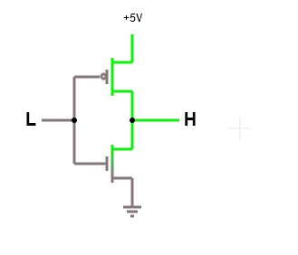
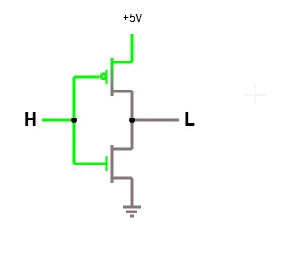
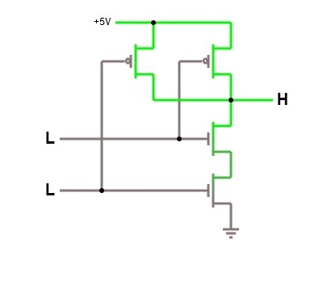
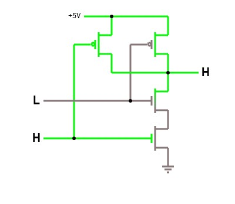
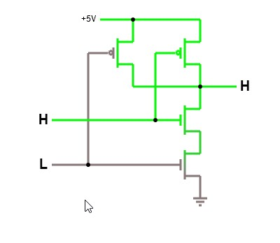
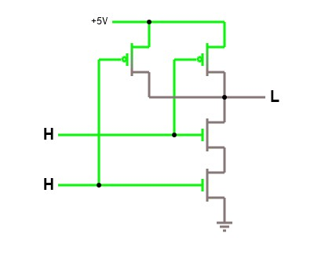
14
операционные системы: от 0 до 1
Рисунок 2.2.2:Электронные потоки
инвертор.
Вход
находится слева
сторона
и вывод с правой стороны.
верхний компонент представляет собой PMOS и
Нижний
компонент представляет собой NMOS,
оба подключаются к входу и выходу
помещать.
(Источник:
(а)Когда вход низкий
(б)Когда вход высокий
Из вентиля НЕ можно создать вентиль И-НЕ:
Рисунок 2.2.3:Электронные потоки
а
Ворота И-НЕ.
(а)Вход = 00, Выход = 1
(б)Вход = 01, Выход = 1
(с)Вход = 10, Выход = 1
(г)Вход = 11, Выход = 0
От ворот И-НЕ у нас есть все остальные ворота. Как показано, такая простая схема выполняет логические операторы в повседневных языках программирования, например. Оператор НЕ ~ выполняется непосредственно схемой инвертора, а оператор & выполняется схемой И и так далее. Код не работает на волшебном черном ящике. В отличие от этого, выполнение кода точное и прозрачное, часто такое же простое, как запуск какой-либо аппаратной схемы. Когда
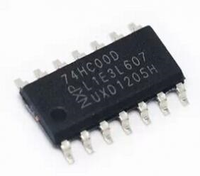
от аппаратного к программному: уровни абстракции
15
мы пишем программное обеспечение, мы просто манипулируем электрическим током на физическом уровне, чтобы запускать соответствующие схемы и получать желаемые результаты. Однако весь этот процесс как-то не связан ни с какой мыслью, связанной с электрическим током. Это настоящая магия, и она скоро будет объяснена.
Одним интересным свойством CMOS является то, чтоk-входной вентиль использует k PMOS
и k транзисторов NMOS(Уокерли, 1999).Все логические вентили состоят из пар транзисторов NMOS и PMOS, а вентили являются строительными блоками всех цифровых устройств, от простых до сложных, включая любой компьютер. Благодаря этому шаблону можно разделить реальную физическую реализацию схемы и логическую реализацию. Цифровые проекты создаются с помощью логических вентилей, а затем «компилируются» в физические схемы. На самом деле позже мы увидим, что логические вентили становятся языком, описывающим работу схем. Понимание того, как работает CMOS, важно для понимания того, как устроен компьютер и, как следствие, как он работает2.
2 Опять же, если вы хотите понять, как
логические вентили составляют компьютер, рассмотрим
Наконец, реализованная схема с ее проводами и транзисторами хранится в предлагаемых курсах на Coursera и
Эдкс ранее.
физически в пакете, называемомчип. Ачипподложка, на которую вытравливается интегральная схема. Однако чип также относится к полностьюРисунок 2.2.4:Физический вид чипа 74HC00
упакованная интегральная схема на потребительском рынке. В зависимости от контекста это понимается по-разному.
Пример 2.2.1.74HC00 — это микросхема с четырьмя вентилями И-НЕ с двумя входами. Микросхема имеет 8 входных контактов и 4 выходных контакта, 1 контакт для подключения к источнику напряжения и 1 контакт для подключения к земле. Это устройство является физической реализацией вентилей И-НЕ, к которым мы можем физически прикасаться и использовать. Но вместо одного вентиля в чипе есть 4 вентиля, которые можно комбинировать. Каждая комбинация включает другую логическую функцию, эффективно создавая другие логические элементы. Именно эта особенность делает чип популярным.
Каждый из приведенных выше вентилей представляет собой простую схему И-НЕ с электронными потоками, как было продемонстрировано ранее. Тем не менее, из множества этих микросхем NAND-gate можно построить простой компьютер. Программное обеспечение на физическом уровне — это просто потоки электронов.
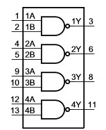
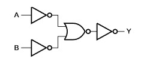
16
операционные системы: от 0 до 1
Рисунок 2.2.5:логика 74HC00
диа-
грамм (Источник: техническое описание 74HC00,
(а)Логическая схема 74HC00
(б)Логическая схема одного вентиля И-НЕ
А
А
Рисунок 2.2.6:Ворота построены
от
Д
Д
вентили И-НЕ,
каждый принимает 2 в-
А
Б
ставить сигналы и генерировать 1 выход
сигнал.
(а)НЕ ворота
(б)И ворота
А
А
А
А
Д
Д
Б
Б
Б
Б
(с)ИЛИ ворота
(г)ворота ИЛИ
от аппаратного к программному: уровни абстракции 17
Как можно создать вышеуказанные ворота с помощью 74HC00? Это просто: так как каждый вентиль имеет 2 входных контакта и 1 выходной контакт, мы можем записать выход 1 вентиля И-НЕ на вход другого вентиля И-НЕ, тем самым объединив И-НЕ.
ворота вместе, чтобы получить диаграммы, как указано выше.
2.3
Помимо логических ворот: машинный язык
2.3.1 Машинный язык
Будучи построенным на воротах, поскольку ворота принимают только последовательность 0 и 1, аппаратное устройство понимает только 0 и 1. Однако устройство принимает только 0
и 1 систематически.Машинный языкпредставляет собой набор уникальных
Машинный язык
битовые шаблоны, которые устройство может идентифицировать и выполнять соответствующее действие. Амашинная инструкцияпредставляет собой уникальный битовый шаблон, который может идентифицировать устройство. В компьютерной системе устройство с его языком называетсяПроцессор-
СэнтеральныйпобработкаUгнида, который контролирует все действия внутри компьютера. Например, в архитектуре x86 шаблон 10100000 означает указание ЦП добавить два числа или 000000101 для остановки компьютера. На заре компьютеров людям приходилось писать полностью в двоичном формате.
Почему такой битовый шаблон заставляет устройство что-то делать? Причина в том, что в основе каждой инструкции лежит небольшая схема, реализующая инструкцию. Подобно тому, как функция/подпрограмма в компьютерной программе вызывается по имени, битовый шаблон — это имя небольшой функции внутри ЦП, которая выполняется, когда ЦП находит ее.
Обратите внимание, что ЦП — не единственное устройство со своим языком. ЦП — это просто имя для обозначения аппаратного устройства, которое управляет компьютерной системой.
Аппаратное устройство может не быть ЦП, но все же иметь свой язык. Устройство со своим машинным языком — этопрограммируемое устройство, так как пользователь может использовать язык, чтобы заставить устройство выполнять различные действия.
Например, у принтера есть свой набор команд для указания ему, как печатать страницу.
18
операционные системы: от 0 до 1
Пример 2.3.1.Пользователь может пользоваться чипом 74HC00, не зная его внутреннего устройства, а только интерфейс для работы с устройством. Во-первых, нам нужно знать его структуру:
1А 1
14 В
Рисунок 2.3.1:74HC00 Пин
копия
Компоновка (Источник: техническое описание 74HC00,
1Б 2
13 4Б
1 год 3
12 4А
2А 4
11 4 года
2Б 5
10 3Б
2г 6
9 3А
Земля 7
8 3 года
Затем функциональность каждого контакта:
Символ
Приколоть
Описание
Таблица 2.3.1:Приколоть
Описание
от 1А до 4А
1, 4, 9, 12
ввод данных
(Источник:
74HC00 даташит,
от 1Б до 4Б
2, 5, 10, 13
ввод данных
от 1 до 4 лет
3, 6, 8, 11
вывод данных
ЗАЗЕМЛЕНИЕ
7
земля (0 В)
Вкк
14
напряжение питания
Наконец, как использовать булавки:
Вход
Выход
Таблица 2.3.2:Функциональный
нА
нБ
Нью-Йорк
Описание
л
л
ЧАС
л
Икс
ЧАС
Икс
л
ЧАС
ЧАС
ЧАС
л
n - число, либо 1, 2, 3,
Функциональное описание предоставляет таблицу истинности со всеми возможными выводами или 4
входы и выходы, которые также описывают использование всех контактов на уровне напряжения de-H = HIGH; Л =
порок. Пользователю нужно знать не реализацию, а на такой таблице НИЗКИЙ уровень напряжения; Х = нет
использовать устройство. Можно сказать, что приведенная выше таблица истинности — это уход за машиной.
язык устройства. Поскольку устройство цифровое, его язык представляет собой набор двоичных строк:
Устройство имеет 8 входных контактов, а это означает, что оно принимает двоичные строки из 8 бит.
от аппаратного к программному: уровни абстракции 19
Устройство имеет 4 выходных контакта, а это означает, что оно производит двоичные строки из 4 бит из 8-битных входов.
Количество входных строк — это то, что понимает устройство, а количество выходных строк — это то, что устройство может произнести. Вместе они составляют язык устройства. Несмотря на то, что это устройство простое, язык, который он может принять, содержит довольно много двоичных строк: 28 + 24 = 272.
Тем не менее, это число является крошечной долей сложного устройства, такого как ЦП, с сотнями контактов.
Если оставить как есть, 74HC00 будет просто устройством NAND с двумя 4-битными входами3.
3 Или просто 4-битный логический элемент И-НЕ, поскольку он может
принимать только 4 бита ввода на макси-
Вход
Выход
мама.
Приколоть
1А
1Б
2А
2Б
3А
3Б
4А
4Б
1 год
2 года
3 года
4 года
Ценить
1
1
0
0
1
1
0
0
0
1
0
1
Входы и выходы, представленные визуально:
1А 1
В
Рисунок 2.3.2:Пины при получении
копия
цифровые сигналы, соответствующие
1Б 1
0 4Б
бинарная строка.
Зеленые сигналы
1Г 0
0 4А
входы; синие сигналы являются выходами.
2А 0
1 4 года
2Б 0
1 3Б
2 года 1
1 3А
ЗАЗЕМЛЕНИЕ
0 3 года
С другой стороны, если реализован вентиль ИЛИ, мы можем построить вентиль ИЛИ с 2 входами только из 74HC00, так как для этого требуется 3 вентиля И-НЕ: 2 входа И-НЕ
вентили и 1 выходной вентиль И-НЕ. Каждый входной вентиль И-НЕ представляет собой только 1-битный вход вентиля ИЛИ. На следующем рисунке выводы каждого входного элемента И-НЕ всегда имеют одинаковые значения (либо оба входа имеют значение A, либо оба входа имеют значение B), чтобы представить однобитовый ввод для окончательного элемента ИЛИ:
20
операционные системы: от 0 до 1
1А А
Вкк
1Б А
4Б
А
С
И-НЕ1
1Г С
4А
2А Б
4 года
Д
NAND3
2Б Б
С 3Б
2 года Д
Д 3А
Б
Д
NAND2
ЗАЗЕМЛЕНИЕ
Д 3Г
(а)2-битная логическая схема вентиля ИЛИ, построенная из 3 NAND
(б)Контакты 3A и 3B принимают значения от 1Y и 2Y.
ворота с 4 контактами только для 2 битов ввода.
Рисунок 2.3.3:2-битная реализация вентиля ИЛИ
упоминание
Таблица 2.3.3:Правда
таблица
ИЛИ
логическая схема.
А
Б
С
Д
Д
0
0
1
1
0
0
1
1
0
1
Для реализации 4-битного вентиля ИЛИ нам потребуется всего четыре микросхемы 74HC00 1.
0
0
1
1
сконфигурированы как вентили ИЛИ, упакованные в виде одного чипа, как показано на рисунке.2.3.4.
1
1
0
0
1
Рисунок 2.3.4:Изготовлен 4-битный чип ИЛИ
1А А1
Вкк
1Б А2
4Б
от четырех устройств 74HC00
1Г С1
4А
2А Б1
4 года
2Б В1
С1 3Б
2 года Д1
Д1 3А
ЗАЗЕМЛЕНИЕ
Y1 3Y
1А А2
Вкк
1Б А2
4Б
1Г С2
4А
2А Б2
4 года
2Б В2
С2 3Б
2Г Д2
Д2 3А
ЗАЗЕМЛЕНИЕ
Y2 3Y
1А А3
Вкк
1Б А3
4Б
1Г С3
4А
2А Б3
4 года
2Б В3
С3 3Б
2Г Д3
Д3 3А
ЗАЗЕМЛЕНИЕ
Y3 3Y
1А А4
Вкк
1Б А4
4Б
1Г С4
4А
2А В4
4 года
2Б В4
С4 3Б
2Г Д4
Д4 3А
ЗАЗЕМЛЕНИЕ
Y4 3Y
от аппаратного к программному: уровни абстракции 21
2.3.2 Язык ассемблера
Язык ассемблера — это символическое представление двоичного машинного кода с помощью мнемонических имен битовых шаблонов. Когда программистам приходилось записывать 0 и 1, это было огромным улучшением. Например, вместо того, чтобы писать 000000101, программист просто писал hlt, чтобы остановить компьютер. Такая абстракция облегчает запоминание инструкций, выполняемых ЦП, и, таким образом, можно запомнить больше инструкций, меньше времени тратится на поиск инструкций по ЦП в битовых формах, и в результате код пишется быстрее.
Понимание языка ассемблера имеет решающее значение для областей низкоуровневого программирования даже по сей день. Чем больше инструкций хочет понять программист, тем глубже требуется понимание архитектуры машины.
Пример 2.3.2.Мы можем собрать устройство с двумя инструкциями по сборке: или
<оп1>, <оп2>
и
или принимает два 4-битных операнда. Это соответствует логическому элементу ИЛИ с 4 входами, построенному из 4 микросхем 74HC00.
nand принимает два 4-битных операнда. Это соответствует одному 74HC00
фишки, оставь как есть.
По сути, ворота в примере2.3.1выполняет инструкции.
До этого момента мы указываем только ввод и вывод и вручную передаем их на устройство. То есть для выполнения операции:
Собрать устройство руками.
Вручную поместите электрические сигналы на контакты.
Во-первых, мы хотим автоматизировать процесс выбора устройства. То есть мы хотим просто написать инструкцию по сборке и устройство, реализующее инструкцию, выбрано правильно. Решить эту проблему просто: дайте каждой инструкции индекс в двоичном коде, называемыйкод операции Таблица 2.3.4:Инструкция-код операции
иликод операциидля краткости, и вставьте его как часть ввода. Значение для каждого сопоставления.
инструкция указана как в таблице2.3.4.
Инструкция
Бинарный код
нанд
00
или
01
22
операционные системы: от 0 до 1
Каждый ввод теперь содержит в начале дополнительные данные: код операции.
Например, инструкция:
и 1100, 1100
соответствует двоичной строке: 0011001100. Первые два бита 00
кодирует инструкцию nand, как указано в таблице выше.
Добавьте другое устройство, чтобы выбрать устройство на основе двоичного кода, характерного для инструкции.
Такое устройство называетсядекодер, важный компонент ЦП, который решает, какую схему использовать. В приведенном выше примере при подаче 0011001100
декодеру, поскольку код операции равен 00, данные отправляются на устройство NAND для вычислений.
Наконец, написание ассемблерного кода — это просто более простой способ написания двоичных строк, понятных устройству. Когда мы пишем ассемблерный код и сохраняем его в текстовом файле, программа, называемаяассемблерпереводит текстовый файл
ассемблер
в двоичные строки, которые устройство может понять. Итак, как вообще может существовать ассемблер? Предположим, что это первый ассемблер в мире, тогда он написан в двоичном коде. В следующей версии жизнь упрощается: программисты пишут ассемблер в ассемблерном коде, затем используют первую версию для компиляции самого себя. Эти двоичные строки затем сохраняются на другом устройстве, которое позже может быть извлечено и отправлено в декодер. Ахранение де-
накопитель
порокэто устройство, хранящее машинные инструкции, представляющее собой массив схем для сохранения состояний 0 и 1.
Декодер построен из логических вентилей, подобных другим цифровым устройствам. Однако запоминающим устройством может быть все, что может хранить 0 и 1 и может быть извлечено. Запоминающее устройство может быть намагниченным устройством, которое использует магнетизм для хранения информации, или оно может состоять из электрических цепей, которые могут изменять и запоминать состояния при приложении напряжения. Независимо от используемой технологии, пока устройство может хранить данные и доступно для извлечения данных, этого достаточно. Действительно, современные устройства настолько сложны, что невозможно и не нужно разбираться во всех деталях реализации. Вместо этого нам нужно только изучить интерфейсы, например. контакты, которые выставляют устройства.
от аппаратного к программному: уровни абстракции 23
текущая инструкция
4-битное ИЛИ
Хранилище
1А А1
Вкк
получить данные
1Б А2
4Б
0011001100
1Г С1
4А
0111111111
2А Б1
4 года
2Б В1
С1 3Б
0111101100
Декодер
2 года Д1
Д1 3А
0010101110
ЗАЗЕМЛЕНИЕ
Y1 3Y
....................
....................
....................
1А А2
Вкк
1Б А2
4Б
1Г С2
4А
2А Б2
4 года
2Б В2
С2 3Б
2Г Д2
Д2 3А
ЗАЗЕМЛЕНИЕ
Y2 3Y
1А А3
В
отправить данные
копия
1Б А3
4Б
1Г С3
4А
2А Б3
4 года
2Б В3
С3 3Б
2Г Д3
Д3 3А
ЗАЗЕМЛЕНИЕ
Y3 3Y
1А А4
В
1А 1
В
копия
копия
1Б А4
4Б
1Б 1
0 4Б
1Г С4
4А
1Г 0
0 4А
2А В4
4 года
2А 0
1 4 года
4-битный И-НЕ
2Б В4
С4 3Б
2Б 0
1 3Б
2Г Д4
Д4 3А
2 года 1
1 3А
ЗАЗЕМЛЕНИЕ
Y4 3Y
ЗАЗЕМЛЕНИЕ
0 3 года
Рисунок 2.3.5:Декодер извлекает
Компьютер по существу реализует этот процесс:
текущая инструкция, указанная
стрелка и
выбирает И-НЕ
устройство для выполнения инструкции nand-
Принестиинструкция с запоминающего устройства.
ция.
РасшифроватьИнструкция.
ВыполнятьИнструкция.
Или, короче, цикл выборка — декодирование — выполнение. Вышеприведенное устройство крайне рудиментарно, но уже представляет собой компьютер спринести–декодировать
–выполнятьцикл. Дополнительные инструкции можно реализовать, добавив больше устройств и выделив больше кодов операций для инструкций, а затем соответствующим образом обновив декодер. Управляющий компьютер Apollo, цифровой компьютер, созданный для космической программы Apollo с 1961 по 1972 год, был полностью построен с вентилями NOR — альтернативой вентилям NAND для создания
24
операционные системы: от 0 до 1
другие логические элементы. Точно так же, если мы продолжим улучшать наше гипотетическое устройство, оно в конечном итоге станет полноценным компьютером.
2.3.3 Языки программирования
Язык ассемблера — это шаг вперед по сравнению с записью 0 и 1. Со временем люди поняли, что многие фрагменты ассемблерного кода имеют повторяющиеся шаблоны использования. Было бы неплохо, если бы вместо того, чтобы писать все повторяющиеся блоки кода заново во всех местах, мы просто ссылались бы на такие блоки кода с помощью более простых в использовании текстовых форм. Например, блок кода на ассемблере проверяет, больше ли одна переменная, чем другая, и если да, то выполняется блок кода, в противном случае выполняется другой блок кода; в C такой блок ассемблерного кода представлен оператором if, близким к человеческому языку.
source1.asm
Рисунок 2.3.6:Повторная сборка
если (...) {
.......
шаблоны обобщаются в новый
} еще {
язык.
.......
}
.................
source2.asm
.................
.................
источник
Люди создали текстовые формы для представления общих блоков ассемблерного кода, таких как приведенный выше синтаксис if, а затем написали программу для перевода текстовых форм в ассемблерный код. Программа, переводящая такие текстовые формы в машинный код, называетсякомпилятор:
компилятор
Любая программная логика, которую может реализовать язык программирования, аппаратная
от железа к ПО: уровни абстракции 25
если (аргумент) {
cmp DWORD PTR [ebp+0x8],0x0
je 80483f7
я = 1;
mov DWORD PTR [ebp-0x4],0x1
} еще {
Компилятор
jmp 80483fe
mov DWORD PTR [ebp-0x4],0x0
я = 0;
}
Рисунок 2.3.7:Из лан-
вернуться к низкоуровневому языку.
также может реализовать. Верно и обратное: любая аппаратная логика, реализованная в схеме, может быть повторно реализована на языке программирования. Простая причина в том, что языки программирования, или языки ассемблера, или машинные языки, или логические вентили — это всего лишь языки для выражения вычислений. Программное обеспечение не может реализовать то, на что не способно аппаратное обеспечение, потому что язык программирования — это просто более простой способ использования базового оборудования. В конце концов, языки программирования транслируются в машинные инструкции, которые действительны для процессора. В противном случае код не запускается, поэтому программное обеспечение бесполезно. И наоборот, программное обеспечение может делать все, что может аппаратное обеспечение (которое запускает программное обеспечение), поскольку языки программирования — это просто более простой способ использования аппаратного обеспечения.
В действительности, хотя все языки эквивалентны по мощности, не все из них способны выражать программы друг друга. Языки программирования различаются между двумя концами спектра: высоким уровнем и низким уровнем.
Чем выше уровень языка программирования, тем дальше он от аппаратного обеспечения. В некоторых высокоуровневых языках программирования, таких как Python, программист не может манипулировать базовым оборудованием, несмотря на то, что может выполнять те же вычисления, что и низкоуровневые языки программирования. Причина в том, что языки высокого уровня хотят скрыть детали аппаратного обеспечения, чтобы освободить программистов от работы с ненужными деталями, не относящимися к текущим проблемным областям. Такое удобство, однако, не является бесплатным: оно требует, чтобы программное обеспечение содержало дополнительный код для управления деталями оборудования (например, памятью), что замедляет работу кода и делает аппаратное программирование трудным или невозможным. Чем больше абстракций накладывает язык программирования, тем сложнее писать низкоуровневое программное обеспечение, такое как драйверы оборудования или операционная система. По этой причине язык C обычно выбирают для написания операционной системы, поскольку C — это всего лишь тонкая оболочка базового оборудования,
26
операционные системы: от 0 до 1
легко понять, как именно работает аппаратное устройство при выполнении определенного фрагмента кода C.
Каждый язык программирования представляет собой способ мышления о программах. Языки программирования более высокого уровня помогают сосредоточиться на проблемных областях, которые вообще не связаны с аппаратным обеспечением и где производительность программиста важнее, чем производительность компьютера. Языки программирования более низкого уровня помогают сосредоточиться на внутренней работе машины, поэтому они лучше всего подходят для проблемных областей, связанных с аппаратным обеспечением управления. Вот почему существует так много языков. Используйте правильные инструменты для правильной работы, чтобы достичь наилучших результатов.
2,4
Абстракция
Абстракцияэто метод сокрытия сложности, которая не имеет отношения к проблеме в контексте. Например, написание программ без какого-либо другого уровня, кроме самого нижнего уровня: со схемами. Человеку нужно не только глубокое понимание того, как работают схемы, что делает проектирование схемы гораздо более неясным, потому что разработчик должен смотреть на необработанные схемы, но думать на более высоком уровне, таком как логические вентили. Это отвлекающий процесс, так как дизайнер должен постоянно воплощать идею в схемы. Это возможно, когда дизайнер просто обдумывает свои высокоуровневые идеи, а затем воплощает их в схемы. Это не только более эффективно, но и более точно, поскольку дизайнер может сосредоточить все свои усилия на проверке проекта с высокоуровневым мышлением. Когда приходит новый дизайнер, он может легко понять проекты высокого уровня, поэтому может продолжать разрабатывать или поддерживать существующие системы.
2.4.1 Почему абстракция работает
Во всех слоях проявляются абстракции:
Логические вентили абстрагируются от деталей CMOS.
Машинный язык абстрагируется от деталей логических вентилей.
Язык ассемблера абстрагируется от деталей машинных языков.
Язык программирования абстрагируется от деталей языков ассемблера.
от аппаратного к программному: уровни абстракции 27
Мы видим повторяющиеся паттерны того, как нижние слои строят верхние: Нижний слой имеет повторяющийся паттерн. Затем этот повторяющийся шаблон удаляется и на его основе строится язык.
Более высокий уровень удаляет характерные для слоя (неповторяющиеся) детали, чтобы сосредоточиться на повторяющихся деталях.
Повторяющиеся детали даются новым и более простым языком, чем языки нижних слоев.
Что нужно понимать, так это то, что каждый слой простоболее удобный язык для
описыватьнижний слой. Только после того, как описание будет полностью создано на языке более высокого уровня, оно будетреализованос языком нижнего слоя.
Уровень CMOS имеет повторяющийся шаблон, который обеспечивает надежную трансляцию логических элементов в схемы CMOS:k-входной вентиль использует k PMOS
и k транзисторов NMOS(Уокерли, 1999).Поскольку в цифровых устройствах используется исключительно КМОП, возник язык для описания идей более высокого уровня при сокрытии КМОП-схем: логические вентили.
Logic Gates скрывает язык схем и фокусируется на том, как реализовать примитивные логические функции и комбинировать их для создания новых функций. Все логические вентили получают ввод и генерируют вывод в виде двоичных чисел. Благодаря этим повторяющимся шаблонам логические вентили скрыты для нового языка: ассемблера, который представляет собой набор предопределенных двоичных шаблонов, заставляющих базовые вентили выполнять действие.
Вскоре люди поняли, что многие повторяющиеся шаблоны возникают внутри языка ассемблера. Повторяющиеся блоки кода ассемблера появляются в исходных файлах ассемблера, которые выражают одну и ту же или похожую идею. Было много таких идей, которые можно надежно воплотить в ассемблерный код. Таким образом, были извлечены идеи для встраивания в языки программирования высокого уровня, которые сегодня изучает каждый программист.
Повторяющиеся паттерны — ключ к абстракции. Повторяющиеся шаблоны — вот почему абстракция работает. Без них язык не может быть построен, и поэтому
28
операционные системы: от 0 до 1
никакой абстракции. К счастью, человечество уже разработало систематическую дисциплину для изучения закономерностей: математику. Цитата из британского математика Г. Х. Харди(2005):
Математик, как художник или поэт, создает узоры. Если его узоры более постоянны, чем их, то это потому, что они сделаны из идей.
Разве это не математическая формула, представляющая закономерность? Переменная представляет значения с теми же свойствами, которые заданы ограничениями? Математика предоставляет формальную систему для выявления и описания существующих закономерностей в природе. По этой причине эту систему, безусловно, можно применять в цифровом мире, который является лишь подмножеством реального мира. Математику можно использовать как общий язык, чтобы облегчить перевод между слоями и помочь в понимании слоев.
Язык программирования
Язык ассемблера
Математика
Проблемная область
Логические ворота
Схема
Рисунок 2.4.1:Математика как
универсальный язык для
все слои.
Поскольку все слои могут выражать математические
2.4.2 Почему абстракция снижает сложность
матика со своими технологиями, каждый
Абстракция за счет построения языка, безусловно, повышает производительность за счет того, что полосовой слой может быть переведен на другой язык.
слой.
пинговать не относящиеся к проблеме детали. Представьте, что вы пишете программы без какого-либо другого макета, кроме самого нижнего уровня: со схемами. Вот как возникает сложность: когда идеи высокого уровня выражаются языком более низкого уровня, как показано в приведенном выше примере. К сожалению, так обстоит дело с программным обеспечением, поскольку в настоящее время языки программирования больше внимания уделяют программному обеспечению, а не предметным областям. То есть без предварительных знаний код, написанный на языке, не может выразить знание своего целевого домена. Другими словами,язык является выразительным, если его синтаксис предназначен для выражения проблемной области, которую он пытается решить. Рассмотрим этот пример: то естьчтоскорее подойдет
от железа к ПО: уровни абстракции 29
вкакэто будет сделать.
Пример 2.4.1.Графвиз(http://www.graphviz.org/)— это программное обеспечение для визуализации, которое предоставляет язык, называемый точкой, для описания графа:
орграф {
а -> б;
б -> в;
а -> в;
б
д
г -> в;
}
с
Рисунок 2.4.2:Из описания графика-
Как видно, код отлично выражает то, как граф соединяется с графом.
связанный. Даже непрограммист может легко понять и использовать такой язык. Реализация на C была бы более проблематичной, и это при условии, что функции для рисования графиков уже доступны. Чтобы нарисовать линию, в C мы могли бы написать что-то вроде: draw_line(a, b);
Тем не менее, он все еще многословен по сравнению с:
а -> б;
Кроме того, a и b должны быть определены в C по сравнению с неявными узлами в точечном языке. Однако, если не учитывать многословие, то C
все еще имеет ограничение: он не может изменить свой синтаксис в соответствии с проблемной областью. Язык предметной области может быть даже более подробным, но он делает предметную область более понятной. Если проблемная область должна быть выражена в C, то это ограничение синтаксисом C. Поскольку C не является
30
операционные системы: от 0 до 1
специализированный язык для предметной области, который, но являетсяобщее назначениеязык программирования, знание предметной области скрыто в деталях реализации. В результате для расшифровки и извлечения знаний предметной области требуется программист на C. Если знание предметной области не может быть извлечено, то дальнейшее развитие программного обеспечения невозможно.
Пример 2.4.2.В Linux полно приложений, управляемых многими предметно-ориентированными языками, которые размещаются в каталоге /etc, например веб-сервер.
Вместо того, чтобы перепрограммировать программное обеспечение, для него создается язык, не зависящий от предметной области.
В общем, код, который может выражать проблемную область, должен быть понятен эксперту в предметной области. Даже в области программного обеспечения полезно создавать язык из повторяющихся шаблонов программирования. Это помогает людям узнать о существовании таких шаблонов в коде и, таким образом, упрощает поддержку программного обеспечения, поскольку структура программного обеспечения видна как язык. Только язык программирования, способный трансформироваться в соответствии с проблемной областью, может достичь этой цели. Такой язык называетсяпрограммируемый язык программирования. К сожалению, такой подход к тому, чтобы сделать структуру программного обеспечения видимой, не нравится программистам, поскольку для его поддержки необходимо создать новый язык вместе с новым набором инструментов. Таким образом, структура программного обеспечения и знание предметной области скрыты внутри кода, написанного на синтаксисе языка общего назначения, и если программист не знаком или даже не знает о существовании шаблона кода, то понять код безнадежно. . Ярким примером является чтение кода C, который управляет оборудованием, например. операционная система: если программист абсолютно ничего не знает об оборудовании, то он не сможет читать и писать код операционной системы на C, даже если бы у него было 20 лет написания кода приложений на C.
С помощью абстракции инженер-программист также может понять внутреннюю работу устройства без специальных знаний о проектировании физических схем, что позволяет инженеру-программисту писать код, управляющий устройством.
Разделение между логической и физической реализацией также влечет за собой возможность повторного использования конструкций вентилей, даже если базовые технологии
от аппаратного к программному обеспечению: уровни абстракции 31
измененный. Например, в далеком будущем биологический компьютер может стать реальностью, а гейты могут быть реализованы не в виде CMOS, а в виде каких-то биологических клеток, например. как живые клетки; в любой технологии: электрической или биологической, до тех пор, пока логические вентили реализованы физически, может быть реализован один и тот же компьютерный дизайн.
Компьютерная архитектура
Чтобы писать код более низкого уровня, программист должен понимать архитектуру компьютера. Это похоже на то, как когда кто-то пишет программы в программной среде, он должен знать, какие проблемы решает среда, и как использовать структуру с помощью предоставляемых ею программных интерфейсов.
Но прежде чем перейти к определению того, что такое компьютерная архитектура, мы должны понять, что именно представляет собой компьютер, поскольку многие до сих пор думают, что компьютер — это обычный компьютер, который мы ставим на стол, или, в лучшем случае, сервер.
Компьютеры бывают разных форм и размеров и представляют собой устройства, о которых люди никогда не думают, что они компьютеры, и этот код может работать на таких устройствах.
3.1
Что такое компьютер?
Акомпьютераппаратное устройство, состоящее как минимум из процессора (CPU),компьютер
запоминающее устройство и интерфейсы ввода/вывода. Все компьютеры можно разделить на два типа:
Одноцелевой компьютерэто компьютер, созданный ваппаратный уровеньдля конкретных задач. Например, специальные кодировщики/декодеры приложений, таймеры, процессоры изображений/видео/звука.
Компьютер общего назначенияэто компьютер, который можно запрограммировать (без модификации его аппаратного обеспечения) для эмуляции различных функций одноцелевого
34
операционные системы: от 0 до 1
компьютеры.
3.1.1 Сервер
Асерверпредставляет собой универсальный высокопроизводительный компьютер с огромным
сервер
источники для предоставления масштабных услуг для широкой аудитории. Аудитория — люди, персональные компьютеры которых подключены к серверу.
Рисунок 3.1.1:Блейд-серверы. Каждый
блейд-сервер — это компьютер с
модульная конструкция оптимизирует использование
физического пространства и энергии.
Корпус блейд-серверов называется
шасси.(Источник:Викимедиа,автор: Викторгригас)
3.1.2 Настольный компьютер
Анастольный компьютерпредставляет собой универсальный компьютер с входом и выходом.
настольный компьютер
поставить систему, предназначенную для пользователя-человека, с умеренными ресурсами, достаточными для регулярного использования. Система ввода обычно включает в себя мышь и клавиатуру, а система вывода обычно состоит из монитора, который может отображать большое количество пикселей. Компьютер заключен в корпус, достаточно большой для размещения различных компонентов компьютера, таких как процессор, материнская плата, блок питания, жесткий диск и т. д.
Рисунок 3.1.2:Типичный
рабочий стол
компьютер.
компьютерная архитектура
35
3.1.3 Мобильный компьютер
Амобильный компьютерпохож на настольный компьютер с меньшим количеством ресурсов
мобильный компьютер
но можно носить с собой.
Рисунок 3.1.3:Мобильные компьютеры
(а)Ноутбук
(б)Планшет
(с)А
мобильный
телефон
3.1.4 Игровые приставки
Игровые приставки похожи на настольные компьютеры, но оптимизированы для игр. Вместо клавиатуры и мыши системой ввода игровой консоли являются игровые контроллеры, представляющие собой устройства с несколькими кнопками для управления экранными объектами; выходная система - телевизор. Корпус похож на настольный компьютер, но меньше. В игровых консолях используются специальные процессоры и графические процессоры, но они аналогичны тем, что используются в настольных компьютерах. Например, в первом Xbox используется специальный процессор Intel Pentium III.
(а)Игровая приставка 4
(б)Xbox One
(с)Wii U
Рисунок 3.1.4:Текущее поколение
Игра
Портативные игровые приставки аналогичны игровым приставкам, но включают консоли.
обе системы ввода и вывода вместе с компьютером в одном корпусе.
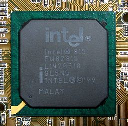
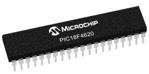
36
операционные системы: от 0 до 1
Рисунок 3.1.5:Некоторые портативные
Консоли
(а)Нинтендо ДС
(б)ПС Вита
3.1.5 Встроенный компьютер
АнВстраиваемый компьютерпредставляет собой одноплатный или однокристальный компьютер с
Встраиваемый компьютер
ресурсы, предназначенные для интеграции в более крупные аппаратные устройства.
Рисунок 3.1.6:АнИнтел
82815
Графический контроллер и контроллер памяти
Амикроконтроллерпредставляет собой встроенный компьютер, предназначенный для управления Hub
встроенный
на компе мать-
другие аппаратные устройства. Микроконтроллер смонтирован на микросхеме. Плата микроконтроллеров. (Источник:Викимедиа,автор: есть компы общего назначения, но с ограниченными ресурсами так что это куррен)
способны выполнять только одну или несколько специализированных задач. Эти компьютеры используются для одной цели, но они по-прежнему универсальны, поскольку их можно запрограммировать для выполнения различных задач, в зависимости от требований, без изменения базового оборудования.
Другой тип встроенного компьютерасистема на кристалле. Асистема на кристаллеэто полноценный компьютер на одном чипе. Хотя микроконтроллер размещен на чипе, его назначение другое: управлять некоторыми аппаратными средствами. Микроконтроллер обычно проще и более ограничен в аппаратных ресурсах, т.к.Рисунок 3.1.7:PIC-микрокон-он специализируется только на одной цели при работе, тогда как системный-контроллер. (Источник:Микрочип)
чип — это компьютер общего назначения, который может служить нескольким целям. Система на кристалле может работать как обычный настольный компьютер, способный загружать операционную систему и запускать различные приложения. Система на кристалле обычно присутствует в смартфоне, таком как Apple A5 SoC.
микроконтроллер
в Ipad2 и iPhone 4S или Qualcomm Snapdragon, используемом во многих телефонах Android.
Рисунок 3.1.8:Apple A5 SoC
Будь то микроконтроллер или система на кристалле, должна быть среда, в которой эти устройства могут подключаться к другим устройствам. Эта среда представляет собой печатную плату, называемуюпечатная плата–ппечатныйСсхемаБвесло.Апечатная платапредставляет собой физическую плату, которая содержит линии и контактные площадки для обеспечения потоков электронов между электрическими и электронными компонентами. Без печатной платы устройства не могут быть объединены для создания более крупного устройства. Пока эти
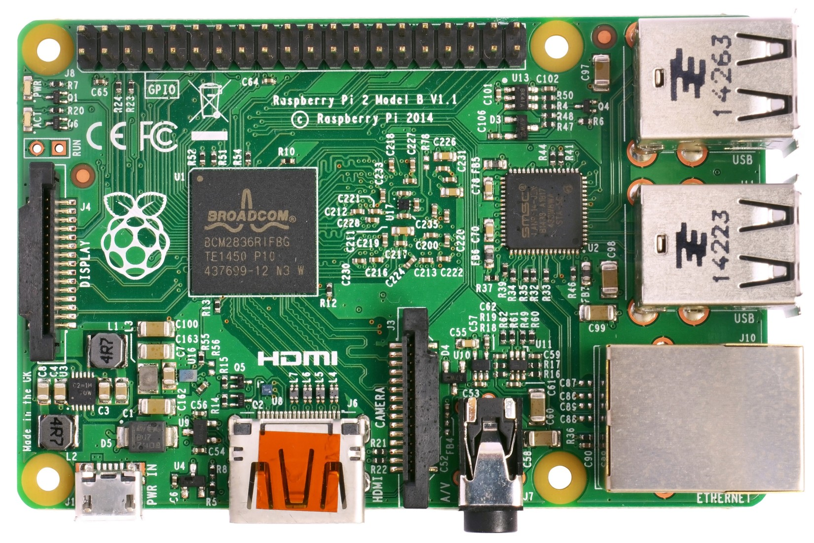
компьютерная архитектура
37
устройства скрыты внутри более крупного устройства и вносят вклад в более крупное устройство, которое работает на уровне более высокого уровня для целей более высокого уровня, они являются встроенными устройствами. Поэтому написание программы для встроенного устройства называетсявстроенное программирование. Встроенные компьютеры используются в автоматически управляемых устройствах, включая электроинструменты, игрушки, имплантируемые медицинские устройства, офисные машины, системы управления двигателем, бытовую технику, пульты дистанционного управления и другие типы встроенных систем.
40 контактов: 28x GPIO, I2C, SPI, UART
с'ДЕЛр
1
с
PW
2x USB 2.0
утаТ
т
С
Модель Raspberry Pi B+ V1.2
С
А
НУ (С) Raspberry Pi 2014
р
е
я
4x USB +
ЦП/ГП
т д
С
Ethernet
контроллер
о я
л с
Д
Бродком
с
LAN9514
м
Делать
2x USB 2.0
BCM2835
С т
о т
класть
р о
512 МБ SDRAM
с б
я н
провайдер
о
Д
я
текущий
HDMI
С
3,3 В
ограничитель
&
С
1,8 В
Регулятор
защита от полярности
Ethernet
ра
т
о
е
ты э
я
RJ45
о т
дю
м
я
а
РС
+
а
м о
о
5
Микро
п
е
власть
С
.
д
хороший
3 месяца
я
Выход HDMI
С
В
USB
Ethernet
Мощность в
4-полюсный разъем
(а)Функциональный вид.
(б)Физический
SoC — Broadcom BCM2835.
Вид
Микроконтроллером является контроллер Ethernet LAN9514.
(Источник:Викимедиа,автор: Efa2)Рисунок 3.1.9:Малина
Пи
В+
Грань между микроконтроллером и системой на кристалле размыта. Если Rev 1.2, одноплатный компьютер
который включает в себя как систему на кристалле
аппаратное обеспечение продолжает развиваться более мощное, тогда микроконтроллер может получить и микроконтроллер.
достаточно ресурсов, чтобы запустить на нем минимальную операционную систему для множества специализированных целей. Напротив, система на кристалле достаточно мощна, чтобы справиться с работой микроконтроллера. Однако использование системы на кристалле в качестве микроконтроллера было бы неразумным выбором, поскольку цена значительно возрастет, но мы также тратим впустую аппаратные ресурсы, поскольку программное обеспечение, написанное для микроконтроллера, требует небольших вычислительных ресурсов.
3.1.6 Программируемый массив Field Gate
Программируемая пользователем вентильная матрица(ПЛИС) представляет собой аппаратный массив ре-
Программируемые ворота
настраиваемые вентили, которые делают структуру схемы программируемой после нее
Множество
отгружается с завода1. Напомним, что в предыдущей главе 1 Вот почему это называетсяПолеПрограммируемый массив вентилей. Это изменчиво
каждая микросхема 74HC00 может быть сконфигурирована как гейт, а более навороченная
«в поле», где оно применяется.
Устройство может быть построено путем объединения нескольких микросхем 74HC00. В подобном
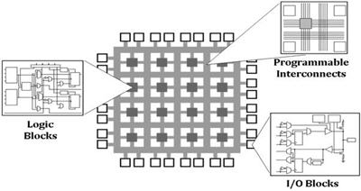
38
операционные системы: от 0 до 1
Таким образом, каждое устройство FPGA содержит тысячи микросхем, называемыхлогические блоки, который является более сложной микросхемой, чем микросхема 74HC00, которую можно настроить для реализации функции булевой логики. Эти логические блоки могут быть объединены в цепочку для создания высокоуровневой аппаратной функции. Эта высокоуровневая функция обычно представляет собой специальный алгоритм, требующий высокоскоростной обработки.
Рисунок 3.1.10:ПЛИС
Архитектура (Источник:
Цифровые устройства могут быть разработаны путем объединения логических элементов без учета реальных компонентов схемы, поскольку физические схемы представляют собой просто кратные схемы КМОП. Цифровое оборудование, в том числе различные компоненты компьютера, разрабатывается путем написания кода, как обычный программист, с использованием языка, описывающего, как вентили соединяются вместе. Этот язык называетсяЯзык описания оборудования. Позже описание аппаратного обеспечения компилируется в описание подключенных электронных компонентов, называемыхсписок соединений, который является более подробным описанием того, как связаны вентили.
Разница между FPGA и другими встроенными компьютерами заключается в том, что программы в FPGA реализованы на уровне цифровой логики, тогда как программы во встроенных компьютерах, таких как микроконтроллеры или устройства на кристалле, реализованы на уровне ассемблерного кода. Алгоритм, написанный для устройства FPGA, представляет собой описание алгоритма в логических элементах, которым затем устройство FPGA следует по описанию, чтобы настроить себя для запуска алгоритма. Алгоритм, написанный для микроконтроллера, находится в инструкциях по сборке, которые процессор может понять и действовать соответственно.
FPGA применяется в тех случаях, когда специализированные операции неприемлемы и дорогостоящи для выполнения на обычном компьютере, например, обработка медицинских изображений в реальном времени, система круиз-контроля, прототипирование схем, обработка видео.
компьютерная архитектура
39
кодирование/декодирование и т. д. Эти приложения требуют высокоскоростной обработки, недостижимой для обычного процессора, поскольку процессор тратит значительное количество времени на выполнение множества неспециализированных инструкций, которые могут составлять до тысяч инструкций и более, чтобы реализовать специализированную операцию, таким образом, больше схем на физическом уровне для выполнения одной и той же операции. Устройство FPGA не несет таких накладных расходов; вместо этого он выполняет одну специализированную операцию, реализованную непосредственно в аппаратном обеспечении.
3.1.7 Специализированная интегральная схема
АнАприложение-СконкретныйяинтегрированныйСсхема(илиASIC) — это чип, предназначенный для конкретной цели, а не для общего использования. ASIC не содержит общего массива логических блоков, которые можно переконфигурировать для адаптации к любой операции, такой как FPGA; вместо этого каждый логический блок в ASIC создается и оптимизируется для самой схемы. FPGA можно рассматривать как этап прототипирования ASIC, а ASIC — как завершающий этап производства схемы. ASIC еще более специализирован, чем FPGA, поэтому может достигать еще более высокой производительности. Тем не менее, ASIC очень дороги в производстве, и после изготовления схемы, если случаются ошибки проектирования, все выбрасывается, в отличие от устройств FPGA, которые можно просто перепрограммировать из-за универсальной вентильной матрицы.
3.2
Компьютерная архитектура
В предыдущем разделе были рассмотрены различные классы компьютеров. Независимо от формы и размера, каждый компьютер предназначен для архитектора от высокого до низкого уровня.
Компьютерная архитектура"="Архитектура набора инструкций+Компьютерная организация+Аппаратное обеспечениеНа самом высоком уровне находится архитектура набора инструкций.
На среднем уровне находится компьютерная организация.
На самом низком уровне находится аппаратное обеспечение.
40
операционные системы: от 0 до 1
3.2.1 Архитектура набора инструкций
АнНабор инструкцийэто основной набор команд и инструкций, которые микропроцессор понимает и может выполнять.
АняинструкцияСэтАархитектура, илиЭТО, — это дизайн среды, реализующей набор инструкций. По сути, среда выполнения похожа на интерпретаторы языков высокого уровня. Проект включает в себя все инструкции, регистры, прерывания, модели памяти (как память устроена для использования программами), режимы адресации, ввод-вывод и т. д. ЦП. Чем больше функций (например, больше инструкций) имеет ЦП, тем больше схем требуется для его реализации.
3.2.2 Компьютерная организация
Компьютерная организацияэто функциональный взгляд на конструкцию компьютера.
Компьютерная организация
В этом представлении аппаратные компоненты компьютера представлены в виде блоков с входом и выходом, которые соединяются друг с другом и формируют дизайн компьютера. Два компьютера могут иметь одну и ту же ISA, но разные организации. Например, процессоры AMD и Intel реализуют x86.
ISA, но аппаратные компоненты каждого процессора, составляющие среду для ISA, не одинаковы.
Компьютерные организации могут различаться в зависимости от конструкции производителя, но все они основаны на архитектуре фон Неймана2: 2Джон фон Нейманматематик и физик, изобрел
компьютерная архитектура.
Процессор
Память
Вход и
Рисунок 3.2.1:Фон-Нейман
Выход
Архитектура
Шина управления
Адресная шина
Шина данных
системная шина
Процессорнепрерывно извлекает инструкции из основной памяти и выполняет.
компьютерная архитектура
41
Памятьхранит программный код и данные.
Автобуспредставляют собой электрические провода для передачи сырых битов между вышеуказанными компонентами.
Устройства ввода/вывода- это устройства, которые вводят данные в компьютер, например, клавиатуру, мышь, датчик и т. д., и получают выходные данные от компьютера, т. е. монитор принимает информацию, отправленную ЦП, для ее отображения, светодиод включается/выключается в соответствии с шаблоном, вычисленным ЦП, и т. д.
Компьютер фон-Неймана работает, сохраняя свои инструкции в основной памяти, а ЦП многократно извлекает эти инструкции во внутреннюю память для выполнения, одну за другой. Данные передаются по шине данных между ЦП, памятью и устройствами ввода-вывода, а места для хранения в устройствах передаются по адресной шине ЦП. Эта архитектура полностью реализуетвыборка — декодирование — выполнениецикл.
Более ранние компьютеры были просто точной реализацией архитектуры фон Неймана, где ЦП, память и устройства ввода-вывода обменивались данными через одну и ту же шину. Сегодня в компьютере больше шин, каждая из которых специализирована для определенного типа трафика. Однако по своей сути они по-прежнему являются архитектурой фон Неймана. Чтобы написать ОС для компьютера фон Неймана, программист должен уметь понимать и писать код, управляющий основными компонентами: процессором, памятью, устройствами ввода-вывода и шиной.
Процессор, илиСэнтеральныйпобработкаUгнида, является сердцем и мозгом любой компьютерной системы. Поймите, что ЦП необходим для написания ОС с нуля: чтобы использовать эти устройства, программист должен управлять ЦП, чтобы использовать программные интерфейсы других устройств. ЦП — это единственный способ, так как ЦП — это единственное прямое устройство, которое может использовать программист, и единственное устройство, которое понимает код, написанный программистом.
В ЦП многие концепции ОС уже реализованы непосредственно в аппаратном обеспечении, например. переключение задач, пейджинг. Программист ядра должен знать, как использовать аппаратные функции, чтобы избежать дублирования такой концепции в программном обеспечении, что приводит к пустой трате ресурсов компьютера.
Встроенные в ЦП функции ОС повышают как производительность ОС, так и производительность разработчиков, поскольку эти функции представляют собой реальное оборудование, самый низкий возможный уровень, и разработчики могут свободно реализовывать такие функции.
42
операционные системы: от 0 до 1
Чтобы эффективно использовать ЦП, программист должен понимать документацию, предоставленную производителем ЦП. Например,Intel®
Руководства разработчика программного обеспечения для архитектур 64 и IA-32.
Хорошо поняв архитектуру одного ЦП, легче изучить другие архитектуры ЦП.
ЦП — это реализация ISA, фактически реализация языка ассемблера (и в зависимости от архитектуры ЦП язык может различаться). Язык ассемблера — это один из интерфейсов, который предоставляется инженерам-программистам для управления процессором, то есть для управления компьютером.
Но как можно управлять каждым компьютерным устройством, имея доступ только к центральному процессору? Простой ответ заключается в том, что ЦП может связываться с другими устройствами через эти два интерфейса, управляя ими: Регистры — это аппаратный компонент для высокоскоростного доступа к данным и связи.
Регистры
связь с другими аппаратными устройствами. Регистры позволяют программному обеспечению напрямую управлять аппаратным обеспечением путем записи в регистры устройства или получать информацию от аппаратного устройства при чтении из регистров устройства.
Не все регистры используются для связи с другими устройствами. В ЦП большинство регистров используются в качестве высокоскоростного хранилища для временных данных. Другие устройства, с которыми ЦП может взаимодействовать, всегда имеют набор регистров для взаимодействия с ЦП.
Порт — это специализированный регистр в аппаратном устройстве, используемом для связи.
Порт
с другими устройствами. Когда данные записываются в порт, аппаратное устройство выполняет некоторую операцию в соответствии со значениями, записанными в порт. Разница между портом и регистром заключается в том, что порт не хранит данные, а делегирует данные какой-либо другой схеме.
Эти два интерфейса чрезвычайно важны, поскольку они являются единственными интерфейсами для управления оборудованием с помощью программного обеспечения. Написание драйверов устройств — это, по сути, изучение функциональности каждого регистра и того, как правильно их использовать для управления устройством.
Памятьэто запоминающее устройство, которое хранит информацию. Память состоит
Память
из многих клеток. Каждая ячейка представляет собой байт со своим номером адреса, поэтому ЦП может
компьютерная архитектура
43
используйте такой номер адреса для доступа к точному местоположению в памяти. Память — это место, где программные инструкции (в форме машинного языка) хранятся и извлекаются для выполнения ЦП; память также хранит данные, необходимые некоторым программам. Память в машине фон Неймана не различает, какие байты являются данными, а какие байтами являются программными инструкциями. Это зависит от программного обеспечения, и если каким-то образом байты данных извлекаются и выполняются как инструкции, ЦП все равно делает это, если такие байты представляют действительные инструкции, но это приведет к нежелательным результатам. Для процессора нет кода и данных; оба являются просто разными типами данных, с которыми он может действовать: один говорит ему, как делать что-то определенным образом, а другой является необходимым материалом для выполнения такого действия.
Оперативная память управляется устройством, называемымконтроллер памяти. В настоящее время это устройство встроено в большинство процессоров, поэтому ЦП имеет выделенную шину памяти, соединяющую процессор с ОЗУ. На более старых ЦП3, как-3 до ЦП, выпущенных в 2009 г.
когда-либо это устройство было расположено в чипе, также известном какМЧилиМЭмори
СконтроллерЧАСуб. В этом случае ЦП взаимодействует не напрямую с ОЗУ, а с микросхемой MCH, и эта микросхема затем обращается к памяти для чтения или записи данных. Первый вариант обеспечивает лучшую производительность, так как в обмене данными между ЦП нет посредника.
и память.
Системная шина
Системная шина
Контроль
Контроль
Процессор
Адрес
Память
Адрес
МЧ
Память
Данные
Данные
МЧ
Процессор
(а)Старый процессор
(б)Современный процессор
Рисунок 3.2.2:ЦП - Память
На физическом уровне оперативная память реализована в виде сетки ячеек, которые каждая связь
содержат транзистор и электрическое устройство, называемоеконденсатор, который хранит
конденсатор
заряжать на короткие промежутки времени. Транзистор управляет доступом к конденсатору; при включении он позволяет считывать или записывать на конденсатор небольшой заряд. Заряд на конденсаторе медленно рассеивается,
44
операционные системы: от 0 до 1
требующие включения схемы обновления для периодического считывания значений из ячеек и записи их обратно после усиления от внешнего источника питания.
Автобусэто подсистема, которая передает данные между компонентами компьютера
Автобус
или между компьютерами. Физически шины — это просто электрические провода, которые соединяют все компоненты вместе, и каждый провод передает один большой блок данных. Общее количество проводов называетсяширина шины, и зависит
ширина шины
от того, сколько проводов может поддерживать ЦП. Если ЦП может принимать только 16
бит за раз, тогда шина имеет 16 проводов, соединяющих компонент с ЦП, что означает, что ЦП может получать только 16 бит данных за раз.
3.2.3 Аппаратное обеспечение
Аппаратное обеспечение — это конкретная реализация компьютера. Линия процессоров реализует одну и ту же архитектуру набора команд и использует почти идентичные организации, но различается аппаратной реализацией. Например, семейство Core i7 представляет собой модель для настольных компьютеров, которая является более мощной, но потребляет больше энергии, а другая модель для ноутбуков менее производительна, но более энергоэффективна. Чтобы написать программное обеспечение для аппаратного устройства, нам редко нужно понимать аппаратную реализацию, если доступны документы. Организация компьютера и особенно архитектура набора команд более важны для программиста операционной системы. По этой причине следующая глава посвящена изучению архитектуры x86.
архитектура набора команд в деталях.
3.3
архитектура x86
Ачипсетэто чип с несколькими функциями. Исторически сложилось так, что набор микросхем фактически представляет собой набор отдельных микросхем, каждая из которых отвечает за определенную функцию, например.
контроллер памяти, графические контроллеры, сетевой контроллер, контроллер питания и т. д. По мере развития аппаратного обеспечения набор микросхем был объединен в одну микросхему, что обеспечило больше места, энергии и экономичности. В настольном компьютере различные аппаратные устройства соединены друг с другом через печатную плату, называемуюматеринская плата. Для каждого процессора требуется совместимая материнская плата, на которой он может размещаться. Каждая материнская плата определяется моделью чипсета, которая
компьютерная архитектура
45
определяют среду, которой ЦП может управлять. Эта среда обычно состоит из
слот или более для процессора
набор микросхем из двух микросхем, которые являются микросхемами северного и южного мостов.
–Чип северного моста отвечает за высокопроизводительную связь между ЦП, оперативной памятью и графической картой.
–Микросхема южного моста отвечает за связь с вводом-выводом.
устройства и другие устройства, которые не чувствительны к производительности.
слоты для карт памяти
слот или более для графических карт.
общие слоты для других устройств, например. сетевая карта, звуковая карта.
порты для устройств ввода-вывода, например. клавиатура, мышь, USB.
Чтобы написать полную операционную систему, программист должен понимать, как программировать эти устройства. В конце концов, операционная система автоматически управляет аппаратным обеспечением, освобождая при этом прикладные программы. Однако из всех компонентов обучение программированию ЦП является наиболее важным, поскольку это компонент, присутствующий в любом компьютере, независимо от его типа. По этой причине основное внимание в этой книге будет уделено тому, как программировать процессор x86. Даже сосредоточившись исключительно на этом устройстве, можно написать достаточно хорошую минимальную операционную систему. Причина в том, что не все компьютеры включают в себя все устройства, как в обычном настольном компьютере. Например, встроенный компьютер может иметь только ЦП.
и ограниченная внутренняя память с контактами для ввода и вывода; тем не менее, операционные системы были написаны для таких устройств.
Тем не менее, научиться программировать процессор x86 — сложная задача, для которой написано 3 основных руководства: почти 500 страниц для тома 1, более 2000 страниц для тома 2 и более 1000 страниц для тома 3. Это впечатляющий подвиг для программист, чтобы освоить все аспекты программирования процессоров x86.
46
операционные системы: от 0 до 1
Рисунок 3.3.1:Материнская плата
зация
Процессор
Часы
Графика
Лицевая сторона
Генератор
разъем для карты
автобус
Чипсет
Слоты памяти
Высокоскоростной
графическая шина
(AGP или PCI
Северный мост
Память
Выражать)
автобус
(Память
концентратор контроллера)
Внутренний
Автобус
Южный мост
PCI
(контроллер ввода/вывода
Автобус
центр)
IDE
САТА
USB
Кабели и
Ethernet
порты ведущие
Аудио кодек
КМОП-память
вне борта
слоты PCI
ЛПК
Автобус
Супер ввод/вывод
Последовательный порт
Параллельный порт
Флэш-ПЗУ
Дискета
(БИОС)
Клавиатура
мышь
компьютерная архитектура
47
3.4
Чипсет Intel Q35
Q35 — это набор микросхем Intel, выпущенный в сентябре 2007 года. Q35 используется как пример компьютерной организации высокого уровня, поскольку позже мы будем использовать QEMU.
для эмуляции системы Q35, которая является последней системой Intel, которую может эмулировать QEMU. Несмотря на то, что Q35 был выпущен в 2007 году, он относительно современен по сравнению с текущим аппаратным обеспечением, и его знания все еще могут быть повторно использованы для текущей модели чипсета. С набором микросхем Q35 эмулируемый ЦП также относительно современен с функциями, представленными в современных ЦП, поэтому мы можем использовать последние руководства по программному обеспечению от Intel.
Фигура3.3.1 на предыдущей странице— это типичная современная организация материнских плат, в которой Q35 имеет аналогичную организацию.
3,5
Среда выполнения x86
Ансреда выполненияэто среда, предоставляющая возможность сделать код исполняемым. Среда выполнения должна ответить на следующий вопрос:
Поддерживаемые операции? передача данных, арифметика, управление, операции с плавающей запятой и т. д.
Где хранятся операнды? регистры, память, стек, аккумулятор
Сколько явных операндов имеется для каждой инструкции? 0, 1, 2 или 3
Как указывается местоположение операнда? регистровые, непосредственные, косвенные и т. д.
Какие типы и размеры операндов поддерживаются? байт,
int, float, double, string, vector и т. д.
и т. д.
В оставшейся части этой главы, пожалуйста, продолжайте чтение до главы 3.
в Руководстве Intel, том 1,«Базовая среда выполнения».
x86 ассемблер и C
В этой главе мы исследуем язык ассемблера и то, как он связан с Си. Но зачем нам это делать? Не лучше ли довериться компилятору, плюс никто больше не пишет сборки?
Не совсем. Конечно, компилятор в его нынешнем состоянии заслуживает доверия, и нам не нужно писать код на ассемблере,большую часть времени.
Компилятор может генерировать код, но, как упоминалось ранее, язык высокого уровня представляет собой набор шаблонов языка более низкого уровня. Он не охватывает все, что предоставляет аппаратная платформа. Как следствие, не каждая ассемблерная инструкция может быть сгенерирована компилятором, поэтому нам все еще нужно писать ассемблерный код для этих обстоятельств, чтобы получить доступ к аппаратно-зависимым функциям. Поскольку специфичные для оборудования функции требуют написания ассемблерного кода, отладка требует его чтения. Мы можем проводить даже больше времени за чтением, чем за письмом. При работе с низкоуровневым кодом, напрямую взаимодействующим с аппаратным обеспечением, ассемблерный код неизбежен. Кроме того, понимание того, как компилятор генерирует ассемблерный код, может повысить производительность программиста. Например, если работа или школьное задание требует от нас написания ассемблерного кода, мы можем просто написать его на C, а затем пусть gcc сделает всю тяжелую работу по написанию ассемблерного кода за нас. Мы просто собираем сгенерированный ассемблерный код, модифицируем по мере необходимости и выполняем задание.
Мы подробно изучим objdump, а также как использовать документы Intel, чтобы помочь понять код сборки x86.
50
операционные системы: от 0 до 1
4.1
objdump
objdump — программа, отображающая информацию об объектных файлах. Позже будет удобно отладить неправильную верстку из ручного связывания. Теперь мы используем objdump, чтобы проверить, как высокоуровневый исходный код отображается в ассемблерный код. На данный момент мы игнорируем вывод и сначала узнаем, как использовать команду. Предположим, что у нас есть исполняемый двоичный файл с именем hello, скомпилированный из hello.c, который печатает «Hello World», использовать objdump просто.
:
$ objdump -d привет
Опция -d отображает только собранное содержимое исполняемых разделов. Аразделблок памяти, который содержит либо программный код, либо данные.
Раздел кода может выполняться процессором, а раздел данных не может быть выполнен. Неисполняемые разделы, такие как .data и .bss (для хранения данных программы), отладочные разделы и т.п. не отображаются. Мы узнаем больше о разделе при изучении двоичного формата файла ELF в главе5 на странице 107. С другой стороны: $ objdump -D привет
где опция -D отображает содержимое сборки всех разделов. Если -D, -d подразумевается неявно. objdump в основном используется для проверки ассемблерного кода, поэтому параметр -d является наиболее полезным и поэтому установлен по умолчанию.
Вывод выходит за пределы экрана терминала. Чтобы упростить чтение, отправьте весь вывод в less:
$ objdump -d привет | меньше
Чтобы смешать исходный код и сборку, двоичный файл должен быть скомпилирован с параметром -g, чтобы включить в него исходный код, а затем добавить параметр -S: $ objdump -S hello | меньше
сборка x86 и c
51
Синтаксис по умолчанию, используемый objdump, — это синтаксис AT&T. Чтобы изменить его на знакомый синтаксис Intel:
$ objdump -M Intel -D привет | меньше
При использовании опции -M опция -D или -d должна быть указана явно.
Далее мы воспользуемся objdump, чтобы проверить, как скомпилированные данные и код C представлены в машинном коде.
Наконец, мы напишем 32-битное ядро, поэтому нам нужно будет скомпилировать 32-битный бинарник и проверить его в 32-битном режиме:
$ objdump -M i386,intel -D привет | меньше
-M i386 указывает objdump отображать содержимое сборки с использованием 32-битной компоновки.
Знание разницы между 32-битной и 64-битной версиями имеет решающее значение для написания кода ядра. Мы рассмотрим этот вопрос позже при написании нашего ядра.
4.2
Чтение вывода
При запуске выводит файл формата объектного файла: привет: формат файла elf64-x86-64
После линии идет ряд разобранных секций:
Разборка раздела .interp:
...
Разборка раздела .note.ABI-tag:
...
Разборка раздела .note.gnu.build-id:
...
...
и т. д.
52
операционные системы: от 0 до 1
Наконец, каждый дизассемблированный раздел отображает свое фактическое содержимое — последовательность инструкций по сборке — в следующем формате: 4004d6:
55
толкать
рбп
Первый столбец — это адрес ассемблерной инструкции. В приведенном выше примере адрес 0x4004d6.
Второй столбец - это инструкция по сборке в необработанных шестнадцатеричных значениях. В приведенном выше примере значение равно 0x55.
Третий столбец — инструкция по сборке. В зависимости от раздела инструкция по сборке может быть значимой или бессмысленной. Например, если инструкции по ассемблеру находятся в текстовом разделе, то инструкции по ассемблеру представляют собой фактический программный код. С другой стороны, если инструкции по сборке отображаются в разделе .data, то мы можем спокойно игнорировать отображаемые инструкции. Причина в том, что objdump не знает, какие шестнадцатеричные значения являются кодом, а какие данными, поэтому он вслепую переводит каждое шестнадцатеричное значение в инструкции по сборке. В приведенном выше примере ассемблерной инструкцией является push %rbp.
Необязательный четвертый столбец представляет собой комментарий, который появляется, когда есть ссылка на адрес, чтобы сообщить, откуда происходит адрес. Например, комментарий синего цвета:
lea r12,[rip+0x2008ee] # 600e10 <__frame_dummy_init_array_entry> должен сообщить, что указанный адрес из [rip+0x2008ee] равен 0x600e10, где находится переменная __frame_dummy_init_array_entry.
В разобранном виде он также может содержатьэтикетки. Метка — это имя, данное инструкции по сборке. Этикетка обозначает назначение сборочного блока для читателя-человека, чтобы облегчить его понимание. Например, раздел .text содержит множество таких меток, обозначающих, где начинается код в программе; Раздел .text ниже выполняет две функции: _start и deregister_tm_clones. Функция _start начинается с адреса 4003e0 и аннотируется слева от имени функции. Прямо под меткой _start также находится инструкция по адресу 4003e0. Все это означает, что метка — это просто имя адреса памяти. Функция deregister_tm_clones также использует тот же формат, что и все функции в этом разделе.
сборка x86 и c
53
00000000004003e0 <_start>:
4003e0:
31 изд.
xor
эбп, эбп
4003e2:
49 89 д1
движение
г9, рдкс
4003e5:
5е
поп
rsi
...больше ассемблерного кода....
0000000000400410
400410:
b8 3f 10 60 00
движение
еах, 0x60103f
400415:
55
толкать
рбп
400416:
48 2д 38 10 60 00
суб
ракс, 0x601038
...больше ассемблерного кода....
4.3
Руководства Intel
Лучший способ понять и правильно использовать язык ассемблера — это точно понять базовую архитектуру компьютера и то, что делает каждая машинная инструкция. Для этого наиболее надежным источником является обращение к документам, предоставленным поставщиками. В конце концов, производители оборудования — это те, кто производит свои машины. Чтобы понять набор инструкций Intel, нам нужен документ «Разработчик программного обеспечения для архитектур Intel 64 и IA-32 объединенные вручную объемы 2A, 2B, 2C и 2D: справочник по набору инструкций, А-Я». Документ можно получить здесь:https://software.intel.
Глава 1 содержит краткую информацию о руководстве и примечаниях, используемых в книге.
В главе 2 дается подробное объяснение анатомии ассемблерных инструкций, которую мы рассмотрим в следующем разделе.
В главах 3–5 подробно описаны все инструкции x86_64.
архитектура.
Глава 6 содержит информацию о расширениях более безопасного режима. Нам не понадобится использовать эту главу.
Первый том»Разработчик программного обеспечения для архитектуры Intel® 64 и IA-32 Руководство Том 1: Базовая архитектураописывает базовую архитектуру и среду программирования процессоров Intel. В книге глава
54
операционные системы: от 0 до 1
5 дает сводку всех инструкций Intel, перечисляя инструкции по разным категориям. Нам нужно только изучить инструкции общего назначения, перечисленныеглава 5.1для нашей ОС.Глава 7описывает назначение каждой категории. Постепенно мы выучим все эти инструкции.
Упражнение 4.3.1.Прочитайте раздел 1.3 в томе 2, исключите разделы 1.3.5 и 1.3.7.
4.4
Поэкспериментируйте с ассемблерным кодом
В последующих разделах рассматривается структура инструкции по сборке. Чтобы полностью понять, необходимо написать код и увидеть код в его реальной форме, отображаемый в виде шестнадцатеричных чисел. Для этого мы используем ассемблер nasm, чтобы написать несколько строк ассемблерного кода и посмотреть сгенерированный код.
Пример 4.4.1.Предположим, мы хотим увидеть машинный код, сгенерированный для этой инструкции:
jmp eax
Затем мы используем редактор, например. Emacs, затем создайте новый файл, напишите код и сохраните его в файле, например. тест.асм. Затем в терминале выполните команду:
$ nasm -f бин test.asm -o тест
Параметр -f указывает формат файла, например. ELF конечного выходного файла. Но в данном случае формат bin, что означает, что этот файл представляет собой просто плоский двоичный вывод без какой-либо дополнительной информации. То есть написанный ассемблерный код транслируется в машинный код как есть, без накладных расходов на метаданные из формата файла, такого как ELF. Действительно, после компиляции мы можем проверить вывод с помощью этой команды:
$ hd тест
сборка x86 и c
55
hd (сокращение от hexdump) — это программа, которая отображает содержимое файла в шестнадцатеричном формате. И получите следующий вывод:
Хотя его имя является сокращением от hex-
дамп, hd может отображаться в разных
00000000
66 сл e0
|ф..|
база, напр. двоичный, кроме шестнадцатеричного.
00000003
Файл состоит всего из 3 байтов: 66 ff e0, что эквивалентно инструкции jmp eax.
Пример 4.4.2.Если бы мы использовали elf в качестве формата файла: $ nasm -f elf test.asm -o test
Было бы сложнее выучить и понять инструкции по сборке со всем добавленным шумом1:
1 Вывод с hd.
00000000
7f 45 4c 46 01 01 01 00
00 00 00 00 00 00 00 00
|.ЭЛЬФ............|
00000010
01 00 03 00 01 00 00 00
00 00 00 00 00 00 00 00
|................|
00000020
40 00 00 00 00 00 00 00
34 00 00 00 00 00 28 00
|@.......4.....(.|
00000030
05 00 02 00 00 00 00 00
00 00 00 00 00 00 00 00
|................|
00000040
00 00 00 00 00 00 00 00
00 00 00 00 00 00 00 00
|................|
*
00000060
00 00 00 00 00 00 00 00
01 00 00 00 01 00 00 00
|................|
00000070
06 00 00 00 00 00 00 00
10 01 00 00 02 00 00 00
|................|
00000080
00 00 00 00 00 00 00 00
10 00 00 00 00 00 00 00
|................|
00000090
07 00 00 00 03 00 00 00
00 00 00 00 00 00 00 00
|................|
000000a0
20 01 00 00 21 00 00 00
00 00 00 00 00 00 00 00
| ...!.........|
000000b0
01 00 00 00 00 00 00 00
11 00 00 00 02 00 00 00
|................|
000000c0
00 00 00 00 00 00 00 00
50 01 00 00 30 00 00 00
|........П...0...|
000000d0
04 00 00 00 03 00 00 00
04 00 00 00 10 00 00 00
|................|
000000e0
19 00 00 00 03 00 00 00
00 00 00 00 00 00 00 00
|................|
000000f0
80 01 00 00 0д 00 00 00
00 00 00 00 00 00 00 00
|................|
00000100
01 00 00 00 00 00 00 00
00 00 00 00 00 00 00 00
|................|
56
операционные системы: от 0 до 1
00000110
ff e0 00 00 00 00 00 00
00 00 00 00 00 00 00 00
|................|
00000120
00 2е 74 65 78 74 00 2е
73 68 73 74 72 74 61 62
|..текст..shstrtab|
00000130
00 2е 73 79 6д 74 61 62
00 2е 73 74 72 74 61 62
|..symtab..strtab|
00000140
00 00 00 00 00 00 00 00
00 00 00 00 00 00 00 00
|................|
*
00000160
01 00 00 00 00 00 00 00
00 00 00 00 04 00 f1 и далее
|................|
00000170
00 00 00 00 00 00 00 00
00 00 00 00 03 00 01 00
|................|
00000180
00 74 65 73 74 2е 61 73
6д 00 00 00 00 00 00 00
|.disp8-5.asm....|
00000190
Таким образом, в данном случае лучше просто использовать плоский бинарный формат, экспериментировать инструкция за инструкцией.
С таким простым рабочим процессом мы готовы исследовать структуру каждой инструкции по сборке.
Примечание:Использование формата bin переводит nasm по умолчанию в 16-битный режим.
Чтобы включить генерацию 32-битного кода, мы должны добавить эту строку в начало исходного файла nasm:
бит 32
4,5
Анатомия инструкции по сборке
В главе 2 справочного руководства по эксплуатации подробно рассматривается формат инструкций. Но информации слишком много, чтобы ошеломить новичков. В этом разделе приведены более простые инструкции перед чтением настоящей главы руководства.
Напомним, что ассемблерная инструкция — это просто последовательность битов фиксированного размера.
Длина инструкции варьируется и зависит от сложности инструкции. То, что объединяет каждую инструкцию, — это общий формат, описанный на рисунке выше, который делит биты инструкции на более мелкие части, которые кодируют различные типы информации. Эти части:Префиксы инструкцийпоявляется в начале инструкции. Префиксы необязательны. Программист может выбирать, использовать префикс или нет, потому что на практике так называемый префикс — это просто еще одна ассемблерная инструкция.
сборка x86 и c
57
Инструкция
Опкод
ModR/M
СИБ
смещение
Немедленный
Префиксы
Префиксы
1-, 2- или 3-байтовый
1 байт
1 байт
Адрес
Немедленный
по 1 байту
код операции
(если необходимо)
(если необходимо)
смещение
данные
(опционально)1,2
из 1, 2 или 4
1, 2 или 4
байт или нет3
байт или нет3
7
6 5
3 2
0
7
6 5
3 2
0
Рег/
мод
р/м
Шкала
Индекс
База
Опкод
1. Префикс REX является необязательным, но если он используется, он должен быть непосредственно перед кодом операции; см. раздел 2.2.1, «Префиксы REX» в руководстве для получения дополнительной информации.
2. Информацию о кодировании VEX см. в разделе 2.3, «Intel® Advanced Vector Extensions (Intel®
AVX)» в руководстве.
3. Некоторые редкие инструкции могут занимать 8 байт сразу или 8 байтов смещения.
Рисунок 4.5.1:Intel 64 и IA-32
Формат инструкции по архитектуре
быть вставлен перед другой инструкцией по сборке, что такой префикс применим. Инструкции с 2-х или 3-х байтными кодами операций включают префиксы по умолчанию.
Опкодэто уникальный номер, который идентифицирует инструкцию. Каждому коду операции дается мнемоническое имя, понятное человеку, например. один из кодов операции для добавления инструкции — 04. Когда ЦП видит число 04
в своем кэше инструкций он видит, что инструкция добавляется и выполняется соответственно. Код операции может иметь длину 1, 2 или 3 байта и при необходимости включает дополнительное 3-битное поле в байте ModR/M.
Пример 4.5.1.Эта инструкция:
джмп [0x1234]
генерирует машинный код:
26 34 12
Самый первый байт, 0xff, — это код операции, уникальный для инструкции jmp.
ModR/Mопределяет операнды инструкции. Операнд может быть либо
58
операционные системы: от 0 до 1
регистр, место в памяти или непосредственное значение. Этот компонент инструкции состоит из 3 меньших частей:
модполе илимодификаторполе, объединенное с полем r/m, дает в общей сложности 5 бит информации для кодирования 32 возможных значений: 8 регистров и 24 режима адресации.
рег/опкодполе кодирует либо операнд регистра, либо расширяет поле кода операции еще на 3 бита.
р/мПоле кодирует либо операнд регистра, либо может быть объединено с полем mod для кодирования режима адресации.
Столы4.5.1и4.5.2перечислите все возможные 256 значений байта ModR/M и то, как каждое значение отображается в режим адресации и регистр в 16-битном и 32-битном режимах.
сборка x86 и c
59
г8(/р)
АЛ
КЛ
DL
БЛ
АХ
CH
ЦТ
ЧД
р16(/р)
ТОПОР
клиентский опыт
DX
БХ
СП
BP1
СИ
DI
р32(/р)
EAX
ЕСХ
EDX
EBX
ЭСП
ЭБП
ЭСИ
ЭОД
мм (/ об)
мм0
ММ1
ММ2
ММ3
ММ4
ММ5
ММ6
ММ7
хмм(/р)
XMM0
XMM1
XMM2
XMM3
XMM4
XMM5
XMM6
XMM7
(в десятичном формате) / цифра (код операции)
0
1
2
3
4
5
6
7
(в двоичном формате) REG =
000
001
010
011
100
101
110
111
Фактический адрес
мод
р/м
Значения ModR/M байт (в шестнадцатеричном формате)
[БХ + СИ]
00
000
00
08
10
18
20
28
30
38
[БХ + ДВ]
001
01
09
11
19
21
29
31
39
[БП + СИ]
010
02
0А
12
1А
22
2А
32
3А
[БП + ДВ]
011
03
0В
13
1Б
23
2Б
33
3Б
[СИ]
100
04
0С
14
1С
24
2С
34
3С
[ДИ]
101
05
0D
15
1D
25
2D
35
3D
2
дисп16
110
06
0Э
16
1Э
26
2Э
36
3Е
[БХ]
111
07
0F
17
1эт
27
2F
37
3F
3
[BX+SI]+disp8
01
000
40
48
50
58
60
68
70
78
[BX+DI]+disp8
001
41
49
51
59
61
69
71
79
[BP + SI] + дисп8
010
42
4А
52
5А
62
6А
72
7А
[BP + DI] + дисп8
011
43
4Б
53
5Б
63
6Б
73
7Б
[СИ] + дисп8
100
44
4С
54
5С
64
6С
74
7С
[DI] + дисп8
101
45
4D
55
5D
65
6Д
75
7D
[ВР] + дисп8
110
46
4Э
56
5Э
66
6Е
76
7Е
[BX] + дисп8
111
47
4F
57
5эт
67
6F
77
7F
[BX+SI]+disp16
10
000
80
88
90
98
А0
А8
B0
В8
[BX+DI]+disp16
001
81
89
91
99
А1
А9
Б1
В9
[ВР + СИ] + дисп16
010
82
8А
92
9А
А2
АА
Би 2
бакалавр
[BP+DI]+disp16
011
83
8Б
93
9Б
А3
АБ
Б3
ББ
[СИ] + дисп16
100
84
8С
94
9С
А4
переменный ток
В4
До нашей эры
[DI] + дисп16
101
85
8D
95
9Д
А5
ОБЪЯВЛЕНИЕ
В5
БД
[БП] + дисп16
110
86
8Е
96
9Е
А6
АЭ
В6
БЫТЬ
[BX] + дисп16
111
87
8F
97
9F
А7
АФ
В7
БФ
EAX/AX/AL/MM0/XMM0
11
000
С0
С8
Д0
Д8
Е0
Е8
F0
F8
ECX/CX/CL/MM1/XMM1
001
С1
С9
Д1
Д9
Е1
Е9
F1
F9
ЭДС/ДС/ДЛ/ММ2/ХММ2
010
С2
Калифорния
Д2
Д.А.
Е2
советник
F2
ФА
ЭБС/БС/БЛ/ММ3/ХММ3
011
С3
ЦБ
Д3
БД
Е3
ЭБ
F3
ФБ
ЭСП/СП/АХММ4/ХММ4
100
С4
CC
Д4
ОКРУГ КОЛУМБИЯ
Е4
ЕС
F4
ФК
ЭБП/БП/CH/MM5/XMM5
101
С5
CD
Д5
ДД
Е5
ЭД
F5
ФД
ЭСИ/СИ/ДХ/ММ6/ХММ6
110
С6
CE
Д6
DE
Е6
ЕЕ
F6
КЭ
ЭОД/ДИ/ЧД/ММ7/ХММ7
111
С7
CF
Д7
ДФ
Е7
ЭФ
F7
ФФ
1. Сегментный регистр по умолчанию — SS для эффективных адресов, содержащих индекс BP, DS для других эффективных адресов.
2. Номенклатура disp16 обозначает 16-битное смещение, которое следует за байтом ModR/M и которое добавляется к индексу.
3. Номенклатура disp8 обозначает 8-битное смещение, которое следует за байтом ModR/M и которое расширяется по знаку и добавляется к индексу.
Таблица 4.5.1:16-битный
Адресация
Формы с байтом ModR/M
60
операционные системы: от 0 до 1
г8(/р)
АЛ
КЛ
DL
БЛ
АХ
CH
ЦТ
ЧД
р16(/р)
ТОПОР
клиентский опыт
DX
БХ
СП
АД
СИ
DI
р32(/р)
EAX
ЕСХ
EDX
EBX
ЭСП
ЭБП
ЭСИ
ЭОД
мм (/ об)
мм0
ММ1
ММ2
ММ3
ММ4
ММ5
ММ6
ММ7
хмм(/р)
XMM0
XMM1
XMM2
XMM3
XMM4
XMM5
XMM6
XMM7
(в десятичном формате) / цифра (код операции)
0
1
2
3
4
5
6
7
(в двоичном формате) REG =
000
001
010
011
100
101
110
111
Фактический адрес
мод
р/м
Значения ModR/M байт (в шестнадцатеричном формате)
[EAX]
00
000
00
08
10
18
20
28
30
38
[ECX]
001
01
09
11
19
21
29
31
39
[EDX]
010
02
0А
12
1А
22
2А
32
3А
[EBX]
011
03
0В
13
1Б
23
2Б
33
3Б
1
[--][--]
100
04
0С
14
1С
24
2С
34
3С
2
disp32
101
05
0D
15
1D
25
2D
35
3D
[ESI]
110
06
0Э
16
1Э
26
2Э
36
3Е
[ЭОД]
111
07
0F
17
1эт
27
2F
37
3F
3
[EAX] + дисп8
01
000
40
48
50
58
60
68
70
78
[ECX] + дисп8
001
41
49
51
59
61
69
71
79
[EDX] + дисп8
010
42
4А
52
5А
62
6А
72
7А
[EBX] + дисп8
011
43
4Б
53
5Б
63
6Б
73
7Б
[--][--] + дисп8
100
44
4С
54
5С
64
6С
74
7С
[EBP] + дисп8
101
45
4D
55
5D
65
6Д
75
7D
[ESI] + дисп8
110
46
4Э
56
5Э
66
6Е
76
7Е
[EDI] + дисп8
111
47
4F
57
5эт
67
6F
77
7F
[EAX] + дисп32
10
000
80
88
90
98
А0
А8
B0
В8
[ECX] + дисп32
001
81
89
91
99
А1
А9
Б1
В9
[EDX] + дисп32
010
82
8А
92
9А
А2
АА
Би 2
бакалавр
[EBX] + дисп32
011
83
8Б
93
9Б
А3
АБ
Б3
ББ
[--][--] + дисп32
100
84
8С
94
9С
А4
переменный ток
В4
До нашей эры
[EBP] + дисп32
101
85
8D
95
9Д
А5
ОБЪЯВЛЕНИЕ
В5
БД
[ESI] + дисп32
110
86
8Е
96
9Е
А6
АЭ
В6
БЫТЬ
[ЭОД] + дисп32
111
87
8F
97
9F
А7
АФ
В7
БФ
EAX/AX/AL/MM0/XMM0
11
000
С0
С8
Д0
Д8
Е0
Е8
F0
F8
ECX/CX/CL/MM/XMM1
001
С1
С9
Д1
Д9
Е1
Е9
F1
F9
ЭДС/ДС/ДЛ/ММ2/ХММ2
010
С2
Калифорния
Д2
Д.А.
Е2
советник
F2
ФА
ЭБС/БС/БЛ/ММ3/ХММ3
011
С3
ЦБ
Д3
БД
Е3
ЭБ
F3
ФБ
ЭСП/СП/АХ/ММ4/ХММ4
100
С4
CC
Д4
ОКРУГ КОЛУМБИЯ
Е4
ЕС
F4
ФК
ЭБП/БП/CH/MM5/XMM5
101
С5
CD
Д5
ДД
Е5
ЭД
F5
ФД
ЭСИ/СИ/ДХ/ММ6/ХММ6
110
С6
CE
Д6
DE
Е6
ЕЕ
F6
КЭ
ЭОД/ДИ/ЧД/ММ7/ХММ7
111
С7
CF
Д7
ДФ
Е7
ЭФ
F7
ФФ
1. Номенклатура [--][--] означает, что SIB следует за байтом ModR/M.
2. Номенклатура disp32 обозначает 32-битное смещение, которое следует за байтом ModR/M (или байтом SIB, если он присутствует) и которое добавляется к индексу.
3. Номенклатура disp8 обозначает 8-битное смещение, которое следует за байтом ModR/M (или байтом SIB, если он присутствует) и которое расширяется по знаку и добавляется к индексу.
Таблица 4.5.2:32-битный
Адресация
Формы с байтом ModR/M
сборка x86 и c
61
Как читать таблицу:
В инструкции рядом с кодом операции находится байт ModR/M. Затем найдите значение байта в этой таблице, чтобы получить соответствующие операнды в строке и столбце.
Пример 4.5.2.Инструкция использует этот режим адресации: jmp [0x1234]
Тогда машинный код:
26 34 12
0xff — код операции. Рядом с ним 0x26 — это байт ModR/M. Найдите в 16-битной таблице первый операнд в строке, эквивалентной disp16. Помните,
используя формат bin
что означает 16-битное смещение. Так как инструкция не имеет по умолчанию генерирует 16-битный код
второй операнд, столбец можно игнорировать.
Пример 4.5.3.Инструкция использует этот режим адресации: add eax, ecx
Тогда машинный код:
66 01 с8
Интересной особенностью этой инструкции является то, что 0x66 не является кодом операции. 0x01 — код операции. Итак, что такое 0x66? Напомним, что для каждой ассемблерной инструкции будет необязательный префикс инструкции, и это то, что представляет собой 0x66. Согласно руководству Intel, том 1: префикс переопределения размера операнда позволяет программе переключаться между 16-битным и 32-битным размером операнда. Любой размер может быть значением по умолчанию; использование префикса выбирает размер не по умолчанию.
Если ЦП переключен в 32-битный режим, когда он выполняет инструкцию с префиксом 0x66, операнды инструкции ограничены только 16-битной шириной.
62
операционные системы: от 0 до 1
С другой стороны, если ЦП находится в 16-битной среде, в результате 32-битная считается нестандартной, и поэтому операнды инструкций временно обновляются до 32-битной ширины, в то время как инструкции без префикса используют 16-битную. битовые операнды.
Рядом с ним c8 находится байт ModR/M. Посмотрите в 16-битной таблице на с8
значение, строка сообщает, что первый операнд — это ax, столбец — второй. Помните, что при использовании формата bin gen-operand равен cx; столбец не может быть проигнорирован, так как второй операнд по умолчанию стирает 16-битный код
Инструкция.
Почему первый операнд в строке, а второй в столбце? Давайте разобьем байт ModR/M с примером значения c8 на биты:мод
рег/опкод
р/м
1
1
0
0
1
0
0
0
Поле mod делит режимы адресации на 4 разные категории. Кроме того, в сочетании с полем r/m можно выбрать ровно один режим адресации из одной из 24 строк. Если инструкции требуется только один операнд, то столбец можно игнорировать. Затем поле reg/opcode, наконец, предоставляет дополнительный регистр или другие варианты, если инструкция требует этого.
СИБявляетсяСКале-яиндекс-Басебайт. Этот байт кодирует способы вычисления позиции памяти в элементе массива. SIB — это название, основанное на следующей формуле расчета эффективного адреса: Эффективный адрес = шкала * индекс + база
Индекс — это смещение в массиве.
Масштаб является фактором индекса. Масштаб — одно из значений 1, 2, 4 или 8; любое другое значение недопустимо. Для масштабирования со значениями, отличными от 2, 4 или 8, коэффициент масштабирования должен быть установлен равным 1, а смещение должно быть рассчитано вручную. Например, если мы хотим получить адрес n-го элемента в массиве, и каждый элемент имеет длину 12 байт. Поскольку каждый элемент имеет длину 12 байтов вместо 1, 2, 4 или 8, масштаб устанавливается равным 1, и компилятору необходимо вычислить смещение:
сборка x86 и c
63
Эффективный адрес = 1 ∗ (12 ∗ n) + основание
Зачем нам возиться с SIB, когда мы можем вычислить смещение вручную? Ответ заключается в том, что в приведенном выше сценарии необходимо выполнить дополнительную инструкцию mul, чтобы получить смещение, и инструкция mul потребляет более 1 байта, в то время как SIB потребляет только 1 байт.
байт. Что еще более важно, если к элементу многократно обращаются в цикле, например. миллионы раз, то дополнительная инструкция mul может снизить производительность, поскольку ЦП должен тратить время на выполнение миллионов этих дополнительных инструкций mul.
Значения 2, 4 и 8 выбраны не случайно. Они отображают 16-битные (или 2 байта), 32-битные (или 4 байта) и 64-битные (или 8 байты) числа, которые часто используются для интенсивных числовых вычислений.
База — это начальный адрес.
Ниже приведена таблица со списком всех 256 значений байта SIB с правилом поиска, аналогичным таблицам ModR/M:
Пример 4.5.4.Эта инструкция:
jmp [eax*2 + ebx]
генерирует следующий код:
00000000
67 и далее 24 43
Прежде всего, первый байт, 0x67,неткод операции, нопрефикс. Номер представляет собой предопределенный префикс для префикса переопределения размера адреса. После префикса идет код операции 0xff и байт ModR/M 0x24. Значение из ModR/M предполагает наличие следующего за ним байта SIB. Байт SIB равен 0x43.
Посмотрите в таблице SIB, в строке указано, что eax масштабируется на 2, а в столбце указано, что добавляемая база находится в ebx.
смещениеэто смещение от начала базового индекса.
Пример 4.5.5.Эта инструкция:
джмп [0x1234]
64
операционные системы: от 0 до 1
р32(/р)
EAX
ЕСХ
EDX
EBX
ЭСП
ЭБП
ЭСИ
ЭОД
(в десятичном формате) / цифра (код операции)
0
1
2
3
4
5
6
7
(в двоичном формате) REG =
000
001
010
011
100
101
110
111
Фактический адрес
SS
р/м
Значения байта SIB (в шестнадцатеричном формате)
[EAX]
00
000
00
01
02
03
04
05
06
07
[ECX]
001
08
09
0А
0В
0С
0D
0Э
0F
[EDX]
010
10
11
12
13
14
15
16
17
[EBX]
011
18
19
1А
1Б
1С
1D
1Э
1эт
никто
100
20
21
22
23
24
25
26
27
[EBP]
101
28
29
2А
2Б
2С
2D
2Э
2F
[ESI]
110
30
31
32
33
34
35
36
37
[ЭОД]
111
38
39
3А
3Б
3С
3D
3Е
3F
[ЕАКС*2]
01
000
40
41
42
43
44
45
46
47
[ECX*2]
001
48
49
4А
4Б
4С
4D
4Э
4F
[EDX*2]
010
50
51
52
53
54
55
56
57
[EBX*2]
011
58
59
5А
5Б
5С
5D
5Э
5эт
никто
100
60
61
62
63
64
65
66
67
[EBP*2]
101
68
69
6А
6Б
6С
6Д
6Е
6F
[ESI*2]
110
70
71
72
73
74
75
76
77
[ЭОД*2]
111
78
79
7А
7Б
7С
7D
7Е
7F
[ЕАКС*4]
10
000
80
81
82
83
84
85
86
87
[ECX*4]
001
88
89
8А
8Б
8С
8D
8Е
8F
[EDX*4]
010
90
91
92
93
94
95
96
97
[ЭБХ*4]
011
98
99
9А
9Б
9С
9Д
9Е
9F
никто
100
А0
А1
А2
А3
А4
А5
А6
А7
[EBP*4]
101
А8
А9
АА
АБ
переменный ток
ОБЪЯВЛЕНИЕ
АЭ
АФ
[ESI*4]
110
B0
Б1
Би 2
Б3
В4
В5
В6
В7
[ЭОД*4]
111
В8
В9
бакалавр
ББ
До нашей эры
БД
БЫТЬ
БФ
[ЕАКС*8]
11
000
С0
С1
С2
С3
С4
С5
С6
С7
[ECX*8]
001
С8
С9
Калифорния
ЦБ
CC
CD
CE
CF
[EDX*8]
010
Д0
Д1
Д2
Д3
Д4
Д5
Д6
Д7
[EBX*8]
011
Д8
Д9
Д.А.
БД
ОКРУГ КОЛУМБИЯ
ДД
DE
ДФ
никто
100
Е0
Е1
Е2
Е3
Е4
Е5
Е6
Е7
[EBP*8]
101
Е8
Е9
советник
ЭБ
ЕС
ЭД
ЕЕ
ЭФ
[ESI*8]
110
F0
F1
F2
F3
F4
F5
F6
F7
[ЭОД*8]
111
F8
F9
ФА
ФБ
ФК
ФД
КЭ
ФФ
1. Номенклатура [*] означает disp32 без базы, если MOD равен 00B. В противном случае [*] означает disp8 или disp32 +
[ЭБП]. Это обеспечивает следующие режимы адресации:
Биты MOD Действующий адрес
00
[масштабированный индекс] + disp32
01
[масштабированный индекс] + disp8 + [EBP]
10
[масштабированный индекс] + disp32 + [EBP]
Таблица 4.5.3:32-битный
Адресация
Формы с байтом SIB
сборка x86 и c
65
генерирует машинный код:
26 34 12
0x1234, который генерируется как 34 12 в необработанном машинном коде, является смещением и стоит рядом с 0x26, который является байтом ModR/M.
Пример 4.5.6.Эта инструкция:
jmp [экс * 4 + 0x1234]
генерирует машинный код:
67 и далее 24 85 34 12 00 00
0x67 — это префикс переопределения размера адреса. Это означает, что если инструкция выполняет размер адреса по умолчанию, например. 16-бит, использование префикса позволяет инструкции использовать размер адреса не по умолчанию, например. 32-битная или 64-битная. Поскольку двоичный файл должен быть 16-битным, 0x67 изменяет инструкцию на 32-битный режим.
0xff — код операции.
0x24 — это байт ModR/M. Согласно таблице4.5.2,значение предполагает, что следует байт SIB, .
0x85 — это байт SIB. Согласно таблице4.5.3,байт 0x85 можно разбить на биты следующим образом:
SS
р/м
РЕГ
1
0
0
0
0
1
0
1
Приведенные выше значения получаются через столбцыSS,р/ми, наконец, 8 столбецРЕГсоответственно. Общее количество битов объединено в значение 10000101, которое равно 0x85 в шестнадцатеричном формате. По умолчанию, если регистр после смещения не указан, он устанавливается в EBP.
регистр, поэтому всегда выбирается 6-й столбец (битовая комбинация 101). Если в примере используется другой регистр:
Пример 4.5.7.Например:
jmp [eax * 4 + eax + esi]
байт SIB становится 0x86 вместо , который находится в 7-м столбце.
Попробуйте проверить по таблице4.5.3снова.
66
операционные системы: от 0 до 1
34 12 00 00 — водоизмещение. Как видно, смещение имеет размер 4 байта, что эквивалентно 32 битам из-за префикса переопределения размера адреса.
НемедленныйКогда инструкция принимает фиксированное значение, например. 0x1234, как операнд, это необязательное поле содержит значение. Обратите внимание, что это поле отличается от смещения: в качестве значения не обязательно используется смещение, а может быть произвольное значение чего угодно.
Пример 4.5.8.Эта инструкция:
мов акс, 0x1234
генерирует код:
66 б8 34 12 00 00
0x66 — префикс переопределения размером с операнд. Подобно префиксу переопределения размера адреса, этот префикс позволяет не использовать размер операнда по умолчанию.
0xb8 — один из кодов операции для инструкции mov.
0x1234 — это значение, которое должно быть сохранено в регистре eax. Это просто значение для сохранения непосредственно в регистре, и ничего более. С другой стороны, значение смещения является смещением для некоторого вычисления адреса.
Упражнение 4.5.1.Прочтите раздел 2.1 в Томе 2 для получения более подробной информации.
Упражнение 4.5.2.Пролистайте раздел 5.1 в томе 1. Прочтите главу 7 в томе 1. Если есть термины, которые вы не понимаете, например,
сегментации, не беспокойтесь, так как термины будут объяснены в следующих главах или проигнорированы.
4.6
Подробно изучить инструкцию
В справочном руководстве по инструкциям (том 2), начиная с главы 3, каждая инструкция x86 подробно документирована. Всякий раз, когда требуется точное поведение инструкции, мы всегда сначала обращаемся к этому документу.
Однако, прежде чем использовать документ, мы должны сначала узнать правила написания. Каждая инструкция имеет следующую общую структуру для организации информации:
сборка x86 и c
67
Таблица опкодовперечисляет все возможные коды операций ассемблерной инструкции.
Каждая таблица содержит следующие поля и может состоять из одной или нескольких строк:Опкод
Инструкция
Открыть
64/32-битный режим
CPUID
Описание
Флаг функции
Опкодпоказывает уникальный шестнадцатеричный номер, присвоенный инструкции. Для инструкции может быть более одного кода операции, каждый из которых кодирует вариант инструкции. Например, для одного варианта требуется один операнд, а для другого — два. В этом столбце могут быть и другие обозначения, кроме шестнадцатеричных чисел. Например, /r указывает, что байт ModR/M инструкции содержит операнд reg и операнд r/m. Подробный список находится в разделе3.1.1.1и3.1.1.2в руководстве Intel, том 2.
Инструкциядает синтаксис ассемблерной инструкции, которую программист может использовать для написания кода. Помимо мнемонического представления кода операции, например. jmp, другие символы представляют операнды с определенными свойствами в инструкции. Например, rel8 представляет относительный адрес от 128 байт до конца инструкции до 127 байт после окончания инструкции; аналогично rel16/rel32
также представляет относительные адреса, но с размером операнда 16/32 бит вместо 8 бит, как rel8. Подробный список см. в разделе 3.1.1.3 тома 2.
Открытьсокращение отОппоручение/Enкодирование. Кодировка операнда указывает, как байт ModR/M кодирует операнды, требуемые инструкцией. Если вариант инструкции требует операндов, то дополнительная таблица с именем«Кодирование операндов инструкций»добавлен для объяснения кодировки операнда со следующей структурой:Открыть
Операнд 1
Операнд 2
Операнд 3
Операнд 4
Большинство инструкций требуют от одного до двух операндов. Мы используем эти инструкции для нашей ОС и пропускаем инструкции, требующие трех или четырех операндов. Операнды могут быть доступны для чтения или записи или и того, и другого.
Символ (r) обозначает операнд, доступный для чтения, а (w) обозначает операнд, доступный для записи. Например, когда поле операнда 1 содержит ModRM:r/m
68
операционные системы: от 0 до 1
(r), это означает, что первый операнд закодирован в поле r/m байта ModR/M и доступен только для чтения.
64/32-битный режимуказывает, поддерживается ли последовательность кода операции в 64-битном режиме и, возможно, в 32-битном режиме.
Флаг функции CPUIDуказывает, что для включения инструкции должна быть доступна определенная функция ЦП. Инструкция недействительна, если ЦП не поддерживает требуемую функцию.
В Linux команда:
Режим Compat/LegВо многих инструкциях нет этого поля, но в кате /proc/cpuinfo
stead заменен на Compat/Leg Mode, что означаетСовместимостьперечисляет информацию о доступных
или устаревший режим. Этот режим включает 64-разрядные варианты процессоров инструкций и
его особенности во флагах
ции для нормальной работы в 16- или 32-битном режиме.
поле.
Описаниекратко поясняет вариант инструкции в таблице 4.6.1: Обозначения в
арендный ряд.
Режим Compat/Leg
Обозначение
Описание
Описаниеуказывает цель инструкций и то, как недействительный
Поддерживается
строительные работы в деталях.
я
Не поддерживается
Н.Э.
64-битный код операции не может быть
Операцияпсевдокод, реализующий инструкцию. Если описание закодировано, поскольку оно перекрывается с
существующий 32-битный код операции.
расплывчато, этот раздел является следующим лучшим источником для понимания инструкций по сборке. Синтаксис описан в разделе3.1.1.9в томе 2.
Затронутые флагиперечисляет возможные изменения системных флагов в регистре EFLAGS.
Исключенияперечислите возможные ошибки, которые могут возникнуть, когда инструкция не может быть выполнена правильно. Этот раздел полезен для отладки ОС. Исключения относятся к одной из следующих категорий:
Исключения защищенного режима
Исключение режима реального адреса
Исключение режима Virtual-8086
Исключение с плавающей запятой
Исключение SIMD с плавающей запятой
Исключение режима совместимости
сборка x86 и c
69
Исключение 64-битного режима
Для нашей ОС мы используем толькоИсключения защищенного режимаиРежим реального адреса Исключения. Подробности в разделе3.1.1.13и3.1.1.14, том 2.
4.7
Пример: инструкция jmp
Давайте посмотрим на нашу старую добрую инструкцию jmp. Во-первых, таблица кодов операций:Опкод
Инструкция
Op/ 64-бит
Compat/Leg Описание
En
Режим
Режим
EB cb
СПМ, версия 8
Д
Действительный
Действительный
Короткий переход, RIP = RIP + 8-битный знак смещения
расширен до 64-бит
E9 пр.
СПМ, версия 16
Д
Н.С.
Действительный
Перейти рядом, относительно, смещение относительно следующего
инструкция. Не поддерживается в 64-битном режиме.
компакт-диск E9
СПМ, версия 32
Д
Действительный
Действительный
Перейти рядом, относительно, RIP = RIP + 32-битное смещение
знак расширен до 64-бит
ФФ /4
JMP р/м16
М
Н.С.
Действительный
Близкий переход, абсолютный косвенный, адрес = ноль-расширенный r/m16. Не поддерживается в 64-битном режиме
ФФ /4
JMP р/м32
М
Н.С.
Действительный
Перейти рядом, абсолютный косвенный адрес, указанный в r/m32.
Не поддерживается в 64-битном режиме
ФФ /4
JMP р/м64
М
Действительный
северо-восток
Переход рядом, абсолютный косвенный, RIP = 64-битное смещение от регистра или памяти
компакт-диск EA
JMP часть16:16
Д
Инв.
Действительный
Перейти далеко, абсолютный, адрес указан в операнде
цена советника
JMP часть16:32
Д
Инв.
Действительный
Перейти далеко, абсолютный, адрес указан в операнде
ФФ /5
СПМ м16:16
Д
Действительный
Действительный
Перейти далеко, абсолютная непрямая связь, адрес указан в формате m16:16.
ФФ /5
СПМ м16:32
Д
Действительный
Действительный
Перейти далеко, абсолютный косвенный адрес, указанный в m16:32
РЕКС.W + FF /5
СПМ м16:64
Д
Действительный
Н.Э.
Перейти далеко, абсолютный косвенный адрес, указанный в m16:64
Таблица 4.7.1:таблица кодов операций jmp
В каждой строке указан вариант инструкции jmp. Первый столбец имеет код операции EB cb с эквивалентной символьной формой jmp rel8. Здесь, rel8
означает смещение 128 байт, считая с конца инструкции. Концом инструкции является следующий байт после последнего байта инструкции. Чтобы сделать это более конкретным, рассмотрим этот ассемблерный код: main:
джмп главный
jmp main2
джмп главный
70
операционные системы: от 0 до 1
главная2:
джмп 0x1234
генерирует машинный код:
основной
главная2
Таблица 4.7.2:Память
адрес
↓
↓
каждый опкод
Адрес
00
01
02
03
04
05
06
07
08
09
Опкод
эб
фе
эб
02
эб
фа
e9
2б
12
00
Первая главная инструкция jmp генерируется в eb fe и занимает адреса 00 и 01; конец первого jmp main находится по адресу 02, после последнего байта первого jmp main, расположенного по адресу 01. Значение fe эквивалентно -2, так как код операции eb использует только байт (8 бит) для относительная адресация. Смещение равно -2, а конечный адрес первого jmp main равен 02, сложив их вместе, мы получим 00, который является адресом назначения для перехода.
Точно так же инструкция jmp main2 генерируется в eb 02, что означает смещение +2; конечный адрес jmp main2 равен 04, и, сложив вместе со смещением, мы получим адрес назначения 06, который является стартовой инструкцией, отмеченной меткой main2.
То же правило можно применить к кодировке rel16 и rel32. В примере кода jmp 0x1234 использует rel16 (что означает 2-байтовое смещение) и генерируется в e9 2b 12. Как видно из таблицы4.7.1показывает, код операции e9 принимает операнд cw, представляющий собой 2-байтовое смещение (раздел3.1.1.1, том 2). Обратите внимание на одну странную проблему: значение смещения равно 2b 12, а должно быть 34 12. В этом нет ничего плохого. Помните, что rel8/rel16/rel32 — этокомпенсировать, а неадрес. Смещение — это расстояние от точки. Поскольку не дается метка, кроме числа, смещение рассчитывается с начала программы.
В этом случае начало программы — адрес 00, конец jmp 0x1234 — адрес 092, поэтому смещение считается как 0x1234 — 0x9.
2, что означает, что было использовано 9 байт,
начиная с адреса 0.
= 0x122b. Это разрешило загадку!
Инструкции jmp с кодом операции FF /4 позволяют перейти коколо, абсолютныйадрес, хранящийся в регистре общего назначения или ячейке памяти; или короче, как написано в описании,абсолютный косвенный. Символ /4 — это столбец с цифрой 4 в таблице.4.5.13. Например: 3 Столбец со следующими полями:
АХ
СП
ЭСП
М45
XMM4
4
100
сборка x86 и c
71
джмп [0x1234]
генерируется в:
26 34 12
Поскольку это 16-битный код, мы используем таблицу4.5.1.Глядя в таблицу, значение ModR/M 26 означает disp16, что означает 16-битное смещение от начала текущего index4, который является базовым адресом, хранящимся в регистре DS.
4 Посмотрите на записку под столом.
В этом случае jmp [0x1234] неявно понимается как jmp
[ds:0x1234], что означает, что адрес назначения находится на расстоянии 0x1234 байт от начала сегмента данных.
Инструкция jmp с кодом операции FF /5 позволяет перейти кдалекий, абсолютныйадрес, хранящийся вячейка памяти(в отличие от /4, что означает сохранение в регистре); суммируя,дальний указатель. Чтобы сгенерировать такую инструкцию, необходимо ключевое слово far, чтобы сообщить nasm, что мы используем указатель far: jmp far [eax]
генерируется в:
67 и далее 28
Так как 28 - это значение в 5-м столбце таблицы4.5.25который относится к 5 Помните, что префикс 67 указывает на
инструкция используется как 32-битная. Предварительно
to [eax], мы успешно генерируем инструкцию для дальнего перехода. После исправления добавляется только в том случае, если среда по умолчанию считается 16-битной при генерации.
ЦП запускает инструкцию, программный счетчик eIP и код сегментирует код ассемблером.
В регистр cs устанавливается адрес памяти, хранящийся в ячейке памяти, на которую указывает eax, и ЦП начинает выборку кода с нового адреса в cs и eip. Чтобы сделать это более конкретным, вот пример: 00
01
02
03
04
05
06
07
08
09
0А
0В
0С
0D
0Э
0F
эакс
0x00001000 1000 34
12
00
00
78
56
cs
0x00005678
эп
0x00001234
Рисунок 4.7.1:далеко
пример джмп,
с сохраненной памятью назначения
Дальний адрес занимает в общей сложности 6 байтов для 16-битного сегмента по адресу 0x1000, который хранится
и 32-битный адрес, который закодирован как
в eax для разыменования.
После
м16:32 из-за стола4.7.1.Как
ЦП выполняет инструкцию, код
сегментный регистр cs и инструкция
адрес указателя
72
операционные системы: от 0 до 1
видно из рисунка выше, синяя часть — это адрес сегмента, загруженный в регистр cs со значением 0x5678; красная часть — это адрес памяти в этом сегменте, загруженный в регистр eip со значением 0x1234 и начавший выполнение оттуда.
Наконец, инструкции jmp с кодом операции EA переходят к прямому абсолютному адресу. Например, инструкция:
джмп 0x5678:0x1234
генерируется в:
шт. 34 12 78 56
Адрес 0x5678:0x1234 находится рядом с кодом операции, в отличие от FF /5.
Инструкция, которой требуется косвенный адрес в регистре eax.
Мы пропускаем инструкцию перехода с префиксом REX, так как это 64-битная инструкция.
4,8
Изучите скомпилированные данные
В этом разделе мы рассмотрим, как определение данных в C отображается в его ассемблерную форму. Сгенерированный код извлекается из раздела .bss. Это означает, что в отображаемом ассемблерном коде нет 6, кроме того, что показано, что таких 6 На самом деле код — это просто тип данных,
и часто используется для угона в
значение имеет эквивалентный ассемблерный код операции, который представляет программу, выполняющую инструкции для выполнения такого кода.
Тем не менее, мы не используем его в этом
ция.
книга.
Список сборки кода не случайный, а основан наГлава 4
тома 1,"Тип данных". В главе перечислены основные типы данных, с которыми работает аппаратное обеспечение x86, и, изучив сгенерированный ассемблерный код, можно понять, насколько близко C отображает свой синтаксис к оборудованию, а затем программист может понять, почему C подходит для программирования ОС.
В этом разделе используется следующая команда objdump: $ objdump -z -M intel -S -D -j .data -j .bss <объектный файл> | меньше
Примечание:нулевые байты скрыты тремя символами точек: ... Чтобы показать все нулевые байты, мы добавляем опцию -z.
сборка x86 и c
73
4.8.1 Основные типы данных
Самые основные типы, с которыми работает архитектура x86, основаны на размерах, каждый в два раза больше предыдущего: 1 байт (8 бит), 2 байта (16 бит), 4 байта (32 бита), 8 байт (64 бита). ) и 16 байт (128 бит).
Байт Целое без знака
7
0
Рисунок 4.8.1:Основные данные
Типы
Слово Целое без знака
15
0
Двойное целое без знака
31
0
Беззнаковое целое четверное слово
63
0
Знак
Байт Целое со знаком
7
0
Знак
Целое число со знаком слова
15
0
Знак
Целое число со знаком двойного слова
31
0
Знак
Целое число со знаком Quadword
63
0
Эти типы самые простые: это просто фрагменты памяти разного размера, что позволяет ЦП эффективно обращаться к памяти. Из руководства,раздел 4.1.1, том 1:
Слова, двойные слова и четверные слова не нужно выравнивать в памяти по естественным границам. Естественными границами для слов, двойных слов и четверных слов являются четные адреса, адреса без остатка на четыре и адреса без остатка на восемь соответственно. Однако для повышения производительности программ структуры данных (особенно стеки) должны быть по возможности выровнены по естественным границам. Причина этого в том, что процессору требуется два доступа к памяти, чтобы сделать невыровненный доступ к памяти; выровненный доступ требует только одного доступа к памяти. Слово или операнд двойного слова, который пересекает 4-байтовую границу, или операнд четверного слова, который пересекает 8-байтовую границу, считаются невыровненными, и для доступа к ним требуется два отдельных цикла шины памяти.
Некоторые инструкции, которые работают с двойными четверными словами, требуют, чтобы операнды памяти были выровнены по естественной границе. Эти инструкции генерируют исключение общей защиты (#GP), если указан невыровненный операнд. Естественная граница для двойного четверного слова — это любой адрес, который без остатка делится на 16. Другие инструкции, работающие с двойными четверными словами.
74
операционные системы: от 0 до 1
разрешить невыровненный доступ (без генерации исключения общей защиты). Однако для доступа к невыровненным данным из памяти требуются дополнительные циклы шины памяти.
В C следующие примитивные типы (должны включать stdint.h) сопоставляются с фундаментальными типами:
Источник
#включать
uint8_tбайт= 0x12;
uint16_tслово= 0x1234;
uint32_tдвойное слово= 0x12345678;
uint64_tQWORD= 0x123456789abcdef;
неподписанный__int128dqword1= (__int128) 0x123456789abcdef;неподписанный__int128dqword2= (__int128) 0x123456789abcdef << 64;интосновной(интаргк,уголь*argv[]) {
возвращаться0;
}
Сборка
0804a018 <байт>:
804а018:
12 00
адк
al,BYTE PTR [eax]
0804a01a <слово>:
804а01а:
34 12
xor
ал, 0x12
0804a01c <двойное слово>:
804а01с:
78 56
js
804a074 <_end+0x48>
804а01е:
34 12
xor
ал, 0x12
0804a020
804а020:
эф
вне
дх, акс
804а021:
компакт-диск аб
инт
0xab
804а023:
89 67 45
движение
DWORD PTR [edi+0x45],esp
804а026:
23 01
и
eax,DWORD PTR [ecx]
0000000000601040
601040:
эф
вне
дх, акс
601041:
компакт-диск аб
инт
0xab
601043:
89 67 45
движение
DWORD PTR [rdi+0x45],esp
601046:
23 01
и
eax,DWORD PTR [rcx]
сборка x86 и c
75
601048:
00 00
добавлять
БАЙТ PTR [rax],al
60104а:
00 00
добавлять
БАЙТ PTR [rax],al
60104с:
00 00
добавлять
БАЙТ PTR [rax],al
60104e:
00 00
добавлять
БАЙТ PTR [rax],al
0000000000601050
601050:
00 00
добавлять
БАЙТ PTR [rax],al
601052:
00 00
добавлять
БАЙТ PTR [rax],al
601054:
00 00
добавлять
БАЙТ PTR [rax],al
601056:
00 00
добавлять
БАЙТ PTR [rax],al
601058:
эф
вне
дх, акс
601059:
компакт-диск аб
инт
0xab
60105б:
89 67 45
движение
DWORD PTR [rdi+0x45],esp
60105е:
23 01
и
eax,DWORD PTR [rcx]
gcc генерирует переменные byte, word, dword, qword, dqword1, dword2, записанные ранее, с соответствующими значениями, выделенными тем же цветом; переменные того же типа также выделяются тем же цветом. Поскольку это раздел данных, листинг сборки не имеет смысла. Когда байт объявляется с помощью uint8_t, gcc гарантирует, что размер байта всегда равен 1 байту. Но внимательный читатель может заметить 00
значение рядом со значением 12 в байтовой переменной. Это нормально, так как gcc избегает смещения памяти, добавляя дополнительныебайты заполнения. Чтобы было легче увидеть, мы смотрим на вывод readelf раздела .data: $ readelf -x .data hello
вывод (цвета отмечают, какие значения принадлежат каким переменным): Шестнадцатеричный дамп раздела «.data»:
0x00601020 00000000 00000000 00000000 00000000 ................
0x00601030 12003412 78563412 efcdab89 67452301 ..4.xV4.....gE#.
0x00601040 efcdab89 67452301 00000000 00000000 ....gE#.........
0x00601050 00000000 00000000 efcdab89 67452301 ............gE#.
Как видно из вывода readelf, переменные выделяются памяти в соответствии с их типами и в объявленном порядке программой.
76
операционные системы: от 0 до 1
mer (цвета соответствуют переменным). Intel — это машина с прямым порядком байтов, что означает, что меньшие адреса содержат байты с меньшими значениями, большие адреса содержат байты с большими значениями. Например, 0x1234 отображается как 34 12; то есть 34 сначала появляется по адресу 0x601032, затем 12 по адресу 0x601033.
Десятичные значения внутри байта не изменились, поэтому мы видим 34 12 вместо 43 21. Поначалу это довольно запутанно, но вы скоро к этому привыкнете.
Кроме того, разве не избыточно, когда тип char всегда уже равен 1 байту, и зачем вообще добавлять int8_t? Правда в том, что тип char не обязательно имеет размер 1 байт, а только минимальный размер 1 байт. В C байт определяется как размер символа, а символ определяется как наименьшая адресуемая единица базовой аппаратной платформы. Существуют аппаратные устройства, в которых наименьшая адресуемая единица имеет размер 16 бит или даже больше, что означает, что размер char составляет 2 байта, а «байт» на таких платформах фактически представляет собой 2 единицы 8-битных байтов.
Не все архитектуры поддерживают тип double quadword. Тем не менее, gcc обеспечивает поддержку 128-битных чисел и генерирует код, когда ЦП поддерживает это (то есть ЦП должен быть 64-битным). Указав переменную типа __int128 или беззнакового __int128, мы получим 128-битную переменную. Если процессор не поддерживает 64-битный режим, gcc выдает ошибку.
Типы данных в C, представляющие основные типы данных, также называютсябеззнаковые числа. Помимо численных вычислений, беззнаковые числа используются как инструмент для структурирования данных в памяти; мы увидим это приложение позже в книге, когда различные структуры данных будут организованы в битовые группы.
Во всех приведенных выше примерах, когда значение переменной меньшего размера присваивается переменной большего размера, значение легко помещается в большую переменную. Напротив, значение переменной большего размера присваивается переменной меньшего размера, возникают два сценария: значение больше, чем максимальное значение переменной с меньшим макетом, поэтому его необходимо усечь до размера переменной. и вызывая неправильное значение.
Значение меньше максимального значения переменной с меньшим макетом, поэтому оно соответствует переменной.
сборка x86 и c
77
Однако значение может быть неизвестно до времени выполнения и может быть значением, поэтому лучше не допускать, чтобы такое неявное преобразование выполнялось компилятором, а явно контролировалось программистом. В противном случае это вызовет тонкие ошибки, которые трудно отловить, поскольку ошибочные значения могут редко использоваться для воспроизведения ошибок.
4.8.2 Типы данных указателя
Указатели — это переменные, которые содержат адреса памяти. x86 работает с двумя типами указателей:
Ближний указательпредставляет собой 16-битное/32-битное смещение внутри сегмента, также называемоефактический адрес.
Дальний указательтакже является смещением, как ближний указатель, но с явным селектором сегмента.
Рядом с указателем
Рисунок 4.8.2:Числовой
Данные
Компенсировать
Типы
31
0
Дальний указатель или логический адрес
Выбор сегмента
Компенсировать
47
32 31
0
C поддерживает только ближние указатели, поскольку дальние указатели зависят от платформы, например x86. В коде приложения вы можете предположить, что адрес текущего сегмента начинается с 0, поэтому смещение фактически представляет собой любой адрес памяти от 0 до максимального адреса.
Источник
#включать
int8_t я = 0;
int8_t*p1= (int8_t *) 0x1234;
int8_t*p2= & я;
78
операционные системы: от 0 до 1
интосновной(интаргк,уголь*argv[]) {
возвращаться0;
}
Сборка
0000000000601030
601030:
34 12
xor
ал, 0x12
601032:
00 00
добавлять
БАЙТ PTR [rax],al
601034:
00 00
добавлять
БАЙТ PTR [rax],al
601036:
00 00
добавлять
БАЙТ PTR [rax],al
0000000000601038
601038:
41 10 60 00
адк
БАЙТ PTR [r8+0x0],spl
60103с:
00 00
добавлять
БАЙТ PTR [rax],al
60103e:
00 00
добавлять
БАЙТ PTR [rax],al
Разборка раздела .bss:
0000000000601040 <__bss_start>:
601040:
00 00
добавлять
БАЙТ PTR [rax],al
0000000000601041 :
601041:
00 00
добавлять
БАЙТ PTR [rax],al
601043:
00 00
добавлять
БАЙТ PTR [rax],al
601045:
00 00
добавлять
БАЙТ PTR [rax],al
601047:
00
.байт 0x0
Указатель p1 содержит прямой адрес со значением 0x1234. Указатель p2 содержит адрес переменной i. Обратите внимание, что оба указателя имеют размер 8 байт (или 4 байта, если они 32-разрядные).
4.8.3 Тип данных битового поля
Абитовое полепредставляет собой непрерывную последовательность битов. Битовые поля позволяют структурировать данные на битовом уровне. Например, 32-битные данные могут содержать несколько битовых полей, которые представляют несколько разных фрагментов информации, таких как биты 0–4.
указывает размер структуры данных, биты 5-6 определяют разрешения и так далее. Структуры данных на уровне битов являются общими для низкоуровневого программирования.
Источник
структурабитовое_поле {
интданные1:8;
сборка x86 и c
79
.
Битовое поле
Рисунок 4.8.3:Числовой
Данные
Типы (Источник: Рисунок 4-6, Том
1
Длина поля
Наименее
Значительный
Кусочек
интданные2:8;
интданные3:8;
интданные4:8;
};
структурабит_поле2 {
интданные1:8;
интданные2:8;
интданные3:8;
интданные4:8;
угольданные5:4;
};
структураnormal_struct {
интданные1;
интданные2;
интданные3;
интданные4;
};
структураnormal_structнс"="
.данные1 =0x12345678,
.данные2 =0x9abcdef0,
.данные3 =0x12345678,
.данные4 =0x9abcdef0,
};
80
операционные системы: от 0 до 1
в я= 0x12345678;
структурабитовое_полебойфренд"="
.данные1 =0x12,
.данные2 =0x34,
.данные3 =0x56,
.данные4 =0x78
};
структурабитовое_поле2bf2"="
.данные1 =0x12,
.данные2 =0x34,
.данные3 =0x56,
.данные4 =0x78,
.данные5 =0xf
};
интосновной(интаргк,уголь*argv[]) {
возвращаться0;
}
СборкаКаждой переменной и ее значению присваивается уникальный цвет в листинге ассемблера ниже:
0804a018 <нс>:
804а018: 78 56
js
804a070 <_end+0x34>
804a01a: 34 12
xor
ал, 0x12
804a01c: f0 de bc 9a 78 56 34
заблокировать fidivr WORD PTR [edx+ebx*4+0x12345678]
804а023: 12
804a024: f0 de bc 9a 78 56 34
заблокировать fidivr WORD PTR [edx+ebx*4+0x12345678]
804a02b: 12
0804a028 <я>:
804а028: 78 56
js
804a080 <_end+0x44>
804a02a: 34 12
xor
ал, 0x12
0804a02c
804a02c: 12 34 56
адк
dh,BYTE PTR [esi+edx*2]
сборка x86 и c
81
804a02f: 78 12
js
804a043 <_end+0x7>
0804a030
804a030: 12 34 56
адк
dh,BYTE PTR [esi+edx*2]
804a033: 78 0f
js
804a044 <_end+0x8>
804a035: 00 00
добавлять
БАЙТ PTR [eax],al
804а037:00
.байт 0x0
Пример кода создает 4 переменные: ns, i, bf, bf2. В определении структур normal_struct и bit_field указано 4 целых числа. bit_field указывает дополнительную информацию рядом с именем его члена, разделенную двоеточием, например.
.data1 : 8. Эта дополнительная информация представляет собой разрядность каждой битовой группы.
Это означает, что, несмотря на то, что он определен как int, .data1 потребляет только 8 бит информации. Если дополнительные элементы данных указаны после .data1, возможны два сценария:
Если новые элементы данных помещаются в оставшиеся биты после .data, которые составляют 24 бита7, то общий размер структуры bit_field по-прежнему составляет 4 байта или 7. Поскольку .data1 объявлен как int, 32
биты по-прежнему распределены, но .data1 может
32 бита.
доступ только к 8 битам информации.
Если новые элементы данных не подходят, оставшиеся 24 бита (3 байта) все еще выделяются. Однако новым членам данных выделяются совершенно новые хранилища без использования предыдущих 24 бит.
В примере 4 члена данных: .data1, .data2, .data3 и .data4, каждый из которых может получить доступ к 8 битам информации, а вместе могут получить доступ ко всем 4 байтам целого числа, сначала объявленного .data1. Как видно из сгенерированного ассемблерного кода, значения bf следуют естественному порядку, как написано в коде C: 12 34 56 78, поскольку каждое значение является отдельным членом. Напротив, значение i представляет собой число в целом, поэтому оно подчиняется правилу прямого порядка следования байтов и, таким образом, содержит значение 78 56 34 12. Обратите внимание, что 804a02f — это адрес последнего байта в bf, но рядом с ним число 12, несмотря на то, что 78 является последним числом в нем. Это дополнительное число 12 не принадлежит значению bf. objdump просто путают, что 78 - это код операции; 78 соответствует инструкции js и требует операнда.
По этой причине objdump захватывает любой следующий байт после 78 и помещает его туда. objdump — это, в конце концов, инструмент для отображения ассемблерного кода. Лучшим инструментом для использования является gdb, который мы изучим в следующей главе. Но для этой главы достаточно objdump.
82
операционные системы: от 0 до 1
В отличие от bf, каждый член данных в ns полностью выделяется как целое число, 4
байт каждый, всего 16 байт. Как мы видим, битовое поле и обычная структура отличаются: данные структуры битового поля находятся на уровне битов, тогда как обычная структура работает на уровне байтов.
Наконец, структура bf28 такая же, как у bf9, за исключением того, что она содержит одно 8-битное_поле2.
9 битовое_поле
больше член данных: .data5, и определяется как char. По этой причине еще 4 байта выделены только для .data5, даже несмотря на то, что он может получить доступ только к 4 битам информации, и окончательное значение bf2: 12 34 56 78 0f 00 00 00. Остальные 3 байта должны быть доступны среднее значение указателя или приведение к другому типу данных, который может полностью получить доступ ко всем 4 байтам.
Упражнение 4.8.1.Что происходит, когда определение структуры bit_field и переменной bf изменяется на:
структура битового_поля {
целые данные1:8;
};
структура битового_поля bf = {
.данные1 = 0x1234,
};
Каково будет значение .data1?
Упражнение 4.8.2.Что происходит, когда определение структуры bit_field2 изменяется на:
структура битовое_поле2 {
целые данные1:8;
целые данные5:32;
};
Какова структура переменной типа bit_field2?
4.8.4 Строковые типы данных
Хотя они имеют одно и то же имя, строка, определенная x86, отличается от строки в C. x86 определяет строку как«непрерывные последовательности битов, байтов, слова или двойные слова». С другой стороны, C определяет строку как массив 1-байтовых символов с нулем в качестве последнего элемента массива.
сборка x86 и c
83
делатьстрока с завершающим нулем. Это означает, что строки в x86 являются массивами, а не строками C. Программист может определить массив байтов, слов или двойных слов с помощью char или uint8_t, short или uint16_t и int или uint32_t, за исключением массива битов. Однако такую функцию можно легко реализовать, поскольку битовый массив — это, по сути, любой массив байтов, слов или двойных слов, но работающий на битовом уровне.
Следующий код демонстрирует, как определить типы данных массива (строки):Источник
#включать
uint8_tа8[2]= {0x12, 0x34};
uint16_tа16[2]= {0x1234, 0x5678};
uint32_tа32[2]= {0x12345678, 0x9abcdef0};
uint64_tа64[2]= {0x123456789abcdef0, 0x123456789abcdef0
};
интосновной(интаргк,уголь*argv[])
{
возвращаться0;
}
Сборка
0804a018
804a018: 12 34 00
адк
dh,BYTE PTR [eax+eax*1]
804a01b: 00 34 12
добавлять
БАЙТ PTR [edx+edx*1],dh
0804a01c
804a01c: 34 12
xor
ал, 0x12
804а01е: 78 56
js
804a076 <_end+0x3a>
0804a020
804а020: 78 56
js
804a078 <_end+0x3c>
804а022: 34 12
xor
ал, 0x12
804a024: f0 de bc 9a f0 de bc
заблокировать fidivr WORD PTR [edx+ebx*4-0x65432110]
804a02b: 9а
0804a028
804a028: f0 de bc 9a 78 56 34
заблокировать fidivr WORD PTR [edx+ebx*4+0x12345678]
804a02f: 12
804a030: f0 de bc 9a 78 56 34
заблокировать fidivr WORD PTR [edx+ebx*4+0x12345678]
84
операционные системы: от 0 до 1
804а037: 12
Несмотря на то, что a8 представляет собой массив из 2 элементов, каждый из которых имеет длину 1 байт, он по-прежнему занимает 4 байта. Опять же, чтобы обеспечить естественное выравнивание для лучшей производительности, gcc дополняет лишние нулевыми байтами. Как показано в ассемблерном листинге, фактическое значение a8 равно 12 34 00 00, где a8[0] равно 12, а a8[1]
равняется 34.
Затем идет a16 с 2 элементами по 2 байта каждый. Поскольку 2 элемента составляют всего 4 байта, что соответствует естественному выравниванию, gcc не дополняет ни одного байта. Значение a16 равно 34 12 78 56, где a16[0] равно 34 12.
и a16[1] равно 78 56. Обратите внимание, что objdump снова перепутан, так как de — это код операции для инструкции fidivr (за исключением обратного деления), которая требует другого операнда, поэтому objdump захватывает любые следующие байты, которые имеют для него смысл. для создания «операнда». Только выделенные значения принадлежат a32.
Далее идет a32, с 2 элементами по 4 байта. Как и в приведенных выше массивах, значение a32[0] равно 78 56 34 12, значение a32[1] равно f0 de bc 9a, именно то, что назначено в коде C.
Наконец, это a64, тоже с 2 элементами, но по 8 байт. Общий размер a64 составляет 16 байт, что соответствует естественному выравниванию, поэтому байты заполнения не добавляются. Значения a64[0] и a64[1] одинаковы: f0
de bc 9a 78 56 34 12, который был неверно истолкован в инструкции fidivr.
а8:
12 | 34
Рисунок 4.8.4:а8,
а16,
а32 и
а16:
34 12
| 78 56
макеты памяти a64
а32:
78 56 34 12
| f0 де бк 9а
а64:
f0 де бк 9а 78 56 34 12
| f0 де бк 9а 78 56 34 12
Однако помимо одномерных массивов, которые напрямую отображаются на тип аппаратной строки, C предоставляет собственный синтаксис для многомерных массивов:Источник
#включать
uint8_tа2[2][2]"="
{0x12, 0x34},
{0x56, 0x78}
};
сборка x86 и c
85
uint8_tа3[2][2][2]"="
{{0x12, 0x34},
{0x56, 0x78}},
{{0x9a, 0xbc},
{0xde, 0xff}},
};
интосновной(интаргк,уголь*argv[]) {
возвращаться0;
}
Сборка
0804a018
804a018: 12 34 56
адк
dh,BYTE PTR [esi+edx*2]
804a01b: 78 12
js
804a02f <_end+0x7>
0804a01c
804a01c: 12 34 56
адк
dh,BYTE PTR [esi+edx*2]
804a01f: 78 9а
js
8049fbb <_DYNAMIC+0xa7>
804a021: до н.э.
.byte 0xbc
804a022: де ифф
фдиврп ул(7),ул
Технически многомерные массивы похожи на обычные массивы: в конце концов, общий размер преобразуется в плоские выделенные байты. Массив 2 x 2 занимает 4 байта; массиву 2 × 2 × 2 выделяется 8 байт, как видно из ассемблерного листинга a210 и a3. В низкоуровневом ассемблерном коде 10 Опять перепутал objdump и поставил
число 12 рядом с 78 в листинге a3.
представление одинаково между a[4] и a[2][2]. Однако в высокоуровневом коде C разница огромна. Синтаксис многомерного массива позволяет программисту мыслить концепциями более высокого уровня вместо того, чтобы вручную переводить концепции высокого уровня в код низкого уровня и одновременно работать с концепциями высокого уровня в голове.
Пример 4.8.1.Следующий двумерный массив может содержать список из 2 имен длиной 10:
угольимена[2][10] = {
"Джон␣Доу",
"Джейн␣Доу"
86
операционные системы: от 0 до 1
};
Чтобы получить доступ к имени, мы просто корректируем индекс столбца11, например. имена [0], 11 Левый индекс называется индексом столбца
поскольку он изменяет индекс на основе
имена[1]. Чтобы получить доступ к отдельному символу в имени, мы используем столбец строки.
index12 например. имена[0][0] дают символ «J», имена[0][1] дают 12 То же самое с индексом столбца, справа
индекс называется индексом строки, поскольку он
символ «о» и так далее.
изменяет индекс на основе строки.
Без такого синтаксиса нам нужно создать 20-байтовый массив, например. имена[20], и всякий раз, когда мы хотим получить доступ к персонажу, например. чтобы проверить, содержит ли имя число, нам нужно вычислить индекс вручную.
Это будет отвлекать, так как нам постоянно нужно переключать мысли между реальной проблемой и проблемой перевода.
Поскольку это повторяющийся шаблон, C абстрагируется от этой проблемы с помощью синтаксиса для определения и управления многомерным массивом. На этом примере мы можем ясно увидеть силу абстракции, которую может дать нам язык. Было бы идеально, если бы программист обладал такой мощью, чтобы определять любой синтаксис, подходящий для стоящей перед ним задачи.
Не многие языки предоставляют такую возможность. К счастью, с помощью макроса C мы можем частично достичь этой цели.
Во всех случаях массив гарантированно генерирует непрерывные байты памяти, независимо от его размеров.
Упражнение 4.8.3.В чем разница между многомерным массивом и массивом указателей или даже указателями указателей?
4.9
Изучите скомпилированный код
В этом разделе будет рассмотрено, как компилятор преобразует высокоуровневый код в ассемблерный код, который может выполнять ЦП, и показано, как общие шаблоны ассемблера помогают создавать синтаксис более высокого уровня. Параметр -S добавлен в objdump, чтобы лучше продемонстрировать связь между высокоуровневым и низкоуровневым кодом.
В этом разделе в команду objdump добавлена опция --no-show-raw-insn, чтобы исключить коды операций для ясности:
$ objdump --no-show-raw-insn -M intel -S -D <объектный файл> | меньше
сборка x86 и c
87
4.9.1 Передача данных
В предыдущем разделе показано, как создаются различные типы данных и как они размещаются в памяти. После выделения памяти для переменных они должны быть доступны и доступны для записи. Команды передачи данных перемещают данные (байты, слова, двойные слова или четверные слова) между памятью и регистрами и между регистрами, эффективно читая из источника хранения и записывая в другой источник хранения.
Источник
#включать
int32_t я = 0x12345678;
интосновной(интаргк,уголь*argv[]) {
интдж = я;
интк = 0xabcdef;
возвращаться0;
}
Сборка
080483db <основной>:
#include
int32_t я = 0x12345678;
int main(int argc, char *argv[]) {
80483дб:
толкать
ebp
80483dc:
движение
е.и.п., особенно
80483де:
суб
особенно, 0x10
интервал j = я;
80483e1:
движение
еакс, дс: 0x804a018
80483e6:
движение
DWORD PTR [ebp-0x8],eax
интервал k = 0xabcdef;
80483e9:
движение
DWORD PTR [ebp-0x4],0xabcdef
вернуть 0;
80483f0:
движение
еакс, 0x0
}
80483f5:
оставлять
88
операционные системы: от 0 до 1
80483f6:
рет
80483f7:
хчг
топор, топор
80483f9:
хчг
топор, топор
80483fb:
хчг
топор, топор
80483fd:
хчг
топор, топор
80483ff:
нет
Общее перемещение данных выполняется с помощью инструкции mov. Обратите внимание, что несмотря на то, что инструкция называется mov, она фактически копирует данные из одного места назначения в другое.
Красная инструкция копирует данные из регистра esp в регистр ebp. Эта инструкция mov перемещает данные между регистрами и получает код операции 89.
Синие инструкции копируют данные из одной области памяти (переменная i) в другую (переменная j). Не существует перемещения данных из памяти в память; для этого требуются две инструкции mov: одна для копирования данных из ячейки памяти в регистр, а другая для копирования данных из регистра в целевую ячейку памяти.
Розовая инструкция копирует немедленное значение в память. Наконец, зеленая инструкция копирует немедленные данные в регистр.
4.9.2 Выражения
Источник
интвыражение(интя,интк)
{
интдобавить = я + j;
интсуб = я - j;
интмул = я * j;
интдел = я / j;
интмод = я % j;
интотрицательный = -я;
инти = я и j;
интили = я | дж;
интxor = я ^ j;
интне = ~ я;
интшл = i << 8;
сборка x86 и c
89
интшр = я >> 8;
угольравно1 = (я == j);
интравно2 = (я == j);
угольбольше = (i > j);
угольменьше = (i < j);
угольбольше_равно = (я >= j);
угольменьше_равно = (я <= j);
интлогическое_и = я && j;
интлогическое_или = я || дж;
++я;
--я;
интi1 = i++;
интi2 = ++i;
интi3 = i--;
интя4 = --я;
возвращаться0;
}
интосновной(интаргк,уголь*argv[]) {
возвращаться0;
}
СборкаПолный список сборок очень длинный. По этой причине мы исследуем выражение за выражением.
Выражение:инт добавить = я + j;
80483e1:
движение
edx,DWORD PTR [ebp+0x8]
80483e4:
движение
eax,DWORD PTR [ebp+0xc]
80483e7:
добавлять
еакс, эдкс
80483e9:
движение
DWORD PTR [ebp-0x34],eax
Ассемблерный код прост: переменные i и j сохраняются в eax и edx соответственно, затем добавляются вместе с инструкцией добавления, и окончательный результат сохраняется в eax. Затем результат сохраняется в локальную переменную add, которая находится по адресу [ebp-0x34].
90
операционные системы: от 0 до 1
Выражение:инт суб = я - j;
80483эк:
движение
eax,DWORD PTR [ebp+0x8]
80483эф:
суб
eax,DWORD PTR [ebp+0xc]
80483f2:
движение
DWORD PTR [ebp-0x30],eax
Подобно инструкции сложения, x86 предоставляет дополнительную инструкцию для вычитания. Следовательно, gcc переводит вычитание в подинструкцию, при этом eax перезагружается с i, так как eax все еще содержит результат предыдущего выражения. Затем j вычитается из i. После вычитания значение сохраняется в переменной sub по адресу [ebp-0x30].
Выражение:инт мул = я * j;
80483f5:
движение
eax,DWORD PTR [ebp+0x8]
80483f8:
имул
eax,DWORD PTR [ebp+0xc]
80483fc:
движение
DWORD PTR [ebp-0x34],eax
Как и в инструкции sub, перезагружается только eax, так как он содержит результат предыдущего вычисления. imul выполняет знаковое умножение13. eax 13 Беззнаковое умножение выполняется mul
инструкция.
сначала загружается i, затем умножается на j и сохраняется обратно в eax, а затем сохраняется в переменной mul по адресу [ebp-0x34].
Выражение:интервал дел = я / j;
80483ff:
движение
eax,DWORD PTR [ebp+0x8]
8048402:
компакт-диск
8048403:
Идив
Двойное слово PTR [ebp+0xc]
8048406:
движение
DWORD PTR [ebp-0x30],eax
Как и imul, idiv выполняет деление по знаку. Но, в отличие от imul выше, idiv принимает только один операнд:
1. Сначала i перезагружается в eax.
2. Затем cdq преобразует значение двойного слова в eax в значение четверного слова, хранящееся в паре регистров edx:eax, путем копирования знака (31-й бит) значения в eax в каждую битовую позицию в edx. Пара edx:eax — делимое, то есть переменная i, а операнд idiv — делитель, то есть переменная j.
3. После вычисления результат сохраняется в пару регистров edx:eax, где частное находится в eax, а остаток в edx. Частное хранится в переменной div по адресу [ebp-0x30].
сборка x86 и c
91
Выражение:int mod = я % j;
8048409:
движение
eax,DWORD PTR [ebp+0x8]
804840с:
компакт-диск
804840d:
Идив
Двойное слово PTR [ebp+0xc]
8048410:
движение
DWORD PTR [ebp-0x2c],edx
Та же инструкция idiv также выполняет операцию по модулю, поскольку она также вычисляет остаток и сохраняет его в переменной mod по адресу [ebp-0x2c].
Выражение:интервал отрицательный = -i;
8048413:
движение
eax,DWORD PTR [ebp+0x8]
8048416:
отрицательный
эакс
8048418:
движение
DWORD PTR [ebp-0x28],eax
neg заменяет значение операнда (операнд назначения) его дополнительным кодом до двух (эта операция эквивалентна вычитанию операнда из 0). В этом примере значение i в eax заменяется на -i с помощью инструкции neg. Затем новое значение сохраняется в переменной neg по адресу [ebp-0x28].
Выражение:интервал и = я и j;
804841б:
движение
eax,DWORD PTR [ebp+0x8]
804841e:
и
eax,DWORD PTR [ebp+0xc]
8048421:
движение
DWORD PTR [ebp-0x24],eax
и выполняет побитовую операцию И над двумя операндами и сохраняет результат в операнде назначения, который является переменной и в
[ebp-0x24].
Выражение:интервал или = я | дж;
8048424:
движение
eax,DWORD PTR [ebp+0x8]
8048427:
или
eax,DWORD PTR [ebp+0xc]
804842а:
движение
DWORD PTR [ebp-0x20],eax
Подобно инструкции и, или выполняет побитовую операцию ИЛИ над двумя операндами и сохраняет результат в операнде назначения, который в данном случае является переменной или в [ebp-0x20].
Выражение:интервал xor = я ^ j;
92
операционные системы: от 0 до 1
804842д:
движение
eax,DWORD PTR [ebp+0x8]
8048430:
xor
eax,DWORD PTR [ebp+0xc]
8048433:
движение
DWORD PTR [ebp-0x1c],eax
Подобно инструкции and/or, xor выполняет побитовую операцию XOR над двумя операндами и сохраняет результат в целевом операнде, которым является переменная xor в [ebp-0x1c].
Выражение:интервал не = ~ я;
8048436:
движение
eax,DWORD PTR [ebp+0x8]
8048439:
нет
эакс
804843б:
движение
DWORD PTR [ebp-0x18],eax
not выполняет побитовую операцию НЕ (каждая 1 устанавливается на 0, а каждый 0 устанавливается на 1) над операндом назначения и сохраняет результат в ячейке операнда назначения, которая является переменной not в [ebp-0x18].
Выражение:инт шл = я << 8;
804843e:
движение
eax,DWORD PTR [ebp+0x8]
8048441:
шл
еакс, 0x8
8048444:
движение
DWORD PTR [ebp-0x14],eax
shl (логический сдвиг влево) сдвигает биты в операнде назначения влево на число битов, указанное в операнде-источнике. В этом случае eax сохраняет i, а shl сдвигает eax на 8 бит влево. Другое название shl — сал.(арифметический сдвиг влево). Оба могут использоваться как синонимы. Наконец, результат сохраняется в переменной shl по адресу [ebp-0x14].
Вот наглядная демонстрация инструкций shl/sal и shr: После сдвига влево самый правый бит устанавливается для флага переноса в регистре EFLAGS.
Выражение:интервал шр = я >> 8;
8048447:
движение
eax,DWORD PTR [ebp+0x8]
804844а:
сар
еакс, 0x8
804844д:
движение
DWORD PTR [ebp-0x10],eax
sar похож на shl/sal, но сдвигает биты вправо и расширяет бит знака. Для сдвига вправо shr и sar — это две разные инструкции. shr отличается от sar тем, что не расширяет бит знака. Наконец, результат сохраняется в переменной shr по адресу [ebp-0x10].
сборка x86 и c
93
Начальное состояние
Начальное состояние
CF
CF
Икс
10 0 0 1 0 0 0 1 0 0 0 1 0 0 0 1 0 0 0 1 0 0 0 1 0 0 0 1 1 11
10 0 0 1 0 0 0 1 0 0 0 1 0 0 0 1 0 0 0 1 0 0 0 1 0 0 0 1 1 11
Икс
После 1-битной инструкции SHL/SAL
После 1-битной инструкции SHR
1
0 0 0 1 0 0 0 1 0 0 0 1 0 0 0 1 0 0 0 1 0 0 0 1 0 0 0 1 1 110
0
0
0 1 0 0 0 1 0 0 0 1 0 0 0 1 0 0 0 1 0 0 0 1 0 0 0 1 0 0 0 1 11
1
После 1-битной инструкции SHL/SAL
После 10-битной инструкции SHR
0
0 1 0 0 0 1 0 0 0 1 0 0 0 1 0 0 0 1 1 110 0 0 0 0 0 0 0 0 0 0
0
0
0 0 0 0 0 0 0 0 0 010 0 0 1 0 0 0 1 0 0 0 1 0 0 0 1 0 0 0 1 0
0
(а)SHL/SAL (Источник: рис. 7-6, том 1)
(б)SHR (Источник: рис. 7-7, том 1)
Рисунок 4.9.1:Сдвиг
инструкции
(красный — начальный бит, синий — конечный
На рисунке4.9.1(б), обратите внимание, что изначально бит знака равен 1, но бит af.)
при 1-битном и 10-битном сдвиге смещенные биты заполняются нулями.
Исходное состояние (положительный операнд)
Операнд
CF
Рисунок 4.9.2:Инструкция SAR
01 0 0 0 1 0 0 0 1 0 0 0 1 0 0 0 1 0 0 0 1 0 0 0 1 0 0 0 1 11
Икс
Операция (Источник:
Рисунок 7-8,
Том 1)
После 1-битной инструкции SAR
001 0 0 0 1 0 0 0 1 0 0 0 1 0 0 0 1 0 0 0 1 0 0 0 1 0 0 0 1 1
1
Исходное состояние (отрицательный операнд)
Операнд
11 0 0 0 1 0 0 0 1 0 0 0 1 0 0 0 1 0 0 0 1 0 0 0 1 0 0 0 1 11
Икс
После 10-битной инструкции SAR
111 0 0 0 1 0 0 0 1 0 0 0 1 0 0 0 1 0 0 0 1 0 0 0 1 0 0 0 1 1
1
С sar бит знака (самый значащий бит) сохраняется. То есть, если бит знака равен 0, новые биты всегда получают значение 0; если знаковый бит равен 1, новые биты всегда получают значение 1.
Выражение:char equal1 = (i == j);
8048450:
движение
eax,DWORD PTR [ebp+0x8]
8048453:
cmp
eax,DWORD PTR [ebp+0xc]
8048456:
сеть
все
8048459:
движение
БАЙТ PTR [ebp-0x41],al
94
операционные системы: от 0 до 1
cmp и варианты вариантов инструкции набора составляют все логические сравнения. В этом выражении cmp сравнивает переменные i и j; затем sete сохраняет значение 1 в регистр al, если сравнение из cmp ранее равно, или сохраняет 0 в противном случае. Общее название вариантов инструкции set называется SETcc. Суффикс cc обозначает проверяемое условие в регистре EFLAGS. Приложение Б в томе 1,«Коды состояний EFLAGS», перечисляет условия, которые можно проверить с помощью этой инструкции. Наконец, результат сохраняется в переменной equal1 по адресу [ebp-0x41].
Выражение:int equal2 = (я == j);
804845с:
движение
eax,DWORD PTR [ebp+0x8]
804845f:
cmp
eax,DWORD PTR [ebp+0xc]
8048462:
сеть
все
8048465:
мовзкс
эакс, аль
8048468:
движение
DWORD PTR [ebp-0xc],eax
Подобно сравнению на равенство, это выражение также сравнивает на равенство, за исключением того, что результат сохраняется в типе int.
По этой причине добавлена еще одна инструкция: movzx инструкция, вариант mov, которая копирует результат в операнд назначения и заполняет оставшиеся байты 0. В этом случае, поскольку eax имеет ширину 4 байта, после копирования первого байта в al, остальные байты eax заполняются 0, чтобы гарантировать, что eax содержит то же значение, что и al.
12
34
56
78
00
00
00
78
Рисунок 4.9.3:movzx инструкция
(а)eax перед movzx
(б)после movzx eax, al
Выражение:char больше = (i > j);
804846б:
движение
eax,DWORD PTR [ebp+0x8]
804846е:
cmp
eax,DWORD PTR [ebp+0xc]
8048471:
установка
все
8048474:
движение
БАЙТ PTR [ebp-0x40],al
Аналогично сравнению на равенство, но используется setg длягвместо этого большее сравнение.
Выражение:char меньше = (i 8048477: движение eax,DWORD PTR [ebp+0x8] сборка x86 и c 95 804847а: cmp eax,DWORD PTR [ebp+0xc] 804847d: успокоиться все 8048480: движение БАЙТ PTR [ebp-0x3f],al Применяется длялЭсс сравнение. Выражение:символ больше_равно = (я >= j); 8048483: движение eax,DWORD PTR [ebp+0x8] 8048486: cmp eax,DWORD PTR [ebp+0xc] 8048489: установка все 804848с: движение БАЙТ PTR [ebp-0x3e],al Прикладная установка длягбольше илиекачественное сравнение. Выражение:char less_equal = (i <= j); 804848f: движение eax,DWORD PTR [ebp+0x8] 8048492: cmp eax,DWORD PTR [ebp+0xc] 8048495: поселиться все 8048498: движение БАЙТ PTR [ebp-0x3d],al Применяется длялменьше илиекачественное сравнение. Выражение:int logical_and = (i && j); 804849б: cmp Двойное слово PTR [ebp+0x8],0x0 804849f: Дже 80484ae <выражение+0xd3> 80484a1: cmp Двойное слово PTR [ebp+0xc],0x0 80484a5: Дже 80484ae <выражение+0xd3> 80484a7: движение еакс, 0x1 80484ac: джмп 80484b3 <выражение+0xd8> 80484ae: движение еакс, 0x0 80484b3: движение DWORD PTR [ebp-0x8],eax Логический оператор И && — это один из синтаксисов, который полностью реализован в программном обеспечении14 с более простыми инструкциями. Алгоритм от ас-14 То есть нет эквивалентной сборки- bly инструкция реализована на жестком код сборки прост: посуда. 1. Сначала проверьте, равно ли i 0, с помощью инструкции по адресу 0x804849b. (a) Если верно, перейти к 0x80484ae и установить eax в 0. (b) Установите для переменной logical_and значение 0, так как это следующая инструкция после 0x80484ae. 96 операционные системы: от 0 до 1 2. Если i не равно 0, проверьте, равно ли j 0, с помощью инструкции по адресу 0x80484a1. (a) Если верно, перейти к 0x80484ae и установить eax в 0. (b) Установите для переменной logical_and значение 0, так как это следующая инструкция после 0x80484ae. 3. Если и i, и j не равны 0, результат, безусловно, равен 1 или истине. (a) Установите его в соответствии с инструкцией по адресу 0x80484a7. (b) Затем перейдите к инструкции по адресу 0x80484b3, чтобы установить для переменной logical_and по адресу [ebp-0x8] значение 1. Выражение:int логическое_или = (я || j); 80484b6: cmp Двойное слово PTR [ebp+0x8],0x0 80484ба: jne 80484c2 <выражение+0xe7> 80484bc: cmp Двойное слово PTR [ebp+0xc],0x0 80484c0: Дже 80484c9 <выражение+0xee> 80484c2: движение еакс, 0x1 80484c7: джмп 80484ce <выражение+0xf3> 80484c9: движение еакс, 0x0 80484ce: движение DWORD PTR [ebp-0x4],eax Логический оператор ИЛИ || аналогично логическому и выше. Понимание алгоритма оставлено в качестве упражнения для читателей. Выражение:++я; и я; (или я++ и я--) 80484d1: добавлять Двойное слово PTR [ebp+0x8],0x1 80484d5: суб Двойное слово PTR [ebp+0x8],0x1 Синтаксис инкремента и декремента подобен логическому И и логическому ИЛИ в том, что он сделан из существующей инструкции, то есть сложения. Разница в том, что ЦП на самом деле имеет встроенную инструкцию, но gcc решил не использовать эту инструкцию, потому что inc и dec вызывают ошибку.частичная остановка регистра флага, происходит, когда инструкция изменяет часть регистра флагов, и следующая инструкция зависит от результата флагов (раздел 3.5.2.6,ИнтелРуководство по оптимизации,2016б).Руководство даже предлагает заменить inc и dec инструкциями add и sub (раздел3.5.1.1,ИнтелРуководство по оптимизации,2016б). Выражение:интервал i1 = i++; сборка x86 и c 97 80484d9: движение eax,DWORD PTR [ebp+0x8] 80484dc: Леа edx,[eax+0x1] 80484df: движение DWORD PTR [ebp+0x8],edx 80484e2: движение DWORD PTR [ebp-0x10],eax Сначала i копируется в eax по адресу 80484d9. Тогда значение eax + 0x1 копируется в edx какфактический адресв 80484dc. Леа (нагрузка фактический адрес) копирует адрес памяти в регистр. Согласно Тому 2 операнд-источник — это адрес памяти, указанный в одном из режимов адресации процессора. Это означает, что исходный операнд должен быть указан в режимах адресации, определенных в 16-битных/32-битных таблицах ModR/M Byte,4.5.1и4.5.2. После загрузки увеличенного значения в edx значение i увеличивается на 1 в 80484df. Наконец,предыдущийЗначение i сохраняется обратно в i1 по адресу [ebp-0x8] с помощью инструкции по адресу 80484e2. Выражение:интервал i2 = ++i; 80484e5: добавлять Двойное слово PTR [ebp+0x8],0x1 80484e9: движение eax,DWORD PTR [ebp+0x8] 80484эк: движение DWORD PTR [ebp-0xc],eax Основные отличия этого синтаксиса приращения от предыдущего заключаются в следующем: add используется вместо lea для прямого увеличения i. новое увеличенное значение i сохраняется в i2 вместо старого значения. выражение стоит всего 3 инструкции вместо 4. Этот синтаксис префикс-инкремент работает быстрее, чем использовавшийся ранее пост-фикс. Может не иметь большого значения, какую версию использовать, если приращение используется только один раз или несколько сотен раз в небольшом цикле, но имеет значение, когда цикл выполняется миллионы или более раз. Кроме того, в зависимости от различных обстоятельств удобнее использовать один над другим, например. если i является индексом для доступа к массиву, мы хотим использовать старое значение для доступа к предыдущему элементу массива и новое увеличенное значение i для текущего элемента. Выражение:интервал i3 = i--; 80484эф: движение eax,DWORD PTR [ebp+0x8] 98 операционные системы: от 0 до 1 80484f2: Леа edx,[eax-0x1] 80484f5: движение DWORD PTR [ebp+0x8],edx 80484f8: движение DWORD PTR [ebp-0x8],eax Аналогичен синтаксису i++ и оставлен читателям в качестве упражнения. Выражение:интервал i4 = --i; 80484fb: суб Двойное слово PTR [ebp+0x8],0x1 80484ff: движение eax,DWORD PTR [ebp+0x8] 8048502: движение DWORD PTR [ebp-0x4],eax Аналогичен синтаксису ++i и оставлен читателям в качестве упражнения. Упражнение 4.9.1.Читать раздел3.5.2.4,«Частичные регистрационные киоски»чтобы понять регистрационные киоски в целом. Упражнение 4.9.2.Читайте разделы из7.3.1к7.3.7в томе 1. 4.9.3 Стек Стек — это непрерывный массив ячеек памяти, содержащий набор дискретных данных. Когда добавляется новый элемент, стекрастет внизв памяти в сторону меньших адресов исжимаетсяк большим адресам, когда элемент удален. x86 использует регистр esp для указания на вершину стека, на самый новый элемент. Стек может быть создан в любом месте основной памяти, так как esp может быть установлен на любой адрес памяти. x86 предоставляет две операции для управления стеками: Инструкция push и ее варианты добавляют новый элемент в верхнюю часть стека. Инструкция pop, а ее варианты удаляют самый верхний элемент из стека. 0x10000 00 0x10000 00 0x10000 00 0x10001 00 0x10001 00 0x10001 00 0x10002 00 0x10002 78 ← особенно 0x10002 00 0x10003 00 0x10003 56 0x10003 00 0x10004 12 ← особенно 0x10004 12 0x10004 12 ← особенно (а)Исходное состояние по адресу 0x10004 (б)После выполнение push-слова (с)После исполнения поп-слова 0x5678 Рисунок 4.9.4:Операции стека сборка x86 и c 99 4.9.4 Автоматические переменные Локальные переменные — это переменные, которые существуют в пределах области видимости. Область действия ограничивается парой фигурных скобок: {..}. Наиболее распространенная область определения локальных переменных — область действия функции. Однако область может быть безымянной, и переменные, созданные внутри безымянной области, не существуют вне ее области и ее внутренней области. Пример 4.9.1.Объем функций: пустотаФу () { инта; интб; } a и b — локальные переменные функции foo. Пример 4.9.2.Безымянная область: интФу () { интя; { инта = 1; интб = 2; { возвращатьсяя = а + б; } } } a и b являются локальными для того места, где они определены, и локальными для своей внутренней дочерней области, которая возвращает i = a + b. Однако они не существуют в области действия функции, создающей i. Когда создается локальная переменная, она помещается в стек; когда локальная переменная выходит за пределы области видимости, она выталкивается из стека и, таким образом, уничтожается. Когда аргумент передается от вызывающего к вызываемому, он помещается в стек; когда вызываемый объект возвращается к вызывающему объекту, аргументы выводятся наружу 100 операционные системы: от 0 до 1 стек. Локальные переменные и аргументы автоматически выделяются при входе в функцию и уничтожаются после выхода из функции, поэтому она называетсяавтоматические переменные. Указатель базового фрейма указывает на начало текущего функционального фрейма и хранится в регистре ebp. Всякий раз, когда вызывается функция, ей выделяется собственное выделенное хранилище в стеке, называемоекадр стека. Фрейм стека — это место, где все локальные переменные и аргументы функции помещаются в стек15. 15 Данные и только данные являются исключительно размещается в стеке навсегда в стеке Когда функции нужна локальная переменная или аргумент, она использует кадр ebp. Здесь нет кода. для доступа к переменной: Все локальные переменные размещаются после указателя ebp. Таким образом, чтобы получить доступ к локальной переменной, из ebp вычитается число, чтобы добраться до местоположения переменной. Все аргументы размещаются перед указателем ebp. Чтобы получить доступ к аргументу, к ebp добавляется число, чтобы добраться до местоположения аргумента. Сам указатель ebp указывает на обратный адрес вызывающего объекта. Предыдущий кадр Текущий кадр Аргументы функции ebp Локальные переменные А1 А2 А3 ........ Ан Обратный адрес Старый эбп L1 L2 L3 ........ Ln Рисунок 4.9.5:Аргументы функции А = Аргумент и локальные переменные L = локальная переменная Вот пример, чтобы сделать это более конкретным: Источник интдобавлять(в,инт б) { в я"="а+б; возвращатьсяя; } Сборка 080483db <добавить>: #include int добавить (int a, int b) { 80483дб: толкать ebp сборка x86 и c 101 80483dc: движение е.и.п., особенно 80483де: суб особенно, 0x10 интервал я = а + б; 80483e1: движение edx,DWORD PTR [ebp+0x8] 80483e4: движение eax,DWORD PTR [ebp+0xc] 80483e7: добавлять еакс, эдкс 80483e9: движение DWORD PTR [ebp-0x4],eax вернуть я; 80483эк: движение eax,DWORD PTR [ebp-0x4] } 80483эф: оставлять 80483f0: рет В ассемблерном листинге [ebp-0x4] — это локальная переменная i, так как она выделенапослеebp длиной 4 байта (int). С другой стороны, a и b являются аргументами, и к ним можно получить доступ с помощью ebp: [ebp+0x8] обращается к файлу a. [ebp+0xc] доступ b. Для доступа к аргументам действует правило: чем ближе переменная в стеке к ebp, тем ближе она к имени функции. ebp+0xc эбп+0x8 эбп+0x4 ebp ↓ ↓ ↓ ↓ 00 01 02 03 04 05 06 07 08 09 0а 0b 0с 0д 0e 0f 0x10000 б а Обратный адрес Старый эбп эбп+0x8 эбп+0x4 ↓ ↓ 00 01 02 03 04 05 06 07 08 09 0а 0b 0с 0д 0e 0f 0xffe0 Н я Рисунок 4.9.6:Аргументы функции N = здесь начинается следующая локальная переменная и локальные переменные в памяти Из рисунка видно, что a и b располагаются в памяти в точном порядке, как написано в C, относительно адреса возврата. 4.9.5 Вызов функции и возврат 102 операционные системы: от 0 до 1 Источник #включать интдобавлять(инта,интб) { интместный = 0x12345; возвращатьсяа + б; } интосновной(интаргк,уголь*argv[]) { добавить (1,1); возвращаться0; } СборкаДля каждого вызова функции gcc помещает аргументы в стек в обратном порядке с инструкциями push. То есть аргументы, помещаемые в стек, находятся в зарезервированном порядке, как это написано в коде высокого уровня C, чтобы обеспечить относительный порядок между аргументами, как показано в предыдущем разделе, как аргументы функции и локальные переменные расположены. Затем gcc генерирует инструкцию вызова, которая затем неявно подталкивает адрес возврата перед передачей управления для добавления функции: 080483f2 int main(int argc, char *argv[]) { 80483f2: толкать ebp 80483f3: движение е.и.п., особенно добавить (1,2); 80483f5: толкать 0x2 80483f7: толкать 0x1 80483f9: вызов 80483дб <добавить> 80483fe: добавлять особенно, 0x8 вернуть 0; 8048401: движение еакс, 0x0 } 8048406: оставлять сборка x86 и c 103 8048407: рет После завершения вызова функции добавления стек восстанавливается путем добавления 0x8 к указателю стека esp (что эквивалентно 2 инструкциям pop). Наконец, выполняется инструкция leave, и main возвращается с инструкцией ret. Инструкция ret передает выполнение программы обратно вызывающей стороне инструкции сразу после инструкции call, инструкции добавления. Причина, по которой ret может вернуться в такое расположение, заключается в том, что адрес возврата неявно выдвигается инструкцией call, то есть адресом сразу после инструкции call; всякий раз, когда ЦП выполняет инструкцию ret, он извлекает адрес возврата, который находится сразу после всех аргументов в стеке: в конце функции gcc помещает инструкцию leave, чтобы очистить все пробелы, выделенные для локальных переменных, и восстановить указатель кадра на указатель кадра вызывающего объекта. 080483db <добавить>: #include int добавить (int a, int b) { 80483дб: толкать ebp 80483dc: движение е.и.п., особенно 80483де: суб особенно, 0x10 локальный интервал = 0x12345; 80483e1: Двойное слово PTR [ebp-0x4], 0x12345 вернуть а + б; 80483e8: движение edx,DWORD PTR [ebp+0x8] 80483эб: движение eax,DWORD PTR [ebp+0xc] 80483ee: добавлять еакс, эдкс } 80483f0: оставлять 80483f1: рет Упражнение 4.9.3.Приведенный выше код, сгенерированный gcc для вызова функции, на самом деле является стандартным методом, определенным x86. Прочитайте главу 6,"Производить Вызовы, прерывания и исключения»,Руководство Intel том 1. 104 операционные системы: от 0 до 1 4.9.6 Цикл Цикл просто сбрасывает указатель инструкции на уже выполненную инструкцию и начинает с нее все сначала. Цикл — это всего лишь одно из применений инструкции jmp. Однако, поскольку зацикливание является широко распространенным шаблоном, в C он получил собственный синтаксис. Источник #включать интосновной(интаргк,уголь*argv[]) { для(интя = 0; я < 10; я++) { } возвращаться0; } Сборка 080483db <основной>: #include int main(int argc, char *argv[]) { 80483дб: толкать ebp 80483dc: движение е.и.п., особенно 80483де: суб особенно, 0x10 для (целое я = 0; я < 10; я ++) { 80483e1: движение Двойное слово PTR [ebp-0x4], 0x0 80483e8: джмп 80483ee <основной+0x13> 80483еа: добавлять Двойное слово PTR [ebp-0x4],0x1 80483ee: cmp Двойное слово PTR [ebp-0x4],0x9 80483f2: джле 80483ea <основной+0xf> } вернуть 0; 80483f4: b8 00 00 00 00 движение еакс, 0x0 } 80483f9: с9 оставлять 80483fa: c3 рет 80483фб: 66 90 хчг топор, топор 80483fd: 66 90 хчг топор, топор сборка x86 и c 105 80483ff: 90 нет Цвета отмечают код высокого уровня, соответствующий ассемблерному коду: 1. Красная инструкция инициализирует i значением 0. 2. Зеленые инструкции сравнивают i с 10 с помощью jle и сравнивают его с 9. Если это правда, перейти к 80483ea для другой итерации. 3. Синяя инструкция увеличивает i на 1, позволяя циклу завершиться, как только будет выполнено условие завершения. Упражнение 4.9.4.Почему инструкция увеличения (синяя инструкция) появляется перед инструкциями сравнения (зеленая инструкция)? Упражнение 4.9.5.Какой ассемблерный код можно сгенерировать для while и do...while? 4.9.7 Условный Опять же, условное выражение в C с конструкцией if...else... — это просто еще одно скрытое применение инструкции jmp. Это также широко распространенный шаблон, получивший собственный синтаксис в C. Источник #включать интосновной(интаргк,уголь*argv[]) { интя = 0; если(аргумент) { я = 1; }еще{ я = 0; } возвращаться0; } Сборка int main(int argc, char *argv[]) { 80483дб: толкать ebp 106 операционные системы: от 0 до 1 80483dc: движение е.и.п., особенно 80483де: суб особенно, 0x10 интервал я = 0; 80483e1: движение Двойное слово PTR [ebp-0x4], 0x0 если (аргумент) { 80483e8: cmp Двойное слово PTR [ebp+0x8],0x0 80483эк: Дже 80483f7 <основной+0x1c> я = 1; 80483ee: движение Двойное слово PTR [ebp-0x4],0x1 80483f5: джмп 80483fe <основной+0x23> } еще { я = 0; 80483f7: движение Двойное слово PTR [ebp-0x4], 0x0 } вернуть 0; 80483fe: движение еакс, 0x0 } 8048403: оставлять 8048404: рет Сгенерированный ассемблерный код следует тому же порядку, что и соответствующий синтаксис высокого уровня: красные инструкции представляют собой ветвь. синие инструкции представляют еще ветвь. зеленая инструкция является точкой выхода для ветвей if и else. если ветвь сначала сравнивает, является ли argcЛОЖЬ(равно 0) с инструкцией cmp. Если это правда, он переходит к другой ветке по адресу 80483f7. В противном случае, если переход продолжается с кодом своего перехода, который является следующей инструкцией по адресу 80483ee для копирования 1 в i. Наконец, он пропускает ветвь else и переходит к 80483fe, то есть следующей инструкции, которая проходит мимо конструкции if..else.... иначе ветвь вводится, когда инструкция cmp из if ветвь верна. Ветвь else начинается с 80483f7, что является первой инструкцией ветки else. Инструкция копирует 0 в i и естественным образом переходит к следующей инструкции, проходящей мимо конструкции if...else... без какого-либо перехода. 5 Анатомия программы Каждая программа состоит из кода и данных, и только эти два компонента составляют программу. Однако, если программа состоит исключительно из кода и собственных данных, с точки зрения операционной системы (а также человека) она не знает в программе, какой блок двоичного кода является программой, а какой просто необработанными данными, где в программе начать выполнение, какую область памяти следует защитить и какую можно изменить. По этой причине каждая программа содержит дополнительные метаданные, чтобы сообщить операционной системе, как обращаться с программой. Когда исходный файл компилируется, сгенерированный машинный код сохраняется вобъектный файл, который является просто блоком двоичного кода. Один или несколько объектных файлов объектный файл могут быть объединены для полученияисполняемый двоичный файл, что является полным исполняемый двоичный файл программа, работающая в операционной системе. readelf — это программа, которая распознает и отображает метаданные ELF двоичного файла, будь то объектный файл или исполняемый двоичный файл.ЭЛЬФ, илиЕисполняемый илчернильныйФформат, — это содержимое в самом начале исполняемого файла, предоставляющее операционной системе необходимую информацию для загрузки в основную память и запуска исполняемого файла. ELF можно представить как оглавление книги. В книге оглавление перечисляет номера страниц основных разделов, подразделов, иногда даже рисунков и таблиц для облегчения поиска. Точно так же ELF перечисляет различные разделы, используемые для кода и данных, и адреса памяти каждого символа вместе с другими данными. 108 операционные системы: от 0 до 1 формирование. Двоичный файл ELF состоит из: Анзаголовок ELF: самый первый раздел исполняемого файла, описывающий заголовок ELF организация файла. Атаблица заголовка программы: представляет собой массив структур фиксированного размера, определяющих таблица заголовка программы записывает сегменты исполняемого файла. Атаблица заголовка раздела: это массив структур фиксированного размера, который описывает таблица заголовка раздела разделы исполняемого файла. Сегменты и разделs являются основным содержимым двоичного файла ELF, который Сегменты и разделс представляют собой код и данные, разделенные на куски различного назначения. Асегментпредставляет собой композицию из нуля или более разделов и напрямую загружается операционной системой во время выполнения. Аразделпредставляет собой блок двоичного кода, который либо: –фактический программный код и данные, доступные в памяти во время выполнения программы. –метаданные о других разделах используются только в процессе компоновки и исчезают из финального исполняемого файла. Linker использует разделы для построения сегментов. заголовок ELF Рисунок 5.0.1:ЭЛЬФ - Связывание Представление против исполняемого представления (Источник: Таблица заголовка программы Википедия) .текст { .родата ... { .данные Таблица заголовка раздела Позже мы скомпилируем наше ядро как исполняемый файл ELF с GCC и явно укажем, как создаются сегменты и куда они загружаются. анатомия программы 109 в памяти с помощьюскрипт компоновщика, текстовый файл, указывающий, как компоновщик должен генерировать двоичный файл. А пока мы подробно рассмотрим анатомию исполняемого файла ELF. 5.1 Справочные документы: Спецификация ELF поставляется в виде справочной страницы в Linux: спецификация ЭЛЬФ $ мужчина эльф Это полезный ресурс для понимания и реализации ELF. Однако после того, как вы закончите эту главу, пользоваться ею будет гораздо проще, поскольку в спецификации смешаны детали реализации. Спецификация по умолчанию является общей, за которой следует каждая реализация ELF. Однако каждая платформа предоставляет дополнительные функции, уникальные только для нее. Спецификация ELF для x86 в настоящее время поддерживается на Github HJ Lu:https://github.com/hjl-tools/x86-psABI/wiki/X86-psABI. Детали, зависящие от платформы, называются «специфичными для процессора» в общей спецификации ELF. Мы не будем исследовать эти детали, а изучим общие детали, которых достаточно для создания двоичного образа ELF для нашей операционной системы. 5.2 заголовок ELF Чтобы увидеть информацию заголовка ELF: $ readelf -h привет Выход: Выход Заголовок ЭЛЬФ: Магия: 7f 45 4c 46 02 01 01 00 00 00 00 00 00 00 00 00 Сорт: ЭЛЬФ64 Данные: дополнение до 2, прямой порядок байтов 110 операционные системы: от 0 до 1 Версия: 1 (текущий) ОС/ABI: UNIX — Система V Версия АБИ: 0 Тип: EXEC (исполняемый файл) Машина: Усовершенствованные микроустройства X86-64 Версия: 0x1 Адрес точки входа: 0x400430 Начало заголовков программы: 64 (байт в файл) Начало заголовков разделов: 6648 (байт в файл) Флаги: 0x0 Размер этого заголовка: 64 (байта) Размер заголовков программы: 56 (байт) Количество заголовков программы: 9 Размер заголовков разделов: 64 (байта) Количество заголовков разделов: 31 Индекс таблицы строк заголовка раздела: 28 Пройдемся по каждому полю: МагияОтображает необработанные байты, которые являются уникальными адресами файла в формате ELF. исполняемый двоичный файл. Каждый байт дает краткую информацию. В примере у нас есть следующие магические байты: Выход Магия: 7f 45 4c 46 02 01 01 00 00 00 00 00 00 00 00 00 Исследуйте байт за байтом: анатомия программы 111 Байт Описание 7ф 45 4в 46 Предопределенные значения. Первый байт всегда 7F, оставшиеся 3 байта представляют строка «ЭЛЬФ». 02 См. поле «Класс» ниже. 01 См. поле данных ниже. 01 См. поле «Версия» ниже. 00 См. поле OS/ABI ниже. 00 00 00 00 00 Байты заполнения. Эти байты не используются 00 00 00 и всегда установлены на 0. Байты заполнения добавлен для правильного выравнивания и зарезервировано для использования в будущем, когда больше нужна информация. СортБайт в магическом поле. Он указывает класс или емкость файла. Возможные значения: Ценить Описание 0 Недопустимый класс 1 32-битные объекты 2 64-битные объекты ДанныеБайт в магическом поле. Он определяет кодировку данных, специфичных для процессора, в объектном файле. Возможные значения: Ценить Описание 0 Неверная кодировка данных 1 Little endian, дополнение до 2 2 Большой порядок байтов, дополнение до 2 ВерсияБайт в Магии. Он указывает номер версии заголовка ELF. Возможные значения: 112 операционные системы: от 0 до 1 Ценить Описание 0 Неверная версия 1 Текущая версия ОС/ABIБайт в магическом поле. Он указывает ABI целевой операционной системы. Первоначально это был байт заполнения. Возможные значения: обратитесь к последнему документу ABI, так как это длинный список различных операционных систем. ТипИдентифицирует тип объектного файла. Ценить Описание 0 Нет типа файла 1 Перемещаемый файл 2 Запускаемый файл 3 Общий объектный файл 4 Основной файл 0xff00 Зависит от процессора, нижняя граница 0xffff Зависит от процессора, верхняя граница Значения от 0xff00 до 0xffff зарезервированы процессором для определения дополнительных типов файлов, значимых для него. МашинаУказывает требуемое значение архитектуры для файла ELF, например. x86_64, MIPS, SPARC и т.д. В примере машина x86_64 архитектура. Возможные значения: Пожалуйста, обратитесь к последнему документу ABI, так как это длинный список различных архитектур. ВерсияУказывает номер версии текущейобъектный файл(не версия заголовка ELF, как указано в поле Версия выше). Адрес точки входаУказывает адрес памяти, где будет выполняться самый первый код. Адрес основной функции используется по умолчанию в обычной прикладной программе, но это может быть любая функция, если явно указать имя функции для gcc. Для операционной системы, которую мы собираемся написать, это единственное наиболее важное поле, которое нам нужно получить для начальной загрузки нашего ядра, а все остальное можно игнорировать. анатомия программы 113 Начало заголовков программыСмещение таблицы заголовков программы в байтах. В примере это число составляет 64 байта, что означает, что 65-й байт, или <начальный адрес> + 64, является начальным адресом таблицы заголовков программы. То есть, если программа загружена в памяти по адресу 0x10000, то начальный адрес 0x10000 (самый первый байт поля Magic, где находится значение 0x7f) и начальный адрес таблицы заголовков программы 0x10000 + 0x40 = 0x10040. Начало заголовков разделовСмещение таблицы заголовков разделов в байтах, аналогично началу заголовков программ. В примере это 6648 байт в файле. ФлагиХранить специфические для процессора флаги, связанные с файлом. Когда программа загружается, на машине x86 регистр EFLAGS устанавливается в соответствии с этим значением. В примере значение равно 0x0, что означает EFLAGS. реестр в чистом состоянии. Размер этого заголовкаУказывает общий размер размера заголовка ELF в байтах. В примере это 64 байта, что эквивалентно началу заголовков программы. Обратите внимание, что эти два числа не обязательно эквивалентны, так как таблица заголовков программы может располагаться далеко от заголовка ELF. Единственным фиксированным компонентом в исполняемом бинарном файле ELF является ELF. заголовок, который появляется в самом начале файла. Размер заголовков программыЗадает размеркаждыйзаголовок программы в байтах. В примере это 64 байта. Количество заголовков программыУказывает общее количество заголовков программы. В примере файл имеет всего 9 заголовков программ. Размер заголовков разделовЗадает размеркаждыйзаголовок секции в байтах. В примере это 64 байта. Количество заголовков разделовУказывает общее количество заголовков разделов. В примере в файле всего 31 заголовок раздела. В таблице заголовков разделов первая запись в таблице всегда является пустым разделом. Индекс таблицы строк заголовков разделовУказывает индекс заголовка в таблице заголовков разделов, который указывает на раздел, содержащий все 114 операционные системы: от 0 до 1 строки с завершающим нулем. В примере индекс равен 28, что означает, что это 28-я запись в таблице. 5.3 Таблица заголовка раздела Как мы уже знаем, код и данные составляют программу. Однако не все типы кода и данных имеют одинаковое назначение. По этой причине вместо большого фрагмента кода и данных они делятся на более мелкие фрагменты, и каждый фрагмент должен удовлетворять следующим условиям (согласно gABI): каждый раздел в объектном файле имеет ровно один заголовок раздела, описывающий его. Но заголовки разделов могут существовать без раздела. Каждый раздел занимает одну непрерывную (возможно, пустую) последовательность байтов в файле. Это означает, что нет двух областей байтов, которые являются одним и тем же разделом. Разделы в файле не могут перекрываться. Ни один байт в файле не находится более чем в одном разделе. В объектном файле может быть неактивное пространство. Различные заголовки и разделы могут не «покрывать» каждый байт в объектном файле. Содержимое неактивных данных не указано. Чтобы получить все заголовки из исполняемого двоичного файла, например. привет, используйте следующую команду: $ readelf -S привет Вот пример вывода (не беспокойтесь, если вы его не понимаете. Просто бегло просмотрите его, чтобы ознакомиться с ним. Мы достаточно скоро его разберем): Выход Имеется 31 заголовок раздела, начиная со смещения 0x19c8: Заголовки разделов: [№] Имя Тип Адрес Компенсировать Размер EntSize Флаги Связь Информация Выровнять анатомия программы 115 [ 0] НУЛЕВОЙ 0000000000000000 00000000 0000000000000000 0000000000000000 0 0 0 [ 1] .интерп PROGBITS 0000000000400238 00000238 000000000000001c 0000000000000000 А 0 0 1 [ 2] .note.ABI-тег ПРИМЕЧАНИЕ 0000000000400254 00000254 0000000000000020 0000000000000000 А 0 0 4 [ 3] .note.gnu.build-i ПРИМЕЧАНИЕ 0000000000400274 00000274 0000000000000024 0000000000000000 А 0 0 4 [ 4] .gnu.хэш GNU_HASH 0000000000400298 00000298 000000000000001c 0000000000000000 А 5 0 8 [ 5] .dynsym ДИНСИМ 00000000004002b8 000002b8 0000000000000048 0000000000000018 А 6 1 8 [ 6 ] .динстр СТРТАБ 0000000000400300 00000300 0000000000000038 0000000000000000 А 0 0 1 [ 7] .gnu.версия ВЕРСИМ 0000000000400338 00000338 0000000000000006 0000000000000002 А 5 0 2 [8] .gnu.version_r ВЕРНЕЕД 0000000000400340 00000340 0000000000000020 0000000000000000 А 6 1 8 [ 9] .рела.дин РЕЛА 0000000000400360 00000360 0000000000000018 0000000000000018 А 5 0 8 [10] .rela.plt РЕЛА 0000000000400378 00000378 0000000000000018 0000000000000018 ИИ 5 24 8 [11] .инит PROGBITS 0000000000400390 00000390 000000000000001а 0000000000000000 ТОПОР 0 0 4 [12] .плт PROGBITS 00000000004003b0 000003b0 0000000000000020 0000000000000010 ТОПОР 0 0 16 [13] .plt.гот PROGBITS 00000000004003d0 000003d0 0000000000000008 0000000000000000 ТОПОР 0 0 8 [14] .текст PROGBITS 00000000004003e0 000003e0 0000000000000192 0000000000000000 ТОПОР 0 0 16 [15] .фини PROGBITS 0000000000400574 00000574 0000000000000009 0000000000000000 ТОПОР 0 0 4 [16] .родата PROGBITS 0000000000400580 00000580 0000000000000004 0000000000000004 ЯВЛЯЮСЬ 0 0 4 116 операционные системы: от 0 до 1 [17] .eh_frame_hdr PROGBITS 0000000000400584 00000584 000000000000003c 0000000000000000 А 0 0 4 [18] .eh_frame PROGBITS 00000000004005c0 000005c0 0000000000000114 0000000000000000 А 0 0 8 [19] .init_array INIT_ARRAY 0000000000600e10 00000e10 0000000000000008 0000000000000000 Вашингтон 0 0 8 [20] .fini_array FINI_ARRAY 0000000000600e18 00000e18 0000000000000008 0000000000000000 Вашингтон 0 0 8 [21] .jcr PROGBITS 0000000000600e20 00000e20 0000000000000008 0000000000000000 Вашингтон 0 0 8 [22] .динамический ДИНАМИЧЕСКИЙ 0000000000600e28 00000e28 00000000000001d0 0000000000000010 Вашингтон 6 0 8 [23] .гот PROGBITS 0000000000600ff8 00000ff8 0000000000000008 0000000000000008 Вашингтон 0 0 8 [24] .got.plt PROGBITS 0000000000601000 00001000 0000000000000020 0000000000000008 Вашингтон 0 0 8 [25] .данные PROGBITS 0000000000601020 00001020 0000000000000010 0000000000000000 Вашингтон 0 0 8 [26] .bss НОБИТЫ 0000000000601030 00001030 0000000000000008 0000000000000000 Вашингтон 0 0 1 [27] .комментарий PROGBITS 0000000000000000 00001030 0000000000000034 0000000000000001 РС 0 0 1 [28] .shstrtab СТРТАБ 0000000000000000 000018b6 000000000000010c 0000000000000000 0 0 1 [29] .симтаб СИМТАБ 0000000000000000 00001068 00000000000000648 0000000000000018 30 47 8 [30] .strtab СТРТАБ 0000000000000000 000016b0 0000000000000206 0000000000000000 0 0 1 Ключ к флагам: W (запись), A (распределение), X (выполнение), M (объединение), S (строки), l (большой размер), I (информация), L (порядок ссылок), G (группа), T (TLS), E (исключить), x (неизвестно) O (требуется дополнительная обработка ОС) o (зависит от ОС), p (зависит от процессора) Первая строка: анатомия программы 117 Имеется 31 заголовок раздела, начиная со смещения 0x19c8. суммирует общее количество разделов в файле, а где адрес, где он начинается. Затем идет список по разделам со следующим заголовком, который также является форматом вывода каждого раздела:Выход [№] Имя Тип Адрес Компенсировать Размер EntSize Флаги Связь Информация Выровнять В каждом разделе есть две строки с разными полями: №Указатель каждого раздела. ИмяНазвание каждого раздела. ТипЭто поле (в заголовке раздела) определяет тип каждого раздела. Типы используются для классификации разделов. АдресСтартвиртуальныйадрес каждой секции. Обратите внимание, что адреса являются виртуальными только тогда, когда программа работает в ОС с включенной поддержкой виртуальной памяти. В нашей ОС мы работаем на голом железе, все адреса будут физическими. Компенсироватьэто расстояние в байтах от первого байта файла до начала объекта, такого как раздел или сегмент в контексте двоичного файла ELF. РазмерРазмер в байтах каждой секции. EntSizeНекоторые разделы содержат таблицу записей фиксированного размера, например таблицу символов. Для такого раздела этот член дает размер в байтах каждой записи. Элемент содержит 0, если в разделе нет таблицы записей фиксированного размера. Флагиописывает атрибуты раздела. Флаги вместе с типом определяют назначение секции. Две секции могут быть одного типа, но служить разным целям. Например, хотя .data и .text имеют один и тот же тип, .data содержит инициализированные данные программы, а 118 операционные системы: от 0 до 1 .text содержит исполняемые инструкции программы. По этой причине, .data предоставляется разрешение на чтение и запись, но не исполняемый. Любая попытка выполнить код в .data отвергается работающей ОС: в Linux такое использование недопустимого раздела даетошибка сегментации. ELF предоставляет информацию для включения ОС с таким механизмом защиты. Впрочем, работая на голом железе, ничего не мешает делать. Наша ОС может выполнять код в секции данных и наоборот, писать в секцию кода. Таблица 5.3.1:Флаги раздела Флаг Описания Вт Байты в этом разделе доступны для записи во время выполнения. А Память для этого раздела выделяется во время выполнения процесса. Некоторые разделы управления не находятся в образе памяти объектного файла; этот атрибут отключен для этих разделов. Икс Раздел содержит исполняемые инструкции. М Данныев разделемогут быть объединены для устранения дублирования. Каждый элемент в разделе сравнивается с другими элементами в разделах с тем же именем, типом и флагами. Элементы, которые имели бы одинаковые значения во время выполнения программы, могут быть объединены. С Элементы данных в разделе состоят из строк символов, заканчивающихся нулем. Размер каждого символа указан в шапке раздела.EntSizeполе. л Специальный большой раздел для архитектуры x86_64. Этот флаг указан не в Generic ABI, а в x86_64 ABI. я ИнформацияПоле заголовка этого раздела содержит индекс заголовка раздела. В противном случае число является индексом чего-то другого. л Сохраняйте порядок разделов при связывании. Если этот раздел объединяется с другими разделами в выходном файле, он должен отображаться в том же относительном порядке по отношению к этим разделам, что и связанный раздел по отношению к разделам, с которыми объединен связанный раздел. Применить, когдаСвязьполе заголовка этого раздела ссылается на другой раздел (связанный раздел) г Этот раздел является членом (возможно, единственным) группы разделов. Т Этот раздел содержитТхлеб-лместныйСtorage, что означает, что каждый поток имеет свой отдельный экземпляр этих данных. Поток — это отдельный поток выполнения кода. Программа может иметь несколько потоков, которые упаковывают разные фрагменты кода и выполняются отдельно в одно и то же время. Мы узнаем больше о потоках при написании нашего ядра. анатомия программы 119 Е Редактор ссылок должен исключить этот раздел из исполняемой и совместно используемой библиотек, которые он создает, когда эти объекты не подлежат дальнейшему перемещению. Икс Неизвестный флаг для readelf. Это происходит потому, что процесс связывания можно выполнить вручную с помощью компоновщика, такого как GNU ld (мы вернемся позже). То есть флаги разделов можно указать вручную, а некоторые флаги предназначены для настраиваемого ELF, о котором не знает readelf с открытым исходным кодом. О Этот раздел требует специальной обработки для конкретной ОС (помимо стандартных правил компоновки), чтобы избежать некорректного поведения. Редактор ссылок встречает разделы, заголовки которых содержат специфичные для ОС значения, которые он не распознает по значениям типа или флагов, определенным стандартом ELF, редактор ссылок должен объединить эти разделы. о Все биты, включенные в этот флаг, зарезервированы для семантики конкретной операционной системы. п Все биты, включенные в этот флаг, зарезервированы для семантики конкретного процессора. Если значения указаны, приложение процессора поясняет их. Ссылка и информациячисла, которые ссылаются на индексы разделов, записи таблицы символов, записи хеш-таблицы. Поле Link содержит только индекс раздела, а поле Info содержит индекс раздела, запись таблицы символов или запись хэш-таблицы, в зависимости от типа раздела. Позже, при написании нашей ОС, мы вручную создадим образ ядра, явно связав объектные файлы (созданные gcc) через сценарий компоновщика. Мы укажем расположение разделов в памяти, указав, по каким адресам они появятся в конечном образе. Но мы не будем назначать какой-либо флаг раздела и позволим компоновщику позаботиться об этом. Тем не менее, знать, какой флаг делает то, что полезно. Выровнятьэто значение, которое обеспечивает смещение раздела, должно быть кратно значению. Допускаются только 0 и положительные целые степени двойки. Значения 0 и 1 означают, что секция не имеет ограничений по выравниванию. Пример 5.3.1.Вывод раздела .interp: Выход [№] Имя Тип Адрес Компенсировать Размер EntSize Флаги Связь Информация Выровнять [ 1] .интерп PROGBITS 0000000000400238 00000238 000000000000001c 0000000000000000 А 0 0 1 №1. 120 операционные системы: от 0 до 1 Типэто PROGBITS, что означает, что этот раздел является частью программы. Адресравен 0x0000000000400238, что означает, что программа загружается по этому адресу виртуальной памяти во время выполнения. Компенсировать0x00000238байтыв файл. Размер0x000000000000001c в байтах. EntSizeравен 0, что означает, что в этом разделе нет записи фиксированного размера. Флагиявляются A (распределяемыми), что означает, что этот раздел потребляет память во время выполнения. Информацияи Link равны 0 и 0, что означает, что этот раздел не связан ни с одним разделом или записью в какой-либо таблице. Выровнятьравен 1, что означает отсутствие выравнивания. Пример 5.3.2.Вывод раздела .text: Выход [14] .текст PROGBITS 00000000004003e0 000003e0 0000000000000192 0000000000000000 ТОПОР 0 0 16 №14. Типэто PROGBITS, что означает, что этот раздел является частью программы. Адресравен 0x00000000004003e0, что означает, что программа загружается по этому адресу виртуальной памяти во время выполнения. Компенсировать0x000003e0байтыв файл. Размер0x0000000000000192 в байтах. EntSizeравен 0, что означает, что в этом разделе нет записи фиксированного размера. Флагиявляются A (распределяемый) и X (исполняемый), что означает, что этот раздел потребляет память и может выполняться как код во время выполнения. Информацияи Link равны 0 и 0, что означает, что этот раздел не связан ни с одним разделом или записью в какой-либо таблице. Выровнятьравно 16, что означает, что начальный адрес раздела должен делиться на 16 или 0x10. Действительно, это: 0x3e0/0x10 = 0x3e. анатомия программы 121 5.4 Подробно разобраться в разделе В этом разделе мы узнаем различные подробности о типах разделов и целях специальных разделов, например. .bss, .text, .data и т. д., просматривая каждый раздел один за другим. Мы также рассмотрим содержимое каждого раздела в виде шестнадцатеричного дампа с помощью команд: $ readelf -x <имя раздела|номер раздела> <файл> Например, если вы хотите просмотреть содержимое раздела с индексом 25 (раздел .bss в образце вывода) в файле hello: $ readelf -x 25 hello Аналогично, использование имени вместо индекса работает: $ readelf -x .data привет Если раздел содержит строки, например. в таблице строковых символов флаг -x можно заменить на -p. НУЛЕВОЙпомечает заголовок раздела как неактивный и не имеет связанного раздела. Раздел NULL всегда является первой записью в таблице заголовков разделов. Это означает, что любой полезный раздел начинается с 1. Пример 5.4.1.Пример вывода раздела NULL:Выход [№] Имя Тип Адрес Компенсировать Размер EntSize Флаги Связь Информация Выровнять [ 0] НУЛЕВОЙ 0000000000000000 00000000 0000000000000000 0000000000000000 0 0 0 Изучив содержимое, раздел пуст: Выход В разделе ” нет данных для дампа. 122 операционные системы: от 0 до 1 ПРИМЕЧАНИЕотмечает раздел со специальной информацией, которую другие программы будут проверять на соответствие, совместимость и т. д. поставщиком или сборщиком системы. Пример 5.4.2.В образце вывода у нас есть 2 раздела ПРИМЕЧАНИЕ:Выход [№] Имя Тип Адрес Компенсировать Размер EntSize Флаги Связь Информация Выровнять [ 2] .note.ABI-тег ПРИМЕЧАНИЕ 0000000000400254 00000254 0000000000000020 0000000000000000 А 0 0 4 [ 3] .note.gnu.build-i ПРИМЕЧАНИЕ 0000000000400274 00000274 0000000000000024 0000000000000000 А 0 0 4 Изучите 2-й раздел с помощью команды: $ readelf -x 2 привет у нас есть: Выход Шестнадцатеричный дамп раздела ‘.note.ABI-tag’: 0x00400254 04000000 10000000 01000000 474e5500 ............GNU. 0x00400264 00000000 02000000 06000000 20000000 ............ ... PROGBITSуказывает раздел, содержащий основное содержание программы, либо код, либо данные. Пример 5.4.3.Разделов PROGBITS много:Выход [№] Имя Тип Адрес Компенсировать Размер EntSize Флаги Связь Информация Выровнять [ 1] .интерп PROGBITS 0000000000400238 00000238 000000000000001c 0000000000000000 А 0 0 1 ... [11] .инит PROGBITS 0000000000400390 00000390 000000000000001а 0000000000000000 ТОПОР 0 0 4 [12] .плт PROGBITS 00000000004003b0 000003b0 0000000000000020 0000000000000010 ТОПОР 0 0 16 [13] .plt.гот PROGBITS 00000000004003d0 000003d0 анатомия программы 123 0000000000000008 0000000000000000 ТОПОР 0 0 8 [14] .текст PROGBITS 00000000004003e0 000003e0 0000000000000192 0000000000000000 ТОПОР 0 0 16 [15] .фини PROGBITS 0000000000400574 00000574 0000000000000009 0000000000000000 ТОПОР 0 0 4 [16] .родата PROGBITS 0000000000400580 00000580 0000000000000004 0000000000000004 ЯВЛЯЮСЬ 0 0 4 [17] .eh_frame_hdr PROGBITS 0000000000400584 00000584 000000000000003c 0000000000000000 А 0 0 4 [18] .eh_frame PROGBITS 00000000004005c0 000005c0 0000000000000114 0000000000000000 А 0 0 8 ... [23] .гот PROGBITS 0000000000600ff8 00000ff8 0000000000000008 0000000000000008 Вашингтон 0 0 8 [24] .got.plt PROGBITS 0000000000601000 00001000 0000000000000020 0000000000000008 Вашингтон 0 0 8 [25] .данные PROGBITS 0000000000601020 00001020 0000000000000010 0000000000000000 Вашингтон 0 0 8 [27] .комментарий PROGBITS 0000000000000000 00001030 0000000000000034 0000000000000001 РС 0 0 1 Для нашей операционной системы нам нужен только следующий раздел: .текстЭтот раздел содержит весь скомпилированный код программы. .данныеЭтот раздел содержит инициализированные данные программы. Поскольку данные инициализируются фактическими значениями, gcc выделяет раздел с фактическим байтом в исполняемом двоичном файле. .родатаЭтот раздел содержит данные только для чтения, такие как строки фиксированного размера в программе, например. «Привет, мир» и другие. .bssВ этом разделе шорты дляБзамокСинициированоСсимвол, содержит неинициализированные данные программы. В отличие от других разделов, для этого раздела не выделяется место в образе исполняемого бинарника на диске. Раздел выделяется только тогда, когда программа загружается в основную память. 124 операционные системы: от 0 до 1 Другие разделы в основном нужны для динамического связывания, то есть связывания кода во время выполнения для совместного использования многими программами. Для включения такой функции необходимо представить ОС как среду выполнения. Поскольку мы запускаем нашу ОС на «голом железе», мы эффективно создаем такую среду. Для простоты мы не будем добавлять динамическое связывание в нашу ОС. СИМТАБ и ДИНСИМЭти разделы содержат таблицу символов. Атаблица символовпредставляет собой массив записей, описывающих символы в программе. Асимволэто имя, присвоенное объекту в программе. Типы этих сущностей также являются типами символов, и это возможные типы сущности: Пример 5.4.4.В образце выходных данных разделы 5 и 29 представляют собой таблицы символов: Выход [№] Имя Тип Адрес Компенсировать Размер EntSize Флаги Связь Информация Выровнять [ 5] .dynsym ДИНСИМ 00000000004002b8 000002b8 0000000000000048 0000000000000018 А 6 1 8 ... [29] .симтаб СИМТАБ 0000000000000000 00001068 00000000000000648 0000000000000018 30 47 8 Чтобы отобразить таблицу символов: $ readelf -с привет Вывод состоит из 2 таблиц символов, соответствующих двум разделам выше, .dynsym и .symtab: Выход Таблица символов «.dynsym» содержит 4 записи: Номер: Ценить Размер Тип Связывать Вис Имя NDX 0: 0000000000000000 0 НЕТИП МЕСТНЫЙ ПО УМОЛЧАНИЮ UND 1: 0000000000000000 0 ФУНКЦИЯ ГЛОБАЛЬНОЕ ПО УМОЛЧАНИЮ UND puts@GLIBC_2.2.5 (2) 2: 0000000000000000 0 ФУНКЦИЯ ГЛОБАЛЬНОЕ ПО УМОЛЧАНИЮ UND __libc_start_main@GLIBC_2.2.5 (2) 3: 0000000000000000 0 НЕТИП СЛАБЫЙ ПО УМОЛЧАНИЮ UND __gmon_start__ анатомия программы 125 Таблица символов '.symtab' содержит 67 записей: Номер: Ценить Размер Тип Связывать Вис Имя NDX .......................................... 59: 0000000000601040 0 НЕТИП ГЛОБАЛЬНОЕ ПО УМОЛЧАНИЮ 26 _конец 60: 0000000000400430 42 ФУНКЦИЯ ГЛОБАЛЬНОЕ ПО УМОЛЧАНИЮ 14 _старт 61: 0000000000601038 0 НЕТИП ГЛОБАЛЬНОЕ ПО УМОЛЧАНИЮ 26 __bss_start 62: 0000000000400526 32 ФУНКЦИИ ГЛОБАЛЬНОЕ ПО УМОЛЧАНИЮ 14 основных 63: 00000000000000000 0 НЕТИП СЛАБЫЙ ПО УМОЛЧАНИЮ UND _Jv_RegisterClasses 64: 0000000000601038 0 ОБЪЕКТ ГЛОБАЛЬНЫЙ СКРЫТЫЙ 25 __TMC_END__ 65: 00000000000000000 0 НЕТИП СЛАБЫЙ ПО УМОЛЧАНИЮ UND _ITM_registerTMCloneTable 66: 00000000004003c8 0 ФУНКЦИЯ ГЛОБАЛЬНОЕ ПО УМОЛЧАНИЮ 11 _инит TLSсимвол связан с объектом Thread-Local Storage. Числоэто индекс записи в таблице. Ценитьадрес виртуальной памяти, где находится символ. Размерразмер объекта, связанного с символом. Типявляется типом символа в соответствии с таблицей. НЕТИПТип символа не указан. ОБЪЕКТсимвол связан с объектом данных. В C любое определение переменной имеет тип OBJECT. ФУНКЦИЯСимвол связан с функцией или другим исполняемым кодом. РАЗДЕЛсимвол связан с разделом и существует в основном для перемещения. ФАЙЛСимвол — это имя исходного файла, связанного с исполняемым двоичным файлом. ОБЩИЙсимвол помечает неинициализированную переменную. То есть, когда переменная в C определяется как глобальная переменная без начального значения или как внешняя переменная с использованием ключевого слова extern. Другими словами, эти переменные остаются в разделе .bss. Связыватьявляется областью действия символа. МЕСТНЫЙявляются символами, видимыми только в объектных файлах, в которых они определены. В C модификатор static помечает символ (например, переменная/функция) как локальная только для файла, который ее определяет. 126 операционные системы: от 0 до 1 Пример 5.4.5.Если мы определим переменные и функции с модификатором static: Привет статический интервалглобальная_статическая_вар = 0; статическая пустотаlocal_func () { } интосновной(интаргк,уголь*argv[]) { статический интерваллокальная_статическая_вар = 0; возвращаться0; } Затем мы получаем статические переменные, перечисленные как локальные символы после компиляции: $ gcc -m32 привет.c -о привет $ readelf -с привет Выход Таблица символов «.dynsym» содержит 5 записей: Номер: Ценить Размер Тип Связывать Вис Имя NDX 0: 00000000 0 НЕТИП МЕСТНЫЙ ПО УМОЛЧАНИЮ UND 1: 00000000 0 ФУНКЦИЯ ГЛОБАЛЬНОЕ ПО УМОЛЧАНИЮ UND puts@GLIBC_2.0 (2) 2: 00000000 0 НЕТИП СЛАБЫЙ ПО УМОЛЧАНИЮ UND __gmon_start__ 3: 00000000 0 ФУНКЦИЯ ГЛОБАЛЬНОЕ ПО УМОЛЧАНИЮ UND __libc_start_main@GLIBC_2.0 (2) 4: 080484bc 4 ОБЪЕКТ ГЛОБАЛЬНОЕ ПО УМОЛЧАНИЮ 16 _IO_stdin_used Таблица символов '.symtab' содержит 72 записи: Номер: Ценить Размер Тип Связывать Вис Имя NDX 0: 00000000 0 НЕТИП МЕСТНЫЙ ПО УМОЛЧАНИЮ UND ......... вывод опущен ......... 38: 0804a020 4 ОБЪЕКТ МЕСТНЫЙ ПО УМОЛЧАНИЮ 26 global_static_var 39: 0804840б 6 ФУНКЦИИ МЕСТНЫЙ ПО УМОЛЧАНИЮ 14 локальная_функция анатомия программы 127 40: 0804a024 4 ОБЪЕКТ МЕСТНЫЙ ПО УМОЛЧАНИЮ 26 локальная_статическая_вар.1938 ......... вывод опущен ......... ГЛОБАЛЬНЫЙявляютсясимволы, доступные другим объектным файлам при компоновке. Эти символы в основном представляют собой нестатические функции и нестатические глобальные данные. Модификатор extern помечает символ как внешне определенный в другом месте, но доступен в конечном исполняемом двоичном файле, поэтому переменная extern также считается ГЛОБАЛЬНОЙ. Пример 5.4.6.Как и в приведенном выше примере LOCAL, в выходных данных перечислено множество символов GLOBAL, таких как main: Номер: Ценить Размер Тип Связывать Вис Имя NDX ......... вывод опущен ......... 66: 080483e1 10 ФУНКЦ. ГЛОБАЛЬНОЕ ПО УМОЛЧАНИЮ 14 основных ......... вывод опущен ......... СЛАБЫЙявляются символами, определения которых могут быть переопределены. Обычно компилятор сообщает о символе с несколькими определениями как об ошибке. Однако это ограничение является слабым, когда определение явно помечено как слабое, что означает, что реализация по умолчанию может быть заменена другим определением во время компоновки. Пример 5.4.7.Предположим, у нас есть реализация функции add по умолчанию: Привет #включать __атрибут__((слабый))интдобавлять(инта,интб) { printf("Внимание: функция не реализована.\n") ; возвращаться0; } интосновной(интаргк,уголь*argv[]) { 128 операционные системы: от 0 до 1 printf("добавить(1,2) равно %d\n", добавить(1,2)); возвращаться0; } __attribute__((weak)) — это атрибут функции. Афункция на- атрибут функции даньэто дополнительная информация для компилятора, позволяющая обрабатывать функцию не так, как обычную функцию. В этом примере слабый атрибут заставляет функцию добавлять слабую функцию, что означает, что реализация по умолчанию может быть заменена другим определением во время компоновки. Атрибут функции — это функция компилятора, а не стандарта C. Если мы не предоставляем другое определение функции в другом файле (должно быть в другом файле, иначе gcc сообщает об ошибке), тогда применяется реализация по умолчанию. Когда функция add вызывается, она печатает только сообщение: «предупреждение: функция не реализована» и возвращает 0: $ ./привет предупреждение: функция не реализована. добавить (1,2) равно 0 Однако, если мы предоставим другое определение в другом файле, например. математика.с: математика.с интдобавлять(инта,интб) { возвращатьсяа + б; } и скомпилируйте два файла вместе: $ gcc math.c hello.c -o привет Затем при запуске hello предупреждающее сообщение не выводится и возвращается правильное значение. Слабый символ — это механизм, обеспечивающий реализацию по умолчанию, но заменяемый, когда доступна лучшая реализация (например, более специализированная и оптимизированная) во время компоновки. анатомия программы 129 Висэто видимость символа. Доступны следующие значения:Таблица 5.4.1:Видимость символа Ценить Описание ПО УМОЛЧАНИЮ Видимость определяется типом привязки asymbol. Глобальные и слабые символы видны за пределами их определяющего компонента (исполняемого файла или общего объекта). Местные символы скрыты. См. СКРЫТО ниже. СКРЫТЫЙ Символ скрыт, если его имя не видно никакой другой программе, кроме запущенной программы. ЗАЩИЩЕНО Символ защищен, когда он используется за пределами его работающей программы или общей библиотеки и не может быть переопределен. То есть может быть только одно определение для этого символа во всех запущенных программах, которые его используют. Ни одна программа не может определить собственное определение одного и того же символа. ВНУТРЕННИЙ Видимость зависит от процессора и определяется ABI для конкретного процессора. NDX— это индекс раздела, в котором находится символ. Помимо фиксированных номеров индексов, которые представляют индексы разделов, индекс имеет следующие специальные значения: Таблица 5.4.2:Индекс символа Ценить Описание АБС Индекс не будет изменен никаким перемещением символа. COM Индекс относится к нераспределенному общему блоку. UND Символ не определен в текущем объектном файле, что означает, что символ зависит от фактического определения в другом файле. Неопределенные символы появляются, когда объектный файл ссылается на символы, доступные во время выполнения из общей библиотеки. ЛОРЕСЕРВ LORESERVE – нижняя граница запасных показателей. Его значение равно 0xff00. АРЕНДА HIREVERSE — верхняя граница резервных показателей. Его значение равно 0xffff. Операционная система резервирует эксклюзивные индексы между LORESERVE и HIRESERVE, которые не сопоставляются ни с одним фактическим заголовком раздела. СИНДЕКС Индекс больше, чем LORESERVE. Фактическое значение будет содержаться в разделе SYMTAB_SHNDX, где каждая запись представляет собой сопоставление между символом, чье поле Ndx является значением XINDEX, и фактическим значением индекса. 130 операционные системы: от 0 до 1 Другие Иногда появляются такие значения, как ANSI_COM, LARGE_COM, SCOM, SUND. Это означает, что индекс зависит от процессора. Имяэто имя символа. Пример 5.4.8.Прикладная программа C всегда начинается с символа main. Запись для main в таблице символов в разделе .symtab: Выход Номер: Ценить Размер Тип Связывать Вис Имя NDX 62: 0000000000400526 32 ФУНКЦИИ ГЛОБАЛЬНОЕ ПО УМОЛЧАНИЮ 14 основных Запись показывает, что: main является 62-й записью в таблице. main начинается с адреса 0x0000000000400526. main занимает 32 байта. main - это функция. main находится в глобальной области видимости. main виден другим объектным файлам, которые его используют. main находится внутри 14-го раздела, который называется .text. Это логично, поскольку .text содержит весь программный код. СТРТАБсодержат таблицу строк с завершающим нулем, называемуютаблица строк. Первый и последний байт этого раздела всегда являются символом NULL. Раздел таблицы строк существует потому, что строка может повторно использоваться более чем в одном разделе для представления символов и имен разделов, поэтому такие программы, как readelf или objdump, могут отображать различные объекты в программе, например. имена переменных, функций, разделов в удобочитаемом тексте вместо его необработанного шестнадцатеричного адреса. Пример 5.4.9.В образце вывода разделы 28 и 30 принадлежат STRTAB. тип: анатомия программы 131 Выход [№] Имя Тип Адрес Компенсировать Размер EntSize Флаги Связь Информация Выровнять [28] .shstrtab СТРТАБ 0000000000000000 000018b6 000000000000010c 0000000000000000 0 0 1 [30] .strtab СТРТАБ 0000000000000000 000016b0 0000000000000206 0000000000000000 0 0 1 .shstrtabсодержит все имена разделов. .strtabсодержит символы, например. имена переменных, имена функций, имена структур и т. д. в программе C, но не строки C фиксированного размера, заканчивающиеся нулем; строки C хранятся в разделе .rodata. Пример 5.4.10.Строки в этих разделах можно проверить с помощью команды: $ readelf -p 29 привет Вывод показывает все имена разделов со смещением (также строковым индексом) в .shstrtab таблицы слева: Выход Строковый дамп раздела ‘.shstrtab’: [ 1] .симтаб [ 9] .strtab [ 11] .shstrtab [ 1б] .интерп [ 23] .note.ABI-тег [ 31] .note.gnu.build-id [ 44] .gnu.хэш [ 4д] .dynsym [ 56] .dynstr [ 5д] .gnu.версия [ 6б] .gnu.version_r [ 7а] .rela.dyn [ 84] .rela.plt 132 операционные системы: от 0 до 1 [ 8д] .в этом [ 94] .plt.получил [ 9д] .текст [ а3] .фини [ а9] .родата [ б1] .eh_frame_hdr [ БФ] .eh_frame [ с9] .init_array [ д5] .fini_array [ е1] .jcr [ е6] .динамический [ эф] .got.plt [ f8] .данные [ fe] .bss [ 103] .комментарий Фактическая реализация таблицы строк представляет собой непрерывный массив строк, заканчивающихся нулем. Индекс строки — это позиция ее первого символа в массиве. Например, в приведенной выше таблице строк .symtab находится в индексе 1 в массиве (символ NULL находится в индексе 0). Длина .symtab равна 7 плюс символ NULL, который занимает всего 8 байт. Итак, .strtab начинается с индекса 9 и так далее. 00 01 02 03 04 05 06 07 08 09 0а 0b 0с 0д 0e 0f 00000000 \0 . с у м т а б \0 . с т р т а б 00 01 02 03 04 05 06 07 08 09 0а 0b 0с 0д 0e 0f 00000010 \0 . с час с т р т а б \0 . я н т е .... и так далее .... Рисунок 5.4.1:Строковая таблица в Память из .shstrtab. красный номер - это начальный индекс Точно так же вывод .strtab: нить. Выход Строковый дамп раздела ‘.strtab’: [ 1] crtstuff.c [ в] __JCR_LIST__ [ 19] отменить регистрацию_tm_clones анатомия программы 133 [ 2д] __do_global_dtors_aux [ 44] завершено.7585 [ 53] __do_global_dtors_aux_fini_array_entry [ 7а] кадр_манекен [ 86] __frame_dummy_init_array_entry [ а5] Привет [ объявление] __КАДР_END__ [ бб] __JCR_END__ [ с7] __init_array_end [ д8] _ДИНАМИЧЕСКИЙ [ е1] __init_array_start [ f4] __GNU_EH_FRAME_HDR [ 107] _GLOBAL_OFFSET_TABLE_ [ 11д] __libc_csu_fini [ 12д] _ITM_deregisterTMCloneTable [ 149] Дж [ 14б] _edata [ 152] __libc_start_main@@GLIBC_2.2.5 [ 171] __data_start [ 17д] __gmon_start__ [ 18д] __dso_handle [ 19а] _IO_stdin_used [ 1а9] __libc_csu_init [ 1b9] __bss_start [ 1с5] основной [ 1ca] _Jv_RegisterClasses [ 1де] __TMC_END__ [ 1 шт.] _ITM_registerTMCloneTable ХЭШсодержит хэш-таблицу символов, которая поддерживает доступ к таблице символов. ДИНАМИЧЕСКИЙсодержит информацию для динамической компоновки. НОБИТЫпохож на PROGBITS, но не занимает места. Пример 5.4.11.Раздел .bss содержит неинициализированные данные, что означает 134 операционные системы: от 0 до 1 байты в секции могут иметь любое значение. Пока операционная система не загрузит раздел в оперативную память, нет необходимости выделять место для бинарного образа на диске, чтобы уменьшить размер бинарного файла. Вот подробности .bss из выходных данных примера:Выход [№] Имя Тип Адрес Компенсировать Размер EntSize Флаги Связь Информация Выровнять [26] .bss НОБИТЫ 0000000000601038 00001038 0000000000000008 0000000000000000 Вашингтон 0 0 1 [27] .комментарий PROGBITS 0000000000000000 00001038 0000000000000034 0000000000000001 РС 0 0 1 В приведенном выше выводе размер раздела составляет всего 8 байт, а смещения обоих разделов одинаковы, что означает, что .bss не использует ни байта исполняемого двоичного файла на диске. Обратите внимание, что раздел .comment не имеет начального адреса. Это означает, что этот раздел отбрасывается, когда исполняемый двоичный файл загружается в память. ОТНОСсодержит записи о перемещении без явных дополнений. Этот тип будет подробно объяснен в8.1 РЕЛАсодержит записи о перемещении с явными дополнениями. Этот тип будет подробно объяснен в8.1 INIT_ARRAYпредставляет собой массив указателей на функции для инициализации программы. Когда прикладная программа запускается, прежде чем перейти к main(), сначала выполняется код инициализации в .init и этом разделе. Первый элемент в этом массиве — указатель игнорируемой функции. Это может не иметь смысла, когда мы можем включить код инициализации в функцию main(). Однако для общих объектных файлов, в которых нет функции main(), этот раздел гарантирует, что код инициализации из объектного файла будет выполняться перед любым другим кодом, чтобы обеспечить правильную среду для правильного выполнения основного кода. Это также делает объектный файл более модульным, так как основной код приложения не должен отвечать за инициализацию надлежащей среды для использования конкретного объектного файла, а сам объектный файл. Такое четкое разделение делает код чище. анатомия программы 135 Однако мы не будем использовать какие-либо разделы .init и INIT_ARRAY в нашей операционной системе для простоты, поскольку инициализация среды является частью домена операционной системы. Пример 5.4.12.Чтобы использовать INIT_ARRAY, мы просто помечаем функцию конструктором атрибутов: Привет #включать __атрибут__((конструктор))статическая пустотаинициализация1 () { printf("%s\n", __FUNCTION__); } __атрибут__((конструктор))статическая пустотаинициализация2 () { printf("%s\n", __FUNCTION__); } интосновной(интаргк,уголь*argv[]) { printf("привет␣мир\n"); возвращаться0; } Программа автоматически вызывает конструктор, не вызывая его явно: $ gcc -m32 привет.c -о привет $ ./привет init1 init2 Привет, мир Пример 5.4.13.При желании конструктору можно назначить приоритет от 101 и выше. Приоритеты от 0 до 100 зарезервированы 136 операционные системы: от 0 до 1 для gcc. Если мы хотим, чтобы init2 запускался раньше, чем init1, мы даем ему более высокий приоритет: Привет #включать __атрибут__((конструктор(102)))статическая пустотаинициализация1 () { printf("%s\n", __FUNCTION__); } __атрибут__((конструктор(101)))статическая пустотаинициализация2 () { printf("%s\n", __FUNCTION__); } интосновной(интаргк,уголь*argv[]) { printf("привет␣мир\n"); возвращаться0; } Порядок вызова должен быть точно таким, как указано: $ gcc -m32 привет.c -о привет $ ./привет init2 init1 Привет, мир Пример 5.4.14.Мы можем добавить функции инициализации, используя другой метод: Привет #включать анатомия программы 137 пустотаинициализация1 () { printf("%s\n", __FUNCTION__); } пустотаинициализация2() { printf("%s\n", __FUNCTION__); } /* Без typedef init является определением функции указатель. С typedef init является объявлением типа.*/ недействительным(*в этом)(); __attribute__((section(".init_array"))) init init_arr[2] = {инициализация1, инициализация2}; интосновной(интаргк,уголь*argv[]) { printf("привет␣мир!\n"); возвращаться0; } Раздел атрибутов («...») помещает функцию в определенный раздел, а не в .text по умолчанию. В данном примере это .init_array. Имя раздела не обязательно совпадает со стандартным заголовком в файле ELF (например, .text или .init_array, но может быть любым. Нестандартные имена разделов часто используются для управления окончательным двоичным макетом скомпилированной программы. Мы рассмотрим эту технику более подробно при изучении компоновщика GNU ld и процесса компоновки. Опять же, программа автоматически вызывает конструкторы, не вызывая их явно: 138 операционные системы: от 0 до 1 $ gcc -m32 привет.c -о привет $ ./привет init1 init2 Привет, мир! FINI_ARRAYпредставляет собой массив указателей на функции для завершения программы, вызываемые после выхода из main(). Если приложение аварийно завершает работу, например, из-за вызова abort() или сбоя, .finit_array игнорируется. Пример 5.4.15.Деструктор автоматически вызывается после выхода из main(), если один или несколько доступны: Привет #включать __атрибут__((деструктор))статическая пустотадеструктор () { printf("%s\n", __FUNCTION__); } интосновной(интаргк,уголь*argv[]) { printf("привет␣мир\n"); возвращаться0; } $ gcc -m32 привет.c -о привет $ ./привет Привет, мир деструктор PREINIT_ARRAYпредставляет собой массив указателей на функции, которые вызываются перед всеми другими функциями инициализации в INIT_ARRAY. анатомия программы 139 Пример 5.4.16.Чтобы использовать .preinit_array, единственный способ поместить функции в этот раздел — использовать атрибут section(): hello.c #включать пустотаpreinit1 () { printf("%s\n", __FUNCTION__); } пустотапреинит2 () { printf("%s\n", __FUNCTION__); } пустотаинициализация1 () { printf("%s\n", __FUNCTION__); } пустотаинициализация2() { printf("%s\n", __FUNCTION__); } недействительным(*предварительно)(); недействительным(*в этом)(); __attribute__((section(".preinit_array"))) preinit preinit_arr[2] = {preinit1, preinit2}; __attribute__((section(".preinit_array"))) init init_arr [2] = {инициализация1, инициализация2}; интосновной(интаргк,уголь*argv[]) { printf("привет␣мир!\n"); 140 операционные системы: от 0 до 1 возвращаться0; } $ gcc -m32 привет2.с -о привет2 $ ./привет2 preinit1 preinit2 init1 init2 Привет, мир! ГРУППАопределяет группу разделов, которая является одним и тем же разделом, который появляется в разных объектных файлах, но при объединении в окончательный исполняемый двоичный файл сохраняется только одна копия, а остальные в других объектных файлах отбрасываются. Этот раздел относится только к объектным файлам C++, поэтому мы не будем рассматривать его дальше. SYMTAB_SHNDXэто раздел, содержащий расширенные индексы разделов, связанные с таблицей символов. Этот раздел появляется только тогда, когда значение Ndx записи в таблице символов превышает значение LORESERVE. Затем этот раздел сопоставляется между символом и фактическим значением индекса заголовка раздела. Поняв типы разделов, мы можем понять число в полях «Ссылка» и «Информация»: Упражнение 5.4.1.Убедитесь, что значение поля Link раздела SYMTAB является индексом раздела STRTAB. Упражнение 5.4.2.Убедитесь, что значение поля «Информация» раздела SYMTAB равно индексу последнего локального символа + 1. Это означает, что в таблице символов, начиная с индекса, указанного в поле «Информация», локальный символ не появляется. Упражнение 5.4.3.Убедитесь, что значение поля Info раздела REL является индексом раздела SYMTAB. Упражнение 5.4.4.Убедитесь, что значение поля Link раздела REL является индексом раздела, в котором применяется перемещение. Например. если раздел — .rel.text, то перемещаемый раздел должен быть .text. анатомия программы 141 Тип Связь Информация ДИНАМИЧЕСКИЙ Записи в этом разделе используют раздел 0 индекс таблицы динамических строк. ХЭШ Индекс раздела таблицы символов 0 GNU_HASH к которому относится хеш-таблица. ОТНОС Индекс раздела связанного Индекс раздела, к которому РЕЛА таблица символов. применяется переселение. СИМТАБ Индекс раздела связанного На единицу больше, чем таблица символов ДИНСИМ строковая таблица. индекс последнего локального символа. ГРУППА Индекс раздела связанного Индекс символа записи в таблица символов. связанная таблица символов. Имя указанная запись таблицы символов обеспечивает подпись для раздела группа. SYMTAB_SHNDX Индекс заголовка раздела связанная таблица символов. Таблица 5.4.3:Значения из Связьи Информациязависит от 5,5 Таблица заголовка программы типы секций. интерпретация Атаблица заголовка программыпредставляет собой массив заголовков программы, который определяет структуру памяти программы во время выполнения. Азаголовок программыпредставляет собой описание сегмента программы. Апрограммный сегментпредставляет собой набор связанных разделов. Сегмент содержит ноль или более разделов. Операционная система при загрузке программы,использовать только сегменты, а не разделы. Чтобы просмотреть информацию таблицы заголовков программы, мы используем опцию -l с readelf: $ readelf -l Как и раздел, заголовок программы также имеет типы:ФДРзадает расположение и размер самой таблицы заголовков программы, как в файле, так и в образе памяти программыИНТЕРПуказывает расположение и размер имени пути с завершающим нулем для вызова в качестве интерпретатора для связывания библиотек времени выполнения. НАГРУЗКАуказывает загружаемый сегмент. То есть этот сегмент загружается в основную память. 142 операционные системы: от 0 до 1 ДИНАМИЧЕСКИЙзадает информацию о динамической компоновке. ПРИМЕЧАНИЕопределяет расположение и размер вспомогательной информации. TLSуказываетШаблон Thread-Local Storage, который формируется из объединения всех разделов с флагом TLS. GNU_STACKуказывает, следует ли сделать стек программы исполняемым или нет. Ядро Linux использует этот тип. Таблица 5.5.1:Разрешение сегмента Разрешение Описание Сегмент также имеет разрешение, которое представляет собой комбинацию этих 3 значений: R Удобочитаемый Вт Доступно для записи Читать (клавиша R) Е Исполняемый Напиши (ж) Выполнить (Е) Пример 5.5.1.Команда для получения таблицы заголовков программы: $ readelf -l hello Выход: Выход Тип файла Elf - EXEC (исполняемый файл) Точка входа 0x400430 Имеется 9 заголовков программ, начиная со смещения 64. Заголовки программы: Тип Компенсировать VirtAddr PhysAddr Размер файла МемСиз Флаги Выровнять ФДР 0x0000000000000040 0x0000000000400040 0x0000000000400040 0x00000000000001f8 0x00000000000001f8 Р Е 8 ИНТЕРП 0x0000000000000238 0x0000000000400238 0x0000000000400238 0x000000000000001c 0x000000000000001c р 1 [Запрос интерпретатора программы: /lib64/ld-linux-x86-64.so.2] НАГРУЗКА 0x0000000000000000 0x0000000000400000 0x0000000000400000 0x000000000000070c 0x000000000000070c Р Е 200000 анатомия программы 143 НАГРУЗКА 0x0000000000000e10 0x00000000000600e10 0x0000000000600e10 0x0000000000000228 0x0000000000000230 RW 200000 ДИНАМИЧЕСКИЙ 0x0000000000000e28 0x0000000000600e28 0x0000000000600e28 0x00000000000001d0 0x00000000000001d0 RW 8 ПРИМЕЧАНИЕ 0x0000000000000254 0x0000000000400254 0x0000000000400254 0x0000000000000044 0x0000000000000044 р 4 GNU_EH_FRAME 0x00000000000005e4 0x00000000004005e4 0x00000000004005e4 0x0000000000000034 0x0000000000000034 р 4 GNU_STACK 0x0000000000000000 0x00000000000000000 0x00000000000000000 0x0000000000000000 0x00000000000000000 RW 10 GNU_RELRO 0x0000000000000e10 0x00000000000600e10 0x0000000000600e10 0x00000000000001f0 0x00000000000001f0 р 1 Сопоставление раздела с сегментом: Разделы сегмента... 00 01 .интерп 02 .interp .note.ABI-тег .note.gnu.build-id .gnu.hash .dynsym .dynstr .gnu.version .gnu.version_r .rela.dyn .rela.plt .init .plt .plt.got .text .fini .rodata .eh_frame_hdr .eh_frame 03 .init_array .fini_array .jcr .dynamic .got .got.plt .data .bss 04 .динамический 05 .note.ABI-тег .note.gnu.build-id 06 .eh_frame_hdr 07 08 .init_array .fini_array .jcr .dynamic .got В примере выходных данных сегмент LOAD появляется дважды: Выход НАГРУЗКА 0x0000000000000000 0x0000000000400000 0x0000000000400000 0x000000000000070c 0x000000000000070c Р Е 200000 НАГРУЗКА 0x0000000000000e10 0x00000000000600e10 0x0000000000600e10 0x0000000000000228 0x0000000000000230 RW 200000 Почему? Обратите внимание на разрешение: верхний LOAD имеет разрешение на чтение и выполнение. Этотекстсегмент- 144 операционные системы: от 0 до 1 мент. Текстовый сегмент содержит инструкции только для чтения и данные только для чтения. нижний LOAD имеет разрешение на чтение и запись. Этоданныесегмент. Это означает, что этот сегмент можно читать и записывать, но его нельзя использовать в качестве исполняемого кода по соображениям безопасности. Затем LOAD содержит следующие разделы: Выход 02 .interp .note.ABI-тег .note.gnu.build-id .gnu.hash .dynsym .dynstr .gnu.version .gnu.version_r .rela.dyn .rela.plt .init .plt .plt.got .text .fini .rodata .eh_frame_hdr .eh_frame 03 .init_array .fini_array .jcr .dynamic .got .got.plt .data .bss Первое число — это индекс заголовка программы в таблице заголовков программ, а оставшийся текст — это список всех разделов в сегменте. К сожалению, readelf не печатает индекс, поэтому пользователю необходимо вручную отслеживать, какой сегмент относится к какому индексу. Первый сегмент начинается с индекса 0, второй — с индекса 1 и так далее. LOAD — это сегменты с индексами 2 и 3. Как видно из двух списков разделов, большинство разделов являются загружаемыми и доступны во время выполнения. 5.6 Сегменты и разделы Как упоминалось ранее, операционная система загружает сегменты программы, а не разделы. Однако возникает вопрос: почему операционная система вместо этого не использует разделы? В конце концов, раздел также содержит информацию, аналогичную сегменту программы, такую как тип, адрес виртуальной памяти для загрузки, размер, атрибуты, флаги и выравнивание. Как объяснялось ранее, сегмент — это перспектива операционной системы, а секция — это перспектива компоновщика. Чтобы понять почему, заглянув в структуру сегмента, мы легко увидим: Сегмент представляет собой набор разделов. Это означает, что разделы логически сгруппированы по своим атрибутам. Например, все разделы анатомия программы 145 в сегменте LOAD всегда загружаются операционной системой; все разделы имеют одинаковое разрешение: либо RE (Чтение + Выполнение) для исполняемых разделов, либо RW (Чтение + Запись) для разделов данных. Группируя разделы в сегменты, операционной системе проще загружать разделы только один раз, загружая начало и конец сегмента, а не раздел за разделом. Поскольку сегмент предназначен для загрузки программы, а раздел — для связывания программы, все разделы в сегментев пределах его начального и конечного адресов виртуальной памяти сегмента. Чтобы яснее понять последний пункт, рассмотрим пример связывания двух объектных файлов. Предположим, у нас есть два исходных файла: Привет #включать интосновной(интаргк,уголь*argv[]) { printf("Привет, мир\n"); возвращаться0; } и: math.c интдобавлять(инта,интб) { возвращатьсяа + б; } Теперь скомпилируйте два исходных файла какобъектные файлы: $ gcc -m32 -c math.c $ gcc -m32 -c привет.с Затем мы проверяем разделы math.o: 146 операционные системы: от 0 до 1 $ readelf -S math.o Выход Имеется 11 заголовков разделов, начиная со смещения 0x1a8: Заголовки разделов: [№] Имя Тип Адрес Выключенный Размер ES Flg Lk Inf Al [ 0] НУЛЕВОЙ 00000000 000000 000000 00 0 0 0 [ 1] .текст PROGBITS 00000000 000034 00000d 00 ТОПОР 0 0 1 [ 2] .данные PROGBITS 00000000 000041 000000 00 Вашингтон 0 0 1 [ 3] .bss НОБИТЫ 00000000 000041 000000 00 Вашингтон 0 0 1 [ 4 ] .комментарий PROGBITS 00000000 000041 000035 01 РС 0 0 1 [ 5] .note.GNU-стек PROGBITS 00000000 000076 000000 00 0 0 1 [ 6] .eh_frame PROGBITS 00000000 000078 000038 00 А 0 0 4 [ 7] .rel.eh_frame ОТНОС 00000000 00014c 000008 08 я 9 6 4 [8] .shstrtab СТРТАБ 00000000 000154 000053 00 0 0 1 [ 9 ] .симтаб СИМТАБ 00000000 0000b0 000090 10 10 8 4 [10] .strtab СТРТАБ 00000000 000140 00000c 00 0 0 1 Ключ к флагам: W (запись), A (распределение), X (выполнение), M (объединение), S (строки), I (информация), L (порядок ссылок), G (группа), T (TLS), E (исключение), x (неизвестно) O (требуется дополнительная обработка ОС) o (зависит от ОС), p (зависит от процессора) Как показано в выходных данных, адреса виртуальной памяти всех разделов каждого раздела устанавливаются равными 0. На этом этапе каждый объектный файл простоблокировать бинарногокоторый содержит код и данные. Его существование должно служить в качестве материального контейнера для конечного продукта, который является исполняемым двоичным файлом. Таким образом, все виртуальные адреса в hello.o нулевые. На данном этапе сегмент не существует: $ readelf -l math.o В этом файле нет заголовков программ. То же самое происходит с другим объектным файлом: анатомия программы 147 Выход Имеется 13 заголовков разделов, начиная со смещения 0x224: Заголовки разделов: [№] Имя Тип Адрес Выключенный Размер ES Flg Lk Inf Al [ 0] НУЛЕВОЙ 00000000 000000 000000 00 0 0 0 [ 1] .текст PROGBITS 00000000 000034 00002e 00 ТОПОР 0 0 1 [ 2] .отн.текст ОТНОС 00000000 0001ac 000010 08 я 11 1 4 [ 3] .данные PROGBITS 00000000 000062 000000 00 Вашингтон 0 0 1 [ 4 ] .bss НОБИТЫ 00000000 000062 000000 00 Вашингтон 0 0 1 [ 5 ] .родата PROGBITS 00000000 000062 00000c 00 А 0 0 1 [ 6] .комментарий PROGBITS 00000000 00006e 000035 01 РС 0 0 1 [ 7] .note.GNU-стек PROGBITS 00000000 0000a3 000000 00 0 0 1 [8] .eh_frame PROGBITS 00000000 0000a4 000044 00 А 0 0 4 [ 9] .rel.eh_frame ОТНОС 00000000 0001bc 000008 08 я 11 8 4 [10] .shstrtab СТРТАБ 00000000 0001c4 00005f 00 0 0 1 [11] .симтаб СИМТАБ 00000000 0000e8 0000b0 10 12 9 4 [12] .strtab СТРТАБ 00000000 000198 000013 00 0 0 1 Ключ к флагам: W (запись), A (распределение), X (выполнение), M (объединение), S (строки), I (информация), L (порядок ссылок), G (группа), T (TLS), E (исключение), x (неизвестно) O (требуется дополнительная обработка ОС) o (зависит от ОС), p (зависит от процессора) $ readelf -l hello.o В этом файле нет заголовков программ. Только когда объектные файлы объединяются в окончательный исполняемый двоичный файл, секции реализуются полностью: $ gcc -m32 math.o привет.o -o привет $ readelf -S привет. Выход Имеется 31 заголовок раздела, начиная со смещения 0x1804: Заголовки разделов: [№] Имя Тип Адрес Выключенный Размер ES Flg Lk Inf Al 148 операционные системы: от 0 до 1 [ 0] НУЛЕВОЙ 00000000 000000 000000 00 0 0 0 [ 1] .интерп PROGBITS 08048154 000154 000013 00 А 0 0 1 [ 2] .note.ABI-тег ПРИМЕЧАНИЕ 08048168 000168 000020 00 А 0 0 4 [ 3] .note.gnu.build-i ПРИМЕЧАНИЕ 08048188 000188 000024 00 А 0 0 4 [ 4] .gnu.хэш GNU_HASH 080481ac 0001ac 000020 04 А 5 0 4 [ 5] .dynsym ДИНСИМ 080481cc 0001cc 000050 10 А 6 1 4 [ 6 ] .динстр СТРТАБ 0804821с 00021с 00004а 00 А 0 0 1 [ 7] .gnu.версия ВЕРСИМ 08048266 000266 00000а 02 А 5 0 2 [8] .gnu.version_r ВЕРНЕЕД 08048270 000270 000020 00 А 6 1 4 [ 9] .отн.дин ОТНОС 08048290 000290 000008 08 А 5 0 4 [10] .отн.плт ОТНОС 08048298 000298 000010 08 ИИ 5 24 4 [11] .инит PROGBITS 080482а8 0002а8 000023 00 ТОПОР 0 0 4 [12] .плт PROGBITS 080482d0 0002d0 000030 04 ТОПОР 0 0 16 [13] .plt.гот PROGBITS 08048300 000300 000008 00 ТОПОР 0 0 8 [14] .текст PROGBITS 08048310 000310 0001a2 00 ТОПОР 0 0 16 [15] .фини PROGBITS 080484b4 0004b4 000014 00 ТОПОР 0 0 4 [16] .родата PROGBITS 080484c8 0004c8 000014 00 А 0 0 4 [17] .eh_frame_hdr PROGBITS 080484дк 0004дк 000034 00 А 0 0 4 [18] .eh_frame PROGBITS 08048510 000510 0000эк 00 А 0 0 4 [19] .init_array INIT_ARRAY 08049f08 000f08 000004 00 Вашингтон 0 0 4 [20] .fini_array FINI_ARRAY 08049f0c 000f0c 000004 00 Вашингтон 0 0 4 [21] .jcr PROGBITS 08049f10 000f10 000004 00 Вашингтон 0 0 4 [22] .динамический ДИНАМИЧЕСКИЙ 08049f14 000f14 0000e8 08 Вашингтон 6 0 4 [23] .гот PROGBITS 08049ffc 000ffc 000004 04 Вашингтон 0 0 4 [24] .got.plt PROGBITS 0804a000 001000 000014 04 Вашингтон 0 0 4 [25] .данные PROGBITS 0804a014 001014 000008 00 Вашингтон 0 0 4 [26] .bss НОБИТЫ 0804a01c 00101c 000004 00 Вашингтон 0 0 1 [27] .комментарий PROGBITS 00000000 00101c 000034 01 РС 0 0 1 [28] .shstrtab СТРТАБ 00000000 0016f8 00010a 00 0 0 1 [29] .симтаб СИМТАБ 00000000 001050 000470 10 30 48 4 [30] .strtab СТРТАБ 00000000 0014c0 000238 00 0 0 1 Ключ к флагам: W (запись), A (распределение), X (выполнение), M (объединение), S (строки), I (информация), L (порядок ссылок), G (группа), T (TLS), E (исключение), х (неизвестно) анатомия программы 149 O (требуется дополнительная обработка ОС) o (зависит от ОС), p (зависит от процессора) Каждому загружаемому разделу назначается адрес, выделенный зеленым цветом. Причина, по которой каждый раздел получил свой собственный адрес, заключается в том, что на самом деле gccне объединить объект сам по себе, но вызывает компоновщиклд. Компоновщик ld использует сценарий по умолчанию, который он может найти в системе, для создания исполняемого двоичного файла. В сценарии по умолчанию сегменту назначается начальный адрес 0x8048000. и разделы принадлежат ему. Затем: Адрес 1-го раздела = адрес начального сегмента + смещение раздела = 0x8048000 + 0x154 = 0x08048154 Адрес 2-го раздела = адрес начального сегмента + смещение раздела = 0x8048000 + 0x168 = 0x08048168 и так до последнего загружаемого раздела. Действительно, конечный адрес сегмента является также конечным адресом конечной секции. Мы можем увидеть это, перечислив все сегменты: $ readelf -l hello И проверьте, например, сегмент LOAD, который начинается с 0x08048000 и заканчивается на 0x08048000 + 0x005fc = 0x080485fc: Выход Тип файла Elf - EXEC (исполняемый файл) Точка входа 0x8048310 Имеется 9 заголовков программ, начиная со смещения 52. Заголовки программы: Тип Компенсировать VirtAddr PhysAddr FileSiz MemSiz Флг Выровнять ФДР 0x000034 0x08048034 0x08048034 0x00120 0x00120 Ч Е 0x4 ИНТЕРП 0x000154 0x08048154 0x08048154 0x00013 0x00013 Ч 0x1 [Запрос интерпретатора программы: /lib/ld-linux.so.2] НАГРУЗКА 0x000000 0x08048000 0x08048000 0x005fc 0x005fc Р Е 0x1000 НАГРУЗКА 0x000f08 0x08049f08 0x08049f08 0x00114 0x00118 ЧЗ 0x1000 ДИНАМИЧЕСКИЙ 0x000f14 0x08049f14 0x08049f14 0x000e8 0x000e8 ЧЗ 0x4 ПРИМЕЧАНИЕ 0x000168 0x08048168 0x08048168 0x00044 0x00044 Ч 0x4 GNU_EH_FRAME 0x0004dc 0x080484dc 0x080484dc 0x00034 0x00034 Ч 0x4 GNU_STACK 0x000000 0x00000000 0x00000000 0x00000 0x00000 ЧЗ 0x10 150 операционные системы: от 0 до 1 GNU_RELRO 0x000f08 0x08049f08 0x08049f08 0x000f8 0x000f8 Р 0x1 Сопоставление раздела с сегментом: Разделы сегмента... 00 01 .интерп 02 .interp .note.ABI-тег .note.gnu.build-id .gnu.hash .dynsym .dynstr .gnu.version .gnu.version_r .rel.dyn .rel.plt .init .plt .plt.got .text .fini .rodata .eh_frame_hdr .eh_frame 03 .init_array .fini_array .jcr .dynamic .got .got.plt .data .bss 04 .динамический 05 .note.ABI-тег .note.gnu.build-id 06 .eh_frame_hdr 07 08 .init_array .fini_array .jcr .dynamic .got Последний раздел в первом сегменте LOAD — это .eh_frame. Раздел .eh_frame начинается с 0x0804851, поскольку начальный адрес — 0x08048000, смещение в файле — 0x510. Конечный адрес .eh_frame должен быть: 0x08048000 + 0x510 + 0xec = 0x080485fc, поскольку размер сегмента равен 0xec. Это то же самое, что и конечный адрес первого сегмента LOAD выше: 0x08048000 + 0x5ec = 0x080485fc. Глава8подробно изучу весь этот процесс. 6 Проверка и отладка во время выполнения Аотладчикэто программа, которая позволяет проверять работающую программу. отладчик Отладчик может запускать и выполнять программу, а затем останавливаться на определенной строке для проверки состояния программы в этот момент. Точка, в которой отладчик останавливается (но не останавливается), называетсяточка останова. Мы будем использоватьГДБ - ГНУДебуггердля отладки нашего ядра.gdbэто имя программы.gdbможет выполнять четыре основных действия: Запустить программу, указав все, что может повлиять на ее поведение. Сделайте так, чтобы ваша программа останавливалась при определенных условиях. Изучите, что произошло, когда ваша программа остановилась. Измените что-то в своей программе, чтобы вы могли экспериментировать с исправлением последствий одной ошибки и продолжать изучать другую.6.1 Пример программы Должна быть существующая программа для отладки. Для образовательных целей в этой главе достаточно старой доброй программы «Hello World»: hello.c 152 операционные системы: от 0 до 1 #включать интосновной(интаргк,уголь*argv[]) { printf("Привет, мир!\n"); возвращаться0; } Компилируем с отладочной информацией с опцией -g:$gcc -m32 -g hello.c -o hello Наконец, мы запускаем gdb с программой в качестве аргумента: $ gdb привет 6.2 Статическая проверка программы Прежде чем проверять программу во время выполнения, gdb сначала загружает ее. При загрузке в память (но без запуска) можно извлечь много полезной информации для проверки. Команды в этом разделе можно использовать до запуска программы. Однако их также можно использовать во время работы программы, и они могут отображать еще больше информации. 6.2.1 Команда: информационная цель/информационный файл/информационные файлы Эта команда выводит информацию об отлаживаемой цели. Ацельэто программа отладки. Пример 6.2.1.Вывод команды из программы hello, локальная цель в деталях: (gdb) информационная цель проверка и отладка во время выполнения 153 Выход Символы из "/tmp/hello". Локальный исполняемый файл: ‘/tmp/hello’, тип файла elf32-i386. Точка входа: 0x8048310 0x08048154 - 0x08048167 — это .interp 0x08048168 - 0x08048188 является .note.ABI-тегом 0x08048188 - 0x080481ac — это .note.gnu.build-id 0x080481ac — 0x080481cc — это .gnu.hash 0x080481cc — 0x0804821c — это .dynsym 0x0804821c — 0x08048266 — это .dynstr 0x08048266 - 0x08048270 — это .gnu.version 0x08048270 - 0x08048290 — это .gnu.version_r 0x08048290 - 0x08048298 — это .real.syn 0x08048298 — 0x080482a8 — это .rel.plt 0x080482a8 — 0x080482cb — это .init 0x080482d0 — 0x08048300 — это .plt 0x08048300 - 0x08048308 — это .plt.got 0x08048310 — 0x080484a2 — это .текст 0x080484a4 - 0x080484b8 — это .fini 0x080484b8 — 0x080484cd — это .rodata 0x080484d0 — 0x080484fc — это .eh_frame_hdr 0x080484fc — 0x080485c8 — это .eh_frame 0x08049f08 — 0x08049f0c — это .init_array 0x08049f0c — 0x08049f10 — это .fini_array 0x08049f10 — 0x08049f14 — это .jcr 0x08049f14 - 0x08049ffc является .динамическим 0x08049ffc — 0x0804a000 — это .got 0x0804a000 - 0x0804a014 — это .got.plt 0x0804a014 - 0x0804a01c — это .данные 0x0804a01c — 0x0804a020 — это .bss На выходе отображаются отчеты: Путь к файлу символов. Афайл символовфайл, содержащий отладочную информацию. Обычно это тот же файл, что и бинарный, но 154 операционные системы: от 0 до 1 принято разделять исполняемый двоичный файл и его отладочную информацию на 2 файла, особенно для удаленной отладки. В примере это строка: Символы из "/tmp/hello". Путь к программе отладки и тип ее файла. В примере это строка: Локальный исполняемый файл: ‘/tmp/hello’, тип файла elf32-i386. Точка входа в программу отладки. То есть самый первый код, который запускает программа. В примере это строка: Точка входа: 0x8048310 Список разделов с начальным и конечным адресами. В примере это оставшийся вывод. Пример 6.2.2.Если программа отладки работает на другом компьютере, это удаленная цель, и gdb выводит только краткую информацию: (gdb) info target Выход Удаленная последовательная цель в протоколе, специфичном для gdb: Отладка цели по последовательной линии. 6.2.2 Команда: информационные разделы обслуживания Эта команда похожа на info target, но дает дополнительную информацию о разделах программы, в частности, о смещении файла и флагах каждого раздела. Пример 6.2.3.Вот вывод при запуске программы hello: (gdb) основные информационные разделы проверка и отладка во время выполнения 155 Выход Исполняемый файл: ‘/tmp/hello’, тип файла elf64-x86-64. [0] 0x00400238->0x00400254 по адресу 0x00000238: .interp ALLOC LOAD READONLY DATA HAS_CONTENTS [1] 0x00400254->0x00400274 по адресу 0x00000254: .note.ABI-tag ALLOC LOAD READONLY DATA HAS_CONTENTS [2] 0x00400274->0x00400298 по адресу 0x00000274: .note.gnu.build-id ALLOC ЗАГРУЗИТЬ ДАННЫЕ ТОЛЬКО ДЛЯ ЧТЕНИЯ HAS_CONTENTS [3] 0x00400298->0x004002b4 по адресу 0x00000298: .gnu.hash ALLOC ЗАГРУЗИТЬ ДАННЫЕ ТОЛЬКО ДЛЯ ЧТЕНИЯ HAS_CONTENTS [4] 0x004002b8->0x00400318 по адресу 0x000002b8: .dynsym ALLOC ALLOC LOAD READONLY DATA HAS_CONTENTS [5] 0x00400318->0x00400355 по адресу 0x00000318: .dynstr ALLOC ALLOC LOAD READONLY DATA HAS_CONTENTS [6] 0x00400356->0x0040035e по адресу 0x00000356: .gnu.version ALLOC ЗАГРУЗИТЬ ДАННЫЕ ТОЛЬКО ДЛЯ ЧТЕНИЯ HAS_CONTENTS [7] 0x00400360->0x00400380 по адресу 0x00000360: .gnu.version_r ALLOC ЗАГРУЗИТЬ ДАННЫЕ ТОЛЬКО ДЛЯ ЧТЕНИЯ HAS_CONTENTS ....остальный вывод опущен.... Вывод аналогичен информационной цели, но с более подробной информацией. Рядом с именами разделов находятся флаги разделов, которые являются атрибутами раздела. Здесь мы видим, что разделы с флагом LOAD относятся к сегменту LOAD. Команду можно комбинировать с флагами раздела для отфильтрованных выходов:АЛЛОБЖотображает разделы для всех загруженных объектных файлов, включая разделяемые библиотеки. Общие библиотеки отображаются только тогда, когда программа уже запущена. имена разделовотображает только именованные разделы. Пример 6.2.4.Команда: (gdb) maint информационные разделы .text .data .bss отображает только разделы .text, .data и .bss: Выход Исполняемый файл: ‘/tmp/hello’, тип файла elf64-x86-64. [13] 0x00400430->0x004005c2 по адресу 0x00000430: .text ALLOC LOAD READONLY CODE HAS_CONTENTS [24] 0x00601028->0x00601038 по адресу 0x00001028: .data ALLOC LOAD DATA HAS_CONTENTS [25] 0x00601038 -> 0x00601040 по адресу 0x00001038: .bss ALLOC раздел-флагиотображает только разделы с указанными флагами разделов. Обратите внимание, что эти флаги раздела специфичны для gdb, хотя он основан на атрибутах раздела, определенных ранее. В настоящее время gdb понимает следующие флаги: 156 операционные системы: от 0 до 1 ALLOCРаздел будет иметь место, выделенное в процессе при загрузке. Установить для всех разделов, кроме тех, которые содержат отладочную информацию. НАГРУЗКАСекция будет загружена из файла в память дочернего процесса. Установить для предварительно инициализированного кода и данных, очистить для разделов .bss. РЕЛОКРаздел необходимо переместить перед загрузкой. ТОЛЬКО ДЛЯ ЧТЕНИЯРаздел не может быть изменен дочерним процессом. КОДРаздел содержит только исполняемый код. ДАННЫЕРаздел содержит только данные (без исполняемого кода). ПЗУРаздел будет находиться в ПЗУ. КОНСТРУКТОРСекция содержит данные для списков конструкторов/деструкторов. HAS_CONTENTSРаздел не пуст. НИКОГДА_ЗАГРУЗИТЬУказание компоновщику не выводить секцию. COFF_SHARED_LIBRARYУведомление компоновщика о том, что раздел содержит информацию о совместно используемой библиотеке COFF. COFF — это формат объектных файлов, похожий на ELF. В то время как ELF — это формат файла для исполняемого двоичного файла, COFF — это формат файла для объектного файла. IS_COMMONРаздел содержит общие символы. Пример 6.2.5.Мы можем ограничить вывод только отображением разделов, содержащих код, с помощью команды: (gdb) maint информационные разделы CODE Выход: Выход Исполняемый файл: ‘/tmp/hello’, тип файла elf64-x86-64. [10] 0x004003c8->0x004003e2 по адресу 0x000003c8: .init ALLOC LOAD READONLY CODE HAS_CONTENTS [11] 0x004003f0->0x00400420 по адресу 0x000003f0: .plt ALLOC LOAD READONLY CODE HAS_CONTENTS [12] 0x00400420->0x00400428 по адресу 0x00000420: .plt.got ALLOC LOAD READONLY CODE HAS_CONTENTS [13] 0x00400430->0x004005c2 по адресу 0x00000430: .text ALLOC LOAD READONLY CODE HAS_CONTENTS [14] 0x004005c4->0x004005cd по адресу 0x000005c4: .fini ALLOC LOAD READONLY CODE HAS_CONTENTS проверка и отладка во время выполнения 157 6.2.3 Команда: информационные функции Эти команды перечисляют все имена функций и их загруженные адреса. Имена можно фильтровать с помощью регулярного выражения. Пример 6.2.6.Запустив команду, мы получим следующий вывод: (gdb) info functions Выход Все определенные функции: Файл hello.c: int main(int, char **); Неотладочные символы: 0x00000000004003c8 _в этом 0x0000000000400400 ставит@plt 0x0000000000400410 __libc_start_main@plt 0x0000000000400430 _начинать 0x0000000000400460 отменить регистрацию_tm_clones 0x00000000004004a0 register_tm_clones 0x00000000004004e0 __do_global_dtors_aux 0x0000000000400500 кадр_манекен 0x0000000000400550 __libc_csu_init 0x00000000004005c0 __libc_csu_fini 0x00000000004005c4 _фини 6.2.4 Команда: информационные переменные Эта команда выводит список всех имен глобальных и статических переменных или отфильтровывает их с помощью регулярного выражения. Пример 6.2.7.Если мы добавим глобальную переменную int i в образец исходной программы и перекомпилируем, а затем запустим команду, мы получим следующий вывод: (gdb) информационные переменные 158 операционные системы: от 0 до 1 Выход Все определенные переменные: Файл hello.c: инт я; Неотладочные символы: 0x00000000004005d0 _IO_stdin_used 0x00000000004005e4 __GNU_EH_FRAME_HDR 0x0000000000400708 __КАДР_END__ 0x0000000000600e10 __frame_dummy_init_array_entry 0x0000000000600e10 __init_array_start 0x0000000000600e18 __do_global_dtors_aux_fini_array_entry 0x0000000000600e18 __init_array_end 0x0000000000600e20 __JCR_END__ 0x0000000000600e20 __JCR_LIST__ 0x0000000000600e28 _ДИНАМИЧЕСКИЙ 0x0000000000601000 _GLOBAL_OFFSET_TABLE_ 0x0000000000601028 __data_start 0x0000000000601028 data_start 0x0000000000601030 __dso_handle 0x000000000060103c __bss_start 0x000000000060103c _edata 0x000000000060103c завершенный 0x0000000000601040 __TMC_END__ 0x0000000000601040 _конец 6.2.5 Команда: разобрать/разобрать Эта команда отображает ассемблерный код исполняемого файла. Пример 6.2.8.gdb может отображать ассемблерный код функции: (gdb) disassemble main проверка и отладка во время выполнения 159 Выход Дамп ассемблерного кода функции main: 0x0804840b <+0>: Леа еккс,[esp+0x4] 0x0804840f <+4>: и esp, 0xffffffff0 0x08048412 <+7>: толкать Двойное слово PTR [ecx-0x4] 0x08048415 <+10>: нажать ebp 0x08048416 <+11>: мов е.и.п., особенно 0x08048418 <+13>: нажать ecx 0x08048419 <+14>: суб особенно, 0x4 0x0804841c <+17>: суб особенно, 0xc 0x0804841f <+20>: нажать 0x80484c0 0x08048424 <+25>: вызов 0x80482e0 0x08048429 <+30>: добавить особенно, 0x10 0x0804842c <+33>: мов еакс, 0x0 0x08048431 <+38>: мов ecx,DWORD PTR [ebp-0x4] 0x08048434 <+41>: оставить 0x08048435 <+42>: лиа особенно, [ecx-0x4] 0x08048438 <+45>: возврат Конец дампа ассемблера. Пример 6.2.9.Было бы полезнее, если бы был включен исходный код: (gdb) disassemble /s main Выход Дамп ассемблерного кода функции main: Привет: 4 { 0x0804840b <+0>: лиа еккс,[esp+0x4] 0x0804840f <+4>: и esp, 0xffffffff0 0x08048412 <+7>: нажать Двойное слово PTR [ecx-0x4] 0x08048415 <+10>: нажать ebp 0x08048416 <+11>: мов е.и.п., особенно 0x08048418 <+13>: нажать ecx 0x08048419 <+14>: суб особенно, 0x4 160 операционные системы: от 0 до 1 5 printf("Привет, мир!\n"); 0x0804841c <+17>: суб особенно, 0xc 0x0804841f <+20>: нажать 0x80484c0 0x08048424 <+25>: вызов 0x80482e0 0x08048429 <+30>: добавить особенно, 0x10 6 вернуть 0; 0x0804842c <+33>: мов еакс, 0x0 7 } 0x08048431 <+38>: мов ecx,DWORD PTR [ebp-0x4] 0x08048434 <+41>: оставить 0x08048435 <+42>: лиа особенно, [ecx-0x4] 0x08048438 <+45>: возврат Конец дампа ассемблера. Теперь источник высокого уровня (выделен зеленым цветом) включен в состав дампа сборки. Каждая строка поддерживается соответствующим ассемблерным кодом под ней. Пример 6.2.10.Если добавлен параметр /r, включаются необработанные инструкции в шестнадцатеричном формате, точно так же, как objdump отображает ассемблерный код по умолчанию: (gdb) дизассемблировать /rs main Выход Дамп ассемблерного кода функции main: Привет: 4 { 0x0804840b <+0>: 8д 4с 24 04 Леа еккс,[esp+0x4] 0x0804840f <+4>: 83 e4 f0 и esp, 0xffffffff0 0x08048412 <+7>: фф 71 фк толкать Двойное слово PTR [ecx-0x4] 0x08048415 <+10>: 55 толкать ebp 0x08048416 <+11>: 89 e5 движение е.и.п., особенно 0x08048418 <+13>: 51 толкать ecx 0x08048419 <+14>: 83 эк 04 суб особенно, 0x4 5 printf("Привет, мир!\n"); 0x0804841c <+17>: 83 ек 0c суб особенно, 0xc проверка и отладка во время выполнения 161 0x0804841f <+20>: 68 c0 84 04 08 нажать 0x80484c0 0x08048424 <+25>: e8 b7 fe ff ff вызов 0x80482e0 0x08048429 <+30>: 83 с4 10 добавлять особенно, 0x10 6 вернуть 0; 0x0804842c <+33>: b8 00 00 00 00 мов еакс, 0x0 7 } 0x08048431 <+38>: 8b 4d fc движение ecx,DWORD PTR [ebp-0x4] 0x08048434 <+41>: c9 оставить 0x08048435 <+42>: 8d 61 фк Леа особенно, [ecx-0x4] 0x08048438 <+45>: c3 возврат Конец дампа ассемблера. Пример 6.2.11.Также можно указать функцию в конкретном файле: (gdb) дизассемблировать /sr 'hello.c'::main Выход Дамп ассемблерного кода функции main: Привет: 4 { 0x0804840b <+0>: 8д 4с 24 04 Леа еккс,[esp+0x4] 0x0804840f <+4>: 83 e4 f0 и esp, 0xffffffff0 0x08048412 <+7>: фф 71 фк толкать Двойное слово PTR [ecx-0x4] 0x08048415 <+10>: 55 толкать ebp 0x08048416 <+11>: 89 e5 мов е.и.п., особенно 0x08048418 <+13>: 51 толкать ecx 0x08048419 <+14>: 83 эк 04 суб особенно, 0x4 5 printf("Привет, мир!\n"); 0x0804841c <+17>: 83 ек 0c суб особенно, 0xc 0x0804841f <+20>: 68 c0 84 04 08 нажать 0x80484c0 0x08048424 <+25>: e8 b7 fe ff ff вызов 0x80482e0 0x08048429 <+30>: 83 с4 10 добавлять особенно, 0x10 6 вернуть 0; 0x0804842c <+33>: b8 00 00 00 00 мов еакс, 0x0 7 } 162 операционные системы: от 0 до 1 0x08048431 <+38>: 8b 4d fc движение ecx,DWORD PTR [ebp-0x4] 0x08048434 <+41>: c9 оставить 0x08048435 <+42>: 8d 61 фк Леа особенно, [ecx-0x4] 0x08048438 <+45>: c3 возврат Конец дампа ассемблера. Имя файла должно быть заключено в одинарные кавычки, а перед функцией должно стоять двойное двоеточие, например. 'hello.c'::main для указания дизассемблирования функции main в файле hello.c. 6.2.6 Команда: х Эта команда проверяет содержимое заданного диапазона памяти. Пример 6.2.12.Мы можем просмотреть необработанное содержимое в main: (gdb) x main Выход 0x804840b <основной>: 0x04244c8d По умолчанию без каких-либо аргументов команда печатает только содержимое одного адреса памяти. В данном случае это начальный адрес памяти в main. Пример 6.2.13.С аргументами формата команда может распечатать диапазон памяти в определенном формате. (gdb) x/20b основной Выход 0x804840b <основной>: 0x8d 0x4c 0x24 0x04 0x83 0xe40xf0 0xff 0x8048413 <основной+8>: 0x71 0xfc 0x55 0x89 0xe5 0x510x83 0xec 0x804841b <основной+16>: 0x04 0x83 0xec 0x0c Аргумент /20b main означает, что команда печатает 20 байт, где main начинается в памяти. Общая форма аргумента формата: /<количество повторений><буква формата> проверка и отладка во время выполнения 163 Если повторный счетчик не указан, по умолчанию gdb предоставляет счетчик как 1. Буква формата является одним из следующих значений: Письмо Описание о Распечатайте содержимое памяти ввосьмеричныйформат. Икс Вывести содержимое памяти в шестнадцатеричном формате. д Вывести содержимое памяти в десятичном формате. ты Распечатайте содержимое памяти вбеззнаковое десятичное числоформат. т Распечатайте содержимое памяти вбинарныйформат. ф Распечатайте содержимое памяти вплаватьформат. а Распечатайте содержимое памяти какадреса памяти. я Распечатайте содержимое памяти в виде серии инструкций по сборке, аналогичной команде дизассемблирования. с Выведите содержимое памяти в виде массива символов ASCII. с Вывести содержимое памяти в виде строки В зависимости от обстоятельств, определенный формат предпочтительнее других. Например, если область памяти содержит числа с плавающей запятой, то лучше использовать формат f, чем рассматривать числа как отдельные 1-байтовые шестнадцатеричные числа. 6.2.7 Команда: print/p Исследование необработанной памяти полезно, но обычно лучше иметь более удобочитаемый вывод. Эта команда выполняет именно эту задачу: она красиво печатает выражение. Выражение может быть глобальной переменной, локальной переменной в текущем кадре стека, функцией, регистром, числом и т. д. 6.3 Проверка программы во время выполнения В основном отладчик используется для проверки состояния программы во время ее выполнения. gdb предоставляет набор полезных команд для получения полезной информации о времени выполнения. 6.3.1 Команда: запустить Эта команда запускает программу. Пример 6.3.1.Запустите приветственную программу: 164 операционные системы: от 0 до 1 (гдб) р Выход Стартовая программа: /tmp/hello Привет, мир! [Низший 1 (процесс 1002) завершился нормально] Программа успешно запустилась и напечатала сообщение «Hello World». Однако было бы бесполезно, если бы все, что может делать gdb, — это запускать программу. 6.3.2 Команда: break/b Эта команда устанавливает точку останова в месте высокоуровневого исходного кода. Когда gdb запускается в определенное место, отмеченное точкой останова, он прекращает выполнение, чтобы программист мог проверить текущее состояние программы. Пример 6.3.2.Точка останова может быть установлена на строке, отображаемой редактором. Предположим, мы хотим установить точку останова в строке 3 программы, которая является началом основной функции: Привет 1 #включать 2 3 int main(int argc, char *argv[]) 4 { 5 printf("Привет, мир!\n"); 6 возвращаться0; 7 } При запуске программы, вместо запуска от начала до конца, gdb остановился на строке 3: (гдб) б 3 проверка и отладка во время выполнения 165 Выход Точка останова 1 по адресу 0x400535: файл hello.c, строка 3. (гдб) р Выход Стартовая программа: /tmp/hello Точка останова 1, основная (argc=1, argv=0x7ffffffffdfb8) в hello.c:5 5 printf("Привет, мир!\n"); Точка останова находится в строке 3, но gdb остановил строку 5. Причина в том, что строка 3 содержит не код, а сигнатуру функции; gdb останавливается только там, где он может выполнить код. Код в функции начинается со строки 5, вызова printf, поэтому gdb останавливается на этом. Пример 6.3.3.Строка кода не всегда является надежным способом указать точку останова, так как исходный код может быть изменен. Что, если gdb всегда должен останавливаться на основной функции? В этом случае лучше использовать имя функции напрямую: б главный Затем, независимо от того, как изменился исходный код, gdb всегда останавливается на основной функции. Пример 6.3.4.Иногда отладочная программа не содержит отладочной информации или gdb отлаживает ассемблерный код. В этом случае в качестве точки остановки может быть указан адрес памяти. Чтобы получить адрес функции, можно использовать команду печати: (gdb) печатать основной Выход $3 = {int (int, char **)} 0x400526 Зная адрес main, мы можем легко установить точку останова с адресом памяти: 166 операционные системы: от 0 до 1 б *0x400526 Пример 6.3.5.gdb также может установить точку останова в любом исходном файле. Предположим, что программа hello состоит не из одного файла, а из множества файлов, например. hello1.c, hello2.c, hello3.c... В этом случае просто добавьте имя файла перед номером строки: б привет.с:3 Пример 6.3.6.Также можно задать имя функции в конкретном файле: b hello.c:main 6.3.3 Команда: следующий/n Эта команда выполняет текущую строку и останавливается на следующей строке. Когда текущая строка является вызовом функции, перешагивает через нее. Пример 6.3.7.После установки точки останова на main запустите программу и остановитесь на первом printf: (гдб) р Выход Стартовая программа: /tmp/hello Точка останова 1, основная (argc=1, argv=0x7ffffffffdfb8) в hello.c:5 5 printf("Привет, мир!\n"); Затем, чтобы перейти к следующему оператору, мы используем следующую команду: (gdb) n Выход Привет, мир! 6 вернуть 0; проверка и отладка во время выполнения 167 В выходных данных первая строка показывает результат, полученный после выполнения строки 5; затем следующая строка показывает, где в данный момент останавливается gdb, это строка 6. 6.3.4 Команда: шаг/с Эта команда выполняет текущую строку и останавливается на следующей строке. Если текущая строка является вызовом функции, переходит к первой следующей строке вызываемой функции. Пример 6.3.8.Предположим, у нас есть новая функция add1: 1 Зачем нам добавлять новую функцию и вызов функции вместо использования существующий вызов printf? Шагая в функции разделяемой библиотеки сложны, потому что заставить работать отладку, де- Привет информация об ошибках должна быть установлена и загружена. Это не стоит проблем для демона- #включать с помощью этой простой команды. интдобавлять(инта,интб) { возвращатьсяа + б; } интосновной(интаргк,уголь*argv[]) { добавить (1, 2); printf("Привет, мир!\n"); возвращаться0; } Если в вызове функции printf используется команда step вместо next, gdb выполняет шаги внутри функции: (гдб) р Выход Стартовая программа: /tmp/hello Точка останова 1, main (argc=1, argv=0xffffd154) в hello.c:11 11 добавить (1, 2); 168 операционные системы: от 0 до 1 (гдб) с Выход добавить (a=1, b=2) в hello.c:6 6 вернуть а + б; После выполнения команды s gdb вошел в функцию добавления, где первый оператор является возвратом. 6.3.5 Команда: ни По сути, gdb работает с инструкциями по ассемблеру. Построчная отладка исходного кода — это просто усовершенствование, делающее его более удобным для программистов. Каждое выражение в C транслируется в одну или несколько ассемблерных инструкций, как показано в командах objdump и disassemble. Имея доступную отладочную информацию, gdb знает, сколько инструкций принадлежит одной строке высокоуровневого кода; построчная отладка — это просто выполнение ассемблерных инструкций строки при переходе от текущей строки к следующей. Эта команда выполняетодинассемблерная инструкция принадлежит текущей строке. Пока не будут выполнены все ассемблерные инструкции текущей строки, gdb не перейдет к следующей строке. Если текущая инструкция является вызовом, перейти к следующей инструкции. Пример 6.3.9.Когда точка останова находится на вызове printf и используется ni, он выполняет пошагово каждую инструкцию сборки: (gdb) разобрать /s основной Выход Дамп ассемблерного кода функции main: Привет: 4 { 0x0804840b <+0>: Леа еккс,[esp+0x4] 0x0804840f <+4>: и esp, 0xffffffff0 0x08048412 <+7>: толкать Двойное слово PTR [ecx-0x4] 0x08048415 <+10>: нажать ebp проверка и отладка во время выполнения 169 0x08048416 <+11>: мов е.и.п., особенно 0x08048418 <+13>: нажать ecx 0x08048419 <+14>: суб особенно, 0x4 5 printf("Привет, мир!\n"); 0x0804841c <+17>: суб особенно, 0xc 0x0804841f <+20>: нажать 0x80484c0 0x08048424 <+25>: вызов 0x80482e0 0x08048429 <+30>: добавить особенно, 0x10 6 вернуть 0; => 0x0804842c <+33>: мов еакс, 0x0 7 } 0x08048431 <+38>: мов ecx,DWORD PTR [ebp-0x4] 0x08048434 <+41>: оставить 0x08048435 <+42>: лиа особенно, [ecx-0x4] 0x08048438 <+45>: возврат Конец дампа ассемблера. (гдб) р Выход Стартовая программа: /tmp/hello Точка останова 1, main (argc=1, argv=0xffffd154) в hello.c:5 5 printf("Привет, мир!\n"); (gdb) ни Выход 0x0804841f 5 printf("Привет, мир!\n"); (gdb) ни Выход 0x08048424 5 printf("Привет, мир!\n"); 170 операционные системы: от 0 до 1 (gdb) ни Выход Привет, мир! 0x08048429 5 printf("Привет, мир!\n"); (ГДБ) Выход 6 вернуть 0; При вводе ni gdb выполняет текущую инструкцию и отображаетследующийинструкция. Вот почему на выходе gdb отображает только 3 адреса: 0x0804841f, 0x08048424 и 0x08048429. Инструкция по адресу 0x0804841c, которая является первой инструкцией printf, не отображается, потому что это первая инструкция, на которой остановился gdb. Предположим, что gdb остановился на первой инструкции printf по адресу 0x0804841c, текущая инструкция может быть отображена с помощью команды x: (gdb) x/i $eip Выход => 0x804841c <основной+17>: подчиненный особенно, 0xc 6.3.6 Команда: си Подобно ni, эта команда выполняет текущую ассемблерную инструкцию, принадлежащую текущей строке. Но если текущая инструкция является вызовом, перейдите к первой следующей инструкции в вызываемой функции. Пример 6.3.10.Напомним, что ассемблерный код, сгенерированный из printf, содержит инструкцию вызова: (gdb) разобрать /s основной проверка и отладка во время выполнения 171 Выход Дамп ассемблерного кода функции main: Привет: 4 { 0x0804840b <+0>: лиа еккс,[esp+0x4] 0x0804840f <+4>: и esp, 0xffffffff0 0x08048412 <+7>: нажать Двойное слово PTR [ecx-0x4] 0x08048415 <+10>: нажать ebp 0x08048416 <+11>: мов е.и.п., особенно 0x08048418 <+13>: нажать ecx 0x08048419 <+14>: суб особенно, 0x4 5 printf("Привет, мир!\n"); 0x0804841c <+17>: суб особенно, 0xc 0x0804841f <+20>: нажать 0x80484c0 0x08048424 <+25>: вызов 0x80482e0 0x08048429 <+30>: добавить особенно, 0x10 6 вернуть 0; => 0x0804842c <+33>: мов еакс, 0x0 7 } 0x08048431 <+38>: мов ecx,DWORD PTR [ebp-0x4] 0x08048434 <+41>: оставить 0x08048435 <+42>: лиа особенно, [ecx-0x4] 0x08048438 <+45>: возврат Конец дампа ассемблера. Мы снова пытаемся выполнить пошаговую инструкцию за инструкцией, но на этот раз запустив si по адресу 0x08048424, где находится вызов: (gdb) си Выход 0x0804841f 5 printf("Привет, мир!\n"); (gdb) си 172 операционные системы: от 0 до 1 Выход 0x08048424 5 printf("Привет, мир!\n"); (gdb) x/i $eip Выход => 0x8048424 0x80482e0 (gdb) си Выход 0x080482e0 в puts@plt() Следующая инструкция сразу после 0x8048424 — это первая инструкция по адресу 0x080482e0 в функции puts. Другими словами, gdb вмешивается в путы вместо того, чтобы перешагивать через них. 6.3.7 Команда: пока Эта команда выполняется до тех пор, пока следующая строка не окажется больше текущей. Пример 6.3.11.Предположим, у нас есть функция, которая выполняет длинный цикл: hello.c #включать интдобавить1000() { интвсего = 0; для(интя = 0; я < 1000; ++ я) { всего += я; } printf("Добавление завершено!\n"); проверка и отладка во время выполнения 173 возвращатьсяобщий; } интосновной(интаргк,уголь*argv[]) { добавить1000(1, 2); printf("Привет, мир!\n"); возвращаться0; } Используя следующую команду, нам нужно нажать 1000 раз, чтобы завершить цикл. Вместо этого более быстрый способ - использовать до тех пор, пока: (gdb) b добавить1000 Выход Точка останова 1 по адресу 0x8048411: файл hello.c, строка 4. (гдб) р Выход Стартовая программа: /tmp/hello Точка останова 1, add1000() в hello.c:4 4 общее количество = 0; (гдб) до тех пор, пока Выход 5 для (целое я = 0; я < 1000; ++ я) { (гдб) до тех пор, пока Выход 6 всего += я; 174 операционные системы: от 0 до 1 (гдб) до тех пор, пока Выход 5 для (целое я = 0; я < 1000; ++ я) { (гдб) до тех пор, пока Выход 8 printf("Добавление завершено!\n"); Выполняя первую команду until, gdb остановился на строке 5, так как строка 5 больше строки 4. Выполняя второй до тех пор, gdb остановился на строке 6, так как строка 6 больше, чем строка 5. Выполняя третий до тех пор, gdb остановился на строке 5, так как цикл все еще продолжается. Поскольку строка 5 меньше строки 6, с четвертой до тех пор, gdb продолжал выполняться до тех пор, пока не перестанет возвращаться к строке 5 и не остановится на строке 8. Это отличный способ пропустить цикл в середине, вместо того, чтобы устанавливать ненужные точка останова. Пример 6.3.12.Пока не может быть предоставлен аргумент для явного выполнения в определенной строке: (гдб) р Выход Стартовая программа: /tmp/hello Точка останова 1, add1000() в hello.c:4 4 общее количество = 0; (гдб) до 8 Выход add1000 () в hello.c:8 8 printf("Добавление завершено!\n"); проверка и отладка во время выполнения 175 6.3.8 Команда: закончить Эта команда выполняется до конца функции и отображает возвращаемое значение. Finish на самом деле просто более удобная версия until. Пример 6.3.13.Использование функции add1000 из предыдущего примера и использование finish вместо until: (гдб) р Выход Стартовая программа: /tmp/hello Точка останова 1, add1000() в hello.c:4 4 общее количество = 0; (ГДБ) закончить Выход Бежать до выхода из #0 add1000 () в hello.c:4 Готово добавление! 0x08048466 в main (argc=1, argv=0xffffd154) в hello.c:15 15 добавить1000(1, 2); Возвращаемое значение: $1 = 499500. 6.3.9 Команда: bt Эта команда печатаетпроследитьвсех кадров стека. Апроследитьэто проследить список активных функций: Пример 6.3.14.Предположим, у нас есть цепочка вызовов функций: hello.c пустотад(интг) {}; пустотас(интв) { д(0); } пустотаб(интб) { с(1); } пустотаа(инта) { б(2); } интосновной(интаргк,уголь*argv[]) 176 операционные системы: от 0 до 1 { а(3); возвращаться0; } bt может визуализировать такую цепочку в действии: (gdb) б а Выход Точка останова 1 по адресу 0x8048404: файл hello.c, строка 9. (гдб) р Выход Стартовая программа: /tmp/hello Точка останова 1, a (a=3) в hello.c:9 9 пустота а(инт а) { б(2); } (гдб) с Выход б (б = 2) в hello.c: 7 7 пустота б (целое б) { с (1); } (гдб) с Выход c (c=1) в hello.c:5 5 пустота с (целое число с) { д (0); } (гдб) с проверка и отладка во время выполнения 177 Выход d (d=0) в hello.c:3 3 пустота d(int d) {}; (гдб) бт Выход #0 d (d=0) в hello.c:3 #1 0x080483eb в c (c=1) в hello.c:5 #2 0x080483fb в b (b=2) в hello.c:7 #3 0x0804840b в a (a=3) в hello.c:9 #4 0x0804841b в main (argc=1, argv=0xffffd154) в hello.c:13 Самые последние звонки помещаются вверху, а самые последние звонки внизу. В этом случае d является самой текущей активной функцией, поэтому она имеет индекс 0. Далее идет c, вторая активная функция, имеет индекс 1 и так далее с функцией b, функцией a и, наконец, функцией main внизу, самая последняя функция. Вот так мы читаем обратную трассу. 6.3.10 Команда: вверх Эта команда перемещается на один кадр раньше текущего кадра. Пример 6.3.15.Вместо того, чтобы оставаться в функции d, мы можем перейти к функции c и посмотреть на ее состояние: (гдб) бт Выход #0 d (d=0) в hello.c:3 #1 0x080483eb в c (c=1) в hello.c:5 #2 0x080483fb в b (b=2) в hello.c:7 #3 0x0804840b в a (a=3) в hello.c:9 #4 0x0804841b в main (argc=1, argv=0xffffd154) в hello.c:13 (gdb) вверх 178 операционные системы: от 0 до 1 Выход #1 0x080483eb в c (c=1) в hello.c:3 3 пустота б (целое б) { с (1); } Вывод показывает, что текущий кадр перемещен в c и где сделан вызов c, который находится в функции b в строке 3. 6.3.11 Команда: вниз Подобно команде up, эта команда перемещается вниз на один кадр позже текущего кадра. Пример 6.3.16.После проверки функции c мы можем вернуться к d: (gdb) bt Выход #0 d (d=0) в hello.c:3 #1 0x080483eb в c (c=1) в hello.c:5 #2 0x080483fb в b (b=2) в hello.c:7 #3 0x0804840b в a (a=3) в hello.c:9 #4 0x0804841b в main (argc=1, argv=0xffffd154) в hello.c:13 (gdb) вверх Выход #1 0x080483eb в c (c=1) в hello.c:3 3 пустота б (целое б) { с (1); } (ГДБ) вниз Выход #0 d (d=0) в hello.c:1 1 пустота d(int d) {}; проверка и отладка во время выполнения 179 6.3.12 Команда: информационные регистры Эта команда выводит список текущих значений в часто используемых регистрах. Эта команда полезна при отладке кода сборки и операционной системы, так как мы можем проверить текущее состояние машины. Пример 6.3.17.Выполнив команду, мы можем увидеть часто используемые регистры: (gdb) информационные регистры Выход эакс 0xf7faddbc-134554180 ecx 0xffffd0c0 -12096 edx 0xffffd0e4 -12060 ebx 0x0 0 особенно 0xffffd0a0 0xffffd0a0 ebp 0xffffd0a8 0xffffd0a8 эси 0xf7fac000 -134561792 эди 0xf7fac000 -134561792 эп 0x804841c 0x804841c <главная+17> флаги 0x286 [ПФ СФ ЕСЛИ] cs 0x23 35 SS 0x2b 43 дс 0x2b 43 эс 0x2b 43 фс 0x0 0 гс 0x63 99 Вышеупомянутых регистров достаточно для написания нашей операционной системы в более поздней части. 6.4 Как работают отладчики: краткое введение 6.4.1 Как работают точки останова Когда программист ставит точку останова где-то в своем коде, на самом деле происходит следующее:первыйкод операциипервыйинструкция гос- 180 операционные системы: от 0 до 1 ment заменяется другой инструкцией, int 3 с опкодом CCh: 83 эк 0с → копия эк 0с Рисунок 6.4.1:Код операции заменить- саб эсп, 0x4 целое 3 мент, с интервалом 3 int 3 занимает всего один байт, что делает его эффективным для отладки. Когда выполняется инструкция int 3, операционная система вызывает обработчик прерывания от точки останова. Затем обработчик проверяет, какой процесс достигает точки останова, приостанавливает его и уведомляет отладчик о приостановке отлаживаемого процесса. Отлаживаемый процесс только приостанавливается, и это означает, что отладчик может свободно проверять его внутреннее состояние, как хирург оперирует пациента под наркозом. Затем отладчик заменяет код операции int 3 исходным кодом операции и выполняет исходную инструкцию в обычном режиме. копия эк 0с → 83 эк 0с Рисунок 6.4.2:Восстановить оригинал целое 3 саб эсп, 0x4 код операции после выполнения int 3 Пример 6.4.1.Несложно увидеть int 3 в действии. Во-первых, мы добавляем инструкцию int 3, где нам нужно, чтобы gdb остановился: Привет #включать интосновной(интаргк,уголь*argv[]) { asm("целое 3"); printf("Привет, мир\n"); возвращаться0; } int 3 предшествует printf, поэтому ожидается, что gdb остановится на printf. Затем мы компилируем с включенной отладкой и синтаксисом Intel: $ gcc -masm=intel -m32 -g hello.c -o привет Наконец, запустите gdb: $ gdb привет проверка и отладка во время выполнения 181 Работая без установки точки останова, gdb останавливается при вызове printf, как и ожидалось: (гдб) р Выход Стартовая программа: /tmp/hello Программа получила сигнал SIGTRAP, ловушка трассировки/точки останова. основной (argc=1, argv=0xffffd154) в hello.c:6 6 printf("Привет, мир\n"); Синий текст указывает на то, что gdb столкнулся с точкой останова и действительно остановился в нужном месте: на вызове printf, где ему предшествовало int 3. 6.4.2 Одношаговый Когда реализована точка останова, легко реализовать пошаговое выполнение: отладчик просто помещает другой код операции int 3 в следующую инструкцию. Таким образом, когда программист устанавливает точку останова на инструкции, следующая инструкция автоматически устанавливается отладчиком, что позволяет выполнять отладку по инструкции. Точно так же построчная отладка исходного кода — это просто размещение самых первых кодов операций в двух операторах с двумя кодами операций int 3. 6.4.3 Как отладчик понимает исходный код высокого уровняDWARF — это формат файла отладки, используемый многими компиляторами и отладчиками для поддержки отладки на уровне исходного кода. DWARF содержит информацию, которая сопоставляет объекты в исполняемом двоичном файле с исходными файлами. Программный объект может быть либо данными, либо кодом. АУМЕРЕТЬ, илиДоткладываниеяинформация Отладочная информация Епопытаться, является описанием объекта программы. DIE состоит из тега, который spВход эк- определяет сущность, которую описывает DIE, и список атрибутов, описывающих сущность. Из всех атрибутов эти два атрибута включают отладку на уровне исходного кода: Где объект появляется в исходных файлах: в каком файле и в какой строке появляется объект. 182 операционные системы: от 0 до 1 Где объект появляется в исполняемом двоичном файле: в какой адрес памяти объект загружается во время выполнения. С точным адресом gdb может получить правильное значение для объекта данных или установить правильную точку останова и соответственно остановиться для объекта кода. Без информации об этих адресах gdb не знал бы, где находятся объекты для их проверки. Привет УМЕРЕТЬ Линия 1 #include .... Линия 2 .... ⇒ Строка 3 int main(int argc, char *argv[]) → main в hello.c находится по адресу Строка 5 .......... 0x804840b привет Строка 6 .......... .... .... ↓↑ привет(0x804840b) ...8d 4c 24 04 83 e4 f0 фф 71 фк .... Рисунок 6.4.3:Исходный бинарный В дополнение к DIE, другим отображением двоичного кода в исходный код являетсяотображение нумерации строк с помощью DIE бер стол. Таблица номеров строк сопоставляет строку в исходном коде с адресом памяти, с которого начинается строка в исполняемом двоичном файле. Таким образом, чтобы успешно включить отладку на уровне исходного кода, отладчику необходимо знать точное расположение исходных файлов и адреса загрузки во время выполнения. Сопоставление адресов между макетом изображения двоичного файла ELF и адресом, по которому он загружается, чрезвычайно важно, поскольку отладочная информация зависит от правильного адреса загрузки во время выполнения. То есть он предполагает, что адреса, записанные в двоичном образе во время компиляции, такие же, как и во время выполнения, например. если адрес загрузки для раздела .text записан в исполняемом двоичном файле по адресу 0x800000, то, когда двоичный файл действительно запускается, .text действительно должен быть загружен по адресу 0x800000, чтобы gdb мог правильно сопоставлять выполняемые инструкции с оператором кода высокого уровня. Несоответствие адресов делает отладочную информацию бесполезной, поскольку фактический код по одному адресу отображается как код по другому адресу. Без этих знаний мы проверка и отладка во время выполнения 183 не сможет построить операционную систему, которую можно отлаживать с помощью gdb. Пример 6.4.2.Когда исполняемый двоичный файл содержит отладочную информацию, readelf может отобразить такую информацию в удобочитаемом формате. Используя старую добрую программу hello world: Привет #включать интосновной(интаргк,уголь*argv[]) { printf("Привет, мир\n"); возвращаться0; } и скомпилировать с отладочной информацией: $ gcc -m32 -g hello.c -o привет Когда бинарник готов, мы можем посмотреть таблицу номеров строк с помощью команды: $ readlelf -wL привет Опция -w выводит всю отладочную информацию. В сочетании с его подпараметром отображается только конкретная информация. Например, с -L отображается только таблица номеров строк: Выход Декодированный дамп отладочного содержимого секции .debug_line:CU:hello.c: Имя файла Номер строки Начальный адрес Привет 6 0x804840b Привет 7 0x804841с Привет 9 0x804842c 184 операционные системы: от 0 до 1 Привет 10 0x8048431 Из приведенного выше вывода: CU шорты дляСкомпиляцияUnit, отдельно скомпилированный исходный файл. В нашем примере у нас есть только один файл hello.c. Имя файла отображает имя файла текущей единицы компиляции. Номер строки — это номер строки в исходном файле, в котором эта строка не является пустой строкой. В примере строка 8 является пустой строкой, поэтому она не отображается. Начальный адрес — это адрес памяти, где фактически начинается строка в исполняемом двоичном файле. С такой кристально чистой информацией именно так gdb может легко установить точку останова на строке. Для размещения точек останова на переменных и функциях пришло время взглянуть на DIE. Чтобы получить информацию о DIE из исполняемого двоичного файла, выполните команду: $ readlelf - привет Опция -wi выводит список всех записей DIE. Это типичная запись DIE: <0>: Номер сокращения: 1 (DW_TAG_compile_unit) <с> DW_AT_производитель : (косвенная строка, смещение: 0xe): GNU C11 5.4.0 20160609 -masm=intel -m32 -mtune=generic -march=i686 -g -fstack-protector-strong <10> DW_AT_language : 12 (ANSI C99) <11> DW_AT_имя : (косвенная строка, смещение: 0xbe):Привет <15> DW_AT_comp_dir : (косвенная строка, смещение: 0x97):/tmp <19> DW_AT_low_pc :0x804840b <1д> DW_AT_high_pc :0x2e <21> DW_AT_stmt_list : 0x0 Красный Это крайнее левое число указывает текущий уровень вложенности DIE. вход. 0 — это DIE самого внешнего уровня, а его сущность — единица компиляции. Это означает, что все последующие записи DIE с более высоким уровнем вложенности являются дочерними элементами этого тега, единицы компиляции. Это имеет смысл, так как все объекты должны происходить из исходного файла. проверка и отладка во время выполнения 185 Синий Эти числа в шестнадцатеричном формате указывают смещения в разделе .debug_info. Каждая значимая информация отображается вместе со своим смещением. Когда атрибут ссылается на другой атрибут, смещение используется для точной идентификации ссылочного атрибута. Зеленый Эти имена с префиксом DW_AT_ являются атрибутами, прикрепленными к DIE, которые описывают объект. Примечательные атрибуты: DW_AT_имя DW_AT_comp_dir Имя файла модуля компиляции и каталог, в котором произошла компиляция. Без имени файла и пути gdb не сможет отобразить исходный код высокого уровня, несмотря на наличие отладочной информации. Информация об отладке содержит только сопоставление между исходным и двоичным файлами, а не сам исходный код. DW_AT_low_pc DW_AT_high_pc Начало и конец текущего объекта, который является единицей компиляции, в исполняемом двоичном файле. Значение в DW_AT_low_pc является начальным адресом. DW_AT_high_pc — это размер единицы компиляции, при добавлении к DW_AT_low_pc получается конечный адрес объекта. В этом примере код, скомпилированный из hello.c, начинается с адреса 0x804840b и заканчивается на адресе 0x804840b + 0x2e = 0x8048439. Чтобы действительно убедиться, мы проверяем с помощью objdump: Выход int main(int argc, char *argv[]) { 804840b: 8д 4с 24 04 Леа еккс,[esp+0x4] 804840f: 83 e4 f0 и esp, 0xffffffff0 8048412: фф 71 фк толкать Двойное слово PTR [ecx-0x4] 8048415: 55 толкать ebp 8048416: 89 e5 движение е.и.п., особенно 8048418: 51 толкать ecx 8048419: 83 эк 04 суб особенно, 0x4 printf("Привет, мир\n"); 804841с: 83 ек 0с суб особенно, 0xc 804841f: 68 с0 84 04 08 толкать 0x80484c0 186 операционные системы: от 0 до 1 8048424: e8 b7 fe ff ff вызов 80482e0 8048429: 83 с4 10 добавлять особенно, 0x10 вернуть 0; 804842с: б8 00 00 00 00 движение еакс, 0x0 } 8048431: 8b 4d фк движение ecx,DWORD PTR [ebp-0x4] 8048434: с9 оставлять 8048435: 8д 61 фк Леа особенно, [ecx-0x4] 8048438: с3 рет 8048439: 66 90 хчг топор, топор 804843б: 66 90 хчг топор, топор 804843д: 66 90 хчг топор, топор 804843f: 90 нет Это правда: main начинается с 804840b и заканчивается на 8048439, сразу после инструкции ret на 8048438. Инструкции после 8048439 — это просто байты заполнения, вставленные gcc для выравнивания, которые не принадлежат main. Обратите внимание, что вывод objdump показывает гораздо больше кода, чем main. Не засчитывается, так как код вне hello.c, добавленный gcc для операционной системы. hello.c содержит только одну функцию: main, поэтому hello.c также начинается и заканчивается так же, как и main. Розовый Этот номер отображает форму аббревиатуры тега. Аббревиатура — это форма DIE. Когда отладочная информация отображается с параметром -wi, DIE отображаются со своими значениями. Параметр -wa показывает сокращения в разделе .debug_abbrev: Выход Содержимое раздела .debug_abbrev: Тег номера (0x0) 1 DW_TAG_compile_unit [имеет детей] DW_AT_производитель DW_FORM_strp DW_AT_language DW_FORM_data1 DW_AT_имя DW_FORM_strp DW_AT_comp_dir DW_FORM_strp проверка и отладка во время выполнения 187 DW_AT_low_pc DW_FORM_addr DW_AT_high_pc DW_FORM_data4 DW_AT_stmt_list DW_FORM_sec_offset Значение DW_AT: 0 Значение DW_FORM: 0 .... другие сокращения .... Вывод похож на вывод DIE, только с именами атрибутов и без каких-либо значений. Мы также можем сказать, что аббревиатура является типом DIE, поскольку аббревиатура представляет собой структуру конкретного DIE. Многие DIE имеют одну и ту же аббревиатуру или структуру, поэтому они относятся к одному типу. Номер аббревиатуры указывает, к какому типу относится DIE в приведенной выше таблице сокращений. Аббревиатуры повышают эффективность кодирования (уменьшают размер двоичного кода), поскольку каждый DIE не должен нести информацию о своей структуре в виде пар атрибут-значение2, а просто ссылается 2 Например, на формат данных, такой как YAML или JSON кодирует свой атрибут к аббревиатуре для правильной расшифровки. имена вместе со своими значениями. Этот упрощает кодирование, но с накладными расходами. Вот все DIE приветствия, представленные в виде дерева: На рисунке6.4.4,DW_TAG_subprogram представляет такую функцию, как main. Его дочерние элементы — DIE argc и argv. С такой точной информацией сопоставление исходного кода с двоичным — простая задача для gdb. Если в исполняемом двоичном файле существует более одной единицы компиляции, записи DIE сортируются в соответствии с порядком компиляции из gcc. Например, предположим, что у нас есть еще один исходный файл test.c3, и мы скомпилируем его в файл-3. Он может содержать что угодно. Просто сам- пл файл. вместе с приветом: $ gcc -masm=intel -m32 -g test.c привет.c -о привет Затем все записи DIE в test.c отображаются перед записями DIE в hello.c: <0>: Номер сокращения: 1 (DW_TAG_compile_unit) <с> DW_AT_производитель : (косвенная строка, смещение: 0x0): GNU C11 5.4.0 20160609 -masm=intel -m32 -mtune=generic -march=i686 -g -fstack-protector-strong <10> DW_AT_language : 12 (АНСИ С99) 188 операционные системы: от 0 до 1 <0>: Номер сокращения: 1 (DW_TAG_compile_unit) 5.4.0 20160609 -masm=intel -m32 -mtune=универсальный -march=i686 -g -fstack-протектор-сильный <10> DW_AT_language : 12 (ANSI C99) <11> DW_AT_name : (косвенная строка, смещение: 0xbe): hello.c <15> DW_AT_comp_dir : (косвенная строка, смещение: 0x97): /tmp <19> DW_AT_low_pc: 0x804840b <1d> DW_AT_high_pc: 0x2e <21> DW_AT_stmt_list: 0x0 <1><25>: Номер сокращения: 2 (DW_TAG_base_type) <26> DW_AT_byte_size : 4 <27> DW_AT_encoding : 7 (без знака) <28> DW_AT_name : (косвенная строка, смещение: 0x77): беззнаковое целое <1><2c>: Номер сокращения: 2 (DW_TAG_base_type) <2d> DW_AT_byte_size : 1 <2e> DW_AT_encoding : 8 (беззнаковый символ) <2f> DW_AT_name : (косвенная строка, смещение: 0x84): беззнаковый символ <1><33>: Номер сокращения: 2 (DW_TAG_base_type) <34> DW_AT_byte_size : 2 <35> DW_AT_encoding : 7 (без знака) <36> DW_AT_name : (косвенная строка, смещение: 0xa1): короткое целое без знака <1><3a>: Номер сокращения: 2 (DW_TAG_base_type) <3b> DW_AT_byte_size : 4 <3c> DW_AT_encoding : 7 (без знака) <3d> DW_AT_name : (косвенная строка, смещение: 0x72): длинное целое без знака ...................................много других записей базового типа . ................... <1><7f>: Сокращенный номер: 5 (DW_TAG_subprogram) <80> DW_AT_external : 1 <80> DW_AT_name : (косвенная строка, смещение: 0x92): main <84> DW_AT_decl_file : 1 <85> DW_AT_decl_line : 3 <86> DW_AT_прототип: 1 <86> DW_AT_type : <0x4f> <8a> DW_AT_low_pc: 0x804840b <8e> DW_AT_high_pc: 0x2e <92> DW_AT_frame_base : 1-байтовый блок: 9c (DW_OP_call_frame_cfa) <94> DW_AT_GNU_all_tail_call_sites: 1 <94> DW_AT_sibling : <0xb5> <2><98>: Номер сокращения: 6 (DW_TAG_formal_parameter) <99> DW_AT_name : (косвенная строка, смещение: 0x9c): argc <9d> DW_AT_decl_file : 1 <9e> DW_AT_decl_line : 3 <9f> DW_AT_type : <0x4f> <2> проверка и отладка во время выполнения 189 <11> DW_AT_имя : (косвенная строка, смещение: 0x64): test.c <15> DW_AT_comp_dir : (косвенная строка, смещение: 0x5f): /tmp <19> DW_AT_low_pc : 0x804840b <1д> DW_AT_high_pc : 0x6 <21> DW_AT_stmt_list : 0x0 <1><25>: Сокращенный номер: 2 (DW_TAG_subprogram) <26> DW_AT_external : 1 <26> DW_AT_имя : бар <2а> DW_AT_decl_file : 1 <2b> DW_AT_decl_line : 1 <2с> DW_AT_low_pc : 0x804840b <30> DW_AT_high_pc : 0x6 <34> DW_AT_frame_base : 1-байтовый блок: 9c (DW_OP_call_frame_cfa) <36> DW_AT_GNU_all_call_sites: 1 .... после того, как все DIE в test.c перечислены.... <0><42>: Номер сокращения: 1 (DW_TAG_compile_unit) <43> DW_AT_производитель : (косвенная строка, смещение: 0x0): GNU C11 5.4.0 20160609 -masm=intel -m32 -mtune=generic -march=i686 -g -fstack-protector-strong <47> DW_AT_language : 12 (АНСИ С99) <48> DW_AT_имя : (косвенная строка, смещение: 0xc5): hello.c <4c> DW_AT_comp_dir : (косвенная строка, смещение: 0x5f): /tmp <50> DW_AT_low_pc : 0x8048411 <54> DW_AT_high_pc : 0x2e <58> DW_AT_stmt_list : 0x35 ....тогда перечисляются все DIE в hello.c.... Фундамент Загрузчик Загрузчик загружает ОС или приложение 1, которое запускается и общается-1 Многие встроенные устройства не используют ОС. Во встроенных системах напрямую с аппаратным обеспечением. Для запуска ОС первым делом нужно написать загрузчик просто включается в boot прошивка и загрузчик не нужен. загрузчик. В этой главе мы собираемся написать элементарный загрузчик, поскольку наша основная цель — написание операционной системы, а не загрузчика. Что еще более интересно, в этой главе будут представлены соответствующие инструменты и методы, применимые как для написания загрузчика, так и для операционной системы. 7.1 Процесс загрузки x86 После завершения процесса POST программный счетчик ЦП устанавливается на адрес FFFF:0000h для выполнения кода BIOS. БИОС -Басикяввод/Овыход Сsystem — это прошивка, которая выполняет аппаратную инициализацию и предоставляет набор общих подпрограмм для управления устройствами ввода/вывода. БИОС проверяет все доступные устройства хранения (дискеты и жесткие диски), является ли какое-либо устройство загрузочным, проверяя последние два байта первого сектора на наличие подписи загрузочной записи 0x55, 0xAA. Если это так, то BIOS загружает первый сектор по адресу 7C00h, устанавливает программный счетчик на этот адрес и позволяет процессору выполнять код оттуда. Первый сектор называетсяМастраБойрзапись или MBR. Программа в первом секторе называется MBR Bootloader. 194 операционные системы: от 0 до 1 7.2 Использование служб БИОС BIOS предоставляет множество базовых сервисов для управления оборудованием на этапе загрузки. Служба — это группа подпрограмм, которые управляют определенным аппаратным устройством или возвращают информацию о текущей системе. Каждой службе присваивается номер прерывания. Для вызова подпрограммы BIOS необходимо использовать инструкцию int с номером прерывания. Каждая служба BIOS определяет свои собственные номера для своих подпрограмм; для вызова подпрограммы в регистр, требуемый каждой службой, должно быть записано определенное число. Список всех прерываний BIOS доступен в списке прерываний Ральфа Брауна по адресу:http://www.cs.cmu.edu/ Рисунок 7.2.1:Процесс загрузки. БИОС Загрузчик Операционные системы Пример: вызов прерывания 13h (обслуживание дискеты) требует количество секторов для чтения, номер дорожки, номер сектора, номер головки и номер диска для чтения с устройства хранения. Содержимое сектора хранится в памяти по адресу, определяемому парой регистров ES:BX. Параметры хранятся в регистрах следующим образом: 1 ; Сохранить содержимое сектора в буфере 10FF:0000 2 мов дх, 10FFч 3 движение,дх 4 xor bx,бх 5 двигаться аль, 2 ; читать 2 сектора 6 мов ч, 0 ; читать трек 0 7 мов кл, 2 ; 2-й сектор читается 8 мов дх, 0 ; главный номер 9 мов дл, 0 ; номер привода. Диск 0 — это дисковод для гибких дисков. 10 мов ах, 0x02 ; функция чтения сектора дискеты 11 инт0x13 ; вызов биоса - прочитать сектор BIOS доступен только в реальном режиме. Однако при переходе в защищенный режим BIOS больше нельзя будет использовать, и загрузчик 195 Системный код отвечает за управление аппаратными устройствами. Это когда операционная система стоит сама по себе: она должна предоставлять свои собственные драйверы ядра для взаимодействия с оборудованием. 7.3 Процесс загрузки 1. BIOS передает управление загрузчику MBR путем перехода к адресу 0000:7c00h, где предполагается, что загрузчик уже существует. 2. Настройте среду компьютера для загрузки, правильно инициализировав сегментные регистры, чтобы включить модель плоской памяти. 3. Загрузите ядро: (a) Чтение ядра с диска. (b) Сохраните его где-нибудь в основной памяти. (c) Перейти к начальному кодовому адресу ядра и выполнить. 4. Если возникает ошибка, напечатайте сообщение, чтобы уведомить пользователей о том, что что-то пошло не так, и остановитесь. 7.4 Пример загрузчика Вот простой загрузчик, который ничего не делает, кроме того, что не приводит к сбою машины, а изящно останавливает ее. Если виртуальная машина не останавливается, а текст постоянно мигает, это означает, что загрузчик загружается неправильно, и машина вышла из строя. Машина вышла из строя, потому что она продолжает выполняться до конца физической памяти (1 МБ в реальном режиме), то есть FFFF: 0000h, что запускает весь процесс загрузки BIOS заново. Фактически это сброс, но не полный, поскольку компьютерная среда предыдущего запуска все еще зарезервирована. По этой причине это называется «теплой перезагрузкой». Противоположностью «горячей» перезагрузке является «холодная» перезагрузка, при которой среда компьютера сбрасывается до первоначальных настроек, когда компьютер запускается из обесточенного состояния. загрузчик.asm 1 ;********************************************* 196 операционные системы: от 0 до 1 2 ; загрузчик.asm 3 ; Простой загрузчик 4 ;********************************************* 5 организация0x7c00 6 бит 16 7 начинать:джмпботинок 8 9 ;; постоянные и переменные определения 10 сообщениедБ«Добро пожаловать в мою операционную систему!», 0ах, 0дх, 0ч 11 12 ботинок: 13 Кли; без прерываний 14 cld; все, что нам нужно для инициализации 15 hlt; остановить систему 16 17 ; У нас должно быть 512 байт. Очистить остальные байты с помощью 0 18 раз 510 - ($-$$)дБ0 19 дв0xAA55 ; Загрузочная подпись 7,5 Скомпилируйте и загрузите Компилируем код с помощью nasm и записываем в образ диска: $ nasm -f bin bootloader.asm -o bootloader Затем мы создаем дискету объемом 1,4 МБ и: $ dd if=/dev/zero of=disk.img bs=512 count=2880 Выход 2880+0 записей в 2880+0 записей 1474560 байт (1,5 МБ, 1,4 МБ) скопировано, 0,00625622 с, 236 МБ/с загрузчик 197 Затем записываем загрузчик в 1-й сектор: $ dd conv=notrunc if=загрузчик=disk.img bs=512 количество = 1 поиск = 0 Выход 1+0 записей в 1+0 записей Скопировано 512 байт, 0,000102708 с, 5,0 МБ/с Опция conv=notrunc сохраняет исходный размер дискеты. Без этой опции образ диска размером 1,4 МБ будет полностью заменен новым disk.img размером всего 512 байт, а мы не хотим, чтобы это произошло. В прошлом разработка операционной системы была сложной, потому что программисту нужно было разбираться в конкретном аппаратном обеспечении, которое он использует. Несмотря на то, что x86 был повсеместным, незначительные различия между моделями приводили к тому, что некоторый код, написанный для одной машины, не работал на другой. Кроме того, если вы используете тот же физический компьютер, на котором вы пишете, ваша операционная система занимает очень много времени между запусками, а также ее трудно отлаживать. К счастью, сегодня мы можем единообразно создать виртуальную машину с определенной спецификацией и полностью избежать проблемы несовместимости, что упрощает написание и тестирование ОС, поскольку каждый может воспроизвести одну и ту же машинную среду. Мы будем использовать QEMU, универсальный эмулятор машин и виртуализатор с открытым исходным кодом. QEMU может эмулировать различные типы машин, не ограничиваясь только x86_64. Отладка проста, поскольку вы можете подключить GDB к виртуальной машине для отладки кода, который на ней выполняется, через встроенный в QEMU сервер GDB. QEMU может использовать disk.img в качестве загрузочного устройства, например. дискета: $ qemu-system-i386 -machine q35 -fda disk.img -gdb TCP:: 26000 -S С опцией -machine q35 QEMU эмулирует модель машины q35 от Intel.2. 2 Следующая команда выводит список всех поддерживаемые эмулированные машины от QEMU: qemu-system-i386 -машинная помощь 198 операционные системы: от 0 до 1 С опцией -fda disk.img QEMU использует disk.img как образ дискеты. С опцией -gdb tcp::26000 QEMU позволяет gdb подключаться к виртуальной машине для удаленной отладки через сокет tcp с портом 26000. С опцией -S QEMU ожидает подключения gdb перед запуском. После выполнения команды появится новое окно консоли, отображающее вывод экрана виртуальной машины. Откройте другой терминал, запустите gdb и установите текущую архитектуру на i8086, так как мы работаем в 16-битном режиме: (gdb) установить архитектуру i8086 Выход предупреждение: обработчик для OS ABI "GNU/Linux" не встроен в эту конфигурацию GDB. Попытка продолжить с настройками i8086 по умолчанию. Предполагается, что целевой архитектурой является i8086. Затем подключите gdb к ожидающей виртуальной машине с помощью этой команды: (gdb) target remote localhost:26000 Выход Удаленная отладка с использованием localhost:26000 0x0000fff0 в ?? () Затем поставьте точку останова на 0x7c00: (гдб) б *0x7c00 Выход Точка останова 1 на 0x7c00 Обратите внимание на звездочку перед адресом памяти. Без звездочки gdb обрабатывает адрес как символ в программе, а не как адрес. 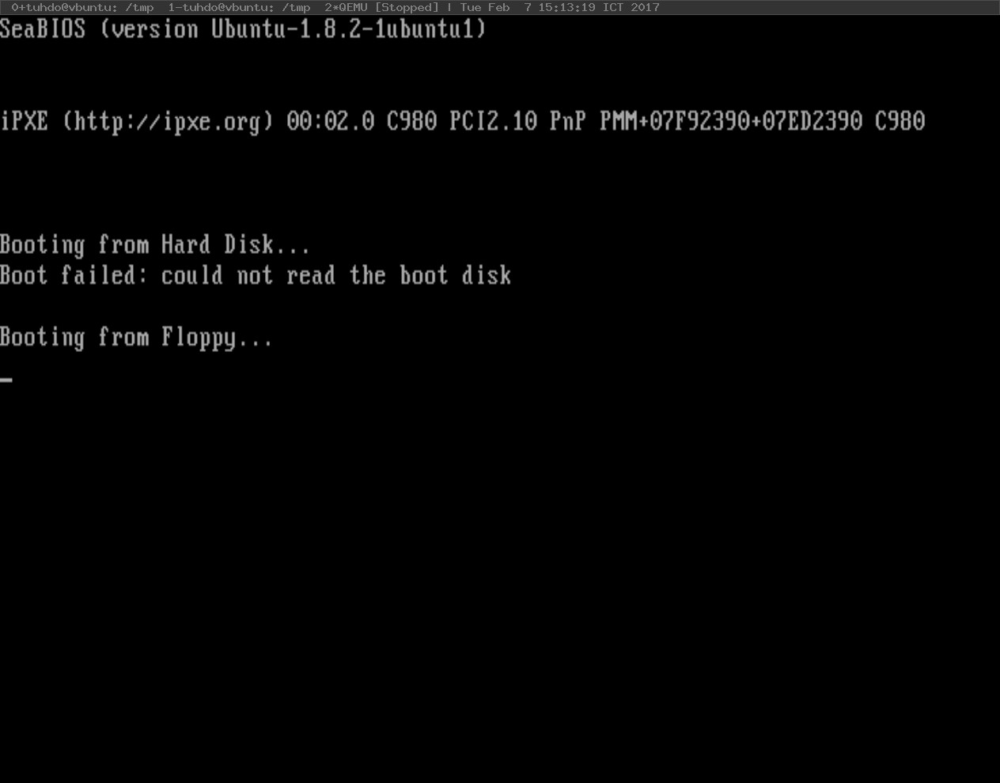 загрузчик 199 Затем для удобства используем разделенную верстку для просмотра ассемблерного кода и регистров вместе: (gdb) компоновка asm (gdb) раскладка reg Наконец, запустите программу: (гдб) с Если виртуальная машина успешно запускает загрузчик, экран QEMU должен выглядеть следующим образом: Рисунок 7.5.1:Загрузка прошла успешно. 7.5.1 Отладка Если по какой-то причине образец загрузчика не может попасть на такой экран и gdb не останавливается на 0x7c00, то вероятны следующие сценарии: Загрузчик недействителен: при загрузке с дискеты появляется сообщение «Boot failed: not a bootable disk». . Убедитесь, что загрузочная подпись находится в последних 2 байтах 512-байтового первого сектора. 200 операционные системы: от 0 до 1 Машина не может найти загрузочный диск: при загрузке с дискеты появляется сообщение «Boot failed: not a bootable disk». Убедитесь, что загрузчик правильно записан в первый сектор. В этом можно убедиться, проверив диск с помощью hd: $ жесткий диск.img | меньше Если первые 512 байт все нули, то, скорее всего, загрузчик неправильно записал в другой сектор. Машина выходит из строя: когда происходит такой сценарий, она возвращается к началу в FFFF: 0000h. Если машина QEMU запускается, не дожидаясь gdb, то окно вывода консоли продолжает мигать, поскольку машина неоднократно перезагружается. Вероятно, какая-то инструкция в коде загрузчика вызывает ошибку. Упражнение 7.5.1.Распечатать приветственное сообщение Мы успешно загрузили загрузчик. Но ему нужно сделать что-то полезное, кроме остановки нашей машины. Проще всего напечатать что-нибудь на экране, например, введение во все языки программирования начинается с «Hello World». Наш загрузчик печатает «Добро пожаловать в мою операционную систему»3. В этой части мы создадим простую библиотеку ввода-вывода 3 или любое другое сообщение, которое вы хотите. что позволяет нам устанавливать курсор в любом месте экрана и печатать там текст. Сначала создайте файлio.asmдля подпрограмм, связанных с вводом-выводом. Затем напишите следующие подпрограммы: 1. МовКурсор Цель:Переместите курсор в определенное место на экране и запомните это место. Параметры: bh = координата Y bl = координата X. Возвращаться:Никто загрузчик 201 2. Поместите чар Цель:Напечатайте символ на экране в позиции курсора, ранее установленной MovCursor. Параметры: al = символ для печати bl = цвет текста cx = количество повторений символа Возврат: Нет 3. Печать Цель:Распечатать строку. Параметры: ds:si = строка с нулевым завершением Возврат: Нет Протестируйте подпрограммы, поместив каждую в исходный код загрузчика, скомпилируйте и запустите. Для отладки запустите GDB и установите точку останова в определенной подпрограмме. Конечным результатом является то, что Print должен отображать приветственное сообщение на экране. 7.6 Загрузка программы из загрузчика Теперь, когда мы получили представление о том, как использовать службы BIOS, пришло время для чего-то более сложного. Мы разместим наше ядро на 2-м секторе и далее, и наш загрузчик читает 30 секторов, начиная со 2-го сектора. Почему 30 секторов? Наше ядро будет расти постепенно, поэтому мы сохраним 30 секторов и сэкономим время на изменение загрузчика каждый раз, когда размер ядра увеличивается еще на один сектор. Основной обязанностью загрузчика является чтение операционной системы с какого-либо устройства хранения, например. жесткий диск, затем загружает его в оперативную память и передает управление загруженной операционной системе аналогично 202 операционные системы: от 0 до 1 как BIOS читает и загружает загрузчик. На данный момент наш загрузчик не что иное, как программа сборки, загружаемая биосом. Чтобы наш загрузчик стал настоящим, он должен хорошо выполнять две вышеуказанные задачи: читать и загружать операционную систему. 7.6.1 Структура гибкого диска Чтобы читать с устройства хранения, мы должны понимать, как работает устройство, и предоставленный интерфейс для управления им. Во-первых, дискета — это запоминающее устройство, похожее на оперативную память, но способное хранить информацию даже при выключенном компьютере, поэтому называется постоянным запоминающим устройством. дискета постоянное запоминающее устройство диск также является постоянным запоминающим устройством, поэтому он обеспечивает пространство для хранения до 1,4 МБ или 1 474 560 байт. При чтении с гибкого диска наименьшая единица, которую можно прочитать, — это сектор, группа из 512 смежных байтов. Группа из 18 секторов представляет собой дорожку. Каждая сторона гибкого диска состоит из 80 Рисунок 7.6.1:Сектор и трек. треки. Для чтения дискет требуется дисковод. Внутри гибкого трека привод содержит руку с 2 головками, каждая головка читает сторону гибкого сектора водить машину; головка 0 записывает верхнюю сторону, а головка 1 записывает нижнюю сторону гибкого диска. Когда дисковод записывает данные на новую дискету, дорожка 0 на верхней стороне записывается первой головкой 0. Когда верхняя дорожка 0 заполнена, нижняя дорожка 0 используется головкой 1. Когда и верхняя, и нижняя стороны дорожки 0 заполнены, она возвращается к головке 0. для повторной записи данных, но на этот раз верхней стороны дорожки 1 и так далее, пока не останется свободного местаРисунок 7.6.2:Тарелка для гибких дисков Устройство. Та же процедура применяется и для чтения данных с дискеты с 2-х сторон. диск. Голова 0 7.6.2 Чтение и загрузка секторов с дискеты Во-первых, нам нужен образец программы для записи во 2-й сектор, чтобы мы могли поэкспериментировать с чтением дискеты: Глава 1 образец.asm 1 ;********************************************* 2 ; образец.asm 3 ; Пример программы загрузчик 203 4 ;********************************************* 5 движение eax, 1 6 добавить eax, 1 Такой программы достаточно. Для упрощения и в целях демонстрации мы будем использовать ту же дискету, на которой находится загрузчик, для хранения нашей операционной системы. Образ операционной системы начинается со 2-го сектора, так как 1-й сектор уже используется загрузчиком. Компилируем и пишем во 2-й сектор с dd: $ nasm -f бин образец.asm -o образец $ dd if=sample of=disk.img bs=512 count=1 seek=1 1ул.сектор 2йсектор ..... 30йсектор Рисунок 7.6.3:Загрузчик и загрузчик образец .... (пустой) образец программы на дискете. Далее нам нужно поправить загрузчик для чтения с дискеты и загрузить некоторое количество произвольных секторов. Прежде чем сделать это, необходимо иметь общее представление о гибком диске. Чтобы прочитать данные с диска, прерывание 13 с AH = 02 — процедура чтения секторов с диска в память: AH = 02 AL = количество секторов для чтения (1-128 дес.) CH = номер дорожки/цилиндра (0-1023 дес., см. ниже) CL = номер сектора (1-17 дес.) DH = номер головы (0-15 уб.) DL = номер диска (0=A:, 1=2-я дискета, 80h=диск 0, 81h=диск 1) ES:BX = указатель на буфер Возвращаться: AH = статус (см. INT 13, STATUS) AL = количество прочитанных секторов CF = 0 в случае успеха = 1, если ошибка Примените описанную выше процедуру, загрузчик сможет прочитать 2-й сектор: 204 операционные системы: от 0 до 1 загрузчик.asm 1 ;********************************************* 2 ; Загрузчик.asm 3 ; Простой загрузчик 4 ;********************************************* 5 организация0x7c00 6 бит 16 7 начинать:джмпботинок 8 9 ;; постоянные и переменные определения 10 сообщениедБ«Добро пожаловать в мою операционную систему!», 0ах, 0дх, 0ч 11 12 ботинок: 13 Кли; без прерываний 14 cld; все, что нам нужно для инициализации 15 16 движущийся топор, 0x50 17 18 ;; установить буфер 19 движение,топор 20 xor bx,бх 21 22 двигаться аль, 2 ; читать 2 сектора 23 мов ч, 0 ; трек 0 24 мов кл, 2 ; сектор для чтения (второй сектор) 25 мов дх, 0 ; главный номер 26 мов дл, 0 ; номер диска 27 28 мов ах, 0x02 ; чтение секторов с диска 29 инт0x13 ; вызвать процедуру BIOS 30 джмп0x50:0x0 ; прыгай и выполняй сектор! 31 32 hlt; остановить систему 33 34 ; У нас должно быть 512 байт. Очистить остальные байты загрузчик 205 с 0 35 раз 510 - ($-$$)дБ0 36 дв0xAA55 ; Загрузочная подпись Приведенный выше код переходит к адресу 0x50:00 (то есть 0x500). Чтобы протестировать код, загрузите его на виртуальную машину QEMU и подключитесь через gdb, затем поставьте точку останова на 0x500. Если gdb останавливается по адресу, при этом в листинге сборки тот же код, что и в sample.asm, то загрузчик успешно загрузил программу. Это важная веха, так как мы гарантируем, что наша операционная система загружается и работает правильно. 7.7 Повысьте производительность с помощью скриптов 7.7.1 Автоматизация сборки с помощью GNU Make До этого момента весь процесс разработки казался повторяющимся: всякий раз, когда вносятся изменения, одни и те же команды вводятся снова. Команды тоже сложные. Ctrl+r помогает, но все равно утомительно. Сделать GNUэто программа, которая контролирует и автоматизирует процесс создания сложного программного обеспечения. Для небольшой программы, такой как один исходный файл C, вызов gcc выполняется быстро и легко. Однако вскоре ваше программное обеспечение станет более сложным, когда несколько каталогов охватывают несколько каталогов, поэтому вручную создавать и связывать файлы становится рутинной работой. Чтобы решить эту проблему, был создан инструмент для автоматизации этой проблемы, который называется системой сборки. ГНУ Make является одним из таких инструментов. Существуют различные системы сборки, но GNU Make является самой популярной в мире Linux, поскольку она используется для сборки ядра Linux. Подробное введение в make см. в официальном руководстве Introduction to Make:https://www.gnu.org/software/make/manual/ html_node/Introduction.html#Introduction.И этого достаточно для нашего проекта. Вы также можете скачать руководство в различных форматах, например. PDF с официальной страницы руководства:https://www.gnu.org/software/ С помощью Makefile мы можем создавать более простые команды и экономить время: 206 операционные системы: от 0 до 1 Makefile 1 все: загрузочный диск 2 3 загрузчик: 4 nasm -f bin bootloader.asm -o bootloader.o 5 6 ядро: 7 nasm -f бин образец.asm -o образец.о 8 9 загрузочный диск: bootloader.o ядро.o 10 dd if=/dev/zero of=disk.img bs=512 count=2880 11 dd conv=notrunc if=bootloader.o of=disk.img bs=512 количество = 1 поиск = 0 12 dd conv=notrunc if=sample.o of=disk.img bs=512 count=1 искать=1 Теперь с помощью одной команды мы можем создать от начала до конца образ диска с загрузчиком в 1-м секторе и программой-примером во 2-м секторе: $ make bootdisk Выход nasm -f bin bootloader.asm -o bootloader.o nasm -f bin sample.asm -o bootloader.o dd if=/dev/zero of=disk.img bs=512 count=2880 2880+0 записей в 2880+0 записей скопировано 1474560 байт (1,5 МБ, 1,4 МБ), 0,00482188 с, 306 МБ/с dd conv=notrunc if=bootloader.o of=disk.img bs=512 count=1 seek=0 0+1 записей в 0+1 записей Скопировано 10 байт, 7.0316e-05 с, 142 кБ/с dd conv=notrunc if=sample.o of=disk.img bs=512 count=1 seek=1 0+1 записей в 0+1 записей загрузчик 207 Скопировано 10 байт, 0,000208375 с, 48,0 кБ/с Глядя на Makefile, мы видим несколько проблем: Во-первых, имя disk.img повсюду. Когда мы хотим изменить имя образа диска, например. floppy_disk.img, все места с названием disk.img надо менять вручную. Чтобы решить эту проблему, мы используем переменную, и каждое появление disk.img заменяется ссылкой на переменную. Таким образом, изменяется только одно место — определение переменной — все остальные места обновляются автоматически. Добавляются следующие переменные: ЗАГРУЗЧИК=bootloader.o ОС=sample.o DISK_IMG=disk.img.o Вторая проблема заключается в том, что имя загрузчика и образца появляется как часть имен файлов исходных файлов, например. bootloader.asm и sample.asm, а также имена двоичных файлов, например. загрузчик и пример. Подобно disk.img, при изменении имени каждая ссылка на это имя также должна быть изменена вручную как для имен исходных файлов, так и для имен двоичных файлов, например. если мы изменим bootloader.asm на loader.asm, то объектный файл bootloader.o нужно изменить на loader.o. Чтобы решить эту проблему, вместо того, чтобы менять имена файлов вручную, мы создаем правило, которое автоматически генерирует имена файлов одного расширения на другое. В этом случае мы хотим, чтобы любой исходный файл, который начинается с .asm, имел свои эквивалентные двоичные файлы без каких-либо расширений, например. bootloader.asm → bootloader.o. Такое преобразование распространено, поэтому GNU Make предоставляет встроенные функции: wildcard и patsubst для решения таких проблем: BOOTLOADER_SRCS := $(подстановочный знак*.как м) BOOTLOADER_OBJS := $(патсубст%.asm, %.o, $(BOOTLOADER_SRCS )) подстановочный знак соответствует любому файлу .asm в текущем каталоге, а затем присваивает список соответствующих файлов переменной BOOTLOADER_SRCS. В этом случае BOOTLOADER_SRCS присваивается значение: 208 операционные системы: от 0 до 1 загрузчик.asm образец.asm patsubst заменяет любое имя файла, начинающееся с .asm, на имя файла .o, например bootloader.asm → bootloader.o. После запуска patsubsts мы получаем список объектных файлов в BOOTLOADER_OBJS: bootloader.o образец.o Наконец, нужен рецепт сборки из .asm в .o: %.о: %.асм nasm -f бин $< -o$@ $< — это специальная переменная, которая ссылается на ввод рецепта: %.asm. $@ — это специальная переменная, которая относится к выходным данным рецепта: %.o. При выполнении рецепта переменные заменяются фактическими значениями. Например, если преобразование bootloader.asm → bootloader.o, то фактическая команда, выполняемая при замене заполнителей в рецепте, будет следующей: nasm -f bin bootloader.asm -o bootloader.o Благодаря рецепту все файлы .asm автоматически создаются с помощью команды nasm в файлы .o, и нам больше не нужен отдельный рецепт для каждого объектного файла. Объединив все это с новыми переменными, мы получаем лучший Makefile: Makefile 1 ЗАГРУЗЧИК=bootloader.o 2 ОС=sample.o 3 DISK_IMG=диск.img 4 5 BOOTLOADER_SRCS := $(подстановочный знак*.как м) 6 BOOTLOADER_OBJS := $(патсубст%.asm, %.o, $(BOOTLOADER_SRCS )) загрузчик 209 7 8 все: загрузочный диск 9 10 %.о: %.асм 11 nasm -f бин $< -o$@ 12 13 загрузочный диск: $(BOOTLOADER_OBJS) 14 dd if=/dev/zero of=$(DISK_IMG) bs=512 count=2880 15 dd conv=notrunc if=$(BOOTLOADER) of=$(DISK_IMG) bs=512 количество = 1 поиск = 0 16 dd conv=notrunc if=$(OS) of=$(DISK_IMG) bs=512 count=1 искать=1 Рисунок 7.7.1:Лучшая планировка проекта- вне С этого момента любой файл .asm компилируется автоматически, без предварительной подготовки. . явный рецепт для каждого файла. загрузчик загрузчик.asm Объектные файлы находятся в том же каталоге, что и исходные файлы, поэтому Makefile это сложнее при работе с исходным деревом. В идеале объектные файлы создаются а исходные файлы должны находиться в разных каталогах. Хотим лучше или-бутлоадер загрузчик.o организованный макет каталога, как на рисунке7.7.1. диск.img Операционные системы каталог bootloader/ содержит исходные файлы загрузчика; os/ содержит oper-sample.o атирование системных исходных файлов, которые мы собираемся написать позже; построить/содержит Makefile объектные файлы для загрузчика, ОС и конечного образа диска ОС Makefile диск.img. Обратите внимание, что каталог bootloader/ также имеет собственный Makefile. образец.asm Этот Makefile будет отвечать за сборку всего в bootloader/ Макет может отображаться в виде дерева каталог, в то время как Makefile верхнего уровня освобождается от бремени команды сборки: $ дерево загрузчик, а только образ диска. Содержимое Makefile в каталоге bootloader/ должно быть: загрузчик/Makefile 1 BUILD_DIR=../строить/загрузчик 2 3 BOOTLOADER_SRCS := $(подстановочный знак*.как м) 4 BOOTLOADER_OBJS := $(патсубст%.asm, $(BUILD_DIR)/%.o, $( BOOTLOADER_SRCS)) 5 210 операционные системы: от 0 до 1 6 все: $(BOOTLOADER_OBJS) Рисунок 7.7.2:Makefile в 7 загрузчик/ 8 $(BUILD_DIR)/%.o: %.asm . загрузчик 9 nasm -f бин $< -o$@ загрузчик.asm Makefile строить загрузчик В основном все, что связано с загрузчиком в файле Makefile bootloader.o верхнего уровня. извлекаются в этот Makefile. Когда make запускает этот Makefile, bootloader.o disk.img должен быть собран и помещен в каталог ../build/. Как хорошая практика, ОС образец.o все ссылки на ../build/ проходят через переменную BUILD_DIR. Рецепт Makefile для преобразования из .asm → .o также обновляется с правильными путями, иначе os Makefile он не будет работать. образец.asm %.asm относится к исходным файлам сборки в текущем каталоге. $(BUILD_DIR)/%.o относится к выходным объектным файлам в каталоге сборки по пути ../build/. Весь рецепт реализует преобразование из → ../build/ . мы пытаемся создать объектные файлы в другом каталоге, например. текущий каталог, загрузчик загрузчик.asm это не сработает, так как не существует такого рецепта для сборки объектов в таком Makefile путь. строить загрузчик Мы также создаем аналогичный Makefile для каталога os/: загрузчик.o диск.img Операционные системы ОС/Makefile образец.o Makefile 1 BUILD_DIR=../сборка/ОС Операционные системы 2 Makefile образец.asm 3 ОС_SRCS := $(подстановочный знак*.как м) 4 ОС_OBJS := $(патсубст%.asm, $(BUILD_DIR)/%.o, $(OS_SRCS)) 5 6 все: $(OS_OBJS) 7 8 $(BUILD_DIR)/%.o: %.asm 9 nasm -f бин $< -o$@ загрузчик 211 На данный момент он выглядит почти так же, как Makefile для загрузчика. ВРисунок 7.7.4:Makefile верхнего уровня в следующей главе мы обновим его для кода C. Затем мы обновляем топ- . Makefile уровня: загрузчик загрузчик.asm Makefile Makefile строить загрузчик 1 BUILD_DIR=сборка загрузчик.o 2 BOOTLOADER=$(BUILD_DIR)/bootloader/bootloader.o диск.img Операционные системы 3 ОС=$(BUILD_DIR)/os/sample.o образец.o 4 DISK_IMG=диск.img Makefile 5 Операционные системы Makefile 6 все: загрузочный диск образец.asm 7 8 .PHONY: ОС загрузчика загрузочного диска 9 10 загрузчик: 11 сделать -C загрузчик 12 13 Операционные системы: 14 сделать -C ОС 15 16 загрузочный диск: ОС загрузчика 17 dd if=/dev/zero of=$(DISK_IMG) bs=512 count=2880 18 dd conv=notrunc if=$(BOOTLOADER) of=$(DISK_IMG) bs=512 количество = 1 поиск = 0 19 dd conv=notrunc if=$(OS) of=$(DISK_IMG) bs=512 count=1 искать=1 Процесс сборки теперь действительно модульный: Сборки загрузчика и ОС теперь делегированы в дочерний Makefile соответствующих компонентов. Опция -C указывает make выполняться с Makefile в указанном каталоге. В данном случае это каталоги bootloader/ и ОС/. Целевой объект Makefile верхнего уровня отвечает только за целевой загрузочный диск, который является основным целевым объектом этого Makefile. 212 операционные системы: от 0 до 1 Во многих случаях цель не всегда является именем файла, а просто именем рецепта, который всегда выполняется по запросу. Если имя файла совпадает с именем цели, и файл актуален, make не выполняет цель. Чтобы решить эту проблему, .PHONY указывает, что некоторые цели не являются файлами. Все фальшивые цели будут запускаться по запросу, независимо от файлов с одинаковыми именами. Чтобы сэкономить время на ввод команды для запуска виртуальной машины QEMU, мы также добавляем цель в Makefile верхнего уровня: qemu: qemu-system-i386 -machine q35 -fda $(DISK_IMG) -gdb TCP ::26000 -С Последняя проблема — очистка проекта. На данный момент объектные файлы необходимо удалять вручную, и это повторяющийся процесс. Вместо этого пусть Makefile каждого компонента позаботится об очистке своих объектных файлов, а затем Makefile верхнего уровня выполнит очистку проекта, вызывая компонент Makefile для выполнения заданий. Каждый Makefile добавляется с чистой целью в конце: Makefile загрузчика: чистый: рм $(BUILD_DIR)/* Makefile ОС: чистый: рм $(BUILD_DIR)/* Makefile верхнего уровня: чистый: очистить загрузчик -C сделать -C ОС чистой Просто запустив make clean в корне проекта, все объектные файлы будут удалены. загрузчик 213 7.7.2 Обзор синтаксиса GNU Make GNU Make по своей сути является предметно-ориентированным языком для автоматизации сборки. Как и любому языку программирования, ему нужен способ определения данных и кода. В Makefile переменные несут данные. Значение переменной либо жестко закодировано, либо оценивается при вызове оболочки, такой как Bash. Все значения переменных в Make имеют один и тот же тип: строка текста. Число 3 — это не число, а текстовое представление символа 3. Вот распространенные способы определения данных в Makefile: Синтаксис Описание А = 1 Объявите переменную и присвойте ей текстовое значение. В = 2 двойной знак доллара $$ означает закрывающий C = $$(выражение $(A) + $(B)) выражение, вычисляемое оболочкой, определенное в /bin/sh. ⇒ А равно 1, В равно 2, С равно 3. В этом случае объемлющее выражение имеет вид (expr $(A) + $(B)) и оценивается Bash. ПУТЬ = /bin Объявите переменную и присвойте ей. Однако ПУТЬ:= $ПУТЬ:/usr/bin разница в том, что синтаксис = не позволяет ссылаться ⇒ ПУТЬ: /bin/:/usr/bin в переменную, чтобы использовать себя в качестве значения в правом стороны, в то время как этот синтаксис делает. ПУТЬ = /bin Добавить новое значение в конец переменной. ПУТЬ += /usr/bin Эквивалентно: ⇒ ПУТЬ: /bin/:/usr/bin ПУТЬ:= $ПУТЬ:/usr/bin CFLAGS ?= -o Этот синтаксис называетсяусловная ссылка. Установить ⇒ CFLAGS присваивается значение -o, если оно было переменная в значение, если оно не определено. Это полезно, не определено. если пользователь хочет указать другое значение для переменная из командной строки, например. добавить отладку опция CFLAGS. В противном случае Make использует значение по умолчанию. определяется ?=. 214 операционные системы: от 0 до 1 SRCS = lib1.c lib2.c main.c Этот синтаксис называетсяссылка на замену. OBJS := $(SRC:.o=.c) часть ссылочной переменной заменяется на ⇒ OBJS имеет значение lib1.o lib2.o что-то другое. В этом случае все расширения .c — это main.o. заменяется расширением .o, таким образом создавая список объектные файлы для переменной OBJS из списка исходных файлов из переменной SRCS. Код в GNU Make — это набор рецептов, которые он может запускать. Каждый рецепт аналогичен функции в языке программирования и может вызываться как обычная функция. Каждый рецепт содержит ряд команд оболочки, которые должны быть выполнены оболочкой, например. Баш. Рецепт имеет следующий формат: цель: предпосылки команда Каждая цель аналогична имени функции. Каждая предпосылка является вызовом другой цели. Каждая команда является одной из встроенных команд Make или командой, исполняемой оболочкой. Все предварительные условия должны быть выполнены перед входом в основную часть цели; то есть каждое предварительное условие не должно возвращать никаких ошибок. Если возвращается какая-либо ошибка, Make завершает весь процесс сборки и выводит сообщение об ошибке в командной строке. Каждый раз, когда make запускается, по умолчанию, если цель не указана, она начинается со всей цели, проходит через все предварительные условия и, наконец, все тело. все аналогично main в других языках программирования. Однако, если make задана цель, она запустится с этой цели, а не с main. Эта функция полезна для автоматизации нескольких аспектов проекта. Например, одна цель предназначена для создания проекта, другая цель — для создания документов, например. отчеты о тестировании, еще одна цель для запуска всего набора тестов и всех прогонов всех основных целей. 7.7.3 Автоматизация шагов отладки с помощью скрипта GDB Для удобства мы сохраняем конфигурацию GDB в файл .gdbinit в корневом каталоге проекта. Эта конфигурация представляет собой просто набор команд GDB и несколько дополнительных команд. Когда gdb запускается, он сначала загружает .gdbinit загрузчик 215 файл в домашнем каталоге, затем файл .gdbinit в текущем каталоге. Почему мы не должны помещать команды в ~/.gdbinit? Поскольку эти команды относятся только к этому проекту, например. не все программы требуют удаленного подключения. Наша первая конфигурация: .gdbinit 1 определить хук-стоп 2 # Преобразование сегмента: смещение в физический адрес 3 printf"[%4x:%4x] ", $cs, $eip 4 x/i $cs*16+$eip 5 конец Приведенный выше скрипт отображает адрес памяти в [segment:offset] формат, необходимый для отладки кода нашего загрузчика и операционной системы. Лучше использовать синтаксис Intel: установить вкус разборки intel Следующие команды задают более удобную компоновку для отладки ассемблерного кода: сборка макета макет reg В настоящее время мы отлаживаем код загрузчика, поэтому рекомендуется сначала установить его на 16-битный: установить архитектуру i8086 Каждый раз, когда запускается виртуальная машина QEMU, gdb всегда должен подключаться к порту 26000. Чтобы избежать проблем с подключением к виртуальной машине вручную, добавьте команду: целевой удаленный локальный хост: 26000 216 операционные системы: от 0 до 1 Для отладки загрузчика нужна точка останова по адресу 0x7c00, где начинается наш код загрузчика: б *0x7c00 Теперь всякий раз, когда gdb запускается, он автоматически устанавливает правильную архитектуру на основе кода, автоматически подключается к виртуальной машине4, отображает out-4. Виртуальная машина QEMU должна уже были запущены до начала- сделать удобную раскладку и установить необходимую точку останова. Все, что нужно для gdb. сделать, это запустить программу. 8 Связывание и загрузка на голое железо Перемещение — это процесс замены ссылок на символы их реальными. Переезд символические определения в объектном файле. Ссылка на символ — это адрес памяти символа. Если определение трудно понять, рассмотрите похожую аналогию: переезд дома. Предположим, что программист купил новый дом, и этот новый дом пуст. Он должен покупать мебель и бытовую технику для удовлетворения повседневных потребностей, поэтому он составил список предметов, которые нужно купить, и где их разместить. Чтобы визуализировать размещение новых предметов, он рисует план дома и соответствующие места для всех предметов. Затем он ходит в магазины, чтобы купить товары. Всякий раз, когда он посещает магазин и видит совпадающие предметы, он говорит владельцу магазина записать их. Сделав выбор, он говорит владельцу магазина забрать новый товар вместо выставленных предметов, а затем указать адрес доставки товара в его новый дом. Наконец, когда товары прибывают, он размещает их там, где планировал вначале. Теперь, когда перемещение дома понятно, перемещение объектов аналогично: список предметов представляет собой таблицу перемещений, где заранее определено место в памяти для каждого символа (предмета). Каждый элемент представляет собой пару определения символа и его адреса символа. Каждый магазин представляет собой скомпилированный объектный файл. 218 операционные системы: от 0 до 1 Каждый отображаемый элемент представляет собой определение символа и ссылки в объектном файле. Новый адрес, по которому доставляются все товары, представляет собой окончательный исполняемый двоичный файл или окончательный объектный файл. Поскольку выставленные товары не продаются, владелец магазина вместо этого доставляет совершенно новые товары. Точно так же объектные файлы не объединяются вместе, а копируются в новый файл, объектный/исполняемый файл. Наконец, товары расставляются по позициям в соответствии со списком покупок, составленным с самого начала. Точно так же определения символов размещаются соответствующим образом в соответствующем разделе, а ссылки на символы в конечном объектном/исполняемом файле заменяются фактическими адресами памяти определений символов. 8.1 Понимание переездов с readelf Ранее, когда мы исследовали разделы объектов, существовали разделы, начинающиеся с .rel. Эти разделы представляют собой таблицы перемещений, которые сопоставляют символ и его положение в конечном объектном файле или в окончательном исполняемом двоичном файле1. 1 Раздел .rel эквивалентен списку предметов в доме аналогии. Предположим, что функция foo определена в другом объектном файле, поэтому main.c объявляет ее как extern: main.c интя; пустотаФу(); интосновной(интаргк,уголь*argv[]) { я = 5; Фу(); возвращаться0; } пустотаФу () {} Когда мы компилируем main.c как объектный файл с помощью этой команды: линковка и загрузка на голое железо 219 $ gcc -m32 -masm=intel -c main.c Затем мы можем проверить таблицы перемещений с помощью этой команды: $ readelf -r main.o Выход: Выход Раздел перемещения '.rel.text' по смещению 0x1cc содержит 2 записи: Смещение Информация Тип Сим.значение Сим. Имя 00000013 00000801 Р_386_32 00000004 я 0000001c 00000a02 R_386_PC32 0000002e фу Раздел перемещения '.rel.eh_frame' по смещению 0x1dc содержит 2 записи: Смещение Информация Тип Сим.значение Сим. Имя 00000020 00000202 R_386_PC32 00000000 .текст 0000004с 00000202 R_386_PC32 00000000 .текст 8.1.1 Смещение Смещение — это место в разделе двоичного файла, где фактическое компенсировать адрес памяти определения символа заменяется. Раздел с префиксом .rel определяет, в какой раздел следует выполнить смещение. Например, .rel.text — это таблица перемещений символов, адрес которых нужно исправить в секции .text, по определенному смещению в секцию .text. В выводе примера:Выход 0000001c 00000a02 R_386_PC32 0000002e фу Синее число указывает на то, что существует ссылка на символ foo, который находится в 1c байтах в разделе .text. Чтобы было понятнее, перекомпилируем main.c с опцией -g в файл main_debug.o, затем запустим на нем objdump и получим:Выход Разборка раздела .text: 00000000 <основной>: инт я; недействительный фу(); 220 операционные системы: от 0 до 1 int main(int argc, char *argv[]) { 0: 8д 4с 24 04 Леа еккс,[esp+0x4] 4: 83 e4 f0 и esp, 0xffffffff0 7: фф 71 фк толкать Двойное слово PTR [ecx-0x4] а: 55 толкать ebp б: 89 e5 движение е.и.п., особенно д: 51 толкать ecx е: 83 эк 04 суб особенно, 0x4 я = 5; 11: с7 05 00 00 00 00 05 движение DWORD PTR ds:0x0,0x5 18: 00 00 00 Фу(); 1б: e8 fc ff ff ff вызов 1c <основной+0x1c> вернуть 0; 20: б8 00 00 00 00 движение еакс, 0x0 } 25: 83 с4 04 добавлять особенно, 0x4 28: 59 поп ecx 29: 5д поп ebp 2а: 8д 61 фк Леа особенно, [ecx-0x4] 2д: с3 рет ....не относящееся к делу содержание опущено.... Байт 1b — это код операции e8, инструкция вызова; байт в 1c является значением fc. Почему значение операнда для e8 равно 0xffffffffc, что эквивалентно -4, а преобразованный вызов инструкции равен 1c? Это будет объяснено после еще нескольких разделов, но вы должны сделать паузу и немного подумать о причине. 8.1.2 Информация Информация определяет индекс символа в таблице символов и тип выполняемого перемещения. линковка и загрузка на голое железо 221 Выход 0000001c 00000a02 R_386_PC32 0000002e фу Розовое число — это индекс символа foo в таблице символов, а зеленое число — тип перемещения. Числа записываются в шестнадцатеричном формате. В примере 0a означает 10 в десятичном виде, а символ foo действительно имеет индекс 10: Выход 10: 0000002e 6 ФУНКЦИИ ГЛОБАЛЬНОЕ ПО УМОЛЧАНИЮ 1 фу 8.1.3 Тип Тип представляет значение типа в текстовой форме. Глядя на тип foo: Выход 0000001c 00000a02 R_386_PC32 0000002e фу Зеленый номер — это тип в числовой форме, а R_386_PC32 — это имя, присвоенное этому значению. Каждое значение представляет метод расчета перемещения. Например, с типом R_386_PC32 для перемещения применяется следующая формула (Inteli386 psABI): Перемещенный набор f = S + A - P Чтобы понять формулу, необходимо понимать значения символов. 8.1.4 Симметричное значение В этом поле отображается значение символа. Значение символа — это значение, присвоенное символу, значение которого зависит от поля Ndx: Символ с индексом раздела COMMON , его значение символа содержит ограничения выравнивания. Пример 8.1.1.В таблице символов переменная i обозначена как COM (неинициализированная переменная):2 2 Символ списка команд таблица (предположим, что объектный файл привет.о): readelf -s привет.о 222 операционные системы: от 0 до 1 Выход Таблица символов '.symtab' содержит 16 записей: Номер: Ценить Размер Тип Связывать Вис Имя NDX 0: 00000000 0 НЕТИП МЕСТНЫЙ ПО УМОЛЧАНИЮ UND 1: 00000000 0 ФАЙЛ МЕСТНЫЙ ПО УМОЛЧАНИЮ АБС hello2.c 2: 00000000 0 РАЗДЕЛ МЕСТНЫЙ ПО УМОЛЧАНИЮ 1 3: 00000000 0 РАЗДЕЛ МЕСТНЫЙ ПО УМОЛЧАНИЮ 3 4: 00000000 0 РАЗДЕЛ МЕСТНЫЙ ПО УМОЛЧАНИЮ 4 5: 00000000 0 РАЗДЕЛ МЕСТНЫЙ ПО УМОЛЧАНИЮ 5 6: 00000000 0 РАЗДЕЛ МЕСТНЫЙ ПО УМОЛЧАНИЮ 7 7: 00000000 0 РАЗДЕЛ МЕСТНЫЙ ПО УМОЛЧАНИЮ 8 8: 00000000 0 РАЗДЕЛ МЕСТНЫЙ ПО УМОЛЧАНИЮ 10 9: 00000000 0 РАЗДЕЛ МЕСТНЫЙ ПО УМОЛЧАНИЮ 12 10: 00000000 0 РАЗДЕЛ МЕСТНЫЙ ПО УМОЛЧАНИЮ 14 11:00000000 0 РАЗДЕЛ МЕСТНЫЙ ПО УМОЛЧАНИЮ 15 12: 00000000 0 РАЗДЕЛ МЕСТНЫЙ ПО УМОЛЧАНИЮ 13 13: 00000004 4 ОБЪЕКТ ГЛОБАЛЬНОЕ ПО УМОЛЧАНИЮ COM я 14: 00000000 46 ФУНКЦ. ГЛОБАЛЬНОЕ ПО УМОЛЧАНИЮ 1 основной 15: 0000002e 6 ФУНКЦИИ ГЛОБАЛЬНОЕ ПО УМОЛЧАНИЮ 1 фу поэтому его символьное значение является выравниванием памяти для назначения правильного адреса памяти, который соответствует выравниванию в конечном адресе памяти. В случае i значение равно 4, поэтому начальный адрес памяти i в конечном двоичном файле будет кратен 4. Символ, Ndx которого идентифицирует определенный раздел, его значение символа содержит смещение раздела. Пример 8.1.2.В таблице символов main и foo относятся к разделу 1: Выход 14: 00000000 46 ФУНКЦ. ГЛОБАЛЬНОЕ ПО УМОЛЧАНИЮ 1 основной 15: 0000002e 6 ФУНКЦИИ ГЛОБАЛЬНОЕ ПО УМОЛЧАНИЮ 1 фу который является .text3 section4: 3 .text содержит программный код и считывается только данные. 4 Команда для просмотра разделов (предположим, что объектный файл — hello.o): readelf -S привет.о линковка и загрузка на голое железо 223 Выход Имеется 20 заголовков разделов, начиная со смещения 0x558: Заголовки разделов: [№] Имя Тип Адрес Выключенный Размер ES Flg Lk Inf Al [ 0] НУЛЕВОЙ 00000000 000000 000000 00 0 0 0 [ 1] .текст PROGBITS 00000000 000034 000034 00 ТОПОР 0 0 1 [ 2] .отн.текст ОТНОС 00000000 000414 000010 08 мне 18 1 4 [ 3] .данные PROGBITS 00000000 000068 000000 00 Вашингтон 0 0 1 [ 4 ] .bss НОБИТЫ 00000000 000068 000000 00 Вашингтон 0 0 1 [ 5] .debug_info PROGBITS 00000000 000068 000096 00 0 0 1 ..... остальные выходные данные опущены для ясности.... В окончательных исполняемых и совместно используемых объектных файлах вместо указанных выше значений значение символа содержит адрес памяти. Пример 8.1.3.После компиляции hello.o в окончательный исполняемый файл hello таблица символов теперь содержит адрес памяти для каждого символа5: 5 Команда для компиляции объекта файл hello.o в исполняемый файл hello: Выход Таблица символов '.symtab' содержит 75 записей: gcc -g -m32 -masm=intel привет.о -о привет Номер: Ценить Размер Тип Связывать Вис Имя NDX 0: 00000000 0 НЕТИП МЕСТНЫЙ ПО УМОЛЧАНИЮ UND 1: 08048154 0 РАЗДЕЛ МЕСТНЫЙ ПО УМОЛЧАНИЮ 1 2: 08048168 0 РАЗДЕЛ МЕСТНЫЙ ПО УМОЛЧАНИЮ 2 3: 08048188 0 РАЗДЕЛ МЕСТНЫЙ ПО УМОЛЧАНИЮ 3 ....вывод опущен... 64: 08048409 6 ФУНКЦИИ ГЛОБАЛЬНОЕ ПО УМОЛЧАНИЮ 14 фу 65: 0804a020 0 НЕТИП ГЛОБАЛЬНОЕ ПО УМОЛЧАНИЮ 26 _конец 66: 080482e0 0 ФУНКЦИЯ ГЛОБАЛЬНОЕ ПО УМОЛЧАНИЮ 14 _старт 67: 08048488 4 ОБЪЕКТ ГЛОБАЛЬНОЕ ПО УМОЛЧАНИЮ 16 _fp_hw 68: 0804a01c 4 ОБЪЕКТ ГЛОБАЛЬНОЕ ПО УМОЛЧАНИЮ 26 я 69: 0804a018 0 НЕТИП ГЛОБАЛЬНОЕ ПО УМОЛЧАНИЮ 26 __bss_start 70: 080483дб 46 ФУНКЦ. ГЛОБАЛЬНОЕ ПО УМОЛЧАНИЮ 14 основных ...вывод опущен... В отличие от значений символов foo, i и main, как в объектном файле hello.o, здесь указаны полные адреса памяти. 224 операционные системы: от 0 до 1 Теперь достаточно разобраться в типах релокаций. Ранее мы упоминали тип R_386_PC32. Для перемещения применяется следующая формула (Inteli386 псАБИ): Перемещенный набор f = S + A - P где Спредставляет значение символа. В конечном исполняемом двоичном файле это адрес символа. Апредставляет сложение, дополнительное значение, добавляемое к значению символа. пПредставляет адрес памяти, который нужно исправить. Переместить смещениеэто расстояние между перемещаемым местоположением6 и 6, где указанный адрес памяти должно быть исправлено. фактическое расположение в памяти определения символа или адрес памяти. Но почему мы тратим время на вычисление расстояния вместо замены прямым адресом памяти? Причина в том, что архитектура x86 не использует какой-либо режим адресации, использующий абсолютный адрес памяти, как указано в таблице4.5.2.Все режимы адресации в x86 относительные. В некоторых языках ассемблера абсолютный адрес может использоваться просто потому, что это синтаксический сахар, который позже преобразуется ассемблером в один из режимов относительной адресации, предоставляемых оборудованием x86. Пример 8.1.4.Для символа foo: Выход 0000001c 00000a02 R_386_PC32 0000002e фу Расстояние между использованием foo в main.o и его определением по формуле S + A − P составляет: 2e + 0 − 1c = 12. То есть место, где начинается фиксация памяти, находится на расстоянии 0x12 или 18 байт от определение символа foo. Однако, чтобы инструкция работала правильно, мы должны также вычесть 4 из 0x12 и получить 0xe. Почему дополнительные -4? Поскольку относительный адрес начинается в конце инструкции, а не линковка и загрузка на голое железо 225 адрес, с которого начинается фиксация памяти. По этой причине мы также должны исключить 4 байта перезаписанного адреса. Действительно, глядя на вывод objdump объектного файла hello.o:Выход Разборка раздела .text: 00000000 <основной>: 0: 8д 4с 24 04 Леа еккс,[esp+0x4] 4: 83 e4 f0 и esp, 0xffffffff0 7: фф 71 фк толкать Двойное слово PTR [ecx-0x4] а: 55 толкать ebp б: 89 e5 движение е.и.п., особенно д: 51 толкать ecx е: 83 эк 04 суб особенно, 0x4 11: с7 05 00 00 00 00 05 движение DWORD PTR ds:0x0,0x5 18: 00 00 00 1б: e8 fc ff ff ff вызов 1c <основной+0x1c> 20: б8 00 00 00 00 движение еакс, 0x0 25: 83 с4 04 добавлять особенно, 0x4 28: 59 поп ecx 29: 5д поп ebp 2а: 8д 61 фк Леа особенно, [ecx-0x4] 2д: с3 рет 0000002e 2д: 55 толкать ebp 2ф: 89 e5 движение е.и.п., особенно 31: 90 нет 32: 5д поп ebp 33: с3 рет Место, где начинается фиксация памяти, находится после кода операции e8 с фиктивным значением fc ff ff ff, которое равно -4 в десятичном виде. Однако в ассемблерном коде значение отображается как 1с. Адрес памяти сразу после e8. Причина в том, что инструкция e8 начинается с 1b и заканчивается на 207. 7 Концом инструкции является память. адрес сразу после последнего операнда. -4 означает 4 байта назад от конца инструкции, то есть: 20 - 4 = 1c. Вся инструкция e8 простирается от адреса 1b до адреса 1f. После линковки отображается вывод конечного исполняемого файла с фактической фиксацией памяти: 226 операционные системы: от 0 до 1 Выход 080483db <основной>: 80483дб: 8д 4с 24 04 Леа еккс,[esp+0x4] 80483df: 83 e4 f0 и esp, 0xffffffff0 80483e2: фф 71 фк толкать Двойное слово PTR [ecx-0x4] 80483e5: 55 толкать ebp 80483e6: 89 e5 движение е.и.п., особенно 80483e8: 51 толкать ecx 80483e9: 83 эк 04 суб особенно, 0x4 80483эк: с7 05 1с а0 04 08 05 движение Двойное слово PTR ds: 0x804a01c, 0x5 80483f3: 00 00 00 80483f6: е8 0е 00 00 00 вызов 8048409 80483fb: б8 00 00 00 00 движение еакс, 0x0 8048400: 83 с4 04 добавлять особенно, 0x4 8048403: 59 поп ecx 8048404: 5д поп ebp 8048405: 8д 61 фк Леа особенно, [ecx-0x4] 8048408: с3 рет 08048409 8048409: 55 толкать ebp 804840а: 89 e5 движение е.и.п., особенно 804840с: 90 нет 804840d: 5д поп ebp 804840е: с3 рет 804840f: 90 нет В финальном выводе код операции e8, который ранее был равен 1b, теперь начинается с адреса 80483f6. Фиктивное значение fc ff ff ff заменяется фактическим значением 0e 00 00 00 с использованием того же метода вычисления из его объектного файла: код операции e8 имеет значение 80483f6. Определение foo находится по адресу 8048409. Смещение от следующего адреса после e8 равно 8048409 + 0 — 80483f7 — 4 = 0e. Однако для удобочитаемости сборка отображается как вызов 8048409 определения символа. Такой адрес позже переводится в режим относительной адресации, избавляя программиста от необходимости вычислять смещение. линковка и загрузка на голое железо 227 вручную. 8.1.5 Сим. Имя В этом поле отображается имя перемещаемого символа. Именованный символ совпадает с написанным на языке высокого уровня, таком как C. 8.2 Создание двоичного файла ELF с помощью скриптов компоновщика Компоновщик — это программа, которая объединяет отдельные объектные файлы в окончательный компоновщик бинарный файл. Когда gcc вызывается, он запускает ld внизу, чтобы превратить объектные файлы в окончательный исполняемый файл. Сценарий компоновщика — это текстовый файл, который указывает, как компоновщик должен скрипт компоновщика объектные файлы bin. Когда gcc запускается, он использует свой сценарий компоновщика по умолчанию для построения схемы памяти скомпилированного двоичного файла. Стандартизированный макет памяти называется форматом объектного файла, например. ELF включает в себя заголовки программ, заголовки разделов и их атрибуты. Сценарий компоновщика по умолчанию предназначен для работы в среде текущей операционной системы9. Запуск на голой 9 Чтобы просмотреть сценарий по умолчанию, использовать --подробный вариант: metal сценарий по умолчанию использовать нельзя, так как он не предназначен для таких целей en-ld --verbose окружающая среда. По этой причине программист должен предоставить свой собственный скрипт компоновщика для таких сред. Каждый скрипт компоновщика состоит из серии команд следующего формата: КОМАНДА { подкоманда 1 подкоманда 2 .... дополнительная подкоманда.... } Каждая подкоманда относится только к команде верхнего уровня. В простейшем сценарии компоновщика требуется только одна команда: SECTION, которая использует входные разделы из объектных файлов и создает выходные разделы окончательного двоичного файла10. 10 Вспомните, что секции — это куски код или данные, или и то, и другое. 228 операционные системы: от 0 до 1 8.2.1 Пример скрипта компоновщика Вот минимальный пример скрипта компоновщика: main.lds РАЗДЕЛЫ /* Команда */ { . = 0x10000; /* под-команда1 */ .text : { *(.text) } /* вложенныйкоманда2 */ . = 0x8000000; /* под-команда3 */ .data : { *(.data) } /* вложенныйкоманда4 */ .bss : { *(.bss) } /* суб-команда5 */ } Разбор кода: Код Описание РАЗДЕЛ Команда верхнего уровня, объявляющая список пользовательских разделов программы. ld предоставляет набор таких команд. . = 0x10000; Установите счетчик местоположения на адрес 0x10000. Счетчик местоположения указывает базовый адрес для последующих команд. В этом примере последующие команды будут использовать 0x10000 и далее. .текст : { *(.текст) } Поскольку счетчик местоположения установлен на 0x10000, вывод .text в конечном двоичном файле будет начинаться с адреса 0x10000. Эта команда объединяет все разделы .text из всех объектных файлов с *(.text) в окончательный раздел .text. * — это подстановочный знак, который соответствует любому имени файла. . = 0x8000000; Опять же, счетчик местоположения установлен на 0x8000000. Последующие команды будут использовать этот адрес для работы с разделами. .данные: {*(.данные)} Все разделы .data объединяются в один раздел .data в конечном бинарном файле. .bss : { *(.bss) } Все разделы .bss объединяются в один раздел .bss в финальном бинарном файле. Адреса 0x10000 и 0x8000000 называются адресами виртуальной памяти. Адрес виртуальной памяти — это адрес, по которому секция загружается в память — адрес виртуальной памяти. ори, когда программа запускается. Чтобы использовать скрипт компоновщика, мы сохраняем его как файл, например. основной.lds11; затем нам нужен образец программы в файле, например. main.c: 11 .lds — это расширение для компоновщика. сценарий. main.c пустотатест() {} линковка и загрузка на голое железо 229 интосновной(интаргк,уголь*argv[]) { возвращаться0; } Затем мы компилируем файл и явно вызываем ld с помощью скрипта компоновщика: $ gcc -m32 -g -c main.c $ ld -m elf_i386 -o main -T main.lds main.o В команде ld параметры аналогичны gcc: Вариант Описание -м Укажите формат объектного файла, который создает ld. В примере elf_i386 означает, что должен быть создан 32-битный файл ELF. -о Укажите имя конечного исполняемого двоичного файла. -Т Укажите сценарий компоновщика для использования. В примере это main.lds. Остальные входные данные — это список объектных файлов для связывания. После выполнения команды ld создается окончательный исполняемый двоичный файл — main. Если мы попробуем запустить его: $ ./основной Ошибка сегментации Причина в том, что при ручном связывании адрес входа должен быть явно установлен, иначе ld по умолчанию устанавливает его в начало раздела .text. Мы можем проверить из вывода readelf: $ readelf -h главная Выход Заголовок ЭЛЬФ: Магия: 7f 45 4c 46 02 01 01 00 00 00 00 00 00 00 00 00 Сорт: ЭЛЬФ64 Данные: дополнение до 2, прямой порядок байтов Версия: 1 (текущий) 230 операционные системы: от 0 до 1 ОС/ABI: UNIX — Система V Версия АБИ: 0 Тип: EXEC (исполняемый файл) Машина: Усовершенствованные микроустройства X86-64 Версия: 0x1 Адрес точки входа: 0x10000 Начало заголовков программы: 64 (байт в файл) Начало заголовков разделов: 2098144 (байт в файл) Флаги: 0x0 Размер этого заголовка: 64 (байта) Размер заголовков программы: 56 (байт) Количество заголовков программы: 3 Размер заголовков разделов: 64 (байта) Количество заголовков разделов: 14 Индекс таблицы строк заголовка раздела: 11 Адрес точки входа установлен на 0x10000, что является началом .текстовый раздел. Использование objdump для проверки адреса: $ objdump -z -M intel -S -D прог | меньше мы видим, что адрес 0x10000 не начинается с основной функции при запуске программы: Выход Разборка раздела .text: 00010000 <тест>: инт а = 5; инт я; недействительный тест () {} 10000: 55 толкать ebp 10001: 89 e5 движение е.и.п., особенно 10003: 90 нет 10004: 5д поп ebp 10005: с3 рет 00010006 <основной>: линковка и загрузка на голое железо 231 int main(int argc, char *argv[]) { 10006: 55 толкать ebp 10007: 89 e5 движение е.и.п., особенно вернуть 0; 10009: б8 00 00 00 00 движение еакс, 0x0 } 1000 евро: 5д поп ebp 1000ф: с3 рет Начало раздела .text с адреса 0x10000 — это проверка функции, а не основная! Чтобы программа могла правильно работать на main, нам нужно установить точку входа в скрипте компоновщика со следующей строкой в начале файла: ВХОД(основной) Снова перекомпилируйте исполняемый бинарный файл main. На этот раз вывод readelf отличается: Выход Заголовок ЭЛЬФ: Магия: 7f 45 4c 46 01 01 01 00 00 00 00 00 00 00 00 00 Сорт: ЭЛЬФ32 Данные: дополнение до 2, прямой порядок байтов Версия: 1 (текущий) ОС/ABI: UNIX — Система V Версия АБИ: 0 Тип: EXEC (исполняемый файл) Машина: Интел 80386 Версия: 0x1 Адрес точки входа: 0x10006 Начало заголовков программы: 52 (байт в файл) Начало заголовков разделов: 9168 (байт в файл) Флаги: 0x0 Размер этого заголовка: 52 (байта) 232 операционные системы: от 0 до 1 Размер заголовков программы: 32 (байта) Количество заголовков программы: 3 Размер заголовков разделов: 40 (байт) Количество заголовков разделов: 14 Индекс таблицы строк заголовка раздела: 11 Программа теперь выполняет код по адресу 0x10006 при запуске. 0x10006 — вот где начинается главное! Чтобы убедиться, что мы действительно начинаем с main, мы запускаем программу с помощью gdb, устанавливаем две точки останова на функции main и test: $ гдб ./основной Выход .... вывод опущен .... Чтение символов из ./main... готово. (gdb) тест b Выход Точка останова 1 по адресу 0x10003: файл main.c, строка 1. (gdb) б основной Выход Точка останова 2 по адресу 0x10009: файл main.c, строка 5. (гдб) р Выход Стартовая программа: /tmp/main Точка останова 2, main (argc=-11493, argv=0x0) в main.c:5 5 вернуть 0; Как показано в выводе, gdb сначала остановился на 2-й точке останова. Теперь запускаем программу в обычном режиме, без gdb: линковка и загрузка на голое железо 233 $ ./основной Ошибка сегментации Мы по-прежнему получаем ошибку сегментации. Этого и следовало ожидать, так как мы запустили пользовательский двоичный файл без поддержки среды выполнения C со стороны операционной системы. Последний оператор в основной функции: return 0, просто возвращает в случайное место12. Среда выполнения C обеспечивает правильное завершение программы. В 12 Обратный адрес выше текущего э.п. Однако, когда мы входим в main, нет В Linux функция _exit() неявно вызывается при возврате из main. Для возврата значение помещается в стек. Итак, когда return выполняется, он просто Чтобы решить эту проблему, мы просто изменим программу, чтобы она правильно завершала работу: извлекала любое значение выше ebp и использовала в качестве обратного адреса. Привет 1 пустотатест() {} 2 интосновной(интаргк,уголь*argv[]) 3 { 4 asm("mov eax, 0x1\n" 5 "mov ebx, 0x0\n" 6 "целое 0x80"); 7 } Требуется встроенная сборка, поскольку прерывание 0x80 определено для системных вызовов в Linux. Так как программа не использует библиотеку, нет другого способа вызвать системные функции, кроме использования ассемблера. Однако при написании нашей операционной системы такой код нам не понадобится, так как среды для нормального выхода пока нет. Теперь, когда мы можем точно контролировать, где изначально запускается программа, легко загрузить ядро из загрузчика. Прежде чем мы перейдем к следующему разделу, обратите внимание, как readelf и objdump можно применять для отладки программы еще до ее запуска. 8.2.2 Понимание пользовательской структуры ELF В этом примере нам удалось создать работающий исполняемый двоичный файл ELF из пользовательского сценария компоновщика, в отличие от сценария по умолчанию, предоставленного gcc. Чтобы было удобно заглянуть в его структуру: 234 операционные системы: от 0 до 1 $ readelf -e главная Опция -e представляет собой комбинацию 3-х опций -h -l -S: Выход ....... Вывод заголовка ELF опущен ....... Заголовки разделов: [№] Имя Тип Адрес Выключенный Размер ES Flg Lk Inf Al [ 0] НУЛЕВОЙ 00000000 000000 000000 00 0 0 0 [ 1] .текст PROGBITS 00010000 001000 000010 00 ТОПОР 0 0 1 [ 2] .eh_frame PROGBITS 00010010 001010 000058 00 А 0 0 4 [ 3] .debug_info PROGBITS 00000000 001068 000087 00 0 0 1 [ 4] .debug_abbrev PROGBITS 00000000 0010ef 000074 00 0 0 1 [ 5] .debug_aranges PROGBITS 00000000 001163 000020 00 0 0 1 [ 6] .debug_line PROGBITS 00000000 001183 000038 00 0 0 1 [ 7] .debug_str PROGBITS 00000000 0011bb 000078 01 РС 0 0 1 [ 8 ] .комментарий PROGBITS 00000000 001233 000034 01 РС 0 0 1 [9] .shstrtab СТРТАБ 00000000 00133а 000074 00 0 0 1 [10] .симтаб СИМТАБ 00000000 001268 0000c0 10 11 10 4 [11] .strtab СТРТАБ 00000000 001328 000012 00 0 0 1 Ключ к флагам: W (запись), A (распределение), X (выполнение), M (объединение), S (строки), I (информация), L (порядок ссылок), G (группа), T (TLS), E (исключение), x (неизвестно) O (требуется дополнительная обработка ОС) o (зависит от ОС), p (зависит от процессора) Заголовки программ: Тип Компенсировать VirtAddr PhysAddr FileSiz MemSiz Флг Выровнять НАГРУЗКА 0x001000 0x00010000 0x00010000 0x00068 0x00068 ЧТ 0x1000 GNU_STACK 0x000000 0x00000000 0x00000000 0x00000 0x00000 ЧЗ 0x10 Сопоставление раздела с сегментом: Разделы сегмента... 00 .текст .eh_frame 01 Структура невероятно проста. Списки сегментов и разделов могут находиться на одном экране. Это не относится к исполняемому двоичному файлу ELF по умолчанию. На выходе всего 11 разделов, линковка и загрузка на голое железо 235 и только два загружаются во время выполнения: .text и .eh_frame, потому что обоим разделам назначаются фактические адреса памяти, 0x10000 и 0x10010. соответственно. Остальным разделам присваивается 0в финальном исполняемом бинарнике13, что означает, что они не загружаются во время выполнения. Это составляет 13 В отличие от объектных файлов, где адреса памяти всегда равны 0 и смысле, так как эти разделы связаны с управлением версиями14, отладкой15 и только ссылками, которым присваиваются фактические значения в процесс связывания. ing16. 14 Это раздел .comment. Может быть просмотрено с комментарием readelf -p Таблица заголовков сегментов программы еще проще. Он содержит только 2 .комментарий основной. 15 Те, что начинаются с префикса .debug. сегменты: 16 ЗАГРУЗКА и GNU_STACK. По умолчанию, если скрипт компоновщика не содержит таблицы символов и таблицы строк. предоставить инструкции по построению программных сегментов, ld предоставляет разумные сегменты по умолчанию. Как и в этом случае, .text должен быть в LOAD сегмент. Сегмент GNU_STACK — это расширение GNU, используемое ядром Linux для управления состоянием стека программы. Этот сегмент нам не понадобится, как и .eh_frame, который предназначен для обработки исключений, так как мы пишем свою операционную систему с нуля. Для достижения этих целей нам нужно будет создать собственные заголовки программ вместо того, чтобы позволить ld справиться с этой задачей, и поручить ld удалить .eh_frame. 8.2.3 Управление сегментами программы Во-первых, нам нужно создать собственную таблицу заголовков программы, используя следующий синтаксис: PHDRS { <имя> <тип> [FILEHDR] [PHDRS] [AT (адрес)] [ФЛАГИ (флаги)]; } Команда PHDRS похожа на команду SECTION, но для объявления списка пользовательских сегментов программы с предопределенным синтаксисом. имя— это имя заголовка, на которое позже ссылается раздел, объявленный в команде SECTION. типтип сегмента ELF, как описано в разделе Раздел5,5,с добавленным префиксом PT_. Например, вместо NULL или LOAD, отображаемых readelf, это PT_NULL или PT_LOAD. 236 операционные системы: от 0 до 1 Пример 8.2.1.Имея только имя и тип, мы можем создать любое количество сегментов программы. Например, мы можем добавить сегмент программы NULL и удалить сегмент GNU_STACK: main.lds 1 PHDRS 2 { 3 ноль PT_NULL; 4 код PT_LOAD; 5 } 6 7 РАЗДЕЛЫ 8 { 9 . = 0x10000; 10 .текст : { *(.текст) } :код 11 . = 0x8000000; 12 .данные: {*(.данные)} 13 .bss : { *(.bss) } 14 } Содержимое команды PHDRS говорит о том, что окончательный исполняемый двоичный файл содержит 2 сегмента программы: NULL и LOAD. Сегменту NULL дается имя null, а сегменту LOAD присваивается код имени, означающий, что этот сегмент LOAD содержит программный код. Затем, чтобы поместить раздел в сегмент, мы используем синтаксис : Компилируем и видим результат (при условии, что main.o, скомпилированный ранее, остался): $ ld -m elf_i386 -o main -T main.lds main.o $ readelf -l главная Выход Тип файла Elf - EXEC (исполняемый файл) Точка входа 0x10000 линковка и загрузка на голое железо 237 Есть 2 заголовка программы, начиная со смещения 52 Заголовки программы: Тип Компенсировать VirtAddr PhysAddr FileSiz MemSiz Флг Выровнять НУЛЕВОЙ 0x000000 0x00000000 0x00000000 0x00000 0x00000 0x4 НАГРУЗКА 0x001000 0x00010000 0x00010000 0x00010 0x00010 ЧТ 0x1000 Сопоставление раздела с сегментом: Разделы сегмента... 00 01 .текст .eh_frame Эти 2 сегмента теперь равны NULL и LOAD вместо LOAD и GNU_STACK. Пример 8.2.2.Мы можем добавить сколько угодно сегментов одного типа, если им даны разные имена: main.lds 1 PHDRS 2 { 3 ноль1 PT_NULL; 4 ноль2 PT_NULL; 5 код1 PT_LOAD; 6 код2 PT_LOAD; 7 } 8 9 РАЗДЕЛЫ 10 { 11 . = 0x10000; 12 .текст : { *(.текст) } :code1 13 .eh_frame : { *(.eh_frame) } :code2 14 . = 0x8000000; 15 .данные: {*(.данные)} 16 .bss : { *(.bss) } 17 } После изменения содержимого PHDRS ранее с помощью этого нового списка сегментов мы помещаем .text в сегмент code1 и .eh_frame в сегмент code2, компилируем и видим новые сегменты: 238 операционные системы: от 0 до 1 $ ld -m elf_i386 -o main -T main.lds main.o $ readelf -l главная Выход Тип файла Elf - EXEC (исполняемый файл) Точка входа 0x10000 Имеется 4 заголовка программы, начиная со смещения 52. Заголовки программы: Тип Компенсировать VirtAddr PhysAddr FileSiz MemSiz Флг Выровнять НУЛЕВОЙ 0x000000 0x00000000 0x00000000 0x00000 0x00000 0x4 НУЛЕВОЙ 0x000000 0x00000000 0x00000000 0x00000 0x00000 0x4 НАГРУЗКА 0x001000 0x00010000 0x00010000 0x00010 0x00010 ЧТ 0x1000 НАГРУЗКА 0x001010 0x00010010 0x00010010 0x00058 0x00058 Ч 0x1000 Сопоставление раздела с сегментом: Разделы сегмента... 00 01 02 .текст 03 .eh_frame Теперь .text и .eh_frame находятся в разных сегментах. ФАЙЛHDRявляется необязательным ключевым словом, при добавлении указывает, что программный сегмент включает заголовок файла ELF исполняемого двоичного файла. Однако этот атрибут следует добавлять только для первого сегмента программы, так как он сильно изменяет размер и начальный адрес сегмента, поскольку заголовок ELF всегда находится в начале двоичного файла. Напомним, что сегмент начинается с адреса его первого сегмента. контент, который в большинстве случаев (за исключением этого случая, который является заголовком файла) является первым разделом. Пример 8.2.3.Добавление ключевого слова FILEHDR изменяет размер NULL. сегмент: линковка и загрузка на голое железо 239 main.lds PHDRS { ноль PT_NULL FILEHDR; код PT_LOAD; } ..... содержание такое же ..... Связываем его снова и видим результат: $ ld -m elf_i386 -o main -T main.lds main.o $ readelf -l главная Выход Тип файла Elf - EXEC (исполняемый файл) Точка входа 0x10000 Есть 2 заголовка программы, начиная со смещения 52 Заголовки программы: Тип Компенсировать VirtAddr PhysAddr FileSiz MemSiz Флг Выровнять НУЛЕВОЙ 0x000000 0x00000000 0x00000000 0x00034 0x00034 Ч 0x4 НАГРУЗКА 0x001000 0x00010000 0x00010000 0x00068 0x00068 ЧТ 0x1000 Сопоставление раздела с сегментом: Разделы сегмента... 00 01 .текст .eh_frame В предыдущих примерах размер файла и объем памяти раздела NULL всегда равны 0, теперь они оба равны 34 байтам, что соответствует размеру ELF. заголовок. Пример 8.2.4.Если мы назначим FILEHDR не начальному сегменту, его размер и начальный адрес значительно изменятся: main.lds PHDRS { ноль PT_NULL; 240 операционные системы: от 0 до 1 код PT_LOAD FILEHDR; } ..... содержание такое же ..... $ ld -m elf_i386 -o main -T main.lds main.o $ readelf -l главная Выход Тип файла Elf - EXEC (исполняемый файл) Точка входа 0x10000 Есть 2 заголовка программы, начиная со смещения 52 Заголовки программы: Тип Компенсировать VirtAddr PhysAddr FileSiz MemSiz Флг Выровнять НУЛЕВОЙ 0x000000 0x00000000 0x00000000 0x00000 0x00000 0x4 НАГРУЗКА 0x000000 0x0000f000 0x0000f000 0x01068 0x01068 ЧТ 0x1000 Сопоставление раздела с сегментом: Разделы сегмента... 00 01 .текст .eh_frame Размер сегмента LOAD в предыдущем примере всего 0x68, такой же размер, как и суммарные размеры разделов .text и .eh_frame в нем. Но теперь это 0x01068, увеличено на 0x1000 байт. В чем причина этих лишних байтов? Простой ответ: выравнивание сегментов. На выходе выравнивание этого сегмента равно 0x1000; это означает, что независимо от того, какой адрес является началом этого сегмента, он должен делиться на 0x1000. По этой причине начальный адрес LOAD — 0xf000, поскольку он делится на 0x1000. Возникает другой вопрос: почему начальный адрес 0xf000 вместо 0x10000? .text — это первый раздел, который начинается с адреса 0x10000, поэтому сегмент должен начинаться с адреса 0x10000. Причина в том, что мы включаем FILEHDR как часть сегмента, он должен расширяться, чтобы включать заголовок файла ELF, который находится в самом начале исполняемого двоичного файла ELF. Чтобы удовлетворить этому ограничению и ограничению выравнивания, ближайшим адресом является 0xf000. Обратите внимание, что адреса виртуальной и физической памяти — это адреса линковка и загрузка на голое железо 241 во время выполнения, а не расположение сегмента в файле на диске. Как показывает поле FileSiz, сегмент занимает на диске только 0x1068 байт. Фигура8.2.1иллюстрирует разницу между макетами памяти с ключевым словом FILEHDR и без него. 242 операционные системы: от 0 до 1 0x0 Рисунок 8.2.1:ЗАГРУЗИТЬ сегмент на диске и в памяти. 0x0 0x34 заголовок ELF 0x1000 0x10000 .text .eh_frame Сегмент ЗАГРУЗКИ .text .eh_frame Загруженный контент 0x1068 0x10068 0x1590 Файл 0xFFFFFFFF Память (а)БезФАЙЛHDR. 0x0 0x0 0xf000 0x34 заголовок ELF заголовок ELF 0xf034 .text .eh_frame Сегмент ЗАГРУЗКИ .текст .eh_frame Загруженный контент 0x1000 0x10000 0x1068 0x10068 0x1590 Файл 0xFFFFFFFF Память (б)СФАЙЛHDR. линковка и загрузка на голое железо 243 PHDRSявляется необязательным ключевым словом, при добавлении указывает, что сегмент программы является таблицей заголовков сегмента программы. Пример 8.2.5.Первый сегмент исполняемого двоичного файла по умолчанию, сгенерированный gcc, представляет собой PHDR, поскольку таблица заголовков сегментов программы появляется сразу после заголовка ELF. Это также удобный сегмент для размещения заголовка ELF с использованием ключевого слова FILEHDR. Заменяем неиспользуемый NULL сегмент ранее с сегментом PHDR: main.lds PHDRS { заголовки PT_PHDR FILEHDR PHDRS; код PT_LOAD FILEHDR; } ..... содержание такое же ..... $ ld -m elf_i386 -o main -T main.lds main.o $ readelf -l главная Выход Тип файла Elf - EXEC (исполняемый файл) Точка входа 0x10000 Есть 2 заголовка программы, начиная со смещения 52 Заголовки программы: Тип Компенсировать VirtAddr PhysAddr FileSiz MemSiz Флг Выровнять ФДР 0x000000 0x00000000 0x00000000 0x00074 0x00074 Ч 0x4 НАГРУЗКА 0x001000 0x00010000 0x00010000 0x00068 0x00068 ЧТ 0x1000 Сопоставление раздела с сегментом: Разделы сегмента... 00 01 .текст .eh_frame Как показано в выходных данных, первый сегмент имеет тип PHDR. Его размер 0x74, который включает в себя: 244 операционные системы: от 0 до 1 0x34 байта для заголовка ELF. 0x40 байт для таблицы заголовков сегментов программы, с 2 записями, каждая имеет длину 0x20 байт (32 байта). Приведенное выше число соответствует выходным данным заголовка ELF:Выход Заголовок ЭЛЬФ: Магия: 7f 45 4c 46 01 01 01 00 00 00 00 00 00 00 00 00 Сорт: ЭЛЬФ32 ....... вывод опущен ...... Размер этого заголовка: 52 (байта) --> 0x34 байта Размер заголовков программы: 32 (байта) --> 0x20 байт каждый заголовок программы Количество заголовков программы: 2 --> всего 0x40 байт Размер заголовков разделов: 40 (байт) Количество заголовков разделов: 12 Индекс таблицы строк заголовка раздела: 9 АТ (адрес)указывает адрес загрузочной памяти, куда помещается сегмент. Каждый сегмент или раздел имеетадрес виртуальной памятиизагрузить адрес памяти: Аадрес виртуальной памятиявляется начальным адресом сегмента илиадрес виртуальной памяти раздел, когда программа находится в памяти и работает. Адрес памяти называется виртуальным, потому что он соответствует не реальной ячейке памяти, соответствующей номеру адреса, а любой случайной ячейке памяти, которая зависит от того, как базовая операционная система преобразует адрес. Например, адрес виртуальной памяти 0x1 может отображаться на ячейку памяти с физическим адресом 0x1000. Азагрузить адрес памятиадрес физической памяти, гдезагрузить адрес памяти программа загружена, но еще не запущена. Адрес загружаемой памяти определяется синтаксисом AT. Обычно оба типа адресов одинаковы, и физический адрес может быть другим. линковка и загрузка на голое железо 245 Норд. Они различаются тем, что загрузка и выполнение намеренно разделены на две отдельные фазы, для которых требуются разные области адресов. Например, программа может быть разработана для загрузки в ПЗУ17 в постоянной памяти 17. фиксированный адрес. Но при загрузке в ОЗУ для использования «голого железа» или операционной системы программе требуется адрес загрузки, соответствующий схеме адресации целевого приложения или операционной системы. Пример 8.2.6.Мы можем указать адрес загрузочной памяти для сегмента LOAD с синтаксисом AT: main.lds PHDRS { заголовки PT_PHDR FILEHDR PHDRS AT(0x500); код PT_LOAD; } ..... содержание такое же ..... $ ld -m elf_i386 -o main -T main.lds main.o $ readelf -l главная Выход Тип файла Elf - EXEC (исполняемый файл) Точка входа 0x4000 Есть 2 заголовка программы, начиная со смещения 52 Заголовки программы: Тип Компенсировать VirtAddr PhysAddr FileSiz MemSiz Флг Выровнять ФДР 0x000000 0x00000000 0x00000500 0x00074 0x00074 Ч 0x4 НАГРУЗКА 0x001000 0x00004000 0x00002000 0x00068 0x00068 ЧТ 0x1000 Сопоставление раздела с сегментом: Разделы сегмента... 00 01 .текст .eh_frame 246 операционные системы: от 0 до 1 Использовать адрес или нет, зависит от операционной системы. Для нашей операционной системы адрес виртуальной памяти и загрузка совпадают, поэтому явный адрес загрузки нас не касается. ФЛАГИ (флаги)назначает права доступа к сегменту. Каждый флаг представляет собой целое число, представляющее разрешение, и его можно комбинировать с операциями ИЛИ. Возможные значения: Разрешение Ценить Описание р 1 Удобочитаемый Вт 2 Доступно для записи Е 4 Исполняемый Пример 8.2.7.Мы можем создать сегмент LOAD с включенными разрешениями на чтение, запись и выполнение: main.lds PHDRS { заголовки PT_PHDR FILEHDR PHDRS AT(0x500); код PT_LOAD FILEHDR FLAGS (0x1 | 0x2 | 0x4); } ..... содержание такое же ..... $ ld -m elf_i386 -o main -T main.lds main.o $ readelf -l главная Выход Тип файла Elf - EXEC (исполняемый файл) Точка входа 0x0 Есть 2 заголовка программы, начиная со смещения 52 Заголовки программы: Тип Компенсировать VirtAddr PhysAddr FileSiz MemSiz Флг Выровнять ФДР 0x000000 0x00000000 0x00000500 0x00074 0x00074 Ч 0x4 линковка и загрузка на голое железо 247 НАГРУЗКА 0x001000 0x00000000 0x00000000 0x00010 0x00010 RWE 0x1000 Сопоставление раздела с сегментом: Разделы сегмента... 00 01 .текст .eh_frame Сегмент LOAD теперь получает все разрешения RWE, как показано выше. Наконец, мы хотим удалить .eh_frame или любой другой нежелательный раздел, мы добавляем специальный раздел под названием /DISCARD/: main.lds ... таблица заголовков программных сегментов остается прежней... РАЗДЕЛЫ { /* . = 0x10000; */ .текст : { *(.текст) } :код . = 0x8000000; .данные: {*(.данные)} .bss : { *(.bss) } /DISCARD/ : { *(.eh_frame) } } Любой раздел, содержащий /DISCARD/, исчезает в конечном исполняемом двоичном файле: $ ld -m elf_i386 -o main -T main.lds main.o $ readelf -l главная Выход Тип файла Elf - EXEC (исполняемый файл) Точка входа 0x0 Есть 2 заголовка программы, начиная со смещения 52 Заголовки программы: 248 операционные системы: от 0 до 1 Тип Компенсировать VirtAddr PhysAddr FileSiz MemSiz Флг Выровнять ФДР 0x000000 0x00000000 0x00000500 0x00074 0x00074 Ч 0x4 НАГРУЗКА 0x001000 0x00000000 0x00000000 0x00010 0x00010 ЧТ 0x1000 Сопоставление раздела с сегментом: Разделы сегмента... 00 01 .текст Как видно, .eh_frame нигде нет. 8.3 Среда выполнения C: размещенная или отдельно стоящая Разделы .init, .init_array, .fini_array и .preinit_array предназначены для инициализации среды выполнения C, которая поддерживает стандартные библиотеки C. Зачем C нужна среда выполнения, если предполагается, что это компилируемый язык? Причина в том, что многие стандартные функции зависят от базовой операционной системы, которая сама по себе является большой средой выполнения. Например, функции, связанные с вводом-выводом, такие как чтение с клавиатуры с помощью gets(), чтение из файла с помощью open(), печать на экране с помощью printf(), управление системной памятью с помощью malloc(), free() и т. д. Реализация C не может предоставить такие подпрограммы без работающей операционной системы, что являетсяразмещенная среда. Аразмещенная средапредставляет собой среду выполнения, которая: предоставляет реализацию библиотек C по умолчанию, которая включает системно-зависимые данные и подпрограммы. выполнять распределение ресурсов, чтобы подготовить среду для запуска программы. Этот процесс аналогичен процессу инициализации оборудования: при первом включении настольный компьютер загружает свои основные системные процедуры из постоянной памяти, хранящейся на материнской плате. Затем он начинает инициализировать среду, например, устанавливать значения по умолчанию для различных регистров в ЦП и устройствах перед выполнением любого линковка и загрузка на голое железо 249 код. Напротив,автономная средаэто среда, которая не предоставляет системно-зависимые данные и подпрограммы. Как следствие, почти не существует библиотеки C, и среда может запускать код, скомпилированный с использованием чистого синтаксиса C. Чтобы автономная среда стала хост-средой, в ней должны быть реализованы стандартные подпрограммы системы C. Но длясоответствующийавтономной среде нужны только эти заголовочные файлы: Для типичной настольной программы x86 среда выполнения C инициализируется компилятором, поэтому программа работает нормально. Однако для встроенной платформы, где программа запускается непосредственно на ней, это не так. Типичная среда выполнения C, используемая в настольных операционных системах, не может использоваться на встроенных платформах из-за архитектурных различий и ограничений ресурсов. Таким образом, разработчик программного обеспечения должен реализовать пользовательскую среду выполнения C, подходящую для целевой платформы. Для встроенной платформы При написании нашей операционной системы первым шагом является создание автономной среды перед созданием размещенной среды. 8.4 Отлаживаемый загрузчик на голом железе В настоящее время загрузчик скомпилирован в виде плоского двоичного файла. Хотя gdb может отображать ассемблерный код, он не всегда совпадает с исходным кодом. В исходном коде сборки существуют имена переменных и метки. Эти символы теряются при компиляции в виде плоского двоичного файла, что затрудняет отладку. Другой проблемой является несоответствие между написанным исходным кодом сборки и отображаемым исходным кодом сборки. Написанный код может содержать синтаксис более высокого уровня, специфичный для ассемблера и сгенерированный в код ассемблера более низкого уровня, отображаемый gdb. Наконец, при наличии отладочной информации можно использовать команды next/n и prev/p вместо ni и si. Чтобы включить отладочную информацию, мы модифицируем Makefile загрузчика: 1. Загрузчик должен быть скомпилирован как двоичный файл ELF. Откройте Makefile 250 операционные системы: от 0 до 1 в каталоге bootloader/ и измените эту строку в $(BUILD_DIR)/%.o: Рецепт %.asm: nasm -f бин $< -o$@ к этой строке: насм -f эльф $< -F карлик -g -o$@ В обновленном рецепте формат bin заменен форматом elf, чтобы обеспечить правильное создание отладочной информации. Параметр -F указывает формат отладочной информации, который в данном случае является карликовым. Окончательно, Параметр -g заставляет nasm фактически генерировать отладочную информацию в выбранном формате. 2. Затем ld использует двоичный файл загрузчика ELF и создает другой двоичный файл загрузчика ELF с правильным начальным адресом памяти в разделе .text, который соответствует фактическому адресу загрузчика во время выполнения, когда виртуальная машина QEMU загружает его по адресу 0x7c00. Нам нужен ld, потому что при компиляции nasm предполагается, что начальный адрес равен 0, а не 0x7c00. 3. Наконец, мы используем objcopy для отдельного извлечения только плоского двоичного содержимого в качестве исходного загрузчика, добавив эту строку в $(BUILD_DIR)/%.o: %.как м: objcopy -O двоичный файл $(BUILD_DIR)/bootloader.o.elf$@ objcopy, как следует из названия, представляет собой программу, которая копирует и транслирует объектные файлы. Здесь мы копируем оригинальный загрузчик ELF и переводим его в плоский двоичный файл. Обновленный рецепт должен выглядеть так: $(BUILD_DIR)/%.o: %.asm насм -f эльф $< -F карлик -g -o$@ ld -m elf_i386 -T bootloader.lds$@-о$@.elf objcopy -O двоичный файл $(BUILD_DIR)/bootloader.o.elf$@ линковка и загрузка на голое железо 251 Теперь тестируем загрузчик с доступной отладочной информацией: 1. Запускаем машину QEMU: $ сделать кему 2. Запустите gdb с отладочной информацией, хранящейся в bootloader.o.elf: $ gdb build/bootloader/bootloader.o.elf После входа в gdb нажмите клавишу Enter, и, если образец раздела .gdbinit7.7.3используется, вывод должен выглядеть так:Выход --- Введите [f000:fff0] 0x0000fff0 в ?? () Точка останова 1 по адресу 0x7c00: файл bootloader.asm, строка 6. (ГДБ) gdb теперь понимает, где находится инструкция по адресу 0x7c00 в исходном файле сборки благодаря отладочной информации. 8,5 Отлаживаемая программа на голом железе Процесс создания готового к отладке исполняемого файла аналогичен процессу создания загрузчика, за исключением того, что он более сложный. Напомним, что для правильной работы отладчика его отладочная информация должна содержать правильные сопоставления адресов между адресами памяти и исходным кодом. gcc хранит такую информацию об отображении в записях DIE, в которых он сообщает gdb, какой адрес кода соответствует строке в исходном файле, чтобы точки останова работали правильно. Но сначала нам нужен образец исходного файла C, очень простой: os.c пустотаосновной() {} 252 операционные системы: от 0 до 1 Поскольку это автономная среда, стандартные библиотеки, использующие системные функции, такие как printf(), не будут работать, поскольку среды выполнения C не существует. На этом этапе цель состоит в том, чтобы правильно перейти к main с правильным отображением исходного кода в gdb, так что пока не нужен причудливый код C. Следующим шагом будет обновление os/Makefile: BUILD_DIR=../сборка ОС=$(BUILD_DIR)/ОС CFLAGS+=-fавтономный -nostdlib -gdwarf-4 -m32 -ggdb3 ОС_SRCS := $(подстановочный знак*.с) ОС_OBJS := $(патсубст%.c, $(BUILD_DIR)/%.o, $(OS_SRCS)) все: $(OS) $(BUILD_DIR)/%.o: %.c gcc $(CFLAGS) -с $< -о$@ $(ОС): $(ОС_OBJS) ld -m elf_i386 -Tos.lds$(ОС_OBJS) -о$@ чистый: рм $(OS_OBJS) Мы обновили Makefile со следующими изменениями: Добавьте переменную CFLAGS для передачи параметров в gcc. Вместо правила собирать исходный код сборки раньше, оно заменено версией C с рецептом сборки исходных файлов C. Переменная CFLAGS делает команду gcc в рецепте более аккуратной, независимо от количества добавленных опций. Добавьте команду компоновки для сборки окончательного исполняемого бинарного файла операционной системы с помощью пользовательского скрипта компоновщика os.lds. линковка и загрузка на голое железо 253 Все выглядит хорошо, за исключением части скрипта компоновщика. Зачем это нужно? Сценарий компоновщика необходим для контроля того, по какому адресу физической памяти в памяти появляется двоичный файл операционной системы, поэтому компоновщик может перейти к коду операционной системы и выполнить его. Чтобы выполнить это требование, сценарий компоновщика по умолчанию, используемый gcc, не будет работать, поскольку он предполагает, что скомпилированный исполняемый файл работает внутри существующей операционной системы, в то время как мы пишем саму операционную систему. Следующий вопрос: каким будет контент в скрипте компоновщика? Чтобы ответить на этот вопрос, мы должны понять, каких целей достичь с помощью скрипта компоновщика: Чтобы загрузчик правильно переходил и выполнял код операционной системы. Для правильной отладки gdb с исходным кодом операционной системы. Для достижения целей мы должны разработать схему подходящей схемы памяти для операционной системы. Напомним, что загрузчик, разработанный в главе7уже можно загрузить простой бинарник, скомпилированный из примера ассемблерной программы sample.asm. Чтобы загрузить операционную систему, мы можем просто кинуть бинарник, скомпилированный из sample.asm, с бинарником, скомпилированным из os.c выше. Если только это так просто. Мысль правильная, но недостаточно. Цели предполагают следующие ограничения: 1. Код операционной системы написан на C и скомпилирован как ELF исполняемый двоичный файл. Это означает, что загрузчик должен получить правильный адрес входа из заголовка ELF. 2. Для правильной отладки с помощью gdb информация об отладке должна содержать правильные сопоставления между адресами инструкций и исходным кодом. Благодаря пониманию ELF и DWARF, полученному в предыдущих главах, мы, безусловно, можем изменить загрузчик и создать исполняемый двоичный файл, удовлетворяющий вышеуказанному ограничению. Мы решим эти проблемы одну за другой. 254 операционные системы: от 0 до 1 8.5.1 Загрузка двоичного файла ELF из загрузчика Ранее мы рассмотрели, что ELF-заголовок содержит адрес входа программы. Согласно man elf, эта информация находится на расстоянии 0x18 байт от начала заголовка ELF: структура typedef{ беззнаковый символe_ident[EI_NIDENT]; uint16_t e_type; uint16_t e_machine; uint32_t электронная_версия; ElfN_Addr e_entry; ЭльфN_Off e_phoff; ЭльфN_Off e_shoff; uint32_t e_flags; uint16_t e_ehsize; uint16_t e_phentsize; uint16_t e_phnum; uint16_t e_shentsize; uint16_t e_shnum; uint16_t e_shstrndx; } ЭльфN_Ehdr; Смещение от начала структуры до начала e_entry составляет: 16 байтов e_ident[EI_NIDENT]: # определить EI_NIDENT 16 2 байта e_type 2 байта e_machine 4 байта e_version Смещение = 16 + 2 + 2 + 4 = 24 = 0x18 линковка и загрузка на голое железо 255 e_entry имеет тип ElfN_Addr, где N равно 32 или 64. В данном случае мы пишем 32-битную операционную системуН= 32, поэтому ElfN_Addr — это Elf32_Addr, длина которого составляет 4 байта. Пример 8.5.1.С любой программой, такой как эта простая: hello.c #включать интосновной(интаргк,уголь*argv[]) { printf("привет␣мир!\n"); возвращаться0; } Мы можем получить адрес входа с удобочитаемым представлением, используя readelf: $ gcc hello.c -o привет $ readelf -h привет Выход Заголовок ЭЛЬФ: Магия: 7f 45 4c 46 02 01 01 00 00 00 00 00 00 00 00 00 .... вывод опущен .... Адрес точки входа: 0x400430 .... вывод опущен .... Или в необработанном двоичном формате с hd: $ hd привет | меньше Выход 00000000 7f 45 4c 46 02 01 01 00 00 00 00 00 00 00 00 00 |.ЭЛЬФ............| 00000010 02 00 3e 00 01 00 00 00 30 04 40 00 00 00 00 00 |..>.....0.@.....| ......... Смещение 0x18 — это начало младшего байта e_entry, 256 операционные системы: от 0 до 1 который равен 0x30, за которым следует 04 40 00, вместе в обратном порядке получается адрес 0x00400430. Теперь, когда мы знаем, где находится адрес входа в ELF шапку, легко модифицировать загрузчик сделанный в разделе7.6.2для извлечения и перехода по адресу: загрузчик.asm ;********************************************* ; Загрузчик.asm ; Простой загрузчик ;********************************************* бит 16 начинать:джмпботинок ;; постоянные и переменные определения сообщениедБ«Добро пожаловать в мою операционную систему!», 0ах, 0дх, 0h загрузка: Кли ; без прерываний cld ; все, что нам нужно для инициализации движение топор, 50ч ;; установить буфер движение,топор xor bx,бх двигаться аль, 2 ; читать 2 сектора мов ч, 0; читаем второй сектор мимо нас, ; так что все еще на ходу 0 мов кл, 2 ; сектор для чтения (второй сектор) мов дх, 0 ; главный номер мов дл, 0 ; номер привода. Помните, что диск 0 является дискетой водить машину. линковка и загрузка на голое железо 257 мов ах, 0x02 ; функция чтения секторов дискеты инт0x13 ; вызов биоса - прочитать сектор пмп [500ч + 18ч] ; прыгай и выполняй сектор! hlt ; остановить систему ; У нас должно быть 512 байт. Очистить остальные байты с 0 раз 510 - ($-$$)дБ0 дв0xAA55 ; Загрузочная подпись Это так просто! Сначала мы загружаем двоичный файл операционной системы по адресу 0x500, затем получаем адрес входа по смещению 0x18 от 0x500, предварительно вычислив выражение 500.час+ 18час= 518часчтобы получить фактический адрес в памяти, а затем получить содержимое, разыменовав его. Первая часть сделана. Для следующей части нам нужно создать образ операционной системы ELF для загрузки загрузчика. Первым шагом является создание скрипта компоновщика: main.lds ВХОД(основной); PHDRS { заголовки PT_PHDR FILEHDR PHDRS; код PT_LOAD; } РАЗДЕЛЫ { .текст0x500: { *(.текст) } :код .данные: {*(.данные)} .bss : { *(.bss) } /DISCARD/ : { *(.eh_frame) } 258 операционные системы: от 0 до 1 } Сценарий прост и остается почти таким же, как и раньше. Единственные отличия: main явно указываются как точка входа, указав ENTRY(main). .text явно указан с 0x500 как егоадрес виртуальной памятитак как мы загружаем образ операционной системы по адресу 0x500. После того, как поставили скрипт, компилируем make и он должен работать без сбоев: $ make clean; делать $ readelf -l сборка/ОС/ОС Выход Тип файла Elf - EXEC (исполняемый файл) Точка входа 0x500 Есть 2 заголовка программы, начиная со смещения 52 Заголовки программы: Тип Компенсировать VirtAddr PhysAddr FileSiz MemSiz Флг Выровнять ФДР 0x000000 0x00000000 0x00000000 0x00074 0x00074 Ч 0x4 НАГРУЗКА 0x000500 0x00000500 0x00000500 0x00040 0x00040 ЧТ 0x1000 Сопоставление раздела с сегментом: Разделы сегмента... 00 01 .текст Все выглядит хорошо, пока мы не запустим его. Начнем с запуска виртуальной машины QEMU: $ сделать кему Затем запустите gdb и загрузите отладочную информацию (которая также находится в том же двоичном файле) и установите точку останова на main: линковка и загрузка на голое железо 259 (gdb) файл символов build/os/os Чтение символов из build/os/os... готово. (gdb) б основной Точка останова 2 на 0x500 Затем запускаем программу: (gdb) файл символов build/os/os Чтение символов из build/os/os... готово. (gdb) б основной Точка останова 2 на 0x500 Продолжайте программирование, пока оно не остановится на main: (гдб) с Продолжая. [0:7c00] Точка останова 1, 0x00007c00 в ?? () (гдб) с Продолжая. [ 0: 500] Точка останова 2, main() в main.c:1 На этом этапе мы переключаем макет на исходный код C вместо регистров: (gdb) разделение макета Разделение макета создает макет, состоящий из 3 меньших окон: Исходное окно вверху. Окно сборки посередине. Командное окно внизу. После команды макет должен выглядеть так: 260 операционные системы: от 0 до 1 Выход main.c В+> 1 пустая функция(){} 2 3 4 5 6 7 8 9 10 11 12 13 14 15 16 B+> 0x500 <основной> jg 0x547 0x502 <основной+2> декабрь сп 0x503 <основной+3> вкл. си 0x504 <основной+4> добавлять СЛОВО PTR [bx+di],ax 0x506 добавлять СЛОВО PTR [bx+si],ax 0x508 добавлять БАЙТ PTR [bx+si],al 0x50a добавлять БАЙТ PTR [bx+si],al 0x50c добавлять БАЙТ PTR [bx+si],al 0x50e добавлять БАЙТ PTR [bx+si],al 0x510 добавлять al,BYTE PTR [bx+si] 0x512 добавлять топор,WORD PTR [bx+si] 0x514 добавлять СЛОВО PTR [bx+si],ax 0x516 добавлять БАЙТ PTR [bx+si],al 0x518 добавлять БАЙТ PTR [di],al 0x51a добавлять БАЙТ PTR [bx+si],al линковка и загрузка на голое железо 261 0x51c xor аль, 0x0 0x51e добавлять БАЙТ PTR [bx+si],al удаленный поток 1 В: основной L1 ПК: 0x500 [f000:fff0] 0x0000fff0 в ?? () Точка останова 1 на 0x7c00 (gdb) файл символов build/os/os Чтение символов из build/os/os... готово. (gdb) б основной Точка останова 2 по адресу 0x500: файл main.c, строка 1. (гдб) с Продолжая. [ 0:7c00] Точка останова 1, 0x00007c00 в ?? () (гдб) с Продолжая. [ 0: 500] Точка останова 2, main() в main.c:1 (gdb) разделение макета (ГДБ) Здесь происходит что-то неправильное. Это не сгенерированный ассемблерный код для вызова функции, как это известно в разделе4.9.5.Это определенно неправильно, проверено с помощью objdump: $ objdump -D сборка/ОС/ОС | меньше Выход /home/tuhdo/workspace/os/build/os/os: формат файла elf32-i386 Разборка раздела .text: 00000500 <основной>: 500: 55 толкать %ebp 501: 89 e5 движение %esp,%ebp 503: 90 нет 262 операционные системы: от 0 до 1 504: 5д поп %ebp 505: с3 рет .... остальные выходные данные опущены .... Ассемблерный код main совершенно другой. Вот почему важно понимать ассемблерный код и его связь с языками высокого уровня. Без этих знаний мы бы использовали gdb как простой отладчик на уровне исходного кода, не утруждая себя просмотром ассемблерного кода из разделенного макета. Как следствие, истинная причина неработающего кода так и не была обнаружена. 8.5.2 Отладка схемы памяти Рисунок 8.5.1:Состояние памяти после загрузка 2-го сектора. В чем причина неправильного кода сборки в main отображается 0x0 гдб? Причина может быть только одна: загрузчик перескочил на неправильный 0x500 заголовок ELF адреса. Но почему адрес был неверным? Сделали раздел .text Загружаемый контент .текст по адресу 0x500, в котором основной код находится в первом байте для выполнения, и дает указание загрузчику получить адрес по смещению 0x18, а затем перейти к адресу записи. Тогда загрузчик может загрузить адрес операционной системы по неправильному адресу. Но затем мы явно установили адрес загрузки на 50h:00, что равно 0x500, поэтому использовался правильный адрес. После того, как загрузчик загрузит 2-й сектор, состояние в памяти должно выглядеть так, как показано на рисунке8.5.1: 0xFFFFFFFF Вот проблема: 0x500 — это начало заголовка ELF. Загрузочная память загрузчик фактически загружает 2-й сектор, в котором хранится исполняемый файл целиком, в 0x500. Ясно, что раздел .text, где находится main, далек от 0x500. Поскольку адрес входа исполняемого двоичного файла в память — 0x500, .text должен иметь адрес 0x500 + 0x500 = 0xa00. Однако адрес входа, записанный в заголовке ELF, остается 0x500 и в результате загрузчик перепрыгнул туда вместо 0xa00. Это одна из проблем, которые необходимо исправить. Другой проблемой является сопоставление между отладочной информацией и адресом памяти. Поскольку отладочная информация компилируется с предполагаемым смещением 0x500 это начало раздела .text, но из-за фактической загрузки смещение увеличивается еще на 0x500 байт, в результате чего адрес фактически равен 0xa00. линковка и загрузка на голое железо 263 Это несоответствие памяти делает отладочную информацию бесполезной. 0x0 Отладочная информация 0x500 Рисунок 8.5.2:Неправильный символ- заголовок ELF .текст отображения памяти в отладочной информации. Загруженный контент .текст .текст Информация об отладке должен быть здесь 0xFFFFFFFF Память В общем, у нас есть 2 проблемы, которые нужно решить: Исправьте адрес входа, чтобы учесть дополнительное смещение при загрузке в память. Исправьте отладочную информацию, чтобы учесть дополнительное смещение при загрузке в память. Во-первых, нам нужно знать фактическую структуру скомпилированного исполняемого файла: $ readelf -l сборка/ОС/ОС Выход Тип файла Elf - EXEC (исполняемый файл) Точка входа 0x500 Есть 2 заголовка программы, начиная со смещения 52 Заголовки программы: Тип Компенсировать VirtAddr PhysAddr FileSiz MemSiz Флг Выровнять ФДР 0x000000 0x00000000 0x00000000 0x00074 0x00074 Ч 0x4 НАГРУЗКА 0x000500 0x00000500 0x00000500 0x00040 0x00040 ЧТ 0x1000 Сопоставление раздела с сегментом: Разделы сегмента... 264 операционные системы: от 0 до 1 00 01 .текст Обратите внимание на поля Offset и VirtAddress: оба имеют одинаковое значение. Это проблематично, поскольку адрес входа и адреса памяти в отладочной информации зависят от поля VirtAddr, но смещение, имеющее то же значение, разрушает действительность VirtAddr18, поскольку это означает, что 18 Смещение — это расстояние в байтах. между началом файла, реальный адрес в памяти всегда будет больше, чем VirtAddr. адрес 0, на начальный адрес сегмент или раздел. Если мы попытаемся настроить адрес виртуальной памяти раздела .text в скрипте компоновщика os.lds, любое значение, которое мы установим, также установит смещение на то же значение, пока мы не установим его на некоторое значение, равное или превышающее 0x1074:Выход Тип файла Elf - EXEC (исполняемый файл) Точка входа 0x1074 Есть 2 заголовка программы, начиная со смещения 52 Заголовки программы: Тип Компенсировать VirtAddr PhysAddr FileSiz MemSiz Флг Выровнять ФДР 0x000000 0x00000000 0x00000000 0x00074 0x00074 Ч 0x4 НАГРУЗКА 0x000074 0x00001074 0x00001074 0x00006 0x00006 ЧТ 0x1000 Сопоставление раздела с сегментом: Разделы сегмента... 00 01 .текст Если мы настроим виртуальный адрес на 0x1073, и Offset, и VirtAddr по-прежнему будут иметь одно и то же значение: Выход Тип файла Elf - EXEC (исполняемый файл) Точка входа 0x1073 Есть 2 заголовка программы, начиная со смещения 52 Заголовки программы: Тип Компенсировать VirtAddr PhysAddr FileSiz MemSiz Флг Выровнять ФДР 0x000000 0x00000000 0x00000000 0x00074 0x00074 Ч 0x4 НАГРУЗКА 0x001073 0x00001073 0x00001073 0x00006 0x00006 ЧТ 0x1000 Сопоставление раздела с сегментом: линковка и загрузка на голое железо 265 Разделы сегмента... 00 01 .текст Ключ к ответу на такой феномен находится в поле Align. Значение 0x1000 указывает, что адрес смещения сегмента должен делиться на 0x1000, или, если расстояние между сегментами делится на 0x1000, компоновщик удаляет такое расстояние, чтобы сохранить двоичный размер. Мы можем провести несколько экспериментов, чтобы проверить это утверждение19: 19 Все выходы производятся команда: $ readelf -l сборка/ОС/ОС Установив виртуальный адрес .text от 0x0 до 0x73 (в os.lds), смещение начинается с 0x1000 до 0x1073 соответственно. Например, установив его на 0x0: Выход Тип файла Elf - EXEC (исполняемый файл) Точка входа 0x0 Есть 2 заголовка программы, начиная со смещения 52 Заголовки программы: Тип Компенсировать VirtAddr PhysAddr FileSiz MemSiz Флг Выровнять ФДР 0x000000 0x00000000 0x00000000 0x00074 0x00074 Ч 0x4 НАГРУЗКА 0x001000 0x00000000 0x00000000 0x00006 0x00006 ЧТ 0x1000 Сопоставление раздела с сегментом: Разделы сегмента... 00 01 .текст По умолчанию, если мы не указываем никакого виртуального адреса, смещение остается равным 0x1000, потому что 0x1000 — идеальное смещение для удовлетворения ограничения выравнивания. Любое добавление от 0x1 до 0x73 приводит к смещению сегмента, но компоновщик все равно сохраняет его, потому что ему так сказано. Установив виртуальный адрес .text на 0x74 (в os.lds):Выход Тип файла Elf - EXEC (исполняемый файл) Точка входа 0x74 Есть 2 заголовка программы, начиная со смещения 52 266 операционные системы: от 0 до 1 Заголовки программы: Тип Компенсировать VirtAddr PhysAddr FileSiz MemSiz Флг Выровнять ФДР 0x000000 0x00000000 0x00000000 0x00074 0x00074 Ч 0x4 НАГРУЗКА 0x000074 0x00000074 0x00000074 0x00006 0x00006 ЧТ 0x1000 Сопоставление раздела с сегментом: Разделы сегмента... 00 01 .текст PHDR имеет размер 0x74 байта, поэтому, если LOAD начинается с 0x1074, расстояние между сегментом PHDR и сегментом LOAD равно 0x1074 - 0x74 = 0x1000. байт. Для экономии места он удаляет лишние 0x1000 байт. При установке виртуального адреса .text на любое значение от 0x75 до 0x1073 (в os.lds) смещение принимает точные указанные значения, как это видно в случае установки 0x1073 выше. Установив виртуальный адрес .text на любое значение, равное или большее 0x1074: все начинается сначала с 0x74, где расстояние равно 0x1000 байт. Теперь мы получаем подсказку, как управлять значениями Offset и VirtAddr для получения желаемого двоичного макета. Что нам нужно, так это изменить поле Align на значение с меньшим значением для более точного контроля зернистости. Это может сработать с двоичным макетом следующим образом: Выход Тип файла Elf - EXEC (исполняемый файл) Точка входа 0x600 Есть 2 заголовка программы, начиная со смещения 52 Заголовки программы: Тип Компенсировать VirtAddr PhysAddr FileSiz MemSiz Флг Выровнять ФДР 0x000000 0x00000000 0x00000000 0x00074 0x00074 Ч 0x4 НАГРУЗКА 0x000100 0x00000600 0x00000600 0x00006 0x00006 ЧТ 0x100 Сопоставление раздела с сегментом: Разделы сегмента... 00 01 .текст линковка и загрузка на голое железо 267 Двоичный файл будет выглядеть как рисунок8.5.3в памяти: 0x0 0x500 Рисунок 8.5.3:Хороший бинарный заголовок ELF Отладочная информация макет. 0x100 0x600 Загруженный контент .текст .текст 0xFFFFFFFF Память Если мы установим поле Offset в 0x100 от начала файла и VirtAddr в 0x600, при загрузке в память фактическая память .текст 0x500 + 0x100 = 0x600; 0x500 — это место в памяти, где загрузчик загружается в физическую память, а 0x100 — это смещение от конца заголовка ELF до .text. Адрес входа и отладочная информация примут значение 0x600 из поля VirtAddr выше, что полностью соответствует фактическому физическому расположению. Мы можем сделать это, изменив os.lds следующим образом: main.lds ВХОД(основной); PHDRS { заголовки PT_PHDR FILEHDR PHDRS; код PT_LOAD; } РАЗДЕЛЫ { .текст0x600: ВЫРАВНИВАНИЕ(0x100) { *(.текст) } :код 268 операционные системы: от 0 до 1 .данные: {*(.данные)} .bss : { *(.bss) } /DISCARD/ : { *(.eh_frame) } } Ключевое слово ALIGN, как оно подразумевает, указывает компоновщику выровнять раздел, то есть сегмент, содержащий его. Однако, чтобы ключевое слово ALIGN имело какой-либо эффект, автоматическое выравнивание должно быть отключено. По словам человека ld:Выход -н --nmagic Отключите выравнивание страниц разделов и отключите связывание с общими библиотеками. Если выходной формат поддерживает магические числа в стиле Unix, пометьте вывод как «NMAGIC». То есть по умолчанию каждый раздел выравнивается по странице операционной системы, которая имеет размер 4096 или 0x1000 байт. Параметр -n или -nmagic отключает это поведение, которое необходимо. Изменяем команду ld, используемую в os/Makefile: os/Makefile ..... содержание выше опущено .... $(ОС): $(ОС_OBJS) ld -m elf_i386-нмагия-Tos.lds $(OS_OBJS) -o$@ Наконец, нам также необходимо обновить Makefile верхнего уровня, чтобы записать более одного сектора в образ диска для двоичного файла операционной системы, так как его размер превышает один сектор: $ ls -l сборка/ОС/ОС -rwxrwxr-x 1 tuhdo tuhdo 9060 13 фев 21:37 build/os/os Обновляем правило, чтобы сектора вычислялись автоматически: os/Makefile ..... содержание выше опущено .... загрузочный диск: ОС загрузчика линковка и загрузка на голое железо 269 dd if=/dev/zero of=$(DISK_IMG) bs=512 count=2880 dd conv=notrunc if=$(BOOTLOADER) of=$(DISK_IMG) bs=512 количество = 1 поиск = 0 dd conv=notrunc if=$(OS) of=$(DISK_IMG) bs=512 count=$$ (($(оболочкаstat --printf="%s" $(OS))/512)) seek=1 Обновляем все, перекомпилируем исполняемый бинарник и получаем нужное смещение и виртуальную память по 0x100 и 0x600 соответственно: Выход Тип файла Elf - EXEC (исполняемый файл) Точка входа 0x600 Есть 2 заголовка программы, начиная со смещения 52 Заголовки программы: Тип Компенсировать VirtAddr PhysAddr FileSiz MemSiz Флг Выровнять ФДР 0x000000 0x00000000 0x00000000 0x00074 0x00074 Ч 0x4 НАГРУЗКА 0x000100 0x00000600 0x00000600 0x00006 0x00006 ЧТ 0x100 Сопоставление раздела с сегментом: Разделы сегмента... 00 01 .текст 8.5.3 Тестирование нового двоичного файла Сначала запускаем машину QEMU: $ сделать кему В другом терминале запускаем gdb, загружаем отладочную информацию и устанавливаем точку останова на main: $ gdb Должен быть получен следующий вывод: 270 операционные системы: от 0 до 1 Выход --- Введите [f000:fff0] 0x0000fff0 в ?? () Точка останова 1 на 0x7c00 Точка останова 2 по адресу 0x600: файл main.c, строка 1. Затем пусть gdb работает до тех пор, пока он не достигнет основной функции, затем мы переходим к разделенному макету между исходным кодом и сборкой: (gdb) разделение макета Окончательный вывод терминала должен выглядеть так: Выход main.c В+> 1 пустая функция(){} 2 3 4 5 6 7 8 9 10 11 12 13 14 15 16 B+> 0x600 <основной> толкать бп 0x601 <основной+1> движение бп, сп 0x603 <основной+3> нет линковка и загрузка на голое железо 271 0x604 <основной+4> поп бп 0x605 <основной+5> рет 0x606 ааа 0x607 добавлять БАЙТ PTR [bx+si],al 0x609 добавлять БАЙТ PTR [si],al 0x60b добавлять БАЙТ PTR [bx+si],al 0x60d добавлять БАЙТ PTR [bx+si],al 0x60f добавлять БАЙТ PTR [si],al 0x611 добавлять топор, бп 0x613 толкать SS 0x614 добавлять БАЙТ PTR [bx+si],al 0x616 или ал, 0x67 0x618 адк al,BYTE PTR [bx+si] 0x61a добавлять БАЙТ PTR [bx+si+0x2],al удаленный поток 1 В: основной L1 ПК: 0x600 (гдб) с Продолжая. [ 0:7c00] Точка останова 1, 0x00007c00 в ?? () (гдб) с Продолжая. [ 0: 600] Точка останова 2, main() в main.c:1 (gdb) разделение макета Теперь отображаемая сборка такая же, как и в objdump, за исключением того, что регистры 16-битные. Это нормально, так как gdb работает в 16-битном режиме, а objdump отображает код в 32-битном режиме. Чтобы убедиться, мы проверяем необработанный код операции с помощью команды x: (гдб) х/16хб 0x600 272 операционные системы: от 0 до 1 Выход 0x600 <основной>: 0x55 0x89 0xe5 0x90 0x5d 0xc3 0x37 0x00 0x608: 0x00 0x00 0x04 0x00 0x00 0x00 0x00 0x00 Из окна сборки main останавливается на адресе 0x605. Таким образом, соответствующие байты от 0x600 до 0x605 выделены красным цветом в выводе команды x/16xb 0x600. Затем необработанный код операции из вывода objdump: $ objdump -z -M intel -S -D сборка/ОС/ОС | меньше Выход сборка/ОС/ОС: формат файла elf32-i386 Разборка раздела .text: 00000600 <основной>: пустая функция(){} 600: 55 толкать ebp 601: 89 e5 движение е.и.п., особенно 603: 90 нет 604: 5д поп ebp 605: с3 рет Разборка раздела .debug_info: ...... вывод опущен ...... Оба необработанных кода операции, отображаемые двумя программами, одинаковы. В данном случае было доказано, что gdb правильно перешел на адрес в main для корректной отладки. Это чрезвычайно важная веха. Возможность отладки на «голом железе» очень поможет при написании операционной системы, так как отладчик позволяет программисту проверять внутреннее состояние работающей машины на каждом этапе, чтобы шаг за шагом проверять свой код, чтобы постепенно достичь четкого понимания. . Некоторым профессиональным программистам не нравятся отладчики, но это потому, что они достаточно глубоко понимают свою предметную область, чтобы не полагаться на отладчик для проверки своего кода. При столкновении с новыми доменами отладчик является незаменимым инструментом обучения из-за его проверяемости. линковка и загрузка на голое железо 273 Однако даже с помощью отладчика написание операционной системы все равно не является легкой прогулкой. Отладчик может дать доступ к машине в какой-то момент времени, но не дает причину. Выяснить первопричину, зависит от способностей программиста. Далее в книге мы узнаем, как использовать другие методы отладки, такие как использование QEMU. средство ведения журнала для отладки исключений ЦП. Программирование ядра x86-дескрипторы 9.1 Основные понятия операционной системы В первую очередь ОС управляет аппаратными ресурсами. Основные функции ОС легко увидеть на основе диаграммы фон Неймана:Управление процессором:позволяет программам совместно использовать процессор для многозадачности. Управление памятью:выделяет достаточно памяти для запуска программ. Управление устройствами:обнаруживает различные устройства и взаимодействует с ними Любая ОС должна хорошо справляться с перечисленными выше базовыми задачами. Еще одной важной особенностью ОС является предоставление слоя программного интерфейса, скрывающего аппаратные интерфейсы, для взаимодействия с приложениями, работающими поверх этой ОС. Преимущества такого уровня: повторное использование: то есть один и тот же программный API можно повторно использовать в разных программах, что упрощает процесс разработки программного обеспечения. разделение проблем: баги появляются либо в прикладных программах, либо в ОС; программист должен изолировать, где находятся ошибки. упростить процесс разработки программного обеспечения: обеспечивает более простой в использовании уровень программного интерфейса с унифицированным доступом к аппаратным ресурсам через 278 операционные системы: от 0 до 1 устройств вместо прямого использования аппаратного интерфейса конкретного устройства. 9.1.1 Уровень аппаратной абстракции Существует так много аппаратных устройств, поэтому лучше оставить инженерам аппаратного обеспечения то, как устройства взаимодействуют с ОС. Для достижения этой цели ОС предоставляет только набор согласованных программных интерфейсов между собой и авторами драйверов устройств и называетсяУровень аппаратной абстракции. В C этот программный интерфейс реализован через указатели функций структуры. [показать на примере Linux] 9.1.2 Интерфейс системного программирования Интерфейсы системного программированияявляются стандартными интерфейсами, которые операционная система предоставляет прикладным программам для использования своих служб. Например, если программа хочет прочитать файл на диске, она должна вызвать такую функцию, какоткрыть()и пусть ОС обрабатывает детали разговора с жестким диском для извлечения файла. 9.1.3 Потребность в операционной системе В каком-то смысле ОС — это накладные расходы, но они необходимы для того, чтобы пользователь говорил компьютеру, что делать. Когда ресурсы в компьютерной системе (процессор, графический процессор, память, жесткий диск...) стали большими и сложными, вручную управлять всеми ресурсами становится утомительно. Представьте, что нам нужно вручную загружать программы на компьютер с 3 ГБ памяти. оперативной памяти. Нам пришлось бы загружать программы по разным адресам исправлений, и для каждой программы размер должен быть рассчитан вручную, чтобы не тратить ресурсы памяти, и достаточно, чтобы программы не переопределяли друг друга. Или, когда мы хотим дать компьютеру ввод с клавиатуры без ОС, приложение также должно содержать код для облегчения связи с аппаратной клавиатурой; затем каждое приложение самостоятельно обрабатывает такое взаимодействие с клавиатурой. Почему должно быть такое дублирование в приложениях для такой стандартной функции? Если вы пишете ак- дескрипторы x86 279 считая программное обеспечение, почему программист должен заниматься написанием драйвера клавиатуры, совершенно не относящегося к предметной области? Вот почему важной задачей ОС является скрытие сложности аппаратных устройств, поэтому программа освобождается от бремени поддержки собственного кода для аппаратной связи благодаря стандартизированному набору интерфейсов и, таким образом, уменьшает количество потенциальных ошибок и ускоряет разработку. время. Чтобы эффективно написать ОС, программист должен хорошо понимать базовую архитектуру компьютера, на которой программист пишет ОС. для. Первая причина заключается в том, что многие концепции ОС поддерживаются архитектурой, например. концепции виртуальной памяти хорошо поддерживаются архитектурой x86. Если базовая компьютерная архитектура недостаточно хорошо изучена, разработчики ОС обречены заново изобретать ее в вашей ОС, и такие программно-реализованные решения работают медленнее, чем аппаратная версия. 9.2 Драйверы Драйверы — это программы, которые позволяют ОС обмениваться данными и использовать функции аппаратных устройств. Например, драйвер клавиатуры позволяет ОС получать ввод с клавиатуры; или сетевой драйвер позволяет сетевой карте отправлять и получать пакеты данных в Интернет и из Интернета. Если вы пишете только прикладные программы, вы можете задаться вопросом, как программное обеспечение может управлять аппаратными устройствами? Как упоминалось в главе 2, через аппаратно-программный интерфейс: путем записи в регистры устройства или записи в порты устройства с помощью инструкций ЦП. 9.3 Пользовательское пространство и пространство ядра Пространство ядраотносится к рабочей среде ОС, к которой может получить доступ только ядро. Пространство ядра включает прямую связь с оборудованием или управление привилегированными областями памяти (такими как код ядра и данные). В отличие,пользовательское пространствоотносится к менее привилегированным процессам, которые выполняются поверх ОС и контролируются ОС. Чтобы получить доступ к средствам ядра, пользователь 280 операционные системы: от 0 до 1 программа должна пройти через стандартизированные интерфейсы системного программирования, предоставляемые ОС. 9.4 Сегмент памяти 9,5 Дескриптор сегмента 9,6 Типы дескрипторов сегментов 9.6.1 Дескрипторы кода и данных 9.6.2 Дескриптор задачи 9.6.3 Дескриптор прерывания 9,7 Область дескриптора 9.7.1 Глобальный дескриптор 9.7.2 Локальный дескриптор 9,8 Выбор сегмента 9,9 Улучшение: загрузчик с дескрипторами 10 Процесс 10.1 Концепции 10.2 Процесс 10.2.1 Задача Азадачаэто единица работы, которую должна выполнять ОС, подобно тому, как люди выполняют ежедневные задачи. С точки зрения пользователя задачей компьютера может быть просмотр веб-страниц, редактирование документов, игры, отправка и получение электронной почты и т. д. Поскольку ЦП может выполнять только последовательно одну инструкцию за другой (выборка из основной памяти), должен быть какой-то способ выполнять много значимых задач одновременно. По этой причине компьютер должен совместно использовать ресурсы, например. регистры, стек, память и т. д. между задачами, поскольку у нас много задач, но единственные и ограниченные ресурсы. 10.2.2 Процесс Процессэто структура данных, которая отслеживает состояние выполнения задачи. Задача — это общее понятие, а процесс — реализация задачи. В ОС общего назначения задача обычно представляет собой программу. Например, когда вы запускаете Firefox, создается структура процесса, чтобы отслеживать, где находятся стек и куча, выделенные для firefox, где Firefox 282 операционные системы: от 0 до 1 область кода и какую инструкцию EIP удерживает для выполнения следующей и т. д. Типичная структура процесса выглядит так: [вставить изображение процесса] Процесс — это виртуальный компьютер, но гораздо более примитивный, чем виртуальная машина в программном обеспечении для виртуализации, таком как Virtual Box, и это хорошо. Представьте, что вам нужно запускать полноценную виртуальную машину для каждой задачи; насколько это было бы расточительно для машинных ресурсов. С точки зрения запущенного процесса его код выполняется так, как если бы он выполнялся непосредственно на оборудовании. Каждый процесс имеет свой собственный набор значений регистров, которые отслеживаются операционной системой, и собственное непрерывное пространство виртуальной памяти (которое не является непрерывным в реальной физической памяти). Код в процессе получает адреса виртуальной памяти для чтения и записи. [иллюстрация: - процесс выглядит как мини-фон Нейман - с непрерывной памятью, каждый со своим цветом; каждая ячейка процесса сопоставляется с удаленной ячейкой памяти в физической памяти] Процесс может работать так долго, пока ОС не сообщит ему о временной остановке, чтобы другие задачи могли использовать аппаратные ресурсы. Затем приостановленный процесс может ждать дальнейшего уведомления от ОС. Весь этот процесс переключения настолько быстр, что пользователь компьютера думает, что его компьютер на самом деле выполняет задачи параллельно. Программа, выполняющая переключение между задачами, называется *планировщиком*. 10.2.3 Планировщик ОС должна выполнять широкий спектр различных функций, например. просмотр веб-страниц, редактирование документов, игры и т. д. Aпланировщикрешает, какие задачи должны выполняться раньше других и как долго эффективно. Планировщик позволяет вашему компьютеру статьсистема разделения времени, потому что задачи разделяют время выполнения ЦП, и ни один процесс не может монополизировать ЦП. (на практике это до сих пор случается регулярно). Без планировщика одновременно может выполняться только одна задача. 10.2.4 Переключение контекста Когда процесс готовится к переключению, чтобы другой процесс занял его место, определенные аппаратные ресурсы, т. е. текущие открытые файлы, текущая регистрация, процесс 283 значения ter и т. д. должны быть скопированы для последующего возобновления выполнения этого процесса. 10.2.5 Приоритет приоритетявляется важным показателем для ОС, чтобы решить, какая задача должна быть запущена раньше других, чтобы выделить соответствующее время выполнения ЦП для каждой задачи. 10.2.6 Упреждающий и неупреждающий АпревентивныйОС может прервать выполняющийся процесс и переключиться на другой процесс. АнеупреждающийОС задача выполняется до своего завершения. 10.2.7 Состояния процесса Состояниеэто особое состояние процесса, запускаемое действием планировщика. Процесс проходит через различные состояния в течение своего жизненного цикла. Процесс обычно имеет следующие состояния: Бегатьуказывает, что ЦП выполняет код в этом процессе. Спать(или приостановлено): указывает, что ЦП выполняет какой-то другой процесс. Уничтожено:процесс завершен и ожидает полного уничтожения. 10.2.8 процедур 10.3 Потоки Потокиединицы работы внутри процесса, который разделяет среду выполнения. Процесс создает совершенно новую среду выполнения с собственным кодом: [Иллюстрация между процессом и потоком, где каждый процесс представляет собой большой прямоугольник, а вложенные блоки потоков указывают на разные области кода] Вместо создания в памяти совершенно новой структуры процесса ОС просто позвольте потоку использовать некоторые ресурсы родительского процесса, который его создал. Поток имеет свои регистры, счетчик команд, стек. 284 операционные системы: от 0 до 1 указатель и собственный стек вызовов. Все остальное совместно используется потоками, например, адресное пространство, куча, статические данные и сегменты кода, а также файловые дескрипторы. Поскольку поток просто повторно использует существующие ресурсы и не требует переключения контекста, гораздо быстрее создавать процессы и переключаться между ними. Однако обратите внимание, что приведенная выше схема является всего лишь реализацией концепции потока. Вы можете полностью рассматривать поток так же, как процесс (следовательно, вы можете называть все процессы потоками и наоборот). Или вы можете просто создать резервную копию некоторых ресурсов, оставив некоторые ресурсы общими. Это зависит от ОС Designer различать потоки и процессы. Потоки обычно реализуются как компонент процесса. В Linux поток — это просто процесс, который совместно использует ресурсы со своим родительским процессом; по этой причине поток Linux также называется *облегченным процессом*. Или, другими словами, поток в Linux — это просто реализация однопоточного процесса, выполняющего основной программный код. Многопоточная программа в Linux — это просто процесс, совместно используемый с его однопоточными дочерними процессами, каждый из которых указывает на другую область кода своего родительского процесса. [TODO: превратить приведенную выше таблицу в диаграмму] В Windows потоки и процессы — это две отдельные сущности, поэтому приведенное выше описание для Linux неприменимо. Однако общая идея: поток разделяет среду выполнения, сохраняется. 10.4 Задача: x86 концепция процесса 10,5 Структура данных задачи 10.5.1 Сегмент состояния задачи 10.5.2 Дескриптор задачи 10,6 Реализация процесса 10.6.1 Требования процесс 285 10.6.2 Основной план 10.6.3 Этап 1: Переключиться на задачу из загрузчика 10.6.4 Этап 2: Переключиться на задачу с одной функцией из ядра 10.6.5 Этап 3: Переключиться на задачу с большим количеством функций из ядраЧтобы реализовать концепцию процесса, ядро должно иметь возможность сохранять и восстанавливать состояния своей машины для различных задач. Описание[Опишите механизм переключения задач с использованием LDT и GDT] qasdfasdf asd Ограничения Дизайн План реализации 10,7 Веха: рефакторинг кода Прерывать Управление памятью 12.0.1 Адресное пространство Адресное пространствоэто набор всех адресуемых ячеек памяти. В адресе физической памяти есть 2 типа адресных пространств: Одно для памяти: Один для ввода/вывода: У каждого процесса есть собственное адресное пространство, и он может делать все, что захочет, пока не исчерпана физическая память. Это адресное пространство называетсявиртуальная память. 12.0.2 Виртуальная память Физическая память — это заразные ячейки памяти, которые имеют простое сопоставление между адресом физической памяти и соответствующей ячейкой памяти, декодируемой контроллером памяти. С другой стороны, *виртуальная память* не имеет прямого соответствия между адресом памяти и соответствующей ячейкой физической памяти, даже если это кажется заразным с точки зрения программы пользовательского пространства. Вместо этого адрес виртуальной памяти преобразуется ОС в фактический адрес физической памяти. По этой причине даже адреса появляются рядом друг с другом в пространстве виртуальной памяти, они разбросаны по физической памяти. 290 операционные системы: от 0 до 1 Зачем нужна виртуальная память? Потому что виртуальная память снижает сложность программирования, создавая у каждой программы иллюзию того, что у нее есть собственная отдельная «физическая» память для работы. Без виртуальной памяти программы должны знать и согласовывать друг с другом свои области памяти, чтобы случайно не уничтожить друг друга. [иллюстрация мира без виртуальной памяти] Виртуальная память также обеспечивает более безопасную ОС, поскольку прикладные программы не могут напрямую манипулировать основной памятью, поэтому вредоносные программы не будут причинять вред, уничтожая основную память и, возможно, аппаратные устройства, получая доступ к аппаратным портам ввода-вывода. Еще одним преимуществом является то, что виртуальная память может выходить за пределы физической памяти, сохраняя свои данные на жестком диске. Заменяя часть неиспользуемой памяти (т. е. неактивной памяти спящего процесса), система получает часть свободной памяти для продолжения работы, поэтому никакие данные не уничтожаются. В противном случае ОС будет вынуждена убить случайный пользовательский процесс, чтобы освободить часть памяти, и вы можете потерять несохраненную работу, принадлежащую убитому процессу. Однако этот процесс может значительно замедлить работу всей системы из-за узкого места фон Неймана. В старые времена, когда памяти было мало, она была полезна. 13 Файловая система Файловая системапредставляет собой механизм осмысленного управления необработанными байтами на устройстве хранения. То есть группа байтов в определенных местах на устройстве хранения может быть выделена для цели, например. сохранение необработанного документа ASCII, а затем точные фрагменты байтов могут быть извлечены правильно. Файловая система управляет многими такими группами байтов. Полезно рассматривать файловую систему как базу данных, которая сопоставляет высокоуровневую информацию с конкретными местами на жестком диске, подобно тому, как бизнес-информация сопоставляется с определенной строкой в таблице. Информация высокого уровня, относящаяся к файловой системе, организована как *файлы* и *каталоги*. [иллюстрация между файловой системой и таблицей базы данных, чтобы увидеть, как они похожи] Файлпредставляет собой объект, который включает в себя два компонента: метаданные и фактические необработанные данные.Метаданныеинформация описывает свойства необработанных данных, связанных с файлом; необработанные данные являются реальным содержимым файла. Каталогэто файл, который содержит группу файлов, а также дочерние каталоги. Вместе они создают систему файловой иерархии, которую обычно можно увидеть в Windows или Linux. 13.0.1 Пример: файловая система Ex2 Абстракция, 26 Заголовок ELF, 108 Интегрированный для конкретного приложения встроенный компьютер, 36 Автодром, 39 встроенное программирование, 37 АСИК, 39 лет исполняемый двоичный файл, 107 монтажник, 22 года среда исполнения, 47 обратная связь, 175 выборка — декодирование — выполнение, 41 битовое поле, 78 выборка – декодирование – выполнение, 23 Автобус, 41, 44 Программируемый полевой шлюз ширина шины, 44 Массив, 37 ПЛИС, 37 конденсатор, 43 автономная среда, 249 Центральный процессор, 41 атрибут функции, 128 чип, 15 функционально завершен, 13 чипсет, 44 КМОП, 13 Описание оборудования компилятор, 24 Язык, 38 компьютер, 33 размещенная среда, 248 Компьютерная организация, 40 ЦП, 40, 41 Устройства ввода/вывода, 41 набор инструкций, 40 отладчик, 151 Архитектура набора инструкций, 40 Ввод отладочной информации, ИСА, 40 лет 181 настольный компьютер, 34 линкер, 227 доменный эксперт, 4 скрипт компоновщика, 227 294 операционные системы: от 0 до 1 адрес памяти загрузки, 244 Таблица заголовка программы, 108 логический элемент, 12 таблица заголовка программы, 141 программный сегмент, 141 Машинный язык, 17 Память, 41, 42 Регистры, 42 контроллер памяти, 43 Переезд, 217 Хаб контроллера памяти, 43 требования, 3 Микроконтроллер, 36 мобильный компьютер, 35 участок, 50, 108 МОП-транзистор, 12 Таблица заголовка раздела, 108 материнская плата, 44 сектор, 202 сегмент, 108 нетлист, 38 Сегменты и секции, 108 сервер, 34 обждамп, 50 Требования к программному обеспечению объектный файл, 107 документ, 6 смещение, 117, 219 Спецификация программного обеспечения, 8 запоминающее устройство, 22 байты заполнения, 75 система-на-чипе, 36 печатная плата, 36 постоянное запоминающее устройство, 202 трасса, 202 Портовая, 42 транзистор, 12 Печатная плата, 36 проблемный домен, 3 адрес виртуальной памяти, 228, заголовок программы, 141 244 Библиография Г. Х. Харди. Апология математика, глава 10, стр. 13. Общество математических наук Университета Альберты, 2005 г. Интел. Справочник по оптимизации архитектур Intel® 64 и IA-32 Руководство. Интел, 2016b. Бенджамин Л. Ковиц. Практические требования к программному обеспечению,Глава 3, стр. 53. Мэннинг, 1999. Чарльз Сандерс Пирс. Сборник статей т. 4,глава Булево значение Алгебра с одной константой. 1933 год. Джон Ф. Уокерли.Цифровой дизайн: принципы и практика, глава 3, стр. 86. Prentice Hall, 1999. Структура документа Оглавление1 Документы домена
1.1 Проблемные области
1.2 Документы для реализации предметной области
1.3 Документы для написания операционной системы x86
2. От аппаратного обеспечения к программному: уровни абстракции
2.1 Физическая реализация бита
2.2 Помимо транзисторов: цифровые логические элементы
2.3 За пределами логических вентилей: машинный язык
2.4 Абстракция
3 Архитектура компьютера
3.1 Что такое компьютер?
3.2 Архитектура компьютера
Архитектура 3.3 x86
3.4 Чипсет Intel Q35
3.5 Среда выполнения x86
4 x86 Сборка и C
4.1 обждамп
4.2 Чтение вывода
4.3 Руководства Intel
4.4 Эксперимент с ассемблерным кодом
4.5 Структура инструкции по сборке
4.6 Подробное понимание инструкции
4.7 Пример: инструкция jmp
4.8 Изучение скомпилированных данных
4.9 Изучите скомпилированный код
5 Анатомия программы
5.1 Справочные документы:
5.2 ELF-заголовок
5.3 Таблица заголовка раздела
5.4 Подробное понимание раздела
5.5 Таблица заголовка программы
5.6 Сегменты и разделы
6 Проверка и отладка во время выполнения
6.1 Пример программы
6.2 Статическая проверка программы
6.3 Проверка программы во время выполнения
6.4 Как работают отладчики: краткое введение
7 Загрузчик
7.1 Процесс загрузки x86
7.2 Использование служб BIOS
7.3 Процесс загрузки
7.4 Пример загрузчика
7.5 Компиляция и загрузка
7.6 Загрузка программы из загрузчика
7.7 Повышение производительности с помощью сценариев
8 Связывание и загрузка на голое железо
8.1 Понимание перемещений с помощью readelf
8.2 Создание двоичного файла ELF с помощью скриптов компоновщика
8.3 Среда выполнения C: размещенная и отдельно стоящая
8.4 Отлаживаемый загрузчик на голом железе
8.5 Отлаживаемая программа на «голом железе»
9 x86 дескрипторов
9.1 Основные понятия операционной системы
9.2 Драйверы
9.3 Пространство пользователя и пространство ядра
9.4 Сегмент памяти
9.5 Дескриптор сегмента
9.6 Типы дескрипторов сегментов
9.7 Область действия дескриптора
9.8 Селектор сегментов
9.9 Улучшение: загрузчик с дескрипторами
10 Процесс
10.1 Понятия
10.2 Процесс
10.3 Потоки
10.4 Задача: концепция процесса x86
10.5 Структура данных задачи
10.6 Реализация процесса
10.7 Веха: рефакторинг кода
11 Прерывание
12 Управление памятью
13 Файловая система
{kind=link}
{kind=link}
{kind=link}